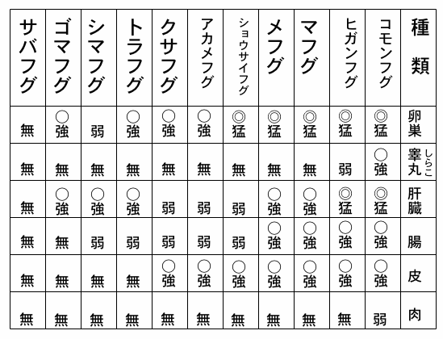

| 旨いものが食いたくなる本 合本版 | |
| 北大路魯山人 | |
| (2016) | |
旨いものが食いたくなる本 合本版
北大路魯山人
目次
明石鯛に優る朝鮮の鯛
味を知るもの鮮し
甘鯛の姿焼き
アメリカの牛豚
鮎の食い方
鮎の試食時代
鮎の名所
鮎ははらわた
鮎を食う
洗いづくりの美味さ
洗いづくりの世界
鮑の水貝
鮑の宿借り作り
鮟鱇一夕話
生き烏賊白味噌漬け
いなせな縞の初鰹
猪の味
インチキ鮎
鰻の話
美味い豆腐の話
海にふぐ山にわらび
梅にうぐいす
欧米料理と日本
お米の話
お茶漬けの味
衰えてきた日本料理は救わねばならぬ
夏日小味
数の子は音を食うもの
家庭料理の話
カンナとオンナ
胡瓜
京都のごりの茶漬け
くちこ
車蝦の茶漬け
弦斎の鮎
高野豆腐
小ざかな干物の味
個性
琥珀揚げ
昆布とろ
昆布とろの吸い物
西園寺公の食道楽
材料か料理か
残肴の処理
三州仕立て小蕪汁
山椒魚
椎茸の話
塩昆布の茶漬け
塩鮭・塩鱒の茶漬け
小生のあけくれ
食器は料理のきもの
知らずや肝の美味
尋常一様
すき焼きと鴨料理――洋食雑感――
世界の「料理王逝く」ということから
雑煮
筍の美味さは第一席
だしの取り方
田螺
茶碗蒸し
てんぷらの茶漬け
デンマークのビール
東京で自慢の鮑
納豆の茶漬け
鍋料理の話
伝不習乎
握り寿司の名人
日本料理の基礎観念
日本料理の要点 新雇いの料理人を前にして
海苔の茶漬け
鱧・穴子・鰻の茶漬け
ハワイの食用蛙
蝦蟇を食べた話
美食多産期の腹構え
美食と人生
美食七十年の体験
一癖あるどじょう
美味放談
河豚食わぬ非常識
河豚は毒魚か
筆にも口にもつくす
フランス料理について
鮪の茶漬け
鮪を食う話
味覚の美と芸術の美
味覚馬鹿
道は次第に狭し
持ち味を生かす
湯豆腐のやり方
夜寒に火を囲んで懐しい雑炊
洛北深泥池の蓴菜
料理一夕話
料理芝居
料理する心
料理と食器
料理の第一歩
料理の秘訣
料理の妙味
料理は道理を料るもの
料理メモ
料理も創作である
若鮎について
若鮎の気品を食う
若鮎の塩焼き
若狭春鯖のなれずし
明石鯛に優る朝鮮の鯛
たいについて、京都、大阪で、子ども時分から聞きこんでいることは、玄海灘を越してきたたいでなくては美味くないということだ。玄海灘を通過してきたたいには、その骨にイボのような珠みたいなものができていると聞かされた。
私は昭和三年、朝鮮へ古窯跡の探査と、陶器原料の蒐集の目的で渡った。その時季がちょうど五月一日から三十日までであった。行程は朝鮮半島の京城から以東をおよそ全部旅行した。その折、太口面（康津郡）すなわち木浦から少し手前、康津で高麗青磁の窯跡を探って、たくさんの資料を蒐集し、帰途、岩礁の多い海岸に沿って、曲浦渚汀を、順天・馬山・釜山方面へと巡遊した。ところが、これらの地方で、はからずも非常に美味いたいの刺身をふんだんに食わされた。そのたいの刺身は、自分が今までに味わったことのある明石だいよりは、はるかに――とも言えるほど美味しいたいであった。
その後も、到るところで、そのたいを飽かず賞味して、感心させられることしばしばだった。実際、その辺に移住してきている内地人や、地元の人たちだけに食わしておくにはもったいないほどのたいであった。内地では容易に舌にのらないほどの逸品だからである。その美味さは今日まで忘れがたい。
元来、朝鮮は鳥でも魚でも一体に不味いところで、ことに京城にいた時代など、一度だって美味い魚を食ったことがなかった。昭和三年の朝鮮滞在中もたべものに難儀した。それだから魚らしい魚などないものと決めてかかっていた。馬山あたりで美味いたいが獲れるということなど、かつて耳にしたことがない。それがどうだろう、全く偶然、その美味いたいに、はからずも出会わしたものだからたまらない。意外な掘り出しものに驚いた。
そこで、このすばらしいたいが、一体どこへ売られて行くのか調べてみると、出漁先沖合いに下関方面から買い出し船がやってきて、その多くは内地へ運んで行くのだそうだ。
話は別になるが、たいについての思い出のひとつに、かつて北陸の山代や山中の温泉から金沢地方にかけて九谷焼き研究のため、久しく滞在していたころのことである。元来、北陸というところは、いわし・たら・なまこ・かに・甘えびなどの特産物は別として、一般魚類は不味いものばかりだ。特にたいなどは南日本海に比して問題にならないほどひどいものだ。ところが、加賀の海で五、六月のころ、土地でやかましく言う「たい網」という特種の漁法によるたい漁に遭遇することがある。この網で獲れたものは、明石だいとほとんど同じもので、事実美味いのに驚かされる。この地方で、ふだん獲れるたいは、明石のまだいとは比較にならない劣等品だ。それなのに、この季節にかぎるたい網のたいは、全然明石だいと区別がない。
この地方の人が、たい網のたいを食って「明石だいよりはるかに美味い」と誇って関西人を怒らしたと言うが、その自慢もあながち否認できない。
どういうわけで、北陸にこんな美味いたいが、この季節に獲れるかと不思議に思ったが、ようやくそのわけがわかった。つまり、四、五月という時節は、本場の明石だいはもとより美味いときなので、それらをいろいろ思い合わせてみて、たいが玄海灘を越えてくるということは、岩礁や島嶼が蜂の巣のように存在する朝鮮南端に発育することだ。その巣窟をば、彼らは産卵、あるいはなにかの作用で大部分が東方日本の方へ向かって遊弋し、その途次、すなわち玄海灘を押し切って東漸し、大多数が瀬戸内海に入り、または九州、土佐あたりへも分れる。なお他の一部が同時に裏日本へもまわってきて、ふだんは影だに留めないものが、その産卵期だけ、たい網に入るのだろう。それで朝鮮南端、瀬戸内海、北陸、山陰、みなこの季節は同じ滋味を有しているのではないか。
毎年、北陸のほうでは、この優れたまだいを秋までかかって獲り尽すが、なお獲り洩れがあって、季節外にまだいがないわけではないが、すこぶる不味い。あるにはあっても、それはすなわち長汀白砂、岩礁少なく、好餌の乏しい関係と、生殖の関係などで、タネはいいものの、たいも生活状況の変調のために漸次不味いものとなり終っているようだ。
自分は今一度、朝鮮にそのたいを食いに行ってみたいと思っている。順天・馬山あたりのものは実に忘れがたい。
ふつう一般には朝鮮だいと言うと、トロール船漁でうすっぺらな赤さをした不味いものという概念のみあって、ついにその朝鮮にべらぼうによいたいが獲れるというようなことは聞かなかったが、バカにはならない。
（昭和七年）
味を知るもの鮮し
食物はなんとしても「美味く」あって欲しい。美味くなくてはよろこびというものがない。美味いものを食うと、人間誰しも機嫌がよくなる。必ずニコニコする。これが健康をつくる源になっているようだ。
美食を要求しているものは、口であるように思っているけれども、実は肉体の全部が連合して要求しているらしい。どうもそう考えられる。心というものも、その中の一員であって、常によろこびを理想としている。この心さえ楽しんでくれれば、他に少々間違いがあっても、打ち消されてしまうようである。
カロリーだ、ビタミンだと言ってみても、人間成人して、自由を知った者は、必ずしも心のよろこびとしては受け取らない。まず自分の好きなもの、好む食物でなくては、いかに名高い食物であっても、充分の栄養にはならないであろう。だから、他人がいかに「美味い」と言っても、自分が好まなければ、なんの価値もないのである。
他人が愛飲する酒の如きは、人によって天の美禄でもあり、百薬の長ともなるが、好まざる者には無価値である。煙草などもその一例であって、好まざる者には全くの無価値である。否、害毒となって健康をそこねるであろう。
人間一生涯好きな物ばかりで、三度三度の食事を楽しんだら、誰しも文句はないはずである。にもかかわらず、大抵は欲する美食とは縁遠い雑物を食事として堪え忍んでいるというのが、実際の生活になっている。あるいは無神経なるが故に、無頓着に過ごしている。そのいずれかである。
それも貧者であれば思うにまかせぬということもあろうが、相当の富者にして、食の自由を知らずじまいに過ごしている者があるのは、まことに気の毒のかぎりである。それにこういう人々には、決ってなんらかの持病があるのを見逃すわけにはいかない。
とは言っても、孔子の言った如く、「人飲食せざるは莫し、能く味を知るもの鮮きなり」は事実である。「一国の王者といえども、位人臣を極めた者とて、美術を解し、食を弁ずる者はない」と、若い頃、豪語したことを覚えているが、大体、今でもその考え方は変っていない。
世間、医薬に通暁する者、病後の療養に熱心な者は、数多く見受ける所であるが、目的を健康に置き、三度三度の食事の自由を高く叫び続けている者は容易に見当らない。ただもう世間並みに付和雷同し、個性なき食物、いわば家禽の如く宛てがい扶持に大事の一生をまかせているかである。自分の了見で好きなものを選択し、三度三度美味いもの食いをつづけることが理想的であるが、これを罪悪視し、ゼイタク者とし、甚だしきは異端者視し、自由食欲を許さない陋習をふしぎとしない風習をつづけているが、これは健康問題の上から深く考えて、食欲の自由を許すべきであろう。
しかし、実際問題となると情けないが、なにを食いたい、なにが食べたいと考える人があったとしても、答えは不完全である。なんでも結構に終る。数多くの「美味い」ものに通暁する所が不充分であるためであろう。我々が常に「美味い」と賞美し、口にする食物は、あらまし考えるだけでも一千種もあろう。詳しく調べるならば、一万種にも及ぶはずである。ところが世間一般が常に口にするものは、せいぜい五十種か百種であろう。驚くべき無関心である。全家庭は大体偏食をつづけているようである。本来言うならば、近来流行している栄養医学に関係ある人々が、食物と料理に精通されるならば、試験管中に一層の命が加わり、栄養料理は美味くないなどという今日の悪罵はおのずと雲散霧消し、日本人の健康増進にと寄与することは疑うべくもない。
とにかく、三度三度の食事は「美味く」なくては意義がない。しかし「美味い」にも段々があって、味覚の程度も、生得的にひとりひとり違っているから、無差別に断を下すわけにはいかない。年齢差という感覚の相違もあって、美味い、不味いは、一概に言ってのけるわけにはいかない。誰が美味いと言ったか、不味いと言ったか、その言った人により判断するより仕方がない。
美術や食物の良否は、一様に誰にでも分るというわけにはいかないから、その辺注意深く考える必要がある。ことにみながやさしいと誤認している日本料理は、実はむずかしくて容易に究められるものではないから、従ってまた容易に料理し得るものでもない。家庭で日本料理を本気に日本料理でございとつくることは、現今人では、一部の茶人以外は不可能と言ってよい。ラジオ料理の先生も、聴講生も、いかにもレベルが違いすぎて、今のままでは処置のない存在に過ぎない。明治初年以後曲げられて来た日本料理は、もうそろそろここらで反省し、根本から了見を改むべきで、例えば、世上往々中毒事件を惹起している惨事の如きは、料理関係者の堕落が原因である。要は眼で見る色沢、鼻で嗅ぐ香気、口加減に見る味覚等により、善悪良否は判別されるものであるが、経験不充分な者、責任を敢えて感ぜざる者、全然無神経なる者、誠意無き者等によって、中毒原因の根本をつくっていると、私は見る者であって、食品原料を軽く取り扱う陋習を厳しく改めたいと念願している。
しかし、食品原料の良否などに全然眼の利かないお役人の、形式的な取り締まりに委ねて安閑としている現状のつづくかぎりは、中毒事件の後を断つなどは望みなきものと見なければなるまい。この点、高級料理はまず安心である。原料の質に重きを、鮮度高きものに重きを置くからである。仕入れに当って、高い安いは本来無頓着であるからである。
私は多年ラジオ料理にも注意深く耳を傾けつづけて来たが、その講師は男女ともに傾聴に価する講者を発見したことはない。いかなる家庭に育った人たちか、どんな料理経歴をもつ人々なるか、いずれもが低調な料理職人から学んだであろうことが、ほぼ察し得られるゆえに、生きた資材も、いらざる手間のために、味を損ね、料理学上無知のそしりを免れず、まことに噴飯に堪えないのが実情である。毎日のように栄養知識、経済知識を吹き込まれるが、私の言う料理は「美味く」なくてはならないという。この美味い料理の話に出会ったことはない。ことに「美の伴った料理」これは絶無と言ってよい。殺風景そのものである。要するに、識者がひとりとして「美」を知らないためであろう。
もとより料理調度品に趣味を有し、眼の利くまでに研究を重ねた人の出現しない事実は、ふしぎとは言えない現状にある。
よき食器、よき調度品はものを美味く食わす、これは昔から言うことである。大方は、この言葉を耳にしているはずであるが、実際に研究している傾向はない。惜しむべき傾向である。富者たると豊かならざる庶民たるとの区別はあっても、心に楽しむ料理に関心があるなら、それぞれ相応の工夫をもって心を楽しみに導くべく、美しく豊かに処置し得るものである。知ってはいるが、持つものを持たないから、それは無理だ、などという者の後を断たないということは、まことに残念である。
品位好尚が高雅であれば、つくられるところの料理も、すべての出で立ちも、おのずと品位備わり、口に美味く、心に楽しく、完全に栄養の目的は達し得られるはずである。
料理の先生も料理屋も、それぞれ段階があって、為す所、語る所の相違はあっても、事実となって現われる所は、いずれも美味そうに見える料理であって、真に美味い料理、それは稀に見る事実は別として、まず皆無と言ってよい。
刺身の如き加工少なきものは、高級料理屋に見ることはできるが、様々に工夫され、素人をして、これはどうしてできたかに感動さすといったふうなものには、決して「美味い」料理はないのがふつうである。ところが、この「美味く」ない料理を見て興味を感じ、騙される風習もあって、虚偽の流行となり、真の味覚は宙に迷ってしまうのである。美食に恵まれたわが日本は、数千種類の美味なる魚介を持ち、数千の美菜を産している有難い国である。鮮度に注意すれば、化学調味料などに意を用いる必要はない。
日本の山海は、美菜美魚に恵まれすぎている。この天来の持ち味を生かすか殺すかが、料理する者の責任であり、楽しみの種でもある。その昔、単なる大豆、得体が知れない芋、これらを生かして豆腐を発明し、美味くて安くて、日常食としても万人貴賤都鄙みな愛好するもの、蒟蒻をつくりあげた作家は、中国人にしても、日本人にしても、驚くべき創作家的料理人である。
現今のように無闇に砂糖を投じ、ものの持ち味を殺し、いささかも顧みる所なき唯々慨歎するほかはない。欧米人をやたらに有難がり、一から十まで外人の所作事真似事風習は、心ある者をしてヒンシュクせしめているが、洋食に砂糖気のないことには気付かないのか。日本人は、ライスカレー、シチュー、ソースまでみな甘くしてしまった。砂糖は劣食品を瞞着する秘密を持つことを知るべきである。いずれにしても、砂糖の乱用と化学調味料を無定見に用いることは、充分慎むべきことであろう。
（昭和三十三年）
甘鯛の姿焼き
この料理は、東京に昔からあるものだが、大きいのでちょっと厄介である。金串を打つのにコツがあり、なにも知らずに、ただやたらに何本も串を打ってはいけない。
最初に金串を扇形になるように打つ。それからあとは何本打とうと、扇の要のところを中心にすれば適当に打ってよい。そうすると、手で持つのに便利であるし、焼けても扱うたびに身がこわれるという憂いはなくなる。実際やっているのをごらんになれば、一目で納得されるだろうと思う。
甘だいといっても、東京では興津だいといわれるもので、静岡を中心とした近海でとれるのがよいとされている。関西に行くと、北陸からまわってくるもの、若狭から来ているものでぐじといっているが、これは北陸の海に棲息し、北陸の海のものを食っているので、興津だいとは大分違う。興津だいという甘だいとぐじといっている日本海の甘だいとは一見同じものだが、色が若狭ものは淡赤く桃色であり、興津だいと称する甘だいは通常のたいと同じくらい赤色を呈している。ぐじの方は鱗ごと焼いても食えるが、興津だいの方は剥がさねば食えない。
ぐじは鱗ごと食うところに風情があるのであって、一部の人々に喜ばれている。たまたま東京のある料理屋で、興津だいを鱗ごと焼いて出されたことがあるが、これは猿真似で大きな失敗である。東京のは鱗をはがして食わねばならない。鱗ごと焼くのは初めから間違いである。
若狭のぐじは、このようにしゃれた食い方になっているので、それを知っておくことも無駄ではなかろう。また興津だいにも種類があり、白皮と称されているのがある。白皮とは普通のように皮が赤くなく、薄桃色とか、白いものをいうのであって、東京の魚河岸に行くと普通のたいの二倍、三倍の値がしている。それだけに非常にうまい魚である。肉が柔らかいので生で食うことはないが、焼いて食う場合は見事なものである。
九州の白皮という甘だいは、関東には少ないが、九州から五島列島に行くと、そればかりのように多い。塩をして持って来るけれど、非常にまずく、従って値も安い。時によっては、普通の甘だいの値段の五分の一から十分の一ぐらい安い時もある。形も大きいので、小田原ではかまぼこの材料にずいぶん使っている。
列車で持って来るほど使っているので、現今の小田原のかまぼこは色がついていて、味がくどく、昔の面目を失っている。
本来高級魚である甘だいが、遠隔のため時間が経ち、その美味をまっとうしないのである。産地で食うと、もちろん美味なものである。
この魚は、イタリアのナポリで食ったことがあるが、うまい魚のなかった外国で、とても美味に感じた魚である。
アメリカの牛豚
小島政二郎君
シカゴの話の続きを書きます。シカゴでは、もう一軒、アイルランド人の経営している料理屋へ行ってみました。ここはやはりロブスター（伊勢えびの類。ただし伊勢えびには鋏がないが、ロブスターにはザリガニのように大きなはさみがある。はさみの大きさ、全身の三分の二くらい）の料理を売り物にしています。
水族館のように、ガラスのケースの中に塩水を満たし、それがロブスターの生簀というわけです。客はガラス越しに見て、好きな大きさの奴を選べば、それをすぐ料理してくれる仕かけになっていますが、味はサンフランシスコのグロット（イタリア料理店）で食べた伊勢えびとは比較にならず、ロブスターは頭が大きいから、もしかしたら脳みそがうまいかも知れないと思い、食べてみましたが一向うまくなく、肉は締まり過ぎていて味がありません。
さて、ニューヨークですが、ここでも土地のひとが最初に案内してくれた家は、アイルランド料理店。ここはカフェテリア式の店で、前もって作ってある肉やサラダを、客が陳列してあるところまで行って、好みに合ったものを自由に取れるようになっています。これでは料理の生命ともいうべき新鮮さがなく、不潔感さえあって僕は食べる気になれませんでした。そこで、特に注文してビーフステーキを焼いてもらいましたが、日本の牛肉の方がはるかにうまい。ただし焼き方はわりにようござんした。驚いたことに、ビーフステーキの大きさは日本の三倍もあり、二人で十三ドル五十セント取られました。
概してアメリカの牛豚類の肉は、うまくありません。辛うじて小羊の脇腹の肉が合格程度、ミルクも卵もよろしからず。
ニューヨークについての最初の印象は、アメリカ人の食欲の旺盛さと、食べ方の実に事務的なことです。
例えば、マンハッタンですが、町の一ブロックの角は必ず薬屋が占めています。ここではご存知のように、薬ばかりでなく、郵便切手、日用雑貨からソーダ水、アイスクリームなどを売り、軽い食事もできるようになっています。店の左側がスタンド式の食堂という作りが多い。見ていると、客はたいていハンバーグとケーキ、それにオレンジジュース、このくらいのものを注文して、またたくうちに食べてしまうと、さっさとまた雑踏の中へ紛れ込んで行きます。
ここで満腹するには、二ドルまではかかりません。朝食の場合ですと、トースト十セント、ハムエッグ三十セント、それにコーヒー二十セント、これで充分です。
ニューヨークのイタリア料理店マルキ。ここでのお酒とソーセージのうまかったこと。これは大書するに価します。わけてもリング（たらの類）という魚の空揚げは忘れられません。肉離れがよく、外国にもこんなうまい魚があるか、と感心しました。この魚の大きさは一尺五寸から二尺（四五～六十センチ）ぐらい。
魚といえば、国連大使沢田廉三さんの公邸でご馳走になったシーバスの刺身は、ちょいと日本にも例の少ないくらいおいしいものでした。
ここで相当名の知れた「都」という日本料理店。すきやきが出ましたが、お相撲さんのチャンコ鍋同然で、なにもかもゴッチャに煮ているのには驚きました。聞いたら、主人は新潟生まれ、東京も京都も知らず、参考のために僕がすきやきの模範を示したところ、
「ヘェー、すきやきというものは、そういうふうにして作るものですか」
と目を丸くしていました。呵々。
五月二日にロンドンに向かって出発します。
鮎の食い方
いろいろな事情で、ふつうの家庭では、鮎を美味く食うように料理はできない。鮎はまず三、四寸ものを塩焼きにして食うのが本手であろうが、生きた鮎や新鮮なものを手に入れるということが、家庭ではできにくい。地方では、ところによりこれのできる家庭もあろうが、東京では絶対にできないといってよい。東京の状況がそうさせるのである。仮に生きた鮎が手に入るとしても、素人がこれを上手に串に刺して焼くということはできるものではない。
鮎といえば、一般に水を切ればすぐ死んでしまうという印象を与えている。だから、非常にひよわなさかなのように思われているが、その実、鮎は俎上にのせて頭をはねても、ぽんぽん躍り上がるほど元気溌剌たる魚だ。そればかりか、生きているうちはぬらぬらしているから、これを掴んで串に刺すということだけでも、素人には容易に、手際よくいかない。まして、これを体裁よく焼くのは、生やさしいことではない。
もちろん、ふつうの家庭で用いているような、やわらかい炭ではうまく焼けない。尾鰭を焦がして、真黒にしてしまうのなどは、せっかくの美味しさを台なしにしてしまうものだ。いわば絶世の美人を見るに忍びない醜婦にしてしまうことで、あまりに味気ない。
こういうわけで、家庭で鮎が焼けないということは、少しも恥ずかしいことではない。見るからに美味そうに、しかも、艶やかに、鮎の姿体を完全に焼き上げることは、鮎を味わおうとする者が、見た目で感激し、美味さのほどを想像する第一印象の楽しみであるから、かなり重要な仕事と考えねばならぬ。だから、一流料理屋にたよるほかはない。
いったい、なんによらず、味の感覚と形の美とは切っても切れない関係にあるもので、鮎においては、ことさらに形態美を大事にすることが大切だ。
鮎は容姿端麗なさかなだ。それでも産地によって、多少の美醜がないでもない。
鮎は容姿が美しく、光り輝いているものほど、味においても上等である。それだけに、焼き方の手際のよしあしは、鮎食いにとって決定的な要素をもっている。
美味く食うには、勢い産地に行き、一流どころで食う以外に手はない。一番理想的なのは、釣ったものを、その場で焼いて食うことだろう。
鮎は塩焼にして食うのが一般的になっているが、上等の鮎を洗いづくりにして食うことも非常なご馳走だ。
私がまだ子どもで、京都にいた頃のことであった。ある日、魚屋が鮎の頭と骨ばかりをたくさん持ってきた。鮎の身を取った残りのもの、つまり鮎のあらだ。小魚のあらなんていうのはおかしいが、なんといっても鮎であるから、それを焼いてだしにするとか、または焼き豆腐やなにかといっしょに煮て食うと美味いにはちがいない。
それにしても、こんなにたくさんあるとはいったいどういうわけだろうと、子ども心にふしぎに思って聞いてみた。すると、魚屋のいうのには、京都の三井さんの注文で、鮎の洗いをつくったこれはあらだという。
私はずいぶんぜいたくなことをする人もいるものだなあと驚き、かつ感心した。それ以来、鮎を洗いにつくって食う法もあるということを覚えた。しかし、その後ずっと貧乏書生であった私には、そんなぜいたくは許されず、食う機会がなかった。それでも、今からもう二十五年も昔になるが、遂に私もこの洗いを思う存分賞味する機会を得た。加賀の山中温泉に逗留していた時のことである。
山中温泉の町はずれに、蟋蟀橋という床しい名前の橋があり、その橋のたもとに増喜楼という料理屋があった。鮎とか、ごりとか、いわなとか、そういった深い幽谷に産する魚類が常に生かしてあって、しかも、それが安かった。鄙びた山の中の温泉には、ろくに食うものがないから、飯を食おうと思えば、どうしてもそこへ行くよりほかはなかった。
そんなわけで、私はよく増喜楼へ人といっしょに食いに行った。そうした渓魚を食っているときに、ふと子どもの頃知った鮎の洗いのことを思い出した。鮎も安かったからではあるが、さっそく鮎の洗いをつくらして食ってみた。驚いた。とても美味いのだ。なるほど、三井が賞味したわけだと合点した。
美味いに任せて、その時はずいぶん洗いを食った。そうして人が訪ねて来るたびに、増喜楼へ案内して、洗いをつくらせてはご馳走した。ところが、習慣とは妙なもので、たいがいの人は、あっさり食わない。頭はどうしたとか、骨を捨てちゃったのかと心配する。当時、京都相場なら二円くらいもする鮎が、一尾三十銭ぐらいで始終食えたのだ。それが洗いにすると、一人前が一円以上につく。鮎をそんなふうにして食っては、なんとなくもったいないような、悪いような気がして、美味いとは知っても、勇気の出にくいものである。
しかし、所を得れば、洗いは今でもやる。この鮎の洗いからヒントを得て、私はその後、いわなを洗いにして食うことを思いついた。
いわなは五、六寸ぐらいの大きさのものを洗いにすると、鮎に劣らぬ美味さを持っている。
鮎はそのほか、岐阜の雑炊とか、加賀の葛の葉巻とか、竹の筒に入れて焼いて食うものもあるが、どれも本格の塩焼きのできない場合の方法であって、いわば原始的な食い方であり、いずれも優れた食い方ではあるが、必ずしも一番よい方法ではない。それをわざわざ東京で真似てよろこんでいるものもあるが、そういう人は、鮎をトリックで食う、いわゆる芝居食いに満足する輩ではなかろうか。
やはり、鮎は、ふつうの塩焼きにして、うっかり食うと火傷するような熱いやつを、ガブッとやるのが香ばしくて最上である。
鮎の試食時代
あゆがうまいという話は、味覚にあこがれを持ちながら、自由に食うことのできない貧乏書生などにとっては、絶えざる憧憬の的である。わたしも青年の頃、ご多分に漏れず、あゆを心ゆくまで食いたいと夢にまでみた時代があった。この夢を実現したのは二十四、五歳のころであったろうか。もちろんそれまでにあゆを全く口にしなかったわけではない。だが、あゆ通の喜ぶ上等のあゆによって、あゆの美味をテストするという意気込みで食ったのは、その時が初めてであった。わたしは日光の大谷川のあゆをねらっていた。おそらく大谷川のあゆがうまいということをいつとはなしに聞いていたのだろう。わざわざ日光までなけなしの金を懐にして出かけて行ったのである。
その時の価がなんでも一尾五、六十銭ぐらいであったと記憶している。それを二尾ばかり食ってみた。あゆは新鮮だし、色つやもよく、容姿も優れていて確かに一等級のものであったらしい。が、この時の偽らざる感じをいえば、うまいうまいとひとはいうが、なんだってこんなものが本当にそんなに美味なのかしら、というのが本音で、当時青年のわたしの味覚にはどうしてもしっくり得心がいかなかった。そうしてこの時以来、あゆの味はいよいよ真剣な宿題として残されたのである。
その後しばらくしてうまいと思って食ったのは、京都の保津川のほとりにおいてであった。洛西嵐山の渡月橋を渡って、山の裾を七、八丁登ると、そこに嵐山温泉というのがある。ここで食ったあゆこそはなるほどと得心がいった。まったくうまいと思って食った。いつのころかはっきり憶えぬが、なんでも好況時代の絶頂に達したころででもあったろうか。ここのあゆは一尾五円を通常の値段としていたそうだ。
織物で京都屈指の名家たる今出川堀川の北川の主人某が、かつてわたしに向かい、「京都であゆを食えば、まず通常は二円で立派なものが食えますね。ところが、嵐山に行って食うと一尾五円は出さなあきまへん。京都広しといえども、五円のあゆを嵐山まで食いに出かけるものは、京都人にもまずおらへんやろ」と、いうのである。
そうしたご自慢を聞かされたわたしも、当時まだそういうふうに自由に食欲を満たすだけの財力を持たなかったから、うまいには相違ないと羨望しながらも、得心のゆくまで食うわけにはゆかなかった。ただいたずらに憧れるだけだった。
ところが、三十歳くらいのころ、京都に帰省した時、ようやく宿願を達成することができた。あゆを食うくらいはなんとか都合がついたからであり、かつまた、内貴清兵衛という先輩のご馳走もたびたびあって、何十回となく各所を食い歩くことができたおかげであった。時には一日に二度も三度も吟味してみた。
京都では、宇治の菊屋とか、山端の平八とか、嵯峨の三軒茶屋など、あゆを生かしておいて食わせる店が諸所にあった。そうしたところを片っ端から食い歩いて、どうやらあゆの味が心底から舌に乗ってきた。
鮎の名所
あゆをうまく食うには、あゆの成長と鮮度が大いに関係する。京阪や東京でいうと、七月がよい。地方によっては、早い遅いがある。子を持つ前の最大なのがよい。子を持ってからは二番目といってよい。見た目に見事なのを喜ぶ者もあるが、これは素人の話、東京でも盛んにあゆを賞味するので、河岸には日本全国からイヤというほど送られて来るが、東京であゆをうまく食おうとするのは土台無理な話で、かれこれいうのがおかしい。あゆの味は渓流激瀬で育った逸物を、なるべく早目に食うのでなければ問題にならない。岐阜のあゆも有名ながら、わたしの口にはあゆ中の最高とはいえず、況や東京ではなおさらだめと知らなければならない。
京都保津川のもよいが、これは土地で生きていてこそいちばんである。東京であゆをうまく食うなどというのは断念した方がよい。多摩川にもいることはいるが、川が適しないためか、さっぱりだめだ。かつて多摩川のあゆでうまいのを口にしたことがない。あゆのよしあしは気候や川の瀬が大いに関係する。日光の大谷川あたりのはちょっとうまいが、これとてもその場で食わなければだめだ。東京へ持って来たので台なしで自慢にはならない。わたしは東京でうまいあゆを食う欲望を昔から捨てている。
あゆのいいのは丹波の和知川がいちばんで、これは嵐山の保津川の上流、亀岡の分水嶺を北の方へ落ちて行く瀬の急激な流れで、姿もよく、身もしまり、香りもよい。今のところここ以上のを食ったことがない。和知川ものを生かして京阪に運び、その日のうちに食えばうまいが、二、三日経っては脂が抜けてしまう。生きていても、焼いてみるとはらわたなしで、トンネル風に空洞を作っている。はらわたというのは、ほとんど脂でできていると見え、三日も生簀におれば、ほとんど脂は抜けてしまう。もっとも賞味すべきはらわたが抜けてしまっては価値がない。
あゆは土地土地で自慢するが、それは獲りたてを口に入れるからで、結局地元がいちばんうまい。すべて小型なほどよい。
岐阜人もなかなか自慢らしいが、瀬が激しくないとみえて身がしまらず、ブヨブヨしていて一流品とはいい難い。瀬が激しければ肉がしまるらしい。岐阜は鵜飼いで有名だが、料理して食わす段では、はなはだ心もとない。将来は生きのいいところを、鵜匠がその場で見物客に食わす考えを持つべきである。そうすれば、岐阜人にもあゆを語る資格ができるというものだ。地方人がおのおの自分の土地のあゆがいいとか、まつたけがいいとか、たけのこがいいとか、我田引水を絶叫するのは、要するにその土地にいて、その土地の新鮮なものを口にするからうまいのであって、遠くから来たものを食っては、うまかろうはずがない。たいてい土地のひとが、めいめい自分の土地のものにかぎるというのはこの理由によるのである。
しかし、地方人は都会人のように、さまざまのものを体験していないから、勢い我田引水におちいる。あゆにしても、まつたけにしても、いろいろと経験してこれがいいということにならないと、ものの真価をつかむことはできないものだ。井の中の蛙で世界はこれだけだと思うようでは、いつまでたっても、ものの真価はつかめないのである。
例をあげると、土佐のかつおのたたきなどは、もっとも世間的に有名なものとしてひとびとの耳に入っているが、実際はたいしたことはない。なぜかといえば、土佐という海に面した国は料理が発達していないし、贅沢を知らないひとが多いからである。このため土地のひとにはかつおのたたきが、実に天にも地にもかけがえのないほど、うまく感じられるのである。
以上のように、何事も視野が狭いとこんなことになってしまう。それを都会の半可通がめくら判をおして、土佐のかつおのたたきとしきりに鉦や太鼓を叩きたがるから始末に困る。実際はそれほどうまくもないし、やり方はわれわれからみると、むしろ食いにくいものにしているというほかない。結局、井の中の蛙なにをいうかというオチが出てくる。
鮎ははらわた
鮎の美味いのは大きさから言うと、一寸五分ぐらいから四、五寸ぐらいまでのものである。それ以上に大きく育ったものは、第一香気が失われ、大味で不味い。卵を持ち始めると、そのほうへ精分を取られるためか、香気を失うばかりでなく、肉が粗野になり、すべてに下品になる。
鮎のどの部分が一番美味かと言えば、はらわたを持った部分である。もちろん、新鮮でなくてはいけない。頭も特殊な味はあるが、四、五寸にもなると、ガブッと快く骨ごと食うわけにはいかないから、まず食わない人が多い（もっとも、食通は頭から食いつき、味わった後、カスを吐き出すが）。また尻尾の方、排泄口のある下のほうは美味くもないから、鮎食いは問題にしない。そこで、頭と尻尾の部分を除いた中間部、そこがなんと言っても一番美味い。
鮎は背の上部、ことに頭に近いほど、多くの脂肪を持っている。そして、この脂肪の下側がはらわたで、脂肪とわたとの両側を備えたこの部分が、一番美味とする所なのだ。
もちろん、生きているかの如きものでないと最上とはいかぬが、しかし、生かしてあったからと言って、必ずしも美味とは言えぬ。鮎は年魚と言われているとおり、一年間にめだかの大きさから七、八寸にも育つ成長力の非常に旺盛な魚である。それだけに、一日餌を食わないとゲッソリ痩せてしまう。餌のない水の中に、人工的に水勢を与えて生かして置いても、わずか一日か二日の間に自身の脂肪を消耗し尽して、脂肪分の多い肝心のはらわたはなくなってしまう。
私はかつて、東京でこんな経験をした。
最高の食品のみを扱う日本橋山城屋主人自慢の生鮎を頭からガブッとひと口に食った。ところが、腹の中がポッカリ空洞になっている。オヤ、この鮎はどうしたんだ、わたがないぞ。わたのない鮎なんてあるはずがないから、てっきり皿の下にでも落としたのかなと、あたりを見廻したが見当らない。それでは自分の口へでもすでに入ってしまったのかと、そのつもりで噛んでみたが、わたの味がない。てんで、わたらしいものは感じられない。それからいよいよふしぎになって、残りの一尾を今度は用心しいしい丁寧に試食してみたが、やはり、わたがない。全くのガラン洞なのだ。そこで初めて鮎のようなやつは、人工的に水道の水なぞで生かしておくと、はらわたまで、ほとんどなくなってしまうものだということを知った。
よくよく考えてみれば、これはふしぎに思う方がどうかしているのだ。わずかな時に急激な成長を遂げる鮎であってみれば、餌のない水の中に、激しい水勢だけを与えられて泳ぎ廻っていたのでは、脂肪に富むはらわたを持続できるはずがないのである。
その点、なんと言っても、自然の流れに生簀を拵え、そこに鮎を生かしておく料理屋へ行って、一日ぐらい生簀に飼われたものを食うのを上等としなければならない。この頃、東京でも生かして食わせる所もあるにはあるが、せっかくながら、ほんとうの鮎の味は味わえない。まあ生きていたものを、東京の町中で食ったという単なる気分だけのものである。
（昭和十年）
鮎を食う
鮎は水が清くて、流れの急な、比較的川幅の広い川で育ったのでないと、発育が充分でなく、その上、味も香気も、ともによくない。これが鮎のよしあしを決定する大体の条件である。
食べるにははらわたを抜かないで、塩焼きにし、蓼酢によるのが一番味が完全で、しかも、香気を失わないでよい。醤油をつけて照り焼きなどにすれば、醤油の香りや味醂に邪魔され、その天稟の香気は、たちまち滅してしまう。また、そのはらわたを抜いてしまったのでは、鮎そのものの味覚価値は語るまでもないことになってしまう。
東京へ来る鮎は、伊豆、九州が多いが、少なくとも地元で獲れてから三、四日か一週間かは、氷の中で経ったものである。そのほか、各地方から続々やって来るが、百のうち九十九までは、はらわたが抜かれている。よしやはらわたを抜かない工夫を凝らして、うまく蓄えたものでも、焼いている間に、腹が切れがちである。こうした鮎で、鮎のほんとうの美味さを知ろうたって、そりゃ少々無理ってものである。つまり、東京で鮎の真味を望むのは、木に拠って魚を求むるようなものである。
また、獲り方の如何で味も変る。岐阜の人は鵜に呑ませたのが一番いいと言って、年々歳々うるさいまでに自慢を繰り返している。それは鵜が鮎を瞬間に即死させるために、生から死への衰えをみせないからだと説明すべきだ。鵜に呑ませた鮎には、鵜の歯型がついていて感じはよくないが、味に至っては、たしかに岐阜の人たちの自慢するとおりだと是認してよい。
その大きさの加減でも、獲れごろでも味が大いにちがう。九州と関東地方とをいっしょにして言うことはできないが、京都あたりで言えば、まず六月中と言えよう。長さでなら五、六寸のがよいようである。それが八寸も九寸もあって、あじかさばのようになって、東京人じゃないが、鮎の大きさを得意になってよろこぶようになったのでは、もう面白くない。子もちの鮎も、もちろんその意味から鮎食いには歓迎されない。つまり、鮎は若鮎から子もちになるまでの間がいいのである。要するに鮎の肉の分子が、細かくなめらかな間が美味いのである。
桂川あたりで投網で獲るとき、鮎は投網の下をくぐって逃げようとし、そのはずみに砂を食う。そこでその砂を吐かせるために、一日くらい生簀に入れるが、これがお客の都合で三日も経つと、必ずもう不味くなる。鮎の脂が落ちて、痩せるからである。また、加茂川べりの料亭なぞでは、鮎を生簀に入れて、いわゆる生きた鮎をお客に食わせようと努めているが、これも獲ってから翌日くらいまでのはいいが、三日経ち、四日経ちすると、もう見かけ倒しとなる。火にかけて焼くとき、尾鰭につけた化粧塩が、全身の脂のために、じくじく滲んで、黄色味を呈し、化粧塩を不体裁にするようになるくらいでないと、ほんものではない。
かくて、化粧塩に、その形を整えた鮎が食膳にのぼったとする。この場合は、箸で身をむしったり、首ごと背骨を抜いて（京、大阪の人が得意に頭から骨抜きをやる癖）骨なしの姿をパクパクやったりしないで、小口かぶりに頭から順次にかぶって食うのが、真に鮎食いの食い方である。もちろん、骨は吐き出すことだ。
頭と腹の部分とを食い残し、背肉ばかりを食うようなのは言語道断で、せっかくの鮎も到底成仏しきれない。
なお、ついでだから言うが、岐阜のような鮎どころでは、客の顔をみると、待ってましたとばかり、その鮎を塩焼き、魚田、照り焼き、煮びたし、雑炊、フライと、無闇に料理の建前を変えて、鮎びたりにさす悪風がある。これは知恵のない話であって、慎むべきことだ。ことに新鮮な鮎をフライに揚げるなどは、愚の骨頂と言うべきだ。
（昭和六年）
洗いづくりの美味さ
美味いさかな、それはなんと言っても、少数の例外は別として関西魚である。さかなによっては、紀州、四国、九州ももちろん瀬戸内海に同列するものである。伊勢湾あたりから漸時西方に向かい、瀬戸内海に入るに及んでは、誰しもなるほどと合点せざるを得ないまでに、段違いの美味さをもつことは、夙に天下の等しく認めるところで、関東魚はこの点、一言半句なく関西魚の前に頭を下げずにはいられない。しかし、例外の逸品にかかっては、またどうしようもないもので、これから七、八月ごろまでつづく東京近海もののピカ一、星がれいの洗いづくりの前には、関西のそれなど、とても及ぶものではない。私はめったに天下一品などと言おうとするものではないが、こればかりはどうしても天下一品と叫ばざるを得ないのである。
東京築地の魚河岸における朝の生簀には、その偉容、実に横綱玉錦といった風な面構えをもって、水底に悠然たる落着きを見せている。美味さ加減は大きさで四百匁(千五百グラム)くらいが上乗。ふつう行われる黒だいの洗いよりは少々厚目につくり、水洗いしたものを直ちに舌上に運べば、まさに夏中切っての天下第一の美肴として、誇るに足るものである。このかれい、なかなか大きく成長し、一貫目（三千七百五十グラム）以上のものも決してめずらしくないが、味の上では問題にならない。
元来、洗いづくりは、生きた魚でなくては駄目なものである。ところが京の魚市場はもちろん大阪の市場にも、東京のそれのような生簀の設備がない。あっても不完全である。従って洗いづくりに事を欠き、洗いと言っては東京の独壇場の観がないではない。だが、東京とてもあの黒だいを紙のごとく薄く洗ったものなど、てんで問題にならないものもあって、一概に誇れたわけのものでもないが、二、三百匁くらいのすずきの洗い、同じくこちの洗いなどは、充分自慢に価する。また、三、四百匁のまだいの洗いも相当のものであるが、星がれい・すずき・こちには及ばない。特殊のものに、あかえい・なまず・たこなど、ややグロなものがあるが、まずは下手珍味の類に加うべきである。こいとふなでは格段にふなが美味く、伊勢えびと車えびでは車えびが調子高く、うなぎ・どじょうの洗いを酢味噌で食う手もあるが、夕顔棚の下ででもなければうつらない。
最後に極め付この上なしを紹介する。それは百匁（三百七十五グラム）くらいのいわなの洗い、成熟期七月ごろの鮎の洗いなど。都会では容易ではないが、場所を得れば、敢えて難事ではなかろう。いわなの洗いは、どうしても渓谷深く身をもって臨む以外に法のないものである。私は黒部渓谷、九谷の奥、金沢のごりやなどでしばしば試みているが、星がれいに匹敵して、しかも格別という態の風味をもっていて、絶賛に価する。
今ひとつ格別のものに、北陸ではたらばがにの洗い、東京ではしゃこの洗いがある。これも珍重するに足るのみならず、簡易美食の王者と言えるであろう。裏日本の各所になまずがいる。これも星がれいに匹敵するような美味さをもっている。
（昭和十三年）
洗いづくりの世界
これから当分はさかなの洗いづくりの季節である。洗いにもいろいろあるが、一番美味いのは鮎の洗いである。鮎の五、六寸ぐらいの、もちろん獲りたてのものか、または生かしてあるのでなければならないが、これを三枚におろし、片身を斜めに五、六枚につくり、蓼酢、わさびなどを調味に添え、肉のいかったのを食う。
鮎特有の澄んで、うるみのある匂いにからんで、一種の天才そのもののような肉の味わいが感覚される。東京にいて考えると、たいそうぜいたくなようであるが、鮎の獲れるところでは、別段のことでもないのである。現地で、しかも、食膳のあたりに山嵐の気でも迫るようであれば、いよいよもって得たり賢しである。この鮎を洗いにして食べる法は、従来の背ごしづくり以外には、あまり一般に行きわたっていないようであるが、味覚の検討、次第にやかましさを加え、交通の利便いよいよ適するに従って、必ずや相当のひろがりをもつに至るだろう。
山川のさかなでも、他に洗いにして美味いものにいわながある。いわなという奴は、深い山から絞り出される雪解けの冷たい水に育つ。大きなのは一尺五、六寸もあるが、八、九寸ぐらいのものを洗いづくりにしたその味わいといったら、まことに一種容易ならぬものがある。
鮎の肉とはちがって、これはもちもちとした鈍重な舌ざわりで、しかも、その中に言いようもなく淡泊で、調子の高いものが含まれている。薄紅を誘って、ほのぼのとした白さをもち、大半透明なところで打ち止めている。その肉の色を見ただけでも、食味の機能はおのずから動き出ようとする。しかし、これも都会にいては話に聞くだけのもので、どうするわけにも行かぬが、暑を山中に避けて、もし、いわなが手に入った場合、これを試みないという法はない。
海の魚では、この五、六月を節として、かれい類が洗いづくりに向いている。がんぞうかれいは美味いが品が少なく、東京でもよほどの食道楽家でないかぎり、これをはっきり承知している者がない。星がれいの洗いづくりも美味い。これは一般向きには、かれい類中の王者として扱われているようであるが、幸い品も豊富で、東京の一流どころの料亭十軒ばかりが使うだけは、毎朝の魚河岸に、その生彩を点じている。
まこがれいもちょっと食える。石がれいに至ると一段と味が落ち、その上、一種のくせもあるので、全然文句なしというわけにはいかない。
ひらめの洗いづくりもやられないことはないが、東京のひらめは大味で、且つ平凡だ。
すずきの洗いづくりは、一般に三百匁（千百二十五グラム）ぐらいのものが一番美味いようである。痩せたのと丸々太ったのとあるが、必ず後者を選ぶべきだ。東京の魚河岸には毎朝まだいを塩水に泳がせて、大いにその溌剌たる姿を見せている。百匁以上一貫五百匁ぐらいまでのものだ。従ってたいの洗いづくりは、もっとも自由にできる。だがこれは素敵だ――と叫ぶまでに美味しくはない。いかにたいだとて、東京では洗いづくりにしては、すずきにちょっと頭が上がらない。しかし、たいの洗いづくりは見た眼の態が至極よい。そのしっかりした格調のよさが、黒だいとなると、さらに味調を落とすことは、もちろんない。
こちの洗いも二、三百匁のものは至極結構。
洗いづくりの変り種としては、海にあかえい、川になまずを挙げることができる。海と川との差こそあれ、似通った性質だと見えて、その肉付き、味わい、共に同じようなところがある。強いて美味しいものとは言えないが、辛子味噌として盛夏三伏の節、たまに食べるのもわるくない。また、たこの洗いづくりも似て非なるものである。
東京では、ふなやこいの良品が乏しくて、充分には手に入りかねるが、関西へ行くと、さすがご自慢だけのものがあるようである。が、そのかわり、手長えびの上質なものなぞとなると、これは東京だ。手長えびの洗いのつくりは上品なものである。肉に充分のしまりがあって、他に悪いくせもなく、また妙に甘すぎもしないという点で、食通をよろこばすに足る。
車えび、伊勢えびも、そのくせを嫌わない者には結構であろう。この二者のうち、いずれかと言えば、車えびの方が無論上等である。
近ごろでは洗いづくりをするのに、氷水を使うのが当り前となっているようだが、これはなるべく避けたいものと思う。わずかの氷水でやられるために、同じ洗うにもせせこましくて、且つ出来上がりも清麗でない。この洗いづくりは、なんと言っても井戸の水が一等である。井戸の水さえ良質であれば、まず井戸水にかぎる――と言っても過言ではない。次から次へ、だあだあと出る水をもって、大調子な構えでもって拵える。
刺身のつくり方は、厚くても薄くてもよくない。その魚の性質に応じて一々工夫すべきであると思う。その加減、実にむずかしい。しかし、薄すぎるよりはまだ厚すぎるほうが、水っぽくないだけ取柄である。ただ、堅くて食いづらいという嫌いはある。
日中の暑い日ざしが、いつの間にか弱い風をはらんだ夕闇と交替する。働いた汗がさっぱりと拭われて、座前おもむろに一膳が置かれる。酒を伴わすとも、また伴わずとも、まず箸をつけてみたい洗いづくり。せっかく美味くあってくれなければならないのだ。
（昭和六年）
鮑の水貝
あわびの水貝は、あわびを切っただけでよいようなものであるが、これは元来、江戸前の料理だ。それと言うのも、関西にあわびがないからだ。あわびにかぎらず、貝というものは、東京を本場としなければならない。東京のほうは品物も豊富なので、料理法も心得ている。私どもも、そのコツは江戸前の料理から覚えたのだが、あわびの水貝料理は、あわびを固くすることが秘訣だ。まず生きのいい雄貝を塩をたくさん使って揉む。そうすると、塩のために、石突きが石のように固くなる。塩をたくさん用いれば用いるほど固くなる。塩が少ないと中の方までは固くならない。上皮だけが固くても、中の方がグニャグニャしていては余り美味いものはつくれない。中まで固い方がよいのだが、それは生きのよいものに塩を多く用いることで、これが水貝のコツである。
肉面に苔のついたような青いのが雄で、必ずこれを用いる。身の取り方はいろいろあるが、料理人の仕方は、あり合わせの庖丁や、わさびおろしの取っ手の先で起こしている。しかし、一番安全にやる方法は、御飯をつける杓子の小さいのを貝の底に入れて起こすことで、これだと貝に傷がつかない。腸を潰さぬように出す必要があるから、この方法でやると腸は存外潰れない。あわびの腸の中にはドロドロしたものがあって、それを薄い膜が包んでいる。これを破ると中の青白いドロドロのものが出るから、破らないように注意しなければならない。
腸を食べる方法は、水貝の時、生で器の中に入れると水が濁るから水貝と離して食べるほうがよい。生で食うにしても、そうしたほうがよろしい。また、やわらかいのをブツブツ切り、熱湯にサッと入れ、上皮の部分を熱湯に通して中は生のような、つまり、半熟につくり、それにレモン酢をつけて食べる。この方法もよろしい。しかし、ものの味から言うと、生で食べられるものは出来るだけ生、または生に近い方法で食べたほうが美味い。煮たり焼いたり、手を加えるほど味が崩れることを知っておくことが肝心だ。日本人が刺身を賞味するのは、総じて魚は生の肉が一番美味いことを証明していると言えよう。
そのほか、甘辛く味付けして煮て食べるのもよい。これはただ煮ればよいのであるから、つくり方は簡単である。いずれも好き好きにやったほうがよろしい。
（昭和九年）
鮑の宿借り作り
これは美食倶楽部時代の創案になるもので、今では茶寮料理の名物の一つに数えられている。
原料のあわびは房州のもの、関西方面では伊勢鳥羽浦、山陰では舞鶴あたりから相当いいものが出るが、茶寮では東西ともに房州のものを用いている。房州のあわびには雌が多く、雌は身が厚く赤味があってもっとも優れている。あわびの雄はどうしても身が固く、時期は今ごろから夏にかけてがよい。新緑の頃には、貝に身がついてくるのである。いわば、その身が若々しくなってくるのである。
料理法としてはまず貝から身を外して、塩洗いし、わたも取らずにそのままおろしだいこんをのせて蒸す。八十度ぐらいの熱で二十五分ぐらい蒸すが、その加減は貝にもよる。ちなみにあわびは蒸せば蒸すほどやわらかくなる。だがやわらかくなるにしたがって味が抜けるものであるから、なんでもやわらかくすればいいと思うのは間違いである。
蒸し上げたら充分に冷ましてから、姿なりに薄く切る。そして、よりうどにきゅうりなどを二寸ぐらいに切り、それを千切りにして下へ敷く。わたは別に外して輪切りにして添える。あしらいものに青じそを細かく刻んで添えるなども風情があってよい。
そして、ごらんの通り、元の貝の中に宿らせる。一度ひとの手にかかって料理されたが、ここに料理として生きた姿において食膳にまみえるという意をみせようという心遣いである。
二杯酢の作り方は、酢六勺にだし四勺、すなわち四分六にぼんやりやわらげた酢を作り、それに薄口しょうゆを四勺ぐらい入れ、露しょうがを注して供する。
風薫る初夏の時候に応じたまことに気分のよい、また口当たりのよいものである。家庭においてご主人の酒の肴にも、またご婦人やお子供衆にも向くものとしてお勧めする。
鮟鱇一夕話
獅子文六氏との対談で、熱海の福島慶子女史は「アメリカのパン、あんなもの問題じゃない。金魚の餌でしょう」とタンカを切っておられたが、その味覚識見はさすが見上げたものだ。そうはっきりいってのけられるだけのパン食通は、ざらにあるものではない。「うちの親爺（夫君のこと）はタマネギや肉の一杯はいっているオムレツが大好きなのよ」と田舎者扱いするところなど、女史もなかなか隅におけないおひとだ。
ところで、このわたしは、幼年時代から七十年の長期に渉って、日本料理を研究し続けているので、普通人とは少しばかり違うなにかを持っている。さて、そのうぬぼれで女史の日本料理観を随筆から探ると、まるっきり外人の日本料理観としか受け取れない。憶えざかりを十三年、日本を留守にしたひとのことであるから無理もないが、それにしても経験の浅さが、なに恐れるところなく筆を走らせているかのようだ。元来日本のことは何事によらずむずかしいことであるが、とりわけ美術と料理はむずかしく、位人臣をきわめたとて、美術と料理は分りにくいようである。その難問題をいとも簡単に勘所を掴んで説き起こし、説き去られるということは女史の聡明さを証明するものであろう。欲をいえば、今少し急がず落ち着き払って経験を積まれたら、味覚界で末恐ろしいひとになるのではないかと思っている。だが、熱海でのわにの話のようなものは、猿も樹から落ちる譬えのように福島女史の図らざりし不覚であろう。
女史がＫさんというわに屋からもらったという偽あんこうの件はまったく外人的で、あんこうに対する彼女の無知、無経験が生んだナンセンス。おかしくておかしくて、その無邪気さに一時笑いがとまらなかった。
偽あんこうを贈ったＫさんは、もとよりわにのつもりで女史の不在中においていったらしい。Ｋさんはわにの死肉だけを一片持って、相手をたぶらかさんものとなめてかかり、彼女も一応ひっかかってしまったのであるからおもしろい。「そのひとを知らんと欲せば、まずその友を見よ」というところである。
わには知らないが、もともとあんこうという魚は、鍋料理にするとすてきにうまい魚である。脂肪、ゼラチンに富んでいて、なかなかしゃれた食べ物である。ざらにある魚でありながら、鍋料理中もっとも乙なものとされ、高級層にも下級層にも賞味されている。しかも、それが骨以外捨てどころのないという魚で、肉を除いてはことごとくうまいところだらけである。この点、珍しく雅俗混合の趣味を有し、味にも、見た目にも、ユーモアたっぷりで、親しめることおびただしい。
ところで、問題の白色なるあんこうの肉、食って食えないこともない故に、殊さらに捨てられもせず食用に供されてはいるものの、とびついて食うほどの者はいない。いわんや肉だけを好んで食う者など一人もあるまい。わたしの経験からいえば、魚屋に前もって「肉はいらないよ」と断っているくらいだ。その代わり、他の部分は全部所望する。他の部分とは、吊り切りにした皮、鰭、臓物、とりわけ肝である。というわけで、肉が食いたくてあんこうを買う者はまずないであろう。Ｋさんが鰐の肉塊をあんこうと称して贈ったかどうか知らないが、この話はてんで問題にならないのだ。
あんこうとして家中の者に与えるなど、いよいよ問題にならない。一見して変だとは疑いながらも、庖丁したというところが、いささか外人的である。彼女があんこう料理に少しでも知識をもっていれば、いきなりＫさんに電話して「馬鹿」の一喝を食わしたはずである。「皮はどうした、肝は、鰭は、臓物は」とたたみかけて問いかけるに違いない。「Ｋさん、あんたは馬鹿だよ。あんこうの肉なんか、あんこう食いは昔から食わないと決まっていますよ」と叱りつけるところだろう。
さてあんこうかな......などと思ってみる余地はないはずだ。済んだことは仕方がない。それよりは身近な日本料理、まずそれを知ってほしい。お気に入ること請け合いだ。手初めにわたしがあんこう料理をして、御賞味願いましょうか。冬がいささか待ち遠しいけれど。
生き烏賊白味噌漬け
東京で西京漬けと呼んでいるのは、京都産の白味噌に魚類を漬け込んだものを言う。白味噌は京都が本場で、京都以外でできているものもないではないが、品が落ちる――となっている。白味噌は辛味噌からみると、大豆と糀とがかっていて塩が少ないために、甘酒ほどではないが、甘味のかった味噌である。これに漬け込む魚類は大体決まっていて、まながつお、あまだい、太刀魚が最適である。さわら、たいなども漬けないではないが、肉が締まりすぎる嫌いがあって、最適とは言えない。同じく肉は締まっても、ぶりはかなり効果的でまず例外である。白味噌漬けというものは元来高級品であり、且つ味噌そのものからが廉価ではないから、下らない魚類を漬けることは許されないわけである。ところがいかという例外がある。いかは肉の厚い大形のすみいか、あおりいかが認められて、やりいかは、やすっぽく扱われているが、新しくさえあればやりいかほど小味で、微妙な美味さをもったものはないのである。生きているやりいかの皮を剥いで刺身として食う美味は、すみいかやあおりいかの刺身の比ではないのである。しかし、知る人の少ないのは惜しい。生きたやりいかを白味噌漬けにする経験や、賞味する人に至ってはほとんど絶無にちかいかも知れない。これはやりいかの本場に残され、且つ家庭料理に漏れている料理の穴であると言えよう。
〔家庭で漬けようとする場合の心得〕
○白味噌ばかりでは甘味が足りないから、相当多量に砂糖を加えること。
○白味噌の有する水分では足りないから、冷酒を加えて、糠味噌ぐらいのやわらかさに溶くこと。
○魚類は切り身に一旦塩を振って、塩が中身まで通った時分（約五時間ぐらい）に程々に漬け込むこと。漬かり加減は春の陽気で、まる二日目くらいから五、六日目までがよい。冷蔵庫に置くか否かでは大変な相違があるから、この辺のことは各自が常識で考えなければならない。
○味噌漬けの魚は焼くのが一番の良法である。焼くときに味噌から出して味噌を洗い落とす。
○網に直にのせて焼くことは禁物である。網にくっついて始末がわるくなるからである。
○金串は扇の骨形に刺す。ぜひとも金串に刺して焼くことである。どんな焼き魚でも、そうした方が美しく焼けて、どんなに焼きやすいか知れない。
○火のおこり方が激しい味噌漬けは焦げやすいから遠火で焼くのがよい。火にかけて、魚の上を金物のなべぶたで覆うと、とてもうまく蒸し焼き風に火が通って、まちがいなく焼ける。
○金属製のなべぶたをかぶせて焼くことは、いついかなる魚を焼くときにも利用するのがよい。
一大秘訣とでも言うべきであるからである。
（昭和十四年）
いなせな縞の初鰹
鎌倉を生きて出でけん初鰹 芭蕉
目には青葉山ほととぎすはつ鰹 素堂
初がつおが出だしたと聞いては、江戸っ子など、もう矢も楯もたまらずやりくり算段......、いや借金してまで、その生きのいいところをさっとおろして、なにはさておき、まず一杯という段取りに出ないではいられなかったらしく、未だに葉桜ごろの人の頭にピンと来るものがある。ところで初がつおというもの、いったいそんなにまで騒ぎたてられるゆえんはなにか。前掲の句の作者は元禄時代の人だから、その時代に江戸っ子が初がつおを珍重したのはうかがえるが、今日これは通用しない。
「鎌倉を生きて出でけん」と想像しつつ当年の江戸で歓迎された初がつおは、海路を三崎廻りで通ったものではあるまい。陸路を威勢よく走って運ばれたものであろうが、それにしても日本橋の魚河岸に着く時分は、もはや新鮮ではあり得なかったろう。それでも江戸っ子は狂喜して、それがために質まで置いたというから大したものだ。
私の経験では、初がつおは鎌倉小坪（漁師町）の浜に、小舟からわずかばかり揚がるそれを第一とする。その見所は、今人と昔人と一致している。鎌倉小坪のかつお、これは大東京などと、いかに威張ってみても及ぶところではない。
現今、東京に集まるかつおは漁場が遠く、時間がかかりすぎている。それはそれとして、初がつおというもの、それほど美味いものかという問題になるが、私は江戸っ子どもが大ゲサにいうほどのものではないと思う。
ここでいう江戸っ子というのは、どれほどの身分の人であるかを考えるがよい。富者でも貴族でもなかろう。質を置いてでも食おうというのだから、身分の低い人たちであったろう。それが跳び上がるほど美味がるのであるが、およそ人物の程度を考えて、ハンディキャップをつけて話を聞かなければなるまい。
冬から春にかけて、しびまぐろに飽きはてた江戸人、酒の肴に不向きなまぐろで辛抱してきたであろう江戸人......、肉のいたみやすいめじまぐろに飽きはてた江戸人が、目に生新な青葉を見て爽快となり、なにがなと望むところへ、さっと外題を取り換え、いなせな縞の衣をつけた軽快な味の持ち主、初がつお君が打って出たからたまらない。なにはおいても......と、なったのではなかろうか。
初がつおに舌鼓を打ったのは、煮たのでも、焼いたのでもない。それは刺身と決まっている。この刺身、皮付きと皮を剥ぐ手法とがある。皮の口に残るのを嫌って、皮だけを早く焼く方法が工夫された。土佐の叩きがそれである。しかし、土佐の叩きは、都会の美味い料理に通じない土地っ子が、やたらに名物として宣伝したので、私の目にはグロであり、下手ものである。焼きたての生暖かいのを出されては、なんとなく生臭い感じがして参ってしまう。しかし、土佐づくりは皮付きを手早く焼き、皮ごと食うところに意義があるのだろう。
元来、どんな魚類であっても、皮と肉の中間に美味層を有するものである。それゆえ、皮を剥ぎ、骨を去ってしまっては、魚の持ち味は半減する。物によっては、全減するとまでいっても過言ではなかろう。それはもとよりかつおだけにかぎったことではない。たいのあら煮が美味いというのも、実は皮も骨もいっしょに煮られているからなのである。
昔は春先の初がつおを、やかましくいったが、今日では夏から秋にかけてのかつおが一番美味い。これは輸送、冷凍、冷蔵の便が発達したことによるものと思われる。大きさは五百匁（千八百七十五グラム）から一貫匁（三千七百五十グラム）ぐらいまでを上々とする。
猪の味
猪の美味さを初めてはっきり味わい知ったのは、私が十ぐらいの時のことであった。当時、私は京都に住んでいたが、京都堀川の中立売に代々野獣を商っている老舗があって、私はその店へよく猪の肉を買いにやらされた。
私の家は貧乏であったから、猪の肉を買うと言っても、ごくわずかな買い方をしていた。まあ五銭ぐらい持って買いに行くのが常であった。もっとも、当時は牛肉ならば鹿の子（東京でいう霜降りロースに当る）が三銭位で買えた時代であるから、五銭出すというのは、猪の肉だけに奮発したわけなのである。
だが、それにしても猪の肉をわずか五銭ばかり買いに行くというのは、豪勢な話ではない。ただ肉を食いたいというだけなら、その金で牛肉がもっと買えるのだから、そうしたらよさそうなものだが、牛肉の時には三銭買い、五銭持った時には猪を買いにやらされたところをみると、私の養父母も、どうやら美食を愛した方だったのだろうと、今にして思うのである。
西も東も分らぬ子ども時代から、食いものだけには異常な関心を持っていた私は、この使いとなると、非常に心が勇み立ったのを憶えている。ピカピカ光る五銭玉を握って肉屋の店先へ立ち、猪の肉を切ってくれる親爺の手許をじっと見つめながら、今日はどこの肉をくれるだろう、股ったまのところかな、それとも腹のほうかな。五銭ばかり買うのだから、どうせ上等のところはくれまいなどと、ひがみ心まで起こしながら、いろいろ空想していたことを、今でもきのうのことのように覚えている。
そうしたある日のことだった。いつものように店先に立って見ていると、親爺が二寸角ぐらいの棒状をなした肉を取り出して来て、それを一分ぐらいの厚さに切り出した。四角い糸巻型に肉が切られて行く。その四角のうち半分ぐらい、すなわち、上部一寸ぐらいが真白な脂身で、実にみごとな肉であった。十ぐらいの時分であったが、見た時にこれは美味いに違いないと心が躍った。脂身が厚く、しっかりしている。肩の肉か、股の肉か、その時は分らなかったが、今考えてみれば、おそらく肩の肉、すなわち、豚肉で言う肩ロースであったと思う。
その代り、親爺はそれを十切れぐらいしかくれなかった。子ども心にも非常に貴重なもののようにそれを抱えて、楽しみにして帰って来た。うちの者も、その肉の美しさを見て非常によろこんでいた。早速煮て食ってみると、果せるかな、美味い。肉の美しさを見た時の気持の動きも手伝ったことだろうと思うが、食道楽七十年を回顧して、後にも先にも、猪の肉をこれほど美味いと思って食ったことはない。私は未だにそれを忘れない。私が食物の美味さということを初めて自覚したのは、実にこの時であった。
この肉屋は、もちろんその後、代が変っているが、今も繁昌している。
想い起こせば、また、こんな話もある。
ここには猪の肉だけでなく、熊や鹿の肉もあった。当時はまだ豚をあまり食わない時代で、三条寺町の三島という牛肉屋まで行かなければ豚はなかった。豚がなかったわけは、キタナイという気持がまだ一般にあったからであろう。もうひとつ、ついでに述べておけば、面白いことに、昔は豚の肉でも京都の方では、赤いほうが安く、白い脂身が高かった。私なども脂身が美味いと思っていた。ところが東京へ来てみると、反対に赤身が高く、脂身が安い。「東京は美味いところが安いのだね」などと言って、脂身を買って食ったことを憶えている。だが、これも今日になってみれば、脂身ばかりでも困る。これは豚肉に対する私の嗜好の変化もあるが、飼育法や餌が変って来て、豚肉そのものが美味くなって来たせいかも知れない。それはともかく、当時は豚よりもむしろ猿を食っていた。私なども、ちょいちょい食ったもので、その肉はちょうどかつおの身のように透き通ったきれいな肉であった。感じから言えば、兎の肉に似ているが、当時の印象では、これも脂がなくて、そう美味いものではなかった。しかし、兎の肉よりは美味かった。
その後（私の十二、三歳の頃）猪の肉で美味かったと印象に残っているのは、前の例とは全く反対に、外見がやわらかく、くちゃくちゃした肉だった。これは堀川四条の肉屋が持って来たものであったが、見た目がいかにも見すぼらしい。だが食ってみると意外に美味かった。どの部分かはっきりしなかったので、その肉屋に聞いてみたら、「申し上げぬほうがいいでしょう」と笑っていた。なおも問いただすと、「これは肛門の周りの肉です」ということであった。
見てくれは悪いが、その味はすばらしく美味かった。思うに、股の付け根から下方にかけての薄いやわらかい肉で、魚の鰭下にあたる味を持っていたのだろう。
私は美味いとなると、徹底的に食わねば気の済まぬ性分で、猪にかぎらず、そこいらを歩いていても、なにか美味いものが目に止まると、まず立ち止まってこれを検分し、美味そうだなと感じ出したら、どうしても食ってみたくなる。これで時々美味いものを見つけ出すが、また失敗することもある。
かつて江州長浜へ鳥を食いに行った時、鳥屋の前にすばらしく大きな、まるで牛みたいな猪がぶら下がっていた。見るからに立派で美味そうに思われた。ものの大きさ、これにはよく素人がひっかかるのであるが、無理はない。みごとに大きな猪に魅せられて、いかにも美味そうに思ってしまったのである。遂にその猪を買うことにした。
食ってみると、ゴツイのなんの、肉があらっぽくコリコリしている。大味で、不味い。大失敗であった。ただし、脂肉はすこぶる美味かった。これに懲りて、それ以来、大きなものには手を出さぬことにしている。
東京で猪の仔を「当歳」と言い、上方で「ドンコ」と言うが、私も長ずるに及んで、その真実なることを経験的に学んだ。今の味覚から言っても、猪の肉を賞味する時は生後一年の仔猪にかぎる。もしくは二、三十貫（七十五キロ～百十二キロ）の脂肉に富む猪が美味い。だから、今では大きな猪に手を出すことはまずない。
総じて、年を取ったものが不味いのは、なにも猪だけにかぎったことではない。牛でも鳥でもさかなでも同じである。だが、猪の場合は、少なくとも牛などとは、その意味が少し違う。犢はうまい。けれども、犢の味をふつうの牛の味と比較するのは無理である。犢と親牛の肉は、同じ牛の肉でも全く別な味である。言わば品質が違うのである。
猪の肉も同様で、親猪と仔猪とは共に味も質も違うけれど、食って美味い点では、仔猪はあなどりがたい美味さを持っている。脂肪層はない、肉はやわらかく、「猪は当歳」という言葉は、確固とした意味を持っている。
親猪は脂が多く、肉も粗にしてかたい。仔猪は肉がやわらかく、脂も豚肉の三枚に似て小味である。もちろん、この野生動物は脂の乗る冬が美味い。また大雪の積もる雪国に産するものがよい。伊豆天城あたりでも大分獲れるが、脂が少なくて味も悪い。仔猪は一般に分厚な脂肉は少ないが、仔猪で比較的脂の乗ったものが最も理想的である。大きさで言えば、十五貫目ぐらいの奴がよろしい。
猪の肉を煮て食うには三州味噌がよい。脂っこいものであるから、味噌を入れると口あたりがよいのである。渋味が少しあるから酒を入れる。「猪大根」ということが昔から言われているが、その通り、大根は肉の味に非常によく合う。その点は豚も同じで、大根そのものもなかなか美味く食える。私の子ども時代には、ねぎや何かゴチャゴチャ入れて煮ていたが、醤油のほかに、やはり、味噌を用いていた。馬肉なども味噌を用いるが、馬の場合は味噌でも入れなければ食えないのであって、猪に味噌を用いるのは、少しそれとは意味を異にするようだ。
ところで、よく世間で猪なべ会をやるというので、招待されて行ってみると、肉を出鱈目に薄く切って、大根や芋や人参などといっしょにごたごた大なべに入れ、長い時間ぐつぐつ煮ている場合が多い。これは猪の肉がかたいからと言うのであろうが、それにしても、いよいよ煮えて食べる段になってみると、肉はなるほどよく煮えてやわらかくはなっているが、すっかりだしがらになっていて、なんの味もないのは情けない。猪はもちろん肉の味もよいが、そればかりでなく、あの野趣を帯びた香味を尊ぶ。然るに、こう煮てしまっては、肉の香味は愚かなこと、味さえもないのである。
大概こんな場合、肉が非常に少なく、なべの中をひっかきまわして、やっと探し出してみるとそれがこういう有様で、だしがらときているから、東京の猪なべ会で猪を食った人の多くが、猪なんて美味くないと言うのも当然であろう。だが、これでは猪に対して申し訳が立つまい。あまりにも、ものを食う心得がないからのことで、私だったら、まず脂身のところで野菜を煮て、別に肉を取って、かたければ薄く切り、これを徐々になべに追加しながら、煮えるそばから食べるようにする。
猪の味で野菜を賞味すると言っても、肝心の猪の味がすべて野菜に吸収されてしまっては、猪なべとして問題にならない。元来、猪の肉はそれほどだしの出るものではなく、補助味の役にはならないものである。だから、猪の味だけで食おうとすれば、相当脂肪のついた肉（脂身）を豊富に使うべきである。なべの中に野菜が肉より多いようでは、だしはまず利かない。また味が利くほど煮れば、前述のようなだしがらになって、さけの缶詰肉のようにぼろぼろになってしまい、猪肉の面目はなくなる。
甚だしいのになると、山と積んだ野菜の中に、肉が申しわけ程度、大なべにおまじないみたいに入れてある猪なべ会がある。わずかばかりの肉で大勢の人を呼んだりするから、そういうことになるのであろうが、いかに猪の肉が豪味であろうとも、それでは衆寡敵し得ないのである。なんにしても、猪なべ会というふれこみの大会は、猪肉を賞味するのが目的でない場合が多い。猪なべ会のみに限らないが、これも深くものに徹して、真面目にものを処理しようとしない人間の通有性のあらわれのひとつであると言えよう。
（昭和十年）
インチキ鮎
前に村井弦斎のわた抜きあゆの愚を述べたが、あゆは名が立派だけにずいぶんいかがわしいものを食わせるところがある。そうしたインチキあゆのことを、少し述べよう。
東京ではむかし生きたあゆは食えなかった。生きたあゆどころか、はらわたを抜き取ったあゆしか食えなかったので、解釈によっては、昔の東京人はインチキあゆばかり食っていたのだといえないこともない。
そこへいくと、京都は地形的に恵まれているので、昔から料理屋という料理屋は、家ごとにあゆを生かしておいて食わせる習慣があった。料理屋ばかりでなく、魚屋が一般市民に売り歩く場合にも生きたあゆを売っていたくらいだ。
わたしたちの子供の時分によく嵯峨桂川あたりからあゆを桶に入れて、ちゃぷんちゃぷんと水を躍らせながらかついで売りに来たものである。このちゃぷんちゃぷんと水を躍らせるのに呼吸があって、それがうまくゆかぬとあゆはたちまち死んでしまう。これがあゆ売りの特殊な技術になっていた。
そんなわけで、わたしはあゆを汽車で京都から運ぶ際に担い桶をかついだまま汽車に乗り込ませ、車中でちゃぷんちゃぷんをやらせたものであった。もちろん駅々では水を替えさせたが、想い起こしてみると、ずいぶんえらい手間をかけて東京に運んできたものである。たかだか二十五、六年前のことだが。
しかし、いずれにしても、あゆをそういう工夫によって長く生かしておくわけにはゆかない。本当の生簀でもあゆを入れておくと、どうしても二割ぐらいは落ちるものが出てくる。これとても食えないことはないが、味がまずい。単にまずいばかりでなく、第一塩焼きにしても艶がなく、見た目にも生き生きしていないから料理にならない。そこで料理屋はこれにタレをつけて照り焼きに仕上げるのである。まさかこればかりを客に出すわけにもいかないから、活あゆの塩焼きといっしょにして「源平焼きでございます」などといって出す。それを知らないで、中には自分の方から源平焼きをくれなどと注文して料理屋を喜ばす半可通もないではなかった。
半可通といえば、東京にはもっとひどい話があった。なんでも大正八、九年の好況時代のことだ。日本橋手前のある横丁に、大あゆで売り出した春日という割烹店があった。これは多分に政策的な考えからやっていたことであるらしい。ところが、このあゆが非常に評判になった。一時は春日のあゆを食わなければ、あゆを語るに足りないくらいの剣幕であった。しかも、会席十円とか十五円とか好況時代らしい高い金を取っていたのであるから、馬鹿な話だ。なにしろ世間の景気がよくて懐に金がある。そこへ持ってきて、大あゆなるものが東京人士には珍しい。あゆの味のよしあしなどてんで無頓着な成金連だから、あゆの大きさが立派で、金が高いのも、彼らの心持にかえってぴったりするというようなわけで、自己暗示にかかった連中が、矢も楯もたまらず、なんでも春日のあゆを食わなければという次第で、この店は一時非常に栄えたものだ。
あまりの評判だからついにある日、わたしも出かけてみた。行ってみると、そのあゆなるものが、まるでさばみたいな途方もない大きな奴で、とうてい食われた代物ではない。仕方がないから、腹の白子を食って帰って来たが、どうしてこんなものが評判になったのかといえば、今いった通り、あゆというものをてんで知らない連中が、大きくて、いかにも立派なものだから、それにすっかり魅せられてしまったのだろう。
料理人の野本君は才人でもあり、太っ腹の男でもあったから、時に応じた考えから、大あゆばかりをたくさん取り寄せ、それを葛原冷凍に預けて、出しては食わせ、出しては食わせていた。それにあゆの本当を知らぬひとびとが、彼の政略にまんまと引っかかった。しかし、この店も料理人の野本君が出てからは、なんだかすっかりだめになってしまった。
だが、こんなインチキが、必ずしも過去の語り草ばかりではなく、現在築地あたりでこの手をやっているところがないではない。
ある日河岸へ行ってみると、あゆのついた弁当が十五銭でできるという話をしている者があった。腐っても鯛という諺はあるが、いかになんでもあゆである。安くても三十銭や五十銭はするであろうのに、あゆをつけて一つの弁当にしたのが十五銭とは何事だと、これには私もいささか驚いた。
ところが、底には底があるもので、河岸あたりであゆが売れ残ると、これを冷蔵庫へストックしておく。それがいつとはなしに何千何百とたまってくる。そうなると、その処分に困ってくる。腐ってもあゆだとすましてはいられない。そこで捨てるよりはましだというわけで、これを抜け売りに出す。こんな次第でその際には五厘のあゆ、三厘のあゆというのができる。まさか三厘や五厘でもあるまいが、二銭か三銭で相場が立ったらしい。
もちろん、わたなどないにきまっているが、ともかくあゆ入り弁当が十五銭ででき上がったのである。さすが東京は広いと舌を巻かざるを得なかった次第である。
鰻の話
私は京都に生まれ、京都で二十年育ったために、京、大阪に詳しい。その後、東京に暮して東京も知るところが多い。従って批判する場合、依怙贔屓がないといえよう。うなぎの焼き方についても、東京だ大阪だと片意地はいわないが、まず批判してみよう。
夏の季節は、どこも同じように、一般にうなぎに舌をならす。従ってうなぎ談義が随所に花を咲かせる。うなぎ屋もこの時とばかり「土用の丑の日にうなぎを食べれば健康になる」とか「夏やせが防げる」とかいって、宣伝にいとまがない。
一般的に、食欲の著しく減退しているこの時期に、うなぎがもてはやされるというのは、うなぎが特別扱いに価する美味食品であることに由来しているようだ。だが、ひと口にうなぎといっても、多くの種類があり、良否があるので、頭っからうなぎを「特別に美味いもの」と、決めてかかるのはどうだろうか。
ここで私のいわんとする美味いうなぎとは、いわゆる良質うなぎを指すのである。「美味い」ということは、良質のものにのみいえることであって、食べてみて不味いうなぎをよいうなぎとはいわないだろう。その上、不味いものは栄養価も少ないし、食べても跳び上がるような心のよろこびを得ることができない。また、同じ種類のものでも、大きさや鮮度のいかんによって、美味さが異なるから、うなぎという名前だけでは、美味いとか栄養価があるとかいう標準にはなるまい。
うなぎは匂いを嗅いだだけでも飯が食えると下人はいうくらいだから、なるほど、特に美味いものにはちがいない。人々の間では、「どこそこのうなぎがよい」というようなお国びいきもあるし、土地土地の自慢話も聞かされるが、東京の魚河岸、京阪の魚市場に代表的なものがある。素人ではうなぎの良否の判別は困難だが、うなぎ屋は商売柄よく知っているので、適当な相場がつけてある。従ってよいうなぎ、美味いうなぎは、大方とびきり値段が高い。美味さの点をひと口にいえば、もちろん、養殖うなぎより天然うなぎの方が美味である。そのいわれは、季節、産地、河川によって生ずる。
「何月頃はどこそこの川のがよい」「何月頃はどこそこの海だ」というように、季節や場所によって、その美味さが説明される。このことはうなぎの住んでいる海底なり、餌なりがかわるからなのであって、うなぎは絶えずカンをはたらかし、餌を追って移動しているようだ。
彼らの本能的な嗅覚は、常に好餌のある場所を嗅ぎ当てる。好餌を発見すると、得たりとばかりごっそり移動し、食欲を満足させる。彼らが最も好む餌を充分に食っている時が、我々がうなぎを食って一番美味いと感ずる時で、この点はうなぎにかぎらず、あらゆるものについても同様に解明できよう。
例えば、つばめだってそうだ。世間では相当のインテリでさえ、つばめの移動を「寒さからのがれるために暖地へおもむく」と子どもたちに教えているようだが、それは少々誤りである。事実は、彼らの露命をつなぐ食糧、すなわち、昆虫がいなくなるからであって、つばめにしてみれば、食を得るための移動なのである。南へ行かねば彼らのくらしがたたない。自己保存のために餌を求めて移動することは、つばめのみならず、動物の本能といってよいだろう。うなぎの移動も自然の理法である。
ところで、あのひょろ長い、無心（？）の魚どもが、住みなれた河川の餌を食いつくしてしまうと、次へ引越しを開始する。海底の餌がある間はそこに留まっているが、食べつくしてしまうと、ふたたび他へ移行する。六郷川がよいとか、横浜本牧がよいとかいうのは、以上の理由によるもので、どこそこのうなぎというものも、移動先の好餌のあるところを指すわけだ。
養殖うなぎのように餌をやって育てたものでも、土地や池によって非常な差異が生じている。つくられたものでさえ差異が生じるというのは、一に水のせいもあるし、海から入り込む潮の関係も考えられる。が、なんといっても問題なのは飼料である。飼料によって、うなぎの質に良否の差異が生じて来る。養殖うなぎでも適餌をやれば美味いうなぎになるだろう。だが、うなぎ養殖者は、とかく経済面のみ考えて、できるだけ安価な餌で太らせようとばかり考え、いきおい質が天然うなぎから遠ざかりすぎるのである。経済ということも一理ではあるが、かといって、いくら金をかけたところで、所詮、人間はうなぎの大好物がなんであるかを知ることは困難のようである。
餌のことをもっとはっきりさせるために、すっぽんを例にとろう。すっぽんの好物は、あさりやその他の小さな、やわらかな貝類である。一枚歯のすっぽんの大腸をみると分るが、彼らは貝を好んで食うために腸内部が貝類で埋っている。だが、すっぽん養殖者は、彼らにその嗜好物を供給してやるのには費用が高くつくので、代わりににしんを食わせる頃がある。すると、いつの間にかすっぽんにもにしんの匂い、味がして、貝だけを餌にしていた時のような美味さが失われて来る。このように餌ひとつで極端にまですっぽんの質に影響があることは見逃せない。
同じように養殖うなぎでもよい餌を食べている時は美味いし、天然のうなぎでも彼らの好む餌にありつけなかった時は、必ずしも美味くはないといえる。要は餌次第である。天然にこしたことはないが、養殖の場合でも、それに近いものが望まれる。
ところで、現在市販のものでは、天然うなぎはごくわずかしか使用されておらず、ほとんど養殖うなぎばかりといってよい。天然うなぎがいないからではなく、それを獲るのに人件費がかかるからで、問題は商魂にある。養殖うなぎの値が天然のそれに比して高ければ、一般の人々は手を出さないであろうし、従って、おのずと天然うなぎが繁昌する結果となる。養殖の場合は先述したように、うなぎが太っていればよいのであるし、形ができていれば商売になる。味覚をなおざりにしているわけではなかろうが、どうしても二義的に考えられがちだ。現今では、うなぎといえば養殖うなぎが通り相場になっているほどである。東京では五、六軒だけ天然うなぎを使用しているが、京、大阪は皆無。中には両方を混ぜて食わせる店もある。
一方、天然うなぎは餌が天然という特質があるために、概して美味いと考えてよい。もちろん良否はあるが。養殖うなぎにもとりわけ美味いものがあるが、よほどよいうなぎ屋に行かなければぶつからない。
最後に、うなぎはいつ頃がほんとうに美味いかというと、およそ暑さとは対照的な一月寒中の頃のようである。だが、妙なもので寒中はよいうなぎ、美味いうなぎがあっても、盛夏のころのようにうなぎを食いたいという要求が起こらない。美味いと分っていても人間の生理が要求しない。しかし、盛夏のうだるような暑さの中では、冬ほどうなぎは美味ではないけれど、食いたいとの欲求がふつふつと湧き起こって来る。これは多分、暑さに圧迫された肉体が渇したごとく要求するせいであって、夏一般にうなぎが寵愛されるゆえんも、ここにあるのであろう。もちろん、一面には土用の丑の日にうなぎと、永い間の習慣のせいもあろう。
牛肉の場合は、冬でも肉体の要求を感ずるが、うなぎ、小形のまぐろなどは夏の生理が要求を呼ぶもののようだ。皮鯨（鯨肉の皮に接した脂肪の部分）は夏季非常に美味いけれども、冬は一向に食う気がしない。要するにこれらは、人間の生理と深い関係があるといえよう。
私の体験からいえば、うなぎを食うなら、毎日食っては倦きるので、三日に一ぺんぐらい食うのがよいだろう。美味の点からいって、養殖法がもっと進歩して、よいうなぎ、美味いうなぎで心楽しませて欲しいものである。
参考までに、うなぎ屋としての一流の店を挙げると、小満津や竹葉亭、大黒屋などがある。現代的なものに風流風雅を取り入れた、感じのよい店といえよう。中でも先代竹葉の主人は名画が非常に好きで、とりわけ琳派の蒐集があって、今日特にやかましくいわれている宗達、光琳のものなど数十点集めておったほどの趣味家で、この点だけでも大したものであった。今なお竹葉の店に風格があるのは、そのためである。
美を知るものは、たとえ商売が何屋であっても、どこかそれだけちがうものがある。
次にうなぎの焼き方であるが、地方の直焼き、東京の蒸し焼き、これは一も二もなく東京の蒸し焼きがよい。
美味い豆腐の話
美味い湯豆腐を食べようとするには、なんといっても豆腐のいいのを選ぶことが一番大切である。いかに薬味、醤油を吟味してかかっても、豆腐が不味ければ問題にならない。
そんなら、美味い豆腐はどこで求めたらいいか？ ズバリ、京都である。
京都は古来水明で名高いところだけに、良水が豊富なため、いい豆腐ができる。また、京都人は精進料理など、金のかからぬ美食を求めることにおいて第一流である。そういうせいで、京都の豆腐は美味い。
一方、東京では、昔、笹乃雪などという名物の豆腐があった。これもよい井戸水のために、いい豆腐ができたのだが、今は場所も変わって、わずかに盛時の面影を偲ぶばかりだ。
東京は水の悪いことが原因してか、古来、豆腐の優れた製法が研究されていない。そんなわけで、昔も今も東京で美味い豆腐を食べることはまず不可能だ。それに、よい豆腐を美味く食うための第一条件であるいい昆布が、東京では素人の手に入りにくいから、なおさらむずかしい。
それなら、京都の豆腐は今なおどこでも美味いかというと、どっこい、そうはいかない。今日では水明の都でも、水道の水と変わり、豆をすることは電動化して、製品はすべて機械的になってしまったのみならず、経済的に粗悪な豆（満州大豆）を使うようになったりなどして、京都だからとて、美味い豆腐は食べられなくなってしまった。
ところが、わずかに一軒、京都の花街、縄手四条上ルところに、昔ながらの方法を遵奉して、よい豆腐をつくっている家があった。その家の豆腐のつくり方は秘法になっていて、うかがわんとしても、うかがえないことになっていた。ところが、私は運よくその家の主人の了解を得て、家伝の秘法を授けられることになった。おかげで、本家本元の豆腐に優るとも劣らぬ豆腐ができるようになった。それも一に、私の家に豆腐に適するすばらしい良水が湧出したためであった。
いかに京都で秘法を授かって来ても、良水を欠いたら、いい豆腐はできなかったであろう。残念ながら、縄手のこの店も、今はなくなってしまった。
良水に恵まれ、原料としての大豆を選択して、製法は飽くまでも機械にたよらず、人力で努力することによって、私もすばらしい豆腐をつくれるようになった。豆腐そのものがよいから、生の豆腐にいきなり生じょうゆをかけて食べても、実に美味い。あえて煮るまでもない。焼き豆腐はいうに及ばず、揚げ豆腐に拵えても、飛竜頭に拵えても、これが豆腐かと疑われるばかりに美味かった。湯豆腐に舌鼓を打って楽しまんとする人は、こんな豆腐を選ばなくてはならない。
嵯峨の釈迦堂付近、知恩院古門前、南禅寺あたりの豆腐も有名だが、いずれも要は良水と豆に恵まれたせいだろう。
湯豆腐をつくるには、次のような用意がいる。
一、土鍋 土鍋があれば一番よいが、なければ銀鍋、鉄鍋の類でもいい。その用意もなければ瀬戸引き、ニュームなどで我慢するほかはない。が、これらは感じも悪いし、煮え方がいらいらしておもしろくない。こんろか火鉢にかけてやる。
一、杉箸 湯豆腐を食べる箸は、塗箸や象牙箸のようなものでは豆腐をつまみ上げることができないから、杉箸にかぎる。すべらないので、豆腐が引き上げやすい。銀の網匙などがあれば充分である。
一、だし昆布 水の豊かに入った鍋の底に一、二枚敷いて、その上に豆腐を入れて煮る。昆布の長さ五、六寸。昆布は鍋に入れた場合、煮立ってくると湯玉で豆腐ののった昆布が持ち上げられる恐れがあるので、切れ目を入れておくようにする。
一、薬味 ねぎのみじん切り、ふきのとう、うど、ひねしょうがのおろしたもの、七味とうがらし、みょうがの花、ゆずの皮、山椒の粉など、こんな薬味がいろいろあるほうが風情があっていい。この中で欠くことのできないのはねぎだ。他のものは、そのときの都合と好みに任せていい。それからよく切れる鉋で、薄く削ったかつおぶし適量。食事する前に削るのが味もよく、香りもよい。
一、しょうゆ 上等品に越したことはない。しょうゆに豆腐をつける前に、先に述べたかつおぶしだの薬味を入れていい。豆腐には、敷いた昆布の味がついているから、おのずから味の調節がつく。なるべく化学調味料は加えないほうがいい。
一、豆腐（前記の通り）
なお、もともと東京人は美食知らずであるから、仔細に食を楽しむという人は極めて少ない。地方にだって、美食に恵まれた都市もあれば、町、村もある。志のある人は、諸地方の美食を参考にして、仔細に楽しまれるとよい。
海にふぐ山にわらび
ふしぎなような話であるが、最高の美食はまったく味が分らぬ。しかし、そこに無量の魅力が潜んでいる。
日本の食品中で、なにが一番美味であるかと問う人があるなら、私は言下に答えて、それはふぐではあるまいか、と言いたい。東京でこそほとんどふぐを食う機会がないが、徳島、下関、出雲あたりに住んで、冬から早春の候にかけて、毎日のように、ふぐを食うことのできる人を私は真にうらやましく思う。
去る一月、私は陶土の採取のために九州の唐津へ、そして天然のすっぽんの研究のために柳河へ行った。その帰途、ちょうど下関の大吉でふぐを食うことができた。例によってなんの味もないようであったが、やはり、ふしぎな魅力をもっていた。白味噌の汁加減はあまり感心しなかったが、そこはふぐの助けである。決していやではなかった。
翌朝、眼が覚めるが早いか、もうふぐが食いたいと思ったが、都合で広島へ出た。広島と言えば、おのずと生がきを試みねばなるまい。生がきも日頃美味いものであるとしていたにもかかわらず、ふぐを食べた翌朝の口には、到底問題ではなかった。いかに生がきに満幅の好意を傾けて、食卓の上で、剥いては食い、割っては食おうとも、その味は遂に舌端だけのものであって、人の心魂に味到する底のものではなかった。そこで夜を待って、ふぐを「ちり」にして味わい抜いた。
そのふぐの味を、うなぎの蒲焼きの美味さ、まながつおの味噌漬けの美味さ、まぐろの握りずしの美味さなどに比較しては、全く味なきに等しいものであった。最初、びくびくものでふぐを食べた人たちが、すぐにもう「こんな美味いものを食べないという話がどこにあろうか」などと言うのも、実際、無理はないのである。
すっぽんも美味いものであるが、このふぐに較べては、味があるだけに悲しいかな一段下である。否、その味が味として人に分るから、まだそれは、ほんとうの味ではないのである。すなわち、無作の作、無味の味とでも言おうか、その味そのものが、底知れず深く調和が取れて、しかも、その背後に無限の展開性をもっているものでなければ、真実の美味ではなさそうである。
私は海から最高の美食の対象としてふぐを挙げることをためらわなかった。それでは山からはなにを――ということになるだろうが、差当って私はわらびと言いたい。わらびはもちろん取りたてでなければいけない。型の如くゆでて灰汁を抜き、酢醤油で食う。これが実に無味の味で、味覚の器官を最高度にまで働かせねば止まないのである。
海にふぐ、山にわらび、この二つ、実に日本の最高美食としての好一対であろう。中国でやかましい燕巣の料理、すなわち、海燕の巣なるものも、日本のところてんを水に浸したようなもので、別に味はないが、これがなくては中国料理にその魂が抜けるという。燕巣のもつふしぎな魅力、それが次第に類を求めては、ふかのひれとなり、銀耳となるのであろう。日本と中国、その人間が求めて止まない味覚の窮極性というようなものは、これらの最高美食の対象そのものが示唆するように、そこになんとなく全一的な完了味を、その本来の味わいとするのではなかろうか。美食感覚へのこのすこしばかりの実証。
（昭和六年）
梅にうぐいす
ある日......なんでもわたしの話はある日である。何月、何日といわねば気に入らぬひとがあったら、なんでもある日で片付けるわたしの話は気に入らぬかもしれぬが、わたしはつまらんことは一切覚えないことにしている。だからある日である。
ある日のこと、わたしは一人の歌人と話をした。名はいわぬ、というより忘れた。名まで覚えてありがたがるほどの歌人は稀にしかいないものだ。稀にだっていればこんなありがたいことはないが、まあ日本に一人いるか二人いるかくらいなものだろう。
さて歌人だが女のひとである。長身で化粧をしない顔は、いくぶんやせてはいるが、わたしからなにかを聞き出そうとして一生懸命になっているらしい。
「先生、先生はまず材料だとおっしゃいますが、そのお話はよくわかりました。ではその材料の取り合わせでございますが、そのことについてお伺いしとうございます」
わたしは、このひとは歌人だから、歌の話に寄せて説明すればいいだろうと考えた。
そこで、
「あなたは歌を作られるそうだが、どうですか、まあ歌のことから考えてみてください。うぐいすの歌を作ろうと思われたら、いや作りたい時に、うぐいすにはなにを配しますか」
歌人はつつましく、ハンカチをひねくりまわしつつ、ちらりとわたしを見ていう。
「うぐいすの歌でございますか」
「さよう、あのホーホケと啼くうぐいすのことですよ」
歌人はつつましく笑う。
なにがおかしいのかわたしにはわからぬが歌人は笑う。大ていの女のひとというものは、おかしくなくとも、なにかいわねばならぬ時には笑うものだと思っているから、別にわたしが笑われたと思っていないが、この歌人も女の例にもれずホホと笑った。まさかうぐいすの真似ではあるまい。
「あの、うぐいすの歌を作ると申しましても、それはいろいろございますわ、ホホ」
ここでまた歌人は笑う。女のひとはいくつですかと聞かれると、大ていホホホと笑う。いいお天気ですね、といってもホホホと笑う。そんなに楽しいかというとそうではない。楽しくなくとも笑うものらしい。
わたしはそこで、
「料理だって、まぐろの刺身と、なんとを取り合わせるといっても、やはりいろいろあるとお返事するより仕方がないでしょう」
「ホホホ」
ここでもまた歌人は笑う。ホホホといったのだからケキョと啼くかと思えるばかりのあでやかな声である。
あまり長居されても困るので、こっちから話し出さねばならぬ。
「うぐいすに配するなら、さしずめ梅というところでしょうね」
女流歌人は、意外という顔つきで、こんどは笑わない。
「先生」
「うん......」
「梅にうぐいすでございますか」
「さよう」
「あの、梅にうぐいすなどは、歌の方で申せば、あまり使い古されておりますんでございますが......いかがなものでございましょう？」
「使い古されているのは、歌のほうの話でしょう。梅は年々新しい蕾を持つ、うぐいすは年毎に新しく生まれますよ、奥さん」
彼女はいおうかいうまいかと、しばしハンカチをひねっていたが、思い切っていった。
「先生、梅にうぐいすでは、あの、あまり陳腐ではございませんでしょうか」
わたしは呆れて尋ねた。
「それでは伺いましょう。あなたはなんのために歌を作られるのでしょう。いや、なんのためといって悪ければ、なにを表現しようとなさいますか」
「それは先生、真実を表現することでございますわ」
「真実を表現するためには、真実を見出すことが必要ではないでしょうか」
「もちろんでございますとも」
「それならうぐいすはどんな木に止まりますかね」
「それは、だからいろいろでございますわ」
「うーむ。これはおもしろい。あなたのうぐいすは浮気ものですね。わたしの庭に来るうぐいすは、やはり、梅の木に止まります。毎年春になると、母親のうぐいすが、子供をつれて梅の木にまいりますよ。そして母うぐいすが、子うぐいすに、うたを教えるのです」
歌人は驚いたようにわたしを見つめている。
わたしはかまわず続ける。
「梅にうぐいすということは、言葉の語呂のよさでもなく、絵描きの都合上そうなったのでもない。やはり、うぐいす自身の自由な意志で、梅の木に止まるのですよ。それを見た絵描きが、いつもうぐいすが梅に止まるので梅にうぐいすを描いた。他の絵描きも描いた。年々このようにして梅にうぐいすが描き継がれてきた。歌人もこの事実を歌った。そして、幾春秋、梅にうぐいすは一つの真実の美から、概念の美になってしまった。あなたは新しいものを歌おうとされる。だが昭和のモダーンうぐいすもやはり梅の木に止まる。あなたが概念に囚われて机上で歌を作ろうとするから陳腐なのであって、あなた自身の目でこれを見て、感じて、歌われれば、決してそれは古くはないはずです。どうです？
梅は何百年も前からある。うぐいすもそうだ。料理の材料だって人間の食べるものは、だいたい決まっている。古くから、人間が食べなれている料理だから、この料理の取り合わせは陳腐だといい切ってしまっていいかどうか。一つ、誰も試みていない新しいものを取り合わせてやれ。握り寿司にすましは古いから、一つ、すましのかわりにとんかつを添えてやれ、ということになったら無茶苦茶。うぐいすは梅を好む。好むところに調和がある。すきやきの後では茶漬けが食いたい。洋食の前にスープを飲めば食欲が出てご馳走がおいしい。すべて、好むところに調和がある。自分で食べてみればよくわかる。虎の掛け物に、置き物は竜を置いたり、うなぎの蒲焼きと一緒にはもの照り焼きを出してみたり......すべて調和か統一かが大切だ。そして、季節のいちばん感じられるものがいいとわたしは思う。色の配合も、調和か統一だと思う。そうかといって、今までのやり古された真似ばかりでは困る。真実を少しも見ず、聞かれて返事のできないようなことはやらぬ方がよいと思う」
歌人はひねり回していたハンカチでそっと鼻の頭を押え、それからはなにもいわないで考えていた。料理のことを考えているのか歌のことを考えているのか、それは知らない。
みなさんも自分の今やっている仕事の真実から、料理のことへ心を通わせて考えてみればわかっていただけることと思う。
欧米料理と日本
四月上旬（注・昭和二十九年）には日本を発って、アメリカからヨーロッパを回ってくる予定で、いま準備中である。自作陶芸の展示会を欧州各地で開き、文化交流のために一役買って出るというのが一応の目的になっているが、ヨーロッパ旅行の魅力は本場フランス料理、イタリア料理、ベルギー料理などをつぶさに吟味して来るということにある。
パリに着いたら、新聞に広告でもして、料理に関する古本や食器など集めてみたいと思っている。
しかし、わたしはフランスその他の料理にあまり多くのものを期待してはいない。『欧米諸国の料理に失望す』というようなことになるであろう。まずい魚介、まずい肉、まずい蔬菜といった材料ではなにができるものでなし、心に楽しむ料理など、もとよりでき得るものではない。しかし、なんとかものにしようと苦心し、工夫しているのが、ヨーロッパや中国の名料理であるようだ。そこには無理がともない、愚劣が生じ、人意の単調もうかがわれて怪しいものである。かりに口になじむとしても、目に訴えて、心を喜びに導くような美しさは望むべくもないようだ。
アメリカの人工料理、これはテストするまでもなさそうだが、ヨーロッパ料理は一応テストに価しよう。
今までの国外にのみ心酔する輩は、多く日本を知らない。体当たりの経験の乏しいために、日本の料理の神髄を知らない。スープはできても、みそ汁はできない。パンの良否は分っても、飯のうまさはわかっていない。これが今の日本人であろう。わたしは日本人に、日本の食べ物に目を開かせ、日本の持つよさを理解してもらいたい一念からヨーロッパに食行脚するのだともいえる。もとより欧米料理を正しく理解し、誤って買い被りのないよう、毛嫌いして本質を見失うことのないよう、わたしの口で直接テストしたところ、わたしの目で見たところをいずれは披露したいと思っている。
食べ物というものは、人間の体を作る餌であり、心にもひびき、おおらかにもなり、貧しさをも作る原動力として生きるからである。
日本料理の場合は、あり難いもので、材料は数知れないまでに豊富、その美味はいわゆる山海に満ちている。どう工夫しなくても、まず目が喜ぶ。鼻も口も楽しみきる。日本は食べ物に恵まれている。日本の魚介、こんなものが仏・伊にあるであろうか。これをじかに自分の目でテストし、吟味しに出かけるのである。わたしの渡欧の楽しみはこの一点にあるといいたい。欧米人が日本のように、刺身を食う習慣のない理由は、いうまでもなく、生で賞味できる魚がないからであろう。米人でさえ生のオイスターを自慢で食うところをみると、うまければ生でも食う証拠である。今に諸外国の人間が日本に来ることは、日本の刺身が食いたいためである、といわれるまでに至るであろうことが想像される。
しかし、わたしがこういうことを考えていることが当たっているか、あるいはまったく誤っているか、今のところあまり偉そうにはいえない。それだけに楽しみがある。
今からはっきりいっておいて間違いなしとするところは、美の点である。フランス、ルーブル美術館長ジョルジュ・サール氏も同じことをわたしにいっていたが、日本料理の目に訴えてくる美しさは絶対のもので、まことに美しい。食器の美しさ、盛り方のデザイン、居室の美しさは、世界無比といえよう。この点はとうてい欧米では窺えないというのである。料理文化の進歩を認める話しぶりであった。
お米の話
近頃は以前のように、やれ播州の米がうまいとか、越後米にかぎるとかいうような話はあまり聞かない。ただ米でありさえすればあり難がるご時世ではあるが、しかし以前でも、米の味に詳しいというひとは少なかった。
うまい米といえば、その昔、朝鮮で李王さまにあげるために作っていた米がある。これはすこぶるうまかった。収穫は非常に少ないが、米粒の形もよく、見たところもきれいな米であった。ただし、あまりうますぎて、副食物がご馳走の目的の場合には使えない。うますぎるというと変に聞こえるかも知れないが、元来米というものはうまいものである。うまいものの極致は米なのである。うまいからこそ毎日食べていられるわけなのである。特にうまい米は、もうそれだけで充分で、ほかになにもいらなくなってしまう。
殊にライスカレーなんてものに使う米は、少しまずい米でないといけない。たとえば玄米だ。
玄米は白米とは別な意味で非常にうまい。玄米のごはんにご馳走をつけて出すのは蛇足である。漬けものでもあれば充分である。だから、いくらうまいといっても、料理の後では邪魔になる。
ところが、一般の家庭はもちろんのこと、多数の料理屋がこのごはんというものについて、とても注意が足りない。
料理屋がそうだから、料理人はみなそうである。料理長というものは板前といって、俎板の前に坐って刺身ばかり作っている。本当の料理人ならば、仮に自分で飯を炊かなくとも、飯がうまく炊けたかどうかということについて、相当気になるはずである。なぜなら、せっかくいい料理を作っても締めくくりに出る飯がだめだったら、すべてがぶちこわしになってしまうからである。
ところが、料理屋というものの多くは、酒飲み本位に工夫されているために、たいていの料理人は自分の受け持ちの料理さえ出してしまうと、後の飯がどうであろうと、一切お構いなしで帰ってしまう。それでは料理人としての資格はゼロに等しいといわれても、彼らは一向に頓着しない。理想がないからだ。
一般に飯炊きというと、料理人ではなく、雑用人として、一段と下った仕事として扱い、ろくな給料も出していないが、ずいぶん間違った話である。
だから、星岡茶寮時代、わたしのところへ料理人が来ると、君は飯が炊けるかと第一に聞いてみる。なかなか自信をもって、答えのできる者はいなかった。
とにかく、飯は最後のとどめを刺すものであり、下戸には大事な料理である。料理をするほどの者が、自信をもって飯が炊けないということは、無茶苦茶な振舞いであり、親切者とはいえないことになる。
それにもかかわらず、料理人は自分の苦労の足りなさを棚に上げて、飯を炊くということは、なにか自分の沽券にかかわるもののごとく考えているらしい。浅ましい話だが、それでは先生はごはんをお炊きになりますか、と聞くものがあった。わたしは言下に炊けると答えた。
料理人は飯なんてものは、無意識のうちに料理ではないと考えているらしい。ところが、飯は料理のいちばん大切なものなのである。料理ではないと思うところに根本的に間違いがあり、まずい飯ができるのである。
洋食でパンの良否を問題にしたり、焼き方を問題にしたりするのとまったく同じなのである。だから、飯は料理ではないという考えを改め、立派な料理だと考えなければならない。
この意味で、料理人は飯の炊き方に注意しなければならない。わたしは断言する。飯の炊けない料理人は一流の料理人ではない。主婦、女中、飯炊きについても、同じことがいえるのである。
お茶漬けの味
お茶漬けの話にかぎらないが、料理というものは、財力豊かな人のものと、財力不自由な人のものとでは、常に天と地ほどの相違がある。しかし、財力豊かで、刺身よかれ、牛肉よかれと、どんな材料でも、手に入れることに少しも不自由のない人が、贅沢料理に飽きて、簡単な美味いもので食事がしたいという場合がある。これは体内にお医者さまの言う栄養が充ち満ちて、生理上、栄養が不必要になった時だ。かような時、茶漬けで飯が食いたいということになる。
だが、ただの茶漬けという分には差支えないが、贅沢なものの、特にもの好みして、なにか美味い茶漬けが食いたい意味で、茶漬けを要求する場合は、単にさけの切り身というわけにもいかないだろう。さけの切り身と言っても、いろいろあるので、ほんとうの新巻じゃけが手に入れば茶漬けも甚だ結構だ。しかし、近頃はそう特殊の新巻も手に入るまい。そこら辺の店先で手に入れるとなると、さけは美味いもの食いには承知ができず、「ほかになにか......」ということになってくる。
沢庵の美味いのはないか、干ものの美味いのはないかと詮議だてすることになる。あるいは、たい茶漬けにしようか、という具合に金のかかる方法も考えられる。そういう手は財力が豊かでなければ自由にならない。ゆえに料理は貧富の差で、さまざまの答えが出てくると言えよう。
昔から婦人雑誌やラジオなどに出てくる料理研究家と称する人々の発表する料理は、贅沢料理と言うよりも、大衆的であることを根本精神にしたものだから、贅沢者の参考にはなるまい。
そこで、私の語ろうとしているのは、茶漬けにかぎらず、（反感を持たれるかも知れないが）贅沢料理の話である。通の通たる人のよろこぶ話だ。現今の青年子女は、「金ばかり高くてそんなもの」と言うであろう。
そこでもうひとつ、料理は貧富の差のみではなく、年齢の差で好みが変ることも考えてもらいたい。従って、一家族全部が感心するような料理はなかなかなく、年齢を分けて嗜好を合わせなくては満足がいくまいと思う。いわんや、財力の乏しい人では、値段の高いふつう聞きなれない料理には賛成できないであろう。
美味い料理は長年続けての習慣がつかなければ、美味いと分るものではない。それが分るようになるためには、相当の費用もかかる。しかし、だからと言って、費用をかけたから食物の美味さが誰にも分るとはかぎらない。食通と言われる人でも、種々の段階があるくらいだから、一般ではなおさらである。結局、これは書画の場合と同じように、分る人のみに分るのであろう。
さて、お茶漬けの話だが、これにしてもそれぞれ段階があって、ただ飯の上に塩と茶をかけて美味い場合もあるし、たい茶漬けが美味い場合もある。体の状態によって、時々の好みが変ってくる。たい茶漬けが今日美味かったからと言って、明日も明後日もつづけたらどうであろうか。要は、正直に自分の体と相談して、なにを要求しているかを知るべきである。うなぎがいいか、牛肉がいいか、あるいは沢庵の茶漬けか、その時々の状態によって、好むところのものを食しておれば、誠に自然で美味を感じる。が、これを自然にやらないで、「高いものは美味そうだ」「安いものは食いたくない」と言って選択しているのを見聞きするが、こんな考え方は、茶漬けであっても一考を要する。茶漬けを食いたいと要求する肉体が、自分の好きな茶漬けを食えたらこんな幸せはあるまい。これがすなわち栄養本位と言えよう。この理論は茶漬けにかぎらず、どんな場合にも成立する。
なんにしても食物のことは、自分の肉体や精神をつくってくれる根本問題であるから、その根本義を考えて、美味いものを食べればよいのである。よくよく考えてみれば、人の食物に対する要求は、結局肉体がその食物を要求しているので起こると言える。
ところで、その要求だが、ふだん値の高い食物を食いなれていなければ、味を知らないので、高いものを要求しないが、値段の高い食物で育ちつけた人は、そのほうが体に合うところから、美味い高価なものを要求する。たとえば、東京ではまぐろに高い金を出すが、食い道楽で有名な大阪の人たちは、まぐろに金を出さない。これは、昔から大阪にまぐろの一級品が運ばれないので、まぐろの味を知らないからである。
また食いものが、美味いものだけ食えるか、不味いものしか食えないとかいうのは、その人の育った環境のせいであるから、これをいたずらに曲げてはならない。分相応でなければならぬ。もしそうでなければ、食いものの話はできない。口福は得られないということになってしまう。前置きはこのくらいにして、実際の話に移ろう。
衰えてきた日本料理は救わねばならぬ
講演会なんかといいますと、学校の仕事みたいでなんだかけちくさくおもしろくありませんから、講演会なんかといわないで、膝つき合わせて皆様もわたしも語るという会にいたしましょう。
まず、それについても、料理というものの概念がないと、とにかくあてずっぽうで、でたらめの仕事に陥りますし、しかも、楽しんで食べるということにもなりませんから、根本的概念を作りましょう。それには実習と説明を同時にやると、いちばん効果的でありますが、最初一通り概念を話して、その後に皆様とごいっしょに、心安く雑談をして、基礎を作りましょう。
わたしは、この会について、はじめ二十人か三十人でないといけないと思いましたが、心安いお方が多く、ぜひわたしも入れてくれとのことで、仕方がなく、ともかく一応そうした方にも来ていただくことになりました。
かかる多人数を前にして、いかにして皆様にご満足を与えたらよかろうかと考えました結果、それには、皆様の実習を分類して、きゅうりをいかに切り盛りするとか、なすをいかに煮るとか、貰ったあゆをいかに処理するとか、仕事を区別し場所を別々にして、皆様のご相談相手を致したいと思うのであります。そして若い方には、切り盛りの仕方からお教えしたいと思います。中には上手な方もおありだろうと思いますから、そうした方はわたしの助手としてお手伝いくだすって、ごいっしょに相談し合ってやりたいと存じます。
それでは、おもしろくないから止そうというひとがあるかもしれないし、また、それでもよいと思って留まる方もあるだろうと思います。
わたしどもが料理を致しますのは、うまい料理、体裁のよい料理をして、立派な腕前をひとに見せたいとかいう、そうした理性的な考えでなく、料理が趣味で好きで好きでしないではおられないという非常な楽しみごととしてやっております。
皆様もご承知の明治の元勲井上侯爵は、晩年まで自分で台所に出られ、七輪をあおいで料理をやられました。鈴木馨六というお婿さんなんかは、七輪を、あおがせられるので悲鳴をあげたそうです。井上さんは、料理を料理人に任せてはおられない、自分でしないと気がすまない方でありました。それがために、どうも料理人のしたことでは満足出来ないと見えまして、自分自身で台所をやられたそうです。そのため、井上侯を今日より考えてみると、まったく余人に求められない人間味があるように思えます。そこに人間としてのおもしろさが閃めいているように思えて、なにかいい感じがし、親しみを感じます。
その点で料理を心がけるようなひとは、どうしても料理を好きにならなければならない。第一好きでないと長つづきしない。好きでなければ面倒くさくなり、おもしろくなくなって結局仕事が付焼刃になります。要するにうまい料理は出来ないことになります。
それには料理上の概念を修めないと、先刻申したように、うかうかでたらめばかりすることになって、見るひとが見ると、なにかインチキになり、つまらないものになります。
それについても実習の必要があります。まず、実習は思わぬ興味をそそって概念も出来る。つまり、実習と概念知識の両方が伴わなければならぬということになる。
根本になるというのは、理論が勝つのでありますが、現実的にはいうまでもなく、原料をよく知らないと料理がうまくゆかないものです。
原料の大事とは、原料の持ち味や特質をよく知ることです。天質の持ち味を大切に取り扱うことです。魚にしても、だし昆布とかまたはかつおぶしとかにしても、それらの所有するすべての味は、人造では絶対に出来ませんところの尊いものを持っているのですから、おのおの持ち味を殺さないようにするのが、もっとも肝要な点かと存じます。同じだいこんでも、今しも畑から抜いて来たものは新鮮を失わないように、古くてしなびているものは、それはそれとしてしかるべく処理しなければなりません。この新古材料を、両方同じように処理してはいけないのであります。原料を生かすのも殺すのも、そこにあるのです。
それにつけても、まず、品物の鑑定が必要であります。すべて品物は素直に見てから買わねばなりません。同じものでも実物を見てから選択しますと、同じ値段で幾層倍もいいものを買うことが出来ます。
調味料もまた鑑定の必要があります。ただかつおぶし何匁とか、昆布何枚とかいうのではわかりません。どうしたかつおぶしで、どうした昆布で、どうしたところに用うるかということにならないと、うまくはなれないのであります。
わたしどもの知っているかぎりにおいての家庭では、かつおぶしを削る鉋のよいのを持っているひとはまずありません。刃の切れないのや、はなはだしいのになっては小刀等で削っているのがあります。それで理想的なだしの出ようがありません。しかも、不経済で一円のかつおぶしで五十銭くらいにしか働かないことになります。
なにはともあれ、かつおぶしの削り方も、昆布だしのとり方も知らないようでは、通のような顔をしていても通にはなりません。
それから料理をすることになりますと、料理は皆様が着ていらっしゃる衣服のようによそ行きの料理とふだん着の料理とがあります。またその中でも同じよそ行きがお客様の種類によって違うことになります。よそ行きにもいろいろあるが、ふだん着にもいろいろあります。趣味を持っているふだん着もあれば、味のない実用だけのふだん着もあります。よそ行きもまたそうであります。持ち味で行こうとするのと、ただの形式的のと二通りあるということを、いつも心得ていて、しかも、その上、春夏秋冬と異なるのでありますから、それもまた考えねばならぬことであります。だいこんおろし一つするにも、それはいろいろと違うのであります。
つまり、料理は機宜の処置が大切であります。あくせくして疲れて腹をへらして帰って来たひと、そんな場合、いかなる料理にしても長い時間を待たせておくということは感心出来ません。取りあえずすぐ作って出すことがご馳走になります。そのひとびとによって、腹加減を見ることが必要なのです。百姓や労働するひとびとには大量を、贅沢なひとには少量をというように、その相手によって、しかも、時と場合を考えて作る必要があります。
料理は相手次第、相手によって、どうにでも出来るという機知がなくてはいけません。
すべて材料はなんでも新鮮がいい、ということになっておりますが、しかし、魚類等の種類によっては、いろいろと違うので、だいたい大魚はある程度まで時間を経過させると、獲りたてよりもよりよい人間の考慮したうまさになります。また、小魚は出来るだけ新鮮がよいので一日も二日もおいたのでは決してうまくありません。鳥類でも、雁、鴨というふうに大きいのは時間をおいた方がよく、小鳥等はやはり獲りたてに近い新鮮な方がよいのです。しかし、ことに野菜は、大概は採りたてがよいので、時間を経過したものは、決してうまくはありません。そらまめでも畑からとってすぐゆでますと、町で買う普通のそらまめのようではないように思われます。東京の市場もののように、まる一日も経過しますと非常に変質してうまくなくなります。だいこんおろし等も、畑からすぐ採ってしますと、たまらなくおいしく、かつおぶしなどはいりません。かえって邪魔になります。それが半日もおくと、なんとか味の添え物をつけないと、とてもまずくて食べられません。実に野菜ばかりは、どうしても早く処置してもらいたいものです。そして新鮮なものは、新鮮なもののように、さっと煮て、他に少し濃く塩気をつけて、中はだしを浸まさないでそのものの持ち味と香気とが充分に出されるようでなければいけません。野菜から香気を失うということは、料理ではまったく価値がないので、新鮮なものは、火が中まで通っていればいいので煮過ぎは禁物であります。
古いものになりますと、中まで味をつけて、単にそれそのものの触覚だけで我慢する。例えば芝居の弁当に見るたけのこのようなものです。結局、適当に頭をはたらかせることが必要です。
わたしなどから見ますと、料理屋の料理は、形式的にはまずととのっておりますが、どうしても商売として繁盛せねばならない条件があるのでお客の意見を聞き、それに迎合するという意味のみになって、料理から個性というものが失くなり、ただ上っすべりした万人向きの無意義な薄っぺらなことにして、お茶を濁しているように思われます。上っすべりした迎合の料理というものは、決していいものではありません。しかし、なにも知らんひとから見ますと、その料理屋のやっているつまらないことを立派なことのように思い、家庭でもやってみようというひともあり、それで料理屋も立っていくのでしょうが、料理屋のすべてを真似ることは見識ではありません。
そこでどんな料理が、日本料理としていちばんよいのかといいますと、それは、お茶の料理がいちばんよいのです。昔の人が真心を入れて作った献立、その気持が大切であって、今のひとはなんでもいい加減にやっておりますが、昔のひとのは、ひとの迷惑しない、しかも主人が自慢をしない程度の料理であって、調和ということも充分合理的に考え、嘘がなく、ほんとうに自分の真心で、しかも誇らないで、ひとに迷惑のかからないものでありますから実にいいのであります。つまり、余計なことや、識者から見て滑稽でない、合法的なものが昔の茶人の献立であります。
料理も大切でありますが、また食器の選び方も大切であります。食器を見るには、そのひとの審美眼で選ぶのであります。すべて当を得た食器を用いないと、引き立ちません。楽しみになりません。どういう食器がよいのか、該当するか、感じがよいか、それらは実習によってご説明いたしましょう。
食器の次には盛り方が大切です。盛り方というものは、ひとの目に非常に影響するもので、せっかくのおいしいものも、盛り方の悪いために、その割でなくなりますから、盛り方と量のことも、充分考えねばなりません。
料理とは、理を料るという意味で、割烹とは違います。割烹というのは食事の方のみに用うる言葉でありますけれども、料理の方は政治にも人間にも用いられる語で、それは食べ物が、合法的でなくてはいけないというために食べ物の方に用いられ、料理という文字が、割烹の代名詞となったのでしょう。
料理をする根本は親切でなくてはいけません。魂の入った真剣なものでなければいけません。そうでないと、自分がまるで機械になってしまって、自分自身楽しいことにもなりません。自分がやっていて、楽しく趣味に生きるには、正直に得心のいくように、良心に従うことが肝要であります。
結局料理も、悟りが大切なのであります。なるほどというのがつまり悟りであります。悟りがなくてはいけません。これが料理の概念なのであります。今日は概念についてだけにしておいて、この次から実習について語ります。
夏日小味
夏の暑さがつづくと、たべものも時に変ったものが欲しくなる。私はそうした場合、よくこんなものをこしらえて、自分自身の食欲に一種の満足を与える。
雪虎――これはなんのことはない、揚げ豆腐を焼き、大根おろしで食べるのである。その焼かれた揚げ豆腐に白い大根おろしのかけられた風情を「雪虎」と言ったまでのことである。もし大根おろしの代りに、季節が冬ででもあって、それがねぎである場合には、これを称して「竹虎」と言う――京都での話である。
これはまったく夏向きのもので、朝、昼、晩の、いずれに用いてもよい。まず揚げ豆腐の五分ぐらいの厚さのもの（東京では生揚げと称しているもの）を、餅網にかけて、べっこう様の焦げのつく程度に焼き、適宜に切り、新鮮な大根おろしをたくさん添え、いきなり醤油をかけて食う。
分量と器を、その場その場で加減し、注意さえすれば、単に自家用の美食に止まらず、来客に用いても、立派な役目を果たすのである。そして美味くできれば、その味、簡適にして醇乎、まことに一端の食通をもよろこばすことができる。なまなかてんぷらなぞ遠く及ばない。そして、これを美味く拵えるコツは、よい揚げ豆腐を手に入れることは言わずもがな、新鮮な大根を求めることにある。
錦木――京の木屋あたりで流連でもしたご経験のある方なら、先刻ご存じのもの。宵の遊び疲れで、夜の明けたのも知らず、昼近くなって、やっと重い頭を持ち上げ、
蒲団着て寝たる姿や東山
目前に加茂川の清い流れのせせらぎを耳にしつつ、どうやら眼の覚めて、用意の控えの座敷に直ったとき、にこにこ、ぞろぞろ這入ってきた紅裙さんたちの年頭が言う、
「お早うさん......」
の次は、直ちに、
「今朝、なんでまま（御飯）おあがりやす。今日は、あっさりと、錦木でままおあがりやすな」
とくる。この錦木でまま食べて、はじめて、ために心気爽然となるちょう代物なのである。
上等のかつおぶしを、せいぜい薄く削り、わさびのよいのをネトネトになるよう細かく密におろし、思いのほか、たくさんに添えて出す。で、これが食い方は、両方適宜に自分の皿に取り、ざんぐりと箸の先で混ぜて醤油を適量にかけ、それを炊きたての御飯の上に載せて、口に放り込めばよいのである。同時にアッと口も鼻も手で押えて、しばし口もきけないようなのが錦木の美味さである。この場合、浅草のりなぞを混ぜてもよいが、むしろそれは野暮であろう。最高の錦木とは、上等のかつおぶしの中心である赤身ばかりを薄く削ること、太いよいわさびを細かいおろし金で密におろすこと。御飯をこわくなく、やわらかくなく、上手に炊くこと。そして炊きたてであること。食器は平らな皿に入れないで、やや深目の向付に盛ることである。
錦木と称するのは、削ったかつおぶしの片々を、木の錦木のへらへらになぞらえたものにほかならないと思う。
白瓜の皮――白瓜、これはあさうりとも、また越瓜ともいう。白瓜を賞味するのはこれから当分の間である。この白瓜を薄葛の汁椀なぞにつくる場合、大概はその皮を剥いて捨ててしまうものであるが、その捨ててしまう皮を食前一時間、糟味噌に漬けて、それで一番美味く漬けもの通になりすまそうというのである。
パリパリと舌ざわりよく、色青くして、夏の夕餉には、それこそもってこいである。酒やビールの肴にも申し分ない。この料理は、昔から京都人の日常生活に入っている漬けもの中の一名案なのである。京都のひとびとは、よく知っておられるはずである。
鰹中落ち味噌汁――かつおの刺身をつくる場合、かつおを三枚におろすと、中の一枚はいわゆる中落ちである。この中落ちも大概は打ち捨てることが多いようだが、これを捨てないで、骨付きの残肉を、はまぐり貝かなにかでこそぎ取る。こそぎ取った肉が三とすれば味噌七ぐらいの割合でいっしょにしたものを、擂鉢でよくすり、裏漉しせずに通常の味噌汁を拵えると同じ方法でこれを拵える。なべの味噌汁が最初に沸騰したとき、上に浮いたアクをすくい取り、直ぐに椀に盛って出す。この際、しょうがの絞り汁二、三滴落とせば、さらに妙である。中身には大根の千切りなどが調和するようである。
白瓜の皮の浅漬けと言い、かつおの中落ちの味噌汁と言い、ともに食通をアッと言わすだけの立派な料理であるから、ご存じなき向きは、ゆめゆめ廃物利用だなんて薄っぺらな頭を持たないで、これこそ立派な意味ある料理だとの首肯から、ぜひとも試みてもらいたいものである。
（昭和六年）
数の子は音を食うもの
お正月になると、大概の人は数の子を食う。私は正月でなくても、好物として、ふだんでもよろこんで食っている。なかなか美味いものだ。
さて、どんな味があるかと言われてもちょっと困るが、とにかく美味い。しかし、考えてみると、数の子を歯の上に載せてパチパチプツプツと噛む、あの音の響きがよい。もし数の子からこの音の響きを取り除けたら、到底あの美味はなかろう。
音が味を助けるとか、音響が味の重きをなしているものには、魚の卵などのほかに、海月、木耳、かき餅、煎餅、沢庵など。そのほか、音の響きがあるために美味いというものを数え上げたら切りがない。
もともとたべものは、舌の上の味わいばかりで美味いとしているのではない。シャキシャキして美味いもの、グミグミしていることが佳いもの、シコシコして美味いもの、ネチネチして良いもの、カリカリして善なるもの、グニャグニャして旨いもの、モチモチまたボクボクして可なるもの、ザラザラしていて旨いもの、ネバネバするのが良いもの、シャリシャリして美味いもの、コリコリしたもの、弾力があって美味いもの、弾力のないためにうまいもの、柔らかくて善いもの悪いもの、硬くて可いもの悪いもの......ざっと考えても、以上のように触覚がたべものの美味さ不味さの大部分を支配しているものである。そういう意味において、数の子も口中に魚卵の弾丸のように炸裂する交響楽によって、数の子の真味を発揮しているのである。それゆえ、歯のわるい人には、これほどつまらないものはないだろう。
数の子は他の魚とちがい、親にしんの胎中にいる時から、乾物を水でもどしたものとほぼ同じ硬さをもっていて、生で食べてもパリパリ音を発するものである。このごろは冷蔵のおかげで生の数の子や、生を塩漬けしたものが都会にきて賞美され、料理屋なぞは、見た目が美しいところから、これを用いているが、味本位の美味さからいうと、一旦干ものにしたものを水でもどしてやわらかくして、昔からの仕来り通りの数の子にして食べるほうが美味い。
干したものを水でもどしたほうが元の生より美味いというようなものは、海鼠とか、ふかのひれ、ある種のきのこ類などにその例を見るが、あまり多くある例ではない。
数の子の親魚、すなわちにしんからしてそうであって、にしんの生は煮ても焼いてもさほど美味くないが、これを一旦四つ裂きにしたのを乾物にし、それをまた水でもどしてやわらかくし、その上、料理したものは立派に美食として取扱い得る力をもっている。
にしん、棒だらなぞというものは、料理が不味いと感心しないものであるが、料理が適当に塩梅されると、堂々と美食家をよろこばすだけの特殊の美味さをもっている。にしんや棒だらを美味として食わないような美食家があるとしたら、それはにせものである。
数の子を食うのに他の味を滲み込ませることは禁物だ。だから味噌漬けや粕漬けは、ほんとうに数の子の美味さを知る者は決してよろこばない。醤油に漬け込んでおくことも禁物だ。水にもどしてやわらかくなったものをよく洗い、適当の大きさに指先でほぐし、花がつおかまたは粉がつおのよいものを、少し余計目にかけて、その上に醤油をかけ、醤油があまり卵の中に滲み込まない中に食うのが、数の子を美味く食う一番の方法である。しかも、これが在来、世間でふつうに行われている方法である。これ以外、変った料理をしてみても、ただ目先が変っているというだけで、味覚に、これが美味いというようなものに出くわさない。
生または塩漬けの数の子は、庖丁で斜めに薄く切ったものを、甘酢にしばらく漬けておいてもよいが、いや、そのほうがよいようでもあるが、干し数の子は、庖丁で切ると、どうも面白くないし、美味くもない。これはやはり指先でほぐしたものにかぎるようだ。
数の子には、口中でパリパリ炸裂せず、型の如き音の響きを発せず、シコシコ、ニチャニチャして、少し渋味のあるようなものがあるが、それは卵が胎中において成熟していないのである。言わば臨月間際のものでなくて、妊娠五カ月六カ月程度の未熟なものである。このような成熟しないものは、いかに数の子といえども、不味いものである。
（昭和五年）
家庭料理の話
世間の人は、自分の身近にある有価値な、美味いものを利用することに無頓着のようだ。
出盛りのさんまより場違いのたいをご馳走と思い込む、卑しい陋習から抜けきらないところに原因があるようだ。
「腐ってもたい」などという言葉は、うかうか聞いていると、諺としてはちょっと面白いが、料理の方では大変な邪魔となって害がある。
また、料理人のつくったものなら、なんでも結構なお料理だなぞと、軽卒に考えるのも大変な考えなしであることを、私は特に言い添えておきたい。
なんとなれば、料理人は食道楽家ではない。みながみな有名人でもない。好き好んでやっているのでもない。味覚の天才というのも職人にはないようだ。私は多数の料理職人を注意して見て来たが、なんでもない人が多い。だから、料理道という「道」とのかかわりはない。すべて出鱈目だ。思いつきがあっても、低調で話にならない。正しい責任を持たない。鋭い五官などは働いていない。
第一、料理道楽、食道楽に金を使って知ったという経験を持たない。従って、床柱を背に大尽振った食道楽がない。美食に非ずんば口にしないというような見識を備えていない。
これでは道理にかなった料理はできないのが当然である。一家の主人も主婦も、この点、くれぐれも心して、料理職人を買い被り過ぎてはいけない。
職業料理人のみにたより過ぎては、料理の発達は見られない。みずからの見識をもって、世の嘲笑を買わないまでに料理道に目覚め、各人各様の栄養食を深く考え、食によって真の健康を勝ち得てもらいたい。
かつて畏友大村医博の話に、大倉喜八郎氏の家に料理することの非常にうまい老女中がいて、ご当人もなかなかご自慢で、出入りの来客にも評判がいいということだった。物好きな私は、一体どんな天才か、ひとつテストして見ようと思い、大村君を介して一度ご馳走になったことがあった。
ところが、失望させられたのである。なんでもない料理屋のする料理であったからだ。たいの活きづくりだとか、そのほか様々な形式のものが出たが、それは要するに、みなお出入りの料理屋から学んだままの料理であった。
それなら、どうしてそんなに評判になったかと言えば、大倉さんとしての自慢もあろう、大倉さんへのお世辞もあろう、素人にして玄人の真似ができるというだけを感心しての話なのであった。
これだけのことは自分の家内ではできない、女中ならなおさらできない、料理屋と同じじゃないか、と、この程度のお世辞が、その老女中の名を高からしめ、その料理は美味いということに、下馬評として決められたのである。
なるほど、素人にはできないことをやるから、ちょっと考えると、料理が上手だというふうに考えられる。しかし、その程度で世人が満足して、それ以上料理を考えてみないとあっては、いつまでたっても、料理道に目が覚めないであろう。
大倉氏の自慢料理、そんな料理は一流どころの料理屋の板場に五年もいる料理人なら大概できる料理であって、虚飾に終始した、なんでもないものである。
仔細に観察するならば、別にその老女中に一隻眼があっての仕事ではなく、もとより、その料理が真実の賞賛に価するというものでもなかったのである。
素人のお婆さんというところに、ハンディキャップがついているのだ。重複するようだが、大倉さんはいわゆる自称美食家であろうから、常々自分の家に各所の料理人を呼んでは料理をつくらせたのであろう。それを見様見真似で、そのお婆さんが、いつか覚えてしまったというに過ぎない。
この話は、わけもなく毒舌に聞えるかも知れないが、ここで言っておきたいのは、以上のような料理の真似は、華やかな宴会料理としては、一役買うものではあろうが、日常の家庭料理には関係が薄く、のみならず、そこから却って有害を生みつつあるとも見られるのである。
宴会的な飾る物ではなく、身につく食事、薄っぺらな拵えものではなく、魂のこもった料理、人間一心の親切から成る料理、人間をつくる料理でなければならないと思うのである。
料理も芸術であると、私が言い続けている理由も、実はここに存するのである。
良寛様が、料理人のつくった料理、書家の書、歌詠みの歌はいけないと言っておられるが、料理人が自分の庖丁の冴えを忘れて料理をつくるのも、書家が色を忘れてただ墨一色で書くのも、帰するところはひとつである。すべて人間の価値がそこに滲み出て来るのである。要は人間だということになる。
さらにことばを変えて言えば、日常料理は常に自分の身辺から新しい材料を選び、こみあげて来る真心でつくらなければならない。
この点、何事もそうであるが、例えば、近頃市場に盛んに出廻っている南氷洋の鯨のべーコンなども、物慣れない人々によって、やれ臭いとか、不味いとか言って毛嫌いされているが、私など昔から鯨の美味を知っているので、好んでこれを入れた味噌汁を毎日賞味して飽きることを知らないくらいだ。しかも、百匁六十円見当という類のない安さである。安くて美味い。近頃こんな結構なことはないではないか。
要するに、材料の処理方法、料理の仕方を知らないから、宝の山に入りながらという次第で、大変な損失である。これも日常食に対する教養の足りなさに由来するものと言えよう。
（昭和二十二年）
カンナとオンナ
ひぐらしの鳴き声が涼しい。
わたしは、わたしのテーブルの前に坐って料理をし、客はわたしのテーブルの前に坐っていた。
わたしは、料理をいつも自分で作りつつ食べ、客にもすすめる。
客は詩人であった。
どんな詩をつくるのかわたしは知らぬ。その詩人も、見せたことはないし、わたしも、見せてくれといったことはない。詩人だか、死人だか、わたしは知らぬ。ともかくも、詩人であるということだ。
わたしはビールを飲む。ビールだけ飲む。風呂から上がって、まだ、体に湯気が上がっているうちにビールを飲むのはうまいものだ。
わたしの坐っているうしろには、紙を細く切って、それに、全国から集まった材料や、名産の名前が書いてある。新しく送られた品は、すぐ、この細い紙に書き入れられて張られる。だから、それを見ると、いま、どんなものがあるか、なにが品切れかということが、すぐに分るようにしてある。
詩人は、それを念入りに読んでいる。
詩をよむつもりでよんでいるのかもしれない。この男の詩はしらないが、詩人だって、食事はするだろう。いや、非常によく分るはずだ。鳥や、花の心が詩人には分るはずだから......。
わたしはビールを飲む。詩人はウイスキーを飲んでいる。
わたしは、出来上がった料理にかけるため、かつおぶしをけずる。カンナを使ってけずる。
詩人は、目を見張っていう。
「先生、ずい分、立派なカンナですね。まるで、大工が使うような、カンナですね」
「これは、大工たちが使うカンナの中でのいちばん上等だよ」
「へえ、もったいないですね」
「どうしてもったいないのだ」
わたしは、不思議そうに詩人を見た。
詩人も、上等のカンナでかつおぶしをけずるわたしを不思議そうにみている。
「先生、そんな立派なカンナなら、なにも、かつおぶしをおけずりにならなくとも、立派に、大工道具につかえるではありませんか」
「大工道具に、立派に使えるほどの上等だから、かつおぶしがけずれるんだよ」
しばらくわたしの手許を見ていた詩人はつくづくといった。
「先生の、料理がおいしいのは、先生が、ぜいたくをしているからですよ。きっと、そうですよ、やっぱり、料理は、金をかけないとダメですね」
わたしはだまって、かつおぶしをかき了ると、一杯ビールを飲みほして、しゃべり出していた。
「およそ反対だね、君のいうことは......詩人には、金のねうちは分らんと見える」
わたしは、かきあげたかつおぶしを詩人に見せた。かつおぶしは、うすい、うすい雁皮のように、湯上がりの乙女の肌のように......。
「やあ、きれいだな。芸術品ですね、先生」
「そうだ、料理は芸術だよ」
わたしは語をついだ。
「かつおぶしを買う時はどうだ、いやこっちの方が大きくて安いだとか、同じねだんなら、こっちがいいとか、それこそ、大騒動をして買うくせに、それを、さて、使う段になるとどうだ。まるで、金を捨てているようなものだ。かつおぶしは、けずればへってなくなる。だが、カンナは一度買えば一生は使えるものだ。うすく、うすく、このようにかいてごらん。だしを出すにも、ほんのちょっぴり、つまんで入れれば、おいしいだしが出る。ものにふりかけても、おいしいし、美しい。カンナは買う時は少々高くとも一生使えるし、便利だ。こんなカンナで、かつおぶしをけずって使ってごらん。変なかつおかきでかいて使う何倍も、おいしくて、美しくて経済的だ。せっかくの高いかつおぶしを買う時は、大騒動して、さてそれを、ほんとうに粗末に、もったいないような使い方をしているひとがある。ぜいたくに、しかもかつおぶしの本当の味を出さずに、使ううちに、いいカンナでかいて使えば、五本使うところが一本ですむ。その方がどれだけ経済的だか分らん」
詩人は感心してきいていた。
「でも、先生、カンナを、上手に使うのはむずかしいでしょうね」
「変な、安もののかつおかきで、汗をかいて、かつおぶしをごしごしけずって、木屑や、砂のようなけずり方をするより、上等のカンナでかく方が、どれだけ楽だかしれやしないよ」
「そうですかね。先生、オンナも、カンナと、同じですね」
「どうして」
「いい女房をもらっておけば、一生味がよくて経済的ですね」
「ハハ......なるほど落語の落ちだな。オンナとカンナと似ているね」
わたしはビールを飲んだ。詩人はウイスキーをなめつつ、
「オンナとカンナ」と、うたうようにいった。
さぞこの詩人は、こんど、オンナとカンナという詩をつくるつもりだろう。
胡瓜
今日では温室栽培の向上によって、くだもの、野菜など季節がなくなってしまった。早晩、俳諧歳時記など書き改めねばならなくなりそうだ。とはいっても、やはり旬のものに越したことはない。
あえてきゅうりにはかぎらないが、旬がうまいということは、今も昔も変わらない。
しかし、促成野菜を味なきもののようにいうのは、促成野菜の価値を認識しない批評であって、促成野菜は、いわゆる旬のものにない味わいを持っている。従って、軽々に取り扱うのは考えものである。
昔は旬のきゅうりという一つのものであったが、今日では促成野菜というものができて、きゅうりもなすも二種類になっているわけである。その他にも一が二になっている促成野菜というものは多種多様に発明されている。
従って促成と季節と楽しみは二つにふえているわけである。
ところできゅうりはまっすぐなのがよく、ひょうたん形のものはまずい。総じてよいきゅうりは形が平均している。真盛りになると、大きくなっても種がないうちはうまいが、種ができるように成長してしまっては落第である。一般に、温室など利用して作った小さなきゅうり、俗に初物と呼ぶような出たてのきゅうりで、料理屋などで使うのは、小さなのがよい。これは贅沢なシャレた食べ物の場合だが、いいきゅうりの漬けものを賞味しようと思ったら、やはりあとさきの揃ったものを選ぶべきだ。
漬けものの漬かり加減は非常にむずかしく、気候とぬかみそ漬けの置き場で、漬かり方の速度に非常な差異ができるから、その点、注意深く心がける必要がある。不精して漬け過ぎると、きゅうりはすっぱくなるから、いい加減の時にぬかみそから取り出しておく。取り出しておいても味は急に変わらない。そのまま漬けておいたのでは酸っぱくなってしまう。ちょうどいいと思える時に取り出して、ぬかのついたまま包み、冷たいところに置いておく。そうすれば二、三時間経ってもうまく食べられる。そのわけは塩が中まで浸潤していかないので味が変わらないからである。
そういったコツは、万人の苦労の集積から生み出されたものであろうが、そのコツを会得し、利用することはよいことである。しかし、なすの場合は出すと、間もなく色が変わるからそういうわけにはいかない。出し置きの利かないなすは、適当な時にぬかみそから出して食べることだ。
京都のごりの茶漬け
京都のごりは加茂川に多くいたが、今はよほど上流にさかのぼらないといないようである。桂川では今でもたくさん獲れる。ごりは浅瀬の美しい、水の流れる河原に棲息する身長一寸ばかりの小ざかなである。
ごりといっても分らない人は、はぜのような形のさかなと思えばいい。腹に鰭でできたような吸盤がついていて、早瀬に流されぬよう河底の石に吸いついている。
ごりには大小さまざまの種類があるが、ここに登場するごりは小さなごりで、一寸以上に大きくならぬようである。それが証拠に、小さなくせに卵を持っている。身は短小なれど非常に美味いさかなである。
京都の川肴料理では、赤だし（味噌汁）椀に、七尾入れることを通例としている。こんな小さなものを七尾入れて、立派な京名物が出来るのだから、その美味さが想像できるだろう。従って値段も高い。たくさん獲れないからである。とても、佃煮なんかにして食べるほど獲れないのだ。にもかかわらず、佃煮にして食べようというのであるから、ごり茶漬けは天下一品のぜいたくといわれるのである。
今では、生きたのが一升二千円見当もするだろう。これを佃煮にすると、かさが減るから、ぜいたくにおいて随一の佃煮である。
ごりの佃煮とは要するに、高いごりを生醤油で煮るのである。それを十尾ばかり熱飯の上に載せて、茶をかけて食べるのである。
昔からごりの茶潰けは有名なものだが、おそらく京都でも食べたことのある人は少ないであろう。京都以外の人では、名前も存在も知らぬ人が多いかも知れない。
食通間では、ごりの茶漬けを茶漬けの王者と称して珍重している。しかし、食べてみようと思えば、大してぜいたくなものではない。なぜなら、高いといったところで、一椀十尾ばかりですむことであるから、金にすればなんでもない。ただ五尾か七尾で、名物吸いものにしているのを目前に見ているので、思い切って佃煮にする勇気がしぶるだけのことである。もったいないが先に立って、やっぱり味噌汁にして、平凡に食べてしまうようになる。
このごりは、どこの川にでもいるようだが、京都のは小さくて、粒が揃っている。
篤志の方は、京都に行かれた節にでも、料理屋に命じて、醤油で煮つめさせ、一つ試みられてはいかが。これさえ食べれば、一躍茶漬けの天下取りになれるわけである。
ついでに茶漬けとは別な話であるが、京都には「鷺知らず」という美味い小ざかながある。
くちこ
このごろ、酒に適する、また、美食家の気に入る美味いものの第一品はくちこの生であろう。この生のくちこは、東京には売っていない。自分たちは加州金沢から取り寄せるのである。この風味はちょっと他に類がない。このわたに似て、水分の多い目方の重いものであるが、卸値百匁十五円から二十円ぐらいの最高価格の美食のひとつである。
多く能登に産する。表日本の方では四月ごろ見受けるが、裏日本のように美味くない。けだし寒海鼠の胎卵である。これの乾燥したものは、東京に来ている。このこと言う。これも卸値百匁十八円ぐらいだから、もとより美味い。しかし、生の美味さにはかなわない。生は桜色と朱鷺色との中間ぐらいの淡紅色で、この種のものの中で一番感じがよい。乾燥したものはいくぶん代赭色に近い。生の香りは、妙にフランスの美人を連想するような、一種肉感的なところがあって、温かい香りが鼻をつく。とにかく、下戸も上戸も、その美味さには必ず驚歎する。そうして初めて口に上す者は、そのなんであるかを当てる者は少ない。
金沢を中心にして北陸では、一流どころの旗亭なら、大抵は突出しに出してくれる。しかし、五匁ほどだ。これをお替りすると、五円ぐらいはペロリ舌の上にすべってしまう。乾燥したくちこ、すなわち、このこは網の上に載せ、火に焙って、そのまま食ったり、椀種にしたりする。すましの椀をつくり、マッチの棒二本ぐらいに切ったものを十本ばかり入れて、なにか色どりに、このこの香りを邪魔しないツマを添えて膳に上す。主客椀の蓋を採るとき、たまらない香気を発する。価は価だけのことはある――と思わせる。中国や西洋には、こんな調子の高い美食はないようだ。青々した畳にも合う。啓書記、因陀羅というような万金の掛物をかけた座敷にも合う。根来薄手の椀にも合えば、金蒔絵にも合う。
これは寒海鼠の胎児の話であるが、そのはらわたはこのわたであって、これは大概の人がご承知のとおり、初見おか惚れという美人ではないが、トロトロと長く糸を引くやつを、一筋舌の上に乗せ、無上の味覚に陶酔し、顔面筋肉は、心の愉悦を表現して、やや弛緩する。そのころ、燗酒ひと口、ぐっと呑み干す。味覚、味覚......、その快味は真に言うべからざるものがある。しかも、その酒杯が古染ネジなどであり、このわたの容器が朝鮮斑唐津などの珍器であったとしたら、まったくもってたまらない。人生の楽事亦多なる哉だ。
（昭和六年）
車蝦の茶漬け
えびのぜいたくな茶漬けを紹介しよう。これまた、その材料の吟味いかんによる。これから述べようとするのは、東京の一流てんぷら屋の自慢するまきと称する車えびの一尾七、八匁までの小形のもので、江戸前の生きているのにかぎる。横浜本牧あたりで獲れたまきえびを、生醤油に酒を三割ばかり割った汁で、弱火にかけ、二時間ほど焦げのつかないように煮つめる。
こんなえびは誰の目にも無論見事だし、一尾ずつで上等のてんぷら種になる材料だから、よほど経験のある食通でなければ、やってのける度胸は出まい。これをいきなり佃煮風にするのは、もったいない気がして、ちょいとやりきれないが、それをやりおおせるなら、その代わり無類のお茶漬けの菜ができるわけだ。つまり、本場の車えびを醤油と酒で煮た佃煮である。
例のように熱飯の上に載せる。茶碗が小さければ半分に切ってもいい。それに充分な熱さの茶を徐々にえびの上からかける。すると、醤油は溶けてえびは白くなる。やがて、だしが溶けて、茶碗の中の茶は、よきスープとなって、この上なく美味いものとなる。
季節はいつでもよいが、夏など口の不味い時に、これを饗応すれば、たいていの口の著った人でも文句はいわないだろう。
えびは京阪が悪くて、東京の大森、横浜の本牧、東神奈川辺で獲れる本場と称するものがいい。こういうものを賞味するようにならなければ、食通とはいえまい。
この食通も、てんぷらなら二十や三十はわけなくペロリと平らげるが、茶漬けという名がつくと妙におじけだす。
弦斎の鮎
毎年のことながら、春から夏、秋と昔からいう年魚の季節となる。
わたしの舌は、あゆを世間で騒ぐほどうまいものだとは思っていないが、なんとなし高貴な魅力があってうれしいものだ。川魚のうちではあゆが有数の美味であること、それに優美な姿であることにもちろん異存はない。なんといっても四月から当分の間、あゆが王座を占める一つの理由は、この季節には、これに匹敵するような気の利いたうまい魚が他にないからであろう。川魚にして生臭くないということも、あゆをして今日の高名をなさしめた第二の理由であろう。あゆの香気なども、今さらいうだけかえってヤボなことであるが、やはり、この点も大いにあずかって力があろう。
あゆにかぎらず、美味の名を取った食べ物について、案外世人がその良否をわきまえず、従ってその本格的な食い方なども心得ていないという場合が多いように思われる。それも美味美食ということにさほど興味や関心を持たぬひとであるなら、とやかくいう筋合ではないが、美食家とか食通とかいわれて、著書など世間に堂々と発表しているひとびとに、それが往々あるのだから、まったく心細い次第だ。
例えば、あゆについていうなら、『食道楽』の著者村井弦斎などのあゆ話にはこんなミスがある。「東京人はきれい好きで贅沢だから、好んであゆのはらわたを除き去ったものを食う」ここが問題なのだ。東京人がきれい好きだからわたを抜いて食うというのは大間違いであり、東京人がきれい好きというのは、この場合、余計なことだ。
要するに、村井弦斎が東京人かどうか知らぬが、彼のあゆ知らずを物語っている。はらわたを除き去ったあゆなどは、ただのあゆの名を冠しているだけのことで、肝心の香気や味を根本的に欠くので、もはや美味魚としてのあゆの名声に価しないものである。
これはたまたま当時、急便運送不可能の都合上、東京にはらわたがついたままのあゆがはいり得なかったまでのことで、弦斎の味覚の幼稚さを暴露したものである。今日食道楽といわれているひとの中にも、ずいぶんこの種のひとがいる。彼らの著書をみれば一目瞭然である。一般的にいえば、彼らの著書の内容は、辞書の受け売りや他人の書物のつぎはぎで、著者自身の舌から生み出された文章はまったく稀である。
とは申しても、素人にはとんと見当のつかぬものが多い。中には、自分でろくに食ってもいない食品の味にして、とやかく述べているものもある。かような書物を体験談として真に受け、その耳学問に傾聴するひとがあるかと思えば、また、いつかのそのインチキを受け売りするひともある世の中だ。
高野豆腐
これにもよい悪いがずいぶんあるからご注意願いたい。悪いのは、凍らして乾かす時の不出来に由来し、いざというときに固くてものにならないのや、やわらかすぎていけないものなどである。
どのくらいの固さがよいかはむずかしい問題で、固いのになるとカスカスしている。反対にやわらかいのは、もとの豆腐にかえるのもある。カスカスがよいというひとも、やわらかいのがよいというひともある。これは各人の好みによってきめるのが最良で、強いて評価するなら、その中間がいちばんよろしいといえよう。
五目寿司には少しカスカスした高野豆腐でないと使い甲斐がないから、割合に固めのものを用いるように。
普通の高野豆腐のもどし方は、鍋などに入れて重曹をばらまき、落とし蓋をして、重しを入れ、豆腐の下の方から湯がまわるように熱湯をそそぐ。すると底から温かくなり、しばらくすれば一体にやわらかくなる。
重曹のばらまき方は、豆腐の四方八方、裏表平均に薄くつけるので、ただ熱湯をかけたのでは角のところがうまくやわらかくならないから、四方八方にていねいに重曹をすりこむことを忘れてはならない。しかし、重曹をたくさん入れると、まったく元の豆腐になってしまうから、中間だけが少しカスカスした程度の固さが適当だろう。
そして炭酸が味の邪魔をしてはまずいから、潰れないように手際よく、高野豆腐を水の中に入れて、グーッと絞る。潰れてグチャグチャになったりしては体裁も悪いし味も悪いから、こわれぬように注意することが肝要である。絞り方はちょうど海綿を絞るような具合にすればよい。やわらかいものであればあるほど手際を要するから、やわらかいものの時には注意の上に注意をして絞り出すようにしなくてはならない。炭酸の気のなくなるまで絞らねばならないのだから、少なくとも五、六回は繰り返して絞る必要がある。
高野豆腐のもどし方はむずかしく、一種の秘伝みたいになっていて、玄人でもやすやすできないことを念頭においておく必要があろう。そんなことはなんでもないと思っても、なかなかうまくゆかないもので、京阪の特別料理をつくる料理屋でもうまくゆかないあり様である。たまに名人がある程度だ。
そもそも高野豆腐は、昔、高野山の寒気を利用してつくられたものが始まりだが、現今では寒い国はどこでもつくっているので、種類も多くなってきた。従って買い方にも注意を要する。質のよいものほどよい色をしているし、肌にも粗密の差があるから、買いなれないとわからないので経験を要する。
しかし、高野豆腐を賞味するということはシャレたことだから、そうやすやすと取り扱うべきものではない。以上のような心構えがあって欲しい。
ところで近来、製法が進歩したと見えて、秘伝を要しなくても、相当にうまい高野豆腐ができるようになった。従って、今述べたようなわたしの心配はなくなったかも知れない。
小ざかな干物の味
干ものの美味いのに当ったよろこびは格別である。ことに中干しとか、生乾しとか言った類いの最上物に当るうれしさは、筆に尽しがたい。東京近くで言うと、熱海の干ものがなかなか評判だ。もともと熱海の漁場に揚がるあじ・いか・かれい・あまだいなど、さかなの種類も相当のものだが、干上がりの条件として、もってこいの浜風と気温に恵まれている点が、味をよくする最大原因となっているらしい。干ものの完成、これには気温と浜風の和合がなにより肝心だ。
干ものは朝食に適するところから、熱海では朝食の膳の一部に必ずと言ってよいほど干ものを添えて、自慢することを忘れていない。
ところが近頃では、浴客の数に反比例して漁獲量が不足し、ときには場違いの魚類が加わるのみか、雨天などには、乾燥機がどんどん仕上げるものもあるらしいから、評判通りのものが、いつでも手に入るとはかぎらない。あじ・かれい・うるめ・きす・あまだい、いずれも本格の干し加減で食わしてくれるとすばらしく美味い。だが、中干し干ものというものは、今日美味かったからと言って、それを翌日に残し、前日のよろこびを繰り返そうと思っても、先通りの美味さが得られるとはかぎらない。まあ、その場きりの美味さと覚えておけば、まちがうことはない。
あまだいの干もの、これは乾し切ったものが特殊な味を持ち、素敵な美味さを発揮している。興津の浜でも乾しているが、これも最高の干ものとしての権威を充分に持っている。あまだいを上方ではぐちと言って、若狭小浜産を第一と称賛しているが、ぐちとやなぎがれいだけは、むしろ興津地方が優っている。
ただ興津のあまだいは若狭ものに較べて、ウロコが食えない恨みがある。ウロコごと焼いて食べるあまだいは、また格別の風味を持つものであるが、興津にはそれが期待できない。
うるめとかかますの干もの、これは京阪に出回っているものに、特筆すべき美味さがある。焼けば激しい油がにじみ出て、その舌に残る後口に、たまらないものがある。やなぎがれい、これは静岡以東が本場らしく、目板がれい、すなわち上方でいう松葉がれいは、だんぜん若狭ものを逸品とする。これは干もの中でも、とりわけ美味いものである。京阪方面では、人等しくその美味さを知っているが、ただ価格が他の干ものに較べて高価である。従って、そうざいにはならないが、酒の肴にはこの上なしと言えるだろう。
しかし、この干もの、松葉がれいは難を言えば美味すぎることである。およそなんでも美味すぎるということは、特等品にはならない。美味すぎるために、特等を下って一等品となる。総じて美味すぎるものは、最高級美食とは言いがたい。その点では、関東方面にあるやなぎがれいなど、実に特等品の座を占めるだろう。と言っても、松葉がれいは、その漁獲がやなぎがれいのごとくおびただしくないから、その美味さと漁獲の少なさから、いやおうなしに、松葉がれいが特等の王座を占めるといったふうな干ものである。
伊豆諸島出来のクサヤの干もの、これは上方の食通には、嗅覚が堪えられないと敬遠されるものであるが、美味さにおいて干もの中の白眉であると言えよう。この干もの、近頃は昔のような製造法をもって生産されず、通人を淋しがらせている。
富山方面の氷見いわしの丸干しなども、いわしとしては優れた美味さを持つものであるが、所詮いわしの味としての美味さにすぎない。ところがクサヤの干ものとなると、あじにしてあじの味にあらざるまでアクの抜けているところに、妙味が存し、独特の立場を堅持していると言えよう。
上方で一流のきすの醤油干し、若狭の松葉がれい、興津、熱海のあまだい、静岡のやなぎがれいなどが、なんと言っても干もの中での高級に属し、他はやや下手ものに属するものであるかも知れない。
ふぐの干もの、これなども美味そうなものであるが、ただの一度も私の舌をよろこばしてくれたことがない。最後に忘れてならないものに、関西のうるめ、関東のあまだいの干ものがある。過ぎし日の体験を想い起こして、食指の動くことしきりである。
さけの丸干しは一見燻製に似たものであるが、風味に至っては、だんぜんたる相違がある。越後の人は地川と呼んでいる。土地の人の地川の自慢ときては大変なものであるが、無理もないと得心の行くもの。しかし、燻製に較べて、風味の程度が格段に相違するものであることを、しかと認識することは、よほどの食通でないかぎり区別がつきかねるかも知れない。焼いて食うべきものではない。
（昭和十三年）
個性
ある晴れた日の午後であった。と、こう書き出しても、芥川賞をもらうつもりで、文学的に書き出したのではないから心配しないでくれ給え。いったいこのごろは、何賞何々賞というものが多過ぎるようだ。常務取締役に社長が多すぎるのも気にかかる。知人に道ででも会って、久しぶりに会ったなつかしさかなんだか知らんが、きまって名刺を出される。例えばどんな若僧にもらっても、見給え、たいていは社長か常務取締役である。社長だからと思ってあわててはいけない。電話が一本に机一つ椅子一つ、社長一人の社長もあれば、銀行に知人があるというので、金を借りに行くだけの常務取締役だってある。何々賞もそれと似たようなもので、余り多過ぎはしないか。ひとをけなすよりほめる方が美しいことだし楽しいことには違いないが、賞めそこなったために、そのひとの前途をあやまらす結果にならぬともかぎらぬ。たまたま格のある何々賞があってそれを受けたと思ったら、棺桶に片足突っこんでいることの証明みたいなことになってしまったり......。
さて、なにをいおうと思っていたのかな。そうだ。ある晴れた日の午後であった......のつづきだ。わたしは、犬をつれて散歩に出た。いや、そうではない。小学校の先生と散歩したのだ。その先生は、遠いところからわたしを訪ねてきてくれたのである。福井県のひとであった。わたしに、福井の産物をいつも送ってくれるひとだ。福井のガクブツである。
わけても福井のうには日本一だ。方々の国々にうにの産地はあっても、おそらく福井のうには格別である。福井の四箇浦のうにはとげがない。とげというか、針というか、あのくちゃくちゃと突き出た奴がないのだ。割ってみると、他のうにのように、やわらかい肉がなくて、からの中にかたまった、乾いたような、ちょうど木の実のような奴がはいっている。落とせば、かんからかんのかんと鳴るだろう。それを取り出して、俎板の上で、念入りに何度もムラのないように練られたものだ。そのうにの産地のひとと、駅へわたしも行くので、いっしょに出かけたのだ。すると、道ばたで遊んでいた小学生が、その先生を見て、チョコンと頭をさげたものだ。その先生はわたしを見返って、笑いながらいう。
「わたしはどこへ行っても、子供におじぎをされますよ。どこへ旅行しても、わたしは子供たちの目からは学校の先生に見えるのですね」
わたしは感心したり、寒心したりした。先生、という型にはまりこんでしまったひとを、わたしは立派だと思ったが、同時に大変さみしく思った。型にはまったればこそ、型にはまった教育を間違いなくやれるのだ。だが、型にはまってしまっているがために、型にはまったことしかできないのだ、と、思った。
料理だって同じことだ。型にはまって教えられた料理は、型にはまったことしかできない。わたしは、決して型にはまったものを悪いというのではない。無茶苦茶な心ない料理よりは、まだ型にはまったものの方が見苦しくない。大学を出ない無知よりは、同じ大学を出た無知の方がましだ。だが、大学に行っても自分でやろうと思ったこと以外はなにも身につかないものだ。本当にやろうと思って努力するひとにとって、学校は不要だ。学校は、やらされねばならない人間のためにある。自分で努力し研究するひとなら、なにも別に学校へ行かなくともよい。とはいうものの、習ったから、自分でやったからといって、大きな違いがあるわけでもない。字でいえば、習った「山」という字と、自分で研究し、努力した「山」という字が別に違うわけではない。やはり、どちらが書いても、山の字に変わりはなく「山」は「山」である。違いは、型にはまった「山」には個性がなく、みずから修めた「山」という字には個性があるということである。みずから修めた字には力があり、心があり、美しさがあるということだ。型にはまって習ったものは、仮に正しいかも知れないが、正しいもの、必ずしも楽しく美しいとはかぎらない。個性のあるものには、楽しさや尊さや美しさがある。しかも、自分で失敗を何度も重ねてたどりつくところは、型にはまって習ったと同じ場所にたどりつくものだ。そのたどりつくところのものはなにか。正しさだ。しかも、個性のあるものの中には、型や、見かけや、立法だけでなく、おのずからなる、にじみ出た味があり、力があり、美があり、色も匂いもある。いや、習いたければ習うもよい。習ったとて、やはり力を、美を、味をと教えてくれるだろう。気をつけねばならぬことは、レディーメイドの力や美を教えこまれぬことだ。型から始まるのも悪くはないが、自然に型の中にはいって満足してしまうことが恐ろしい。型を抜けねばならぬ。型を越えねばならぬ。型を卒業したら、すぐ自分の足で歩き始めねばならぬ。同じ型のものがたくさん出ても日本は幸福にはならぬ。山あり、河あり、谷ありで美しいのだ。しかも、山にも、谷にも、一本の同じ形の木も、同じ寸法の花もない。しかも、その花の一つ一つは、初めはみな同じような種から発芽したのだ。芽を出したが最後、それらのものは、みなそれぞれ自分自身で育ってゆく。
習うな、とわたしがいうことは、型にはまって満足するな、精進を怠るなということだ。
この本を読んだからとて、決して立派になるとはかぎらない。表面だけ読んで、満足してしまってはなお困る。実行してくれることだ。そして、それぞれに研究し、成長してくれることだ。読みっぱなしで分ったようなつもりになってくれては困る。
それでは、個性とはどんなものか。
うりのつるになすびはならぬ――ということだ。
自分自身のよさを知らないで、ひとをうらやましがることも困る。誰にも、よさはあるということ。しかも、それぞれのよさはそれぞれにみな大切だということだ。
牛肉が上等で、だいこんは安ものだと思ってはいけない。だいこんが、牛肉になりたいと思ってはいけないように、わたしたちは、料理の上に常に値段の高いものがいいのだと思い違いをしないことだ。
すきやきの後では、誰だって漬けものがほしくなり、茶漬けが食べたくなるものだ。料理にそのひとの個性というものが表われることも大切であると同時に、その材料のそれぞれの個性を楽しく、美しく生かさねばならないとわたしは思う。
琥珀揚げ
この名前は、昭和十年ごろ、私が勝手につけたもので、てんぷらのようであって、てんぷらとも違うものだ。てんぷらより簡単にできるし、腕前がなくてもたやすくできる現代的な料理で、存外美味い。日常の料理にもなり、よそゆきの料理にもなる、便利な中国料理に似たものだ。
材料は、なるべく軽いさかなを用いるのがよい。例えば、いさき・えび・たい・さわら・すずきのようなさかなである。まぐろとか、ぶりのような脂っ濃いものは適しない。白身のさかなを選ぶがよい。言うまでもなく、えびなどはいつの時期でも適している。つくり方としては、まず指の通らぬほどのかたさに水溶きした葛を衣にして、充分煮立った油でカラリと揚げるのだ。だしはてんぷらのそれと同じように、比較的かためにつくった葛の汁に、橙かレモンを入れて酸味をつける。この葛だしの中に揚げたさかなをちょっとつけ、それを食器に形よく盛る。揚げものに、すりしょうがを少し添えると、匂いもよく、風情もととのう。見かけは中国料理に近いものだが、中国にはこの種のさかながないので行われていない。似たものにこいを使ってやるのはあるが、こんな美味い琥珀揚げはできない。
琥珀とは松やにの化石のことを言うのであるが、私の琥珀揚げは色の美しさがそれに似たところがあるので名付けたのだ。琥珀揚げは家庭でも立派な料理になる。
ついでに葛のことを言うと、今日市場や店舗で、葛と書いて細長い袋に入れて売っているものは、馬鈴薯澱粉なので、すぐ水にもどってしまう性質がある。ほんとうの葛、片栗だと、美しくもあるし、水にすぐもどったりしないから、でき上がったものが美味である。馬鈴薯の澱粉は客料理には禁物である。九州の窮介、吉野の葛、山中の片栗というような本場ものでやると、料理も完全なものになる。そんな葛も築地の珍味店に行くとある。
ついでながら、油のことも申し上げよう。油は胡麻油の枯れたのがよい。オリーブ油は物足りない。大豆の油は無味に等しく、まるっきり美味くない。ふつう市場で、てんぷら油として売っているのは、大豆油である。かやの油は特徴があって寒中でも凍らないから、胡麻油に何分かまぜると、胡麻油のあくどさを中和することもできる。かやの油ばかり用いると、軽かったり、渋かったりで、味が全うしない。結局、胡麻油が一番よい。胡麻油の新しいのは、プーンと多少鼻につく刺激臭があるが、古いものになると、そうしたことはないから、古いものを選ぶ必要がある。
玄人筋は、この古い枯れた胡麻油をたくさん買っておき、枯れたのから順々に用いているようだ。新しいのをチビリチビリと買って用いるようでは、美味いてんぷらはできない。かと言って、大概の家庭で油ばかりウンと買い込むこともできないだろう。その辺になんらかの工夫の余地がありそうに思われる。
（昭和八年）
昆布とろ
昆布とろというのは、昆布とかつおぶしの煮だしだけでつくるとろろ汁である。夏の朝、食事の進まないようなとき、あるいはなにを食っても口が不味いとき、またはなにも口に運ぶ気が起こらないときなどに、これをこしらえて熱い御飯にかけて食うと、まずは大概美味い美味いで、日ごろの三杯飯は、知らず知らず五杯飯になること請合いである。
製法は極めて簡単だが、美味しく食うことの根本は、材料の選択の如何である。昆布のことは、京、大阪では心配はないが、東京となると、どこにでもあるというわけにはいかない。
由来、東京人は昆布の味を知らない。だから昆布だしの味というものを解しない。従って昆布を使わない。それゆえ、あまり方々で売ってないということになる。東京人の舌は、そう言ってはわるいが、すこぶる杜撰なものである。落着いた味、静かな味、淡い味を知るには、あまりにも荒っぽすぎる。だから東京好みは俗になりやすいのである。例えば、くどい味、油っ濃い味、粗野な味、手っ取り早い味、落着かないせかせかした味、甘ったるい味というところに嗜好が動く。
論より証拠、東京っ子は今もなおてんぷらが好きだ。しかも、甘ったるいだし汁を用いて。うなぎが好きだ。これも中串以上の大物が好まれる。しびまぐろが好きだ。しかも、油っ濃いトロというのを好む。このまぐろとか、てんぷらとか、うなぎとか言うものは、元来酒の肴として極めて調和のわるいものである。にもかかわらず、東京っ子はこれをもってよろこんで酒を飲む。次に牛肉のすき焼きが好きだ。いずれをみても手っ取り早い簡単な味ばかりであって、女でも子どもでも、書生でもというわけである。そして、これを自慢しいしい日常生活に堅く結びつけているのが大部分の江戸人であり、東京人である。それをとらえて、私が東京人の舌は杜撰であると言うのも、あながち無理ではあるまい。
しかし、昔から東京にも通人がいて、衣食住なんでござれ、並尋常では済まさぬという凝り方の、趣味性に富んでいる人もいるのであるが、これも雅びやかな風流人ではなく、よく江戸文学にあらわれるような一種の型のあるものであって、ちょっといなせなところがあり、気取ったところがあって、稚気があり、童心に満ち、愛すべきところのものであるが、やはり、これもまだ「若い」の一語に尽きるようで、軽い感じをまぬかれない。
昆布の選択がとんだところへ脱線してしまったが、事実、食通はかつおぶしの味ばかり知っただけですましているのでは問題にならない。是非とも昆布だしの味を知らねばならない。たいの眼玉で潮の吸いものをするのはよいが、かつおぶしのだしでは合点がいかない。たいの潮は、なんと言っても昆布だしにかぎるものである。さかなにさかなのだしでは魚味の重複でおもしろくない。これは理屈が言いたくて言うのではない。実際において、たいの味と海藻である植物の味との混合で潮の汁味は成立するようである。
ところで、この昆布だが、かつおぶしに上下の差異があるように、昆布だから一概によいだしが出るとは言い切れない――と言ってみても、良質の昆布は、東京ではそんじょそこいらに今なお売っていないようである。だから、私は京都の松前屋からわざわざ取り寄せる。産地の北海道みやげだからと安心するわけにもいかないようである。幅広で、白い粉が吹き、立派にみえるものだからと言って美味いとはかぎらない。東京で安心して買えるのは、今のところ、室町の山城屋だけしか私は知らない。
とにかく、美味い料理の根本は材料にあると考えねばならぬ。庖丁の力は四であり、購買の力は六であるというようなことを中国の随園という人が言っているくらいで、美食は裏表ともに食品材料の鑑識が必要であり、またその食品鑑定ができるようでなくては、料理はできないと言うことにもなるのである。
さて、長談義をこのくらいに止めて、いよいよ昆布とろの製法に取りかかろう。まず最初上等のだし昆布の砂を落とし、塵を払い、水を使わずに洗ったようにきれいにする。次に縦長に幅五分ぐらいに真田紐のように、鋏で切る。それをまた小口から細く長く五分の糸のように切る（昆布茶の出来合い品のように）。次にかつおぶしの煮だしをやや濃い目につくる。かつおぶし一合に醤油三勺ぐらい入れた味をつけ、微温程度に冷ます（ただし刻み昆布一合煮だし二合ぐらい）。以上で材料は調ったわけである。次は擂鉢に前に刻んだ昆布を五勺とか一合入れる。一合なら五人前ぐらいになる。刻み昆布の入った擂鉢の中へ前述の醤油加減しただしを、最初少しばかり入れて、それを杉箸五本くらいを片手に持って、かきまわすのである。擂粉木でするのもよい。それを十分間くらい根気よくかきまぜ、昆布よりねばりが出るようになるまでつづける。
こうして、以前のだしを少しずつ入れながら同じことを繰り返し、なるべくとろろのようにどろどろした液をつくるのが、昆布とろの眼目である。人手の多い家なら、替り合って精々かきまぜ、ねばねばしたものに仕立て上げるのである。
かくして、でき上がった汁を昆布は除き、炊きたての御飯に少量かけて、その上に浅草のりのもみ粉を少し振り掛けて食べる。ただこれだけであるが、万人向きに美味いものであって、食通をよろこばすに足る調子の高い料理である。
これを要約して言えば、昆布とかつおぶしの味の長所を合理的に利用した簡単な美食である。精進ならかつおぶしを用いないでやるのもよいだろう。
（昭和六年）
昆布とろの吸い物
関西では「昆布とろの椀」で通ずるようになっているので、ここではそうしておこう。これくらい簡単で、明瞭な美味さを感ずるものは、ほかに類がないかも知れない。
関西人はことに昆布を食いつけているので味が分り、充分に賞味できることから、多くの人が賞味しているようである。ただここでは昆布がよくないといけないのであって、東京では昆布をあまり知らないところから、とろろ昆布、もずくがあるけれども、粗末にするものが多い。いい昆布で、削って肉のないようなのがよいのだが、東京では特殊店に行かないとない。しかし、関西では自由に手に入る。上等品は白く、やわらかく、ふうわりとしていて、真っ白く削られたものがよろしい。日常の惣菜には黒いのでも美味いには美味いが、品がわるい。
なんにしても昆布だけの吸いものだから、昆布を中心にして、昆布の選択をするほど効果がある。また昆布の吸いものゆえに、そのだしはかつおぶしだけでよろしい。かつおぶしと言ってもよしあしがあるから、かつおぶし屋に行って、よく乾燥して高いものを買ったらよい。それだけで立派な吸いものができる。
ここでも薄口醤油を是非とも使って欲しい。東京のものより半額ほど安いのだから、手に入れて欲しいものである。
さて昆布とろをぞんざいにやる時だったら、椀の中にとろろ昆布を入れ、化学調味料でも少し入れ、醤油を加え、それに熱湯をさすだけでできるのであるが、それでは荒っぽいぞんざいな間に合わせ仕事で、料理らしく上等にするには、是非かつおぶしのだしを取り、それに薄口醤油を入れ、ふつうの汁よりちょっと水っぽくして、それを椀の中のとろろ昆布の上から注げばよろしい。ただし、それには条件がある。この中にねぎの微塵に刻んだのを入れるのと入れないのとでは、味が非常に違うということである。入れないと、なんだか物足りなくて、味の上に大いなる劣りがある。今までねぎを入れてやったことのない方があったら、是非お試し願いたいものである。
（昭和八年）
西園寺公の食道楽
五月の大事変（注・昭和七年五月十五日、陸海軍将校ら首相官邸などを襲撃、犬養首相を射殺した、世に言う五・一五事件）直後、緊張しきっている帝都へ、興津の坐漁荘を出て乗り込まれた西園寺公の駿河台における警戒裡の日常嗜好の一端が、去る五月二十八日の「東京朝日新聞」紙上に、如上のような三段抜きの見出しの下に、
「園公滞京中、駿河台付近の人々の不思議がったのは、園公邸から時折田舎めいた煙の立ち上る事で、これは老公が松薪でたいた飯でなければ口にせぬからで、また魚屋などへの注文もたひの目玉だけとか、たひのわき腹一寸四方だけとか、おかぶ三銭とかいふ鳥のすり餌のやうな微妙な御注文なので、『光栄』とは感じながらも、いささか恐れいってゐたのは園公の駿河台経済戦線に及ぼした珍影響であった」
と、出ている。
この記事に拠ると、西園寺公は、かねて噂に聞いているように、たべものにはなかなかやかましい人だなということがわかる。「鳥のすり餌のやうな」という文句があるが、鳥のすり餌のように、単にやわらかいとか、消化がよいとかいう意味以外に、西園寺公は今もって食道楽があるようである。
新聞の記事だからあまり当てにはならないが、「松薪でたいた飯でなければ口にせぬからで」と言うその松薪とは、くぬぎ薪の間違いではなかろうか。松薪で飯を炊くというのはあまり聞かない。松薪はヤニの多いものだから火力が一気に上がるし、煤煙もきつくて、飯を炊くのには適しないように思う。多分くぬぎ薪のまちがいだろう。
京都人で飯の炊き方なんかにやかましい連中は、くぬぎを用いているし、くぬぎで炊いた飯は火力の具合が非常にいいようである。自分もくぬぎで飯を炊いたことが何遍もある。
次が「たひの目玉」のことである。たいの目玉だけを魚屋に注文するというのは、京都の人なんかによく見受ける例である。それは、京都人が食通であっても、かなりケチなところがあるからのことで、京都人はその主人が食道楽である場合、自分ひとりだけが美味いものを食う癖がある。家人にも分けて食わすようなことはしない。そこで経済的に目玉だけを魚屋に注文するなんていうことがある。
「たひのわき腹一寸四方」というのもこの手である。そこでたい一尾のうちから、目玉と脇腹一寸四方とを食うということは、たいの美味いところだけを確かに知っている人と言ってよい。
まだこのほかに、たいの美味いところがあるにはある。それはきもと白子だ。これは目玉や脇腹以上に美味いと言えよう。きもは脂肪のかたまったものだから、八十何歳の西園寺公にはやや脂っ濃すぎるかも知れないが、白子ならたしかに適するはずである。だから、たいの白子なぞは、公の好物にちがいないと想像するのである。
たいの脇腹というのは、いわゆる、その脇腹の薄身を指すのである。薄身と背肉とは、全然質がちがってる。棒だらなんぞ食う場合に、食通は必ず脇腹の薄身を賞玩する。背肉なんかは問題にしない。東京人がまぐろのトロというのを賞味するのも、やはり、まぐろのこの薄腹の肉にすぎないのである。この脇腹肉というのは、ひとりたいのみではない。大概なさかなは、この腹の薄肉というのが美味いものである。
そこで公は、なにかに物に通じた人であるから、このたいの目玉と脇腹一寸四方を注文される意図のほどがよく読めるのである。しかし、まさか京都人のようにケチン坊で、「たひの目玉、わき腹一寸四方」をのみ注文されるわけではなかろう。
さて、その材料を西園寺公がどうして食っておられるかという料理の話だが、たいは目玉と言っても、目玉だけ抉り抜いて料理することはないから、目玉の周辺の肉なり骨なりに擁護されて、その中に点じられている目玉を周辺とともに料理することになるのだが、これは焼いて食う法もある。煮て食う法もある。しかし、ふつうは潮の吸いものにすることを常とする。これが一番目玉を食うのに適する料理と言えるであろう。焼いて食う場合は、俗に言うたいの頭の山椒焼きと言うのであって、山椒の粉末の入った醤油で付け焼きにすることを言うのだが、煮付けて食う場合は、俗に言うあら煮という調理になる。また、たいかぶらと言って、たいとかぶらをいっしょに煮るもの、また、たい豆腐と言って、たいと豆腐を煮るものなぞになる。たいの目玉は生で食うようなことはないから、まず、目玉の食い方は、この三通りをもって終る。
また、たいの脇腹一寸四方の問題だ。脇腹一寸四方と言うのは、実際は一寸四方ではなかろうから、やはり、二寸四方ぐらいなことに訂正して話を進めよう。これも焼いて食う。煮て食う。吸いものにもするが、糸作りにして、刺身にして食うのは、食道楽のよろこぶところだ。刺身の仕方の手順は、内外の皮を去って、これを細く作る。これをたいの細作りとか、糸作りとか言っている。また薄塩を振り、甘酢を用い、甘酢作りとして食うのも、替り刺身として乙なものである。
脇腹は背肉からみて非常に脂肪に富んでいて、すこぶる美味いものだ。ただし、肉がかたいから、園公は生で食っておられるかどうかは疑問だ。これを煮て食う場合は、背肉よりもかえってやわらかになり、そして内外の皮がなかなか美味い。だから、公の如きは酒だしのかった、あっさりとした汁仕立てで、しょうがの絞り汁でも落として、薄身を煮て食っておられるかもわからない。
今一つは焼いて食うことだ。これまた煮て食う以上に軽く食えて、両面の皮が香ばしく、山椒の粉の入った醤油で、山椒焼きする場合は、立派なたいの食い方と言えよう。付け焼きよりも、さらに軽く食うのは塩焼きである。塩焼きの場合は、ポン酢（橙）とか、レモン酢とかいうようなものを少々振りかけることが出合いがよいようだ。たいの臭味もなくなる。
園公といえども、別にこれ以上の変った調理方法もあるまいから、右のうちのいずれかを選んで賞味されていることだろうと思われる。
元来、東京の魚屋には西園寺公のよろこばれるようなたいがないはずだから、必ずや特別注文で、よいたいを河岸から取り寄せておられることであろう。そうして、その中の目玉と脇腹の薄身の一寸四方とを賞味されるのであろう。
しかし、公ほどの通人なら、目玉のほかに、たいの唇などを、きっと食っておられるだろう。唇は脂肪もあり、ゼラチン質にも富んでいて、脇腹の薄身以上に美味いと言えよう。けだし、それは三、四百匁のたいまでで、五、六百匁以上のものは問題にはしない。また、おかぶ三銭は詮議のかぎりではなかろう。
（昭和七年）
材料か料理か
おいしいごちそうを作るにはどうしたらよいでしょうか？ などという声をよく聞く。
おいしいものとはなにか、ということをまず考えてみよう。人間は習慣の動物である。
毎日、必ずコーヒーを飲まねばいられぬ、というひとがいる。また、たばこを止められぬひともいる。そんなひとにコーヒーはそんなにおいしいですか、と聞いてみる。おいしいから止められないのではなく、たいていは習い性になっていて止められないひとが多い。人間は習慣になったために、その習慣から抜け切れない場合と、毎日重なったために、かえってそれが鼻につく場合とがある。わたしがいおうとするのは、習慣は習慣として、誰でもおいしいと思うものの味の話である。
十人十色といって、そのたばこにもコーヒーにも、うまいまずいがあるらしい。それぞれ好みが違うかもしれない。だが、この場合のおいしいということは味つけの話で、わたしのいうところはものそのもの、本来の味の話なのだ。つまり、材料の原味そのものの話である。
だからおいしいごちそうというのは、上手な料理法ということは第二義で、実に材料だけだ、ということである。中国では料理の功は材料が六、料理の腕前が四といわれたが、日本は中国と違って、料理材料が段違いにすぐれているから、材料の功が九、料理の腕前はその一しか受け持っていなかった。要は材料の質が中国に勝っているからである。
甘い料理が好きなひともあり、からい料理の好きなひともあるが、甘いからいのおいしさではなく、ごちそうの味の「九」までを受け持っている材料のおいしさのことを話したい。
うまいすきやきは、うまい牛肉がもとであり、うまいそばはそば粉の品質のよさであろう。うまいスパゲッティは小麦粉の良質にある。
えびといってもいろいろある。同じえびでも、本場のえびは大分味が違う。なるほどと思うまでにうまい。場違いのえびを、いくら巧みに料理しようと工夫しても、本場の手頃のえびにはかなわない。
このように、各地各国には、それぞれの土地においしいものがあるに違いない。各人はせめて自分のいる場所の近くで、魚ではなにがいちばんおいしいか、また、同じ魚を手にしてもその魚のいちばんおいしいところはどの部分か、ということを知らねばならぬ。
一切れの魚を買うにも、魚屋はだいたいどの一切れを売ってもいいのだから、その魚のいちばんおいしいところを買う手もある。ある魚はしっぽの方がうまいが、また他の魚は腹の薄身がいちばんおいしいというふうに吟味するがよろしい。同時に一目見て、この魚は時を経ているか、新鮮かを見分けることができなければならぬ。それを発見するのは、目で見るだけでなく、心の目で見分けるのである。数多い経験の目である。
こういうことは、料理をする者にとって、まずいちばん大切な心がけである。骨董屋でも、目が利くということがいちばん大切なのと同じである。骨董屋は商売だから、目が利くのはあたりまえではないか。われわれは骨董屋ではないから、そんなに一目見て、味のよしあしまではわからぬというひとがあれば心得違いだ。
料理をする料理人は、骨董屋が骨董を扱うのと同じく、料理をするのが商売ではないか。女房は料理をつくって、主人においしいものを食べさせ、働かせるのが任務ではないか。そのくらいの熱心さと誠意がなくては、よい料理人とはいえず、また責任を知る主婦とはいえぬ。
「料理の美味不味は、十中九まで材料の質の選択にあり」と解してよい。いうなら種を選ぶことに、ベストを尽くすべきである。
残肴の処理
星岡時代、残肴を見て感あり、料理人一同に留意を促すゆえんを述べたことがある。
料理を出して、お客のところから残ってきたものを、他ではどんなふうに始末しているかわたしは知らない。わたしならその残肴を、お客がぜんぜん手をつけなかったもの、つけてもまだたくさん残っているもの、刺身は刺身、焼き魚は焼き魚というふうに整理して区分けし、これを生かすことを考える。こういうことは以前からしばしばみんなに話はしたものの、億劫がって実現されたためしがなかった。
昔の料理人というのは、安っぽい人間が実に多くて、残肴の処理などといえば、いかにもケチな話のように聞き、真剣には耳を貸さないようであった。
米一粒でさえ用を全うしないで、捨て去ってしまうのはもったいない。雀にやるとか、魚にやるとか、糊をこしらえるとか、工夫するのも料理人の心がくべきことだと思う。
そんなことをいうのは、人間が古いと感ずるらしい。一椀の飯でも意味なく捨て去ってしまうことは許されない。用あるものは、ことごとくその用を使い果たすところに天命があるのだと思う。
昨夜も遅くまで来客があった。当然残肴が出たわけだが、今朝ひょいと芥溜をのぞくと、堀川牛蒡その他がそっくりそのまま捨ててある。せっかく苦心して、うまくこしらえた高級野菜である。たいていの魚よりはよほど珍しく、珍重するに価する京都牛蒡が捨て去られてしまっている。女中に注意深い者でもいれば、こんなことはしなかったであろうに。料理人たるもの、いかに若いとはいえ、このようなことに無頓着であってはならない。
堀川牛蒡というものは、茶味があり雅味がある。その上、口の中にカスが残らないという特徴をもっている。見かけが素人好みの美しさでないために、お客によっては、どんなにうまいものか知らないで、手をつけない場合もある。いったん客席に出されたものとはいい条、まるきり手をつけないまんま捨て去ったりしないで、後から賞味するくらいの道楽気があってほしいものだ。
残肴には見るに忍びないほど傷められてくるものもあるが、多数の来客のある忙しい日になると、ぜんぜん手のつかないものも多くなってくる。
もし料理人に心があったら、たとえ牛蒡の一片にしても、うまく処理して、まったく別の珍味として食べることを考えるべきだろう。残らず捨て去ってしまったり、珍味だということをなんにも知らない輩に、むしゃむしゃ食べさせてしまうのはもったいないかぎりである。甘だいの骨一つにしても、犬にやるとか、残飯を干飯にするとか、方法はいくらもあろう。
料理人はせっかく手がけたものが充分食べられなかったり、手がつけられなかったりした場合は、もう一ぺんこれを生かして、自分達の味覚研究として、試食するくらいの機転がなくてはならない。経済的にいっても、もとよりの話であるが、料理人は料理で身すぎをする人間だ。いい材料を使って、手塩にかけたものが客の腹加減から用を足さないで戻ってきた場合、またもう一度これを生かす工夫に心して、自分たちの同僚のもので、試食研修してみるくらいの興味を持たなくては失格である。料理人は料理で僅少な金を得る生活よりも、ひたすら料理に興味を持ち続けることの方が幸福ではなかろうか。
繁忙の時でなければ残肴の姿は見えない。残肴が姿を出すような忙しい時は、料理人は疲労した上、残肴の整理など大変だと事務的に考えがちのものだが、生かさずにはおれないという生一本の性根がほしい。好きの道だからこそ、ここが大切なのだ。心の底から料理が好きという人間なら、これくらいのことは良識、良心の両杖で実行できるものである。
残肴の活用はわたしのいささか得意とするところであるためだろう、くどくどというが、諸君の中には家庭をもったひともいる。残肴の揚げものはぜひ二、三片でもいい、家に持って帰れば、家族がどんなに喜ぶか知れない。甘だいの大きな照り焼きの残ったものなど、菜っ葉や豆腐といっしょに煮て食べるといったように、一家を楽園にする道もある。
なるほどと得心がゆけば、常に残肴の係などの責任者をつくり、真剣に与えられた材料をなんとか生かして欲しい。ものの働きがあるうちは充分働かせ、その効用をせいぜい能率的にこの世に残してゆく。料理人にかぎらず、このことは人生に処する人間の心がけでなくてはならないと思う。また、こういうところから、料理の発明も発見も生ずるのである。
三州仕立て小蕪汁
味噌汁は簡単にできるものでありながら、その実が、日常どこの家庭でも美味くつくられてはいないようなので、一言申し上げようと思う。味噌汁は、中身の如何にかかわらず、時間をかけて煮てはいけない。まずだしをとり、次に中身がよく煮えてから、最後に味噌を落とし、沸騰したら直ちに椀に盛るという加減のところがよろしい。
ところが、家庭によっては、朝食が家人の都合でまちまちになっている。七時の者、八時の者というふうに、不揃いで食事すると、それがひとつの味噌汁なら、最初に食べる者は一番塩梅のよいものを食べるが、二番目、三番目となると、冷めぬようにいつまでも火にかけたり、また冷ましたり、温め直したりしているうちに、しまいにわけのわからぬ泥水みたいなものになってしまう。味噌汁には味噌汁のコツがある。それを会得しなければ、いつまでたっても上品な美味を持つ味噌汁はできない。
要は、味噌を生かしているか、殺してしまっているかということなのである。殺してしまっては、意義を失うのであって、いい出来栄えは得られない。反対に、いい出来栄えのものは、味噌を生かしている場合なのである。生きているという場合は、つくる人が生きているということなのである。
生かしているか殺しているかということは、つくる人が生きがよいか悪いかということである。つくる人が生きが悪くては、生きのいい味噌汁はできない。料理する者は、常にものを生かすことを心掛けなければ、よい料理はできない。料理法がよくなければ、自然、味もみな殺されてしまう。私に言わせれば、料理屋の料理は殺されてしまっている場合が多いのである。
さて、味噌をなべに落としてから、ぐらぐらと沸騰したところが一番よいのである。三州味噌は澱粉が多いので、澱粉まで全部使っては、ドロドロになって美味いというわけにはいかない。酒を飲むという膳にはそのドロドロした汁では適しない。汁のほかに刺身があり、なお五品、七品と料理が出るのだとしたら、濃い三州仕立ての味噌汁は胸にもたれていけない。三州味噌は全体を使わないで、ある部分、すなわち、澱粉の大部分を捨てる。その割合は、五割とか三割とかが適当だろう。そうすると、酒に適する汁をつくることができる。
それにはまず、三州味噌を小口からサクサクと切る。それを細か目のざるに入れて、だしの中で洗うのである。すると、ざるの中には著しく澱粉が残る。だしに解けた分量は、味噌の味がする程度でよいのである。しかし、そこは各自の口に合うようにするがいい。よく洗えば自然と汁は濃くなるし、あっさり洗えば、勢いぜいたくな味噌汁になる。これを洗い味噌という。
味噌汁ひとつつくるにしても、いろいろ手法があろう。その手際如何で、同じ材料の味噌汁にも幾段の等級ができる。
結局は、いい加減にやるか、気を配ってやるか、その人その人の精神によって決定される。ふつうの朝の味噌汁だと、大根とか蕪とか、中身と味噌汁とが最もよく調和するという塩梅に計らってやるのがよい策で、料理屋というものは体裁ばかりを考え、見掛けをきれいにすることばかりに専念しているから、味の方はたちまち第二段になる。料理屋もぞんざいなのになると、汁に入れる大根を別に煮たり、あるいは中身が冷たくて汁だけが熱かったり、変なことをやるが、心ある者のすべきことではない。
大根とか蕪などの野菜の場合は、持ち味を絶対に捨てぬことである。魚の場合だったら、味噌汁は味噌汁の味のままにしておいて、魚は魚で別につくって、汁を出すとき入れるようにする。青い魚、さばとか、あじとかは、ことにそうしなければ、汁の味がくどく、下品になっていけない。魚と言っても、きすとか、わたぬきの鮎とかいうようなあっさりしたものは、一概にそういうふうにやらなくてもよい。三州仕立ての味噌汁は、ほかに江戸前のこいなど入れて煮込むやり方もあるし、白魚、赤貝などの軽いもので拍子を取る場合もある。また、豆腐でつくる場合もある。それは濃淡よろしきを得て工夫されればよろしい。
しかし、三州味噌は濃すぎて、私はあまり好きではない。ある時、三州味噌をたくさん送ってもらったことがあった。どうしようかと処分に困り、納屋に放ったままにしておいた。五、六年たって、フトそれを思い出し、食べてみたら味が非常に軽くなっており、濃すぎるのが取れていた。私にしては大発見であった。
大量の味噌がまたたく間に平らげられてしまったのは、もちろんのことである。これから推して、味噌は年月が経てば軽くなるものと言えよう。味噌のできたてはナマナマしく濃いので、私には田舎味噌のほうがよく、それのみを用いている。信州、北陸地方では、味噌が往々自家でつくられているが、あまりたくみなものは感心できない。
（昭和九年）
山椒魚
ひとつ変ったたべものの話をしよう。
長い間には、ずいぶんいろいろなものを食ったが、いわゆる悪食の中には、そう美味いものはない。
「変ったたべものの中で美味いものは？」
と問われるなら、さしずめ山椒魚と答えておこう。
山椒魚を食うのは、決して悪食ではないが、ご承知のように山椒魚は、保護動物として捕獲を禁止されている上に、どこにもいるというものでないから、滅多に人の口に入らない。その意味から言って、山椒魚は文字通りの珍味であると言えよう。
でも、私が山椒魚を珍味と言うのは、単に珍しいという点ばかりではない。いくら珍しくとも、美味くなければ珍味とは言えない。世の中には珍しがられていても、美味くないしろものがいくらもある。ところが、山椒魚は珍しくて美味い。それゆえにこそ、名実ともに珍味に価すると言えよう。
大分前の話になるが、旧明治座前の八新の主人が、山椒魚料理の体験談を聞かせてくれたことがある。その話の中で、
「山椒魚を殺すには、すりこぎで頭部に一撃を食らわせるんですが、断末魔に、キューと悲鳴をあげる。あの声は、なんとも言えない薄気味悪いもんですな」
と、心から気味悪そうに語った。
中国の『蜀志』という本には、
「山椒魚は木に縛りつけ、棒で叩いて料理する」
と出ているということであるが、山椒魚の料理法など知っているものは、そういないだろう。私も初めて山椒魚を料理するときには、この話を思い出し、その伝でやってみた。
震災前のことだから、大分古い話になるが、水産講習所の所長をしておられた伊谷二郎という人が、山椒魚を三匹手に入れたというので、そのうちの一匹を私に贈ってくれたことがあった。二尺ぐらいのものであったろうか、大体がグロテスクな恰好をしているし、肌もちょっと見は、いかにも気持の悪いものであるが、俎の上に載せてみると、それほど気味悪くは感じない。ガマのような嫌な気はしない。
八新の主人公の伝で、頭にカンと一撃を食らわすと、簡単にまいって、腹を裂いたとたんに、山椒の匂いがプーンとした。腹の内部は、思いがけなくきれいなものであった。肉も非常に美しい。さすが深山の清水の中に育ったものだという気がした。そればかりでなく、腹を裂き、肉を切るに従って、芬々たる山椒の芳香が、厨房からまたたく間に家中にひろがり、家全体が山椒の芳香につつまれてしまった。おそらく山椒魚の名はこんなところからつけられたのだろう。
それから、皮、肉をブツ切りにして、すっぽんを煮るときのように煮てはみたが、なかなかどうして、簡単に煮えない。煮えないどころか、一旦はコチコチに固くなる。それから長いこと煮たが、一向やわらかくならない。二、三時間煮たが、なお固い。
ともかく、長いこと煮て、ようやく歯が立つようになったので、ひと口食ってみたら、味はすっぽんを品よくしたような味で、非常に美味であった。汁もまた美味かった。
すっぽんとふぐの合の子と言ったら妙な比喩であるが、まあそのくらいの位置にある美味と言うことができようか。すっぽんも相当美味いが、すっぽんには一種の臭みがある。山椒魚はすっぽんのアクを抜いたような、すっきりした上品な味である。
きのうの味を忘れかね、次の日また食ってみたら、一層美味いのにはびっくりした。長いこと煮てなお固かったものが、ひとたび冷めてみると、ふしぎなことに非常にやわらかくなる。皮などトロトロになっている。そして、汁も翌日のほうがはるかに美味い。
その後、機会を得ず、絶えて久しく食わなかったが、偶然のチャンスで、日本橋の山城屋に山陰かどこか、ともかく、あの辺のものが三匹手に入ったという情報を耳にしたので、早速そのうちの一匹を買い受け、前と同じような手順でやってみた。こんどのは前よりは大きく二尺余りもあったろう。
例の伊谷氏や美術学校の正木直彦氏はじめ物好きな人々を十人ばかり招待して、その山椒魚をご馳走したわけだが、この時も前と同じように、なかなかやわらかくならない。物好きな客人たちは山椒魚を料理するところを見たいと言い、みな集まってから料理を始めたので、結局ご馳走するのは、大分時が経過してからであった。だが、それがために充分やわらかいとは言えなかった。しかし、いずれの面々も、山椒魚の料理を非常に美味がって、お代りしたほどであったが、以前と同じように、やはり、翌日のほうがやわらかく、味もずっとよかった。三回目は鎌倉の自宅で食った。これは出雲の人から贈られたものだが、なんでも山口県の山中で捕れたものだと言う。聞くところによれば、あの辺の人は始終食っているとのことで、山椒魚料理は必ずしも珍しくないと言う。
その時の話では、土地の人はたまさか山椒魚を山道で見付けると、その場で焼いて食うのだと言う。おそらく塩か醤油をつけて食うのだろうが、山椒魚は山にも登るものとみえる。さて、この時は大阪でも一流と言われる骨董紳商の面々にご馳走したのであるが、なんでも知っていそうな通人の多い骨董屋にもかかわらず、誰ひとりとして山椒魚の味を知っている者がなかったところをみると、やはり、山椒魚は珍味であるだろう。
参考までに料理法の大略を述べれば、まずはらわたを除いたら、塩でヌメヌメを拭い去り、一度水洗いして、次に塩を揉み込むようにして肉を清める。こうして再び水洗いして、三、四分ぐらいの厚さの切り身にする。汁は酒を加え、丸しょうがとねぎを入れて、ゆっくり煮る。
山椒魚は肉も美味いが、ゼラチン質の分厚な皮がとびきり美味い。すっぽんで言えば、あのペラペラしたところに当るわけであるが、それよりモチモチしていて品の高いものがある。
山椒魚を裂くと、山椒の香りがすると書いたが、この香りは、なべに入れて煮ていくうちに、段々消え去ってしまう。
ところで、鎌倉でやった時にも、客に出すまでに充分な柔らかさに煮ることができなかった。
こうした数度の経験によってみると、晩餐に山椒魚を食べようとする場合には、朝方から煮るようにするのがよいだろう。
「山椒魚の料理としては、先ず籠の中に入れ、外より熱湯をそそぎかけて熱殺し、皮を剥ぎ、肉を割く方法を取るのほかなし」
などと、もっともらしいことを言う者があるが、そんな馬鹿げたわけのものではない。
つい最近の話をつけ加えておくと、昨年松江の知人の家を訪ねた時、山椒魚が偶然にも三匹ばかり手に入り、大いに美味く食べたことがある。その時は、すし屋久兵衛が居合わせた。勉強熱心な彼は、
「是非私に庖丁を持たせてくれ」
と懇願するので、
「ではお願いしましょう」
と料理方を頼んだ。なにしろ奇っ怪な山椒魚なので、豪気の久兵衛も初めのうちは、ガタガタふるえて気味悪がっていたが、意を決して一撃を食らわし、とうとう三匹とも料理してしまった。
その時も、山椒の芳香が客間まで届き、ずいぶんと風情ある趣きを添えたことを覚えている。
（昭和三十四年）
椎茸の話
どこの国、いずこの地方に行ってもお国自慢というものがある。歴史、人物、料理、産物など、時に応じ、人によってお国自慢の仕方も違う。生椎茸を例にとるなら、やはり例外でなく、京都の人は「京都の生椎茸はどんなもんだい」と誇りがましくいうし、地方の人も「お国の山の椎茸は必ずしも京都に劣らぬ」と負けてはいない。生椎茸にかぎらず、他のどんな産物でも、時間を少しでも経過したものはそれだけまずくてだめだ。お国自慢をする人は、それぞれみな採りたてを食べているから、古いのと比べてみて、そういうのだろう。どんな椎茸でも古くなってはだめで、新しいものでなければいけない。
しかし、そうはいっても、大分県あたりで採れる椎茸は実に見事で、日本一と叫んでもいいだろう。大分の椎茸は本当の椎の木にできた椎茸なので、かさが黒くなめらかで、香りや味がすばらしい。関東で賞味している椎茸は、実は椎の木にできたものではなく、櫟の木にできたものだから本当にうまいとはいえない。椎茸のかさは、そのできる木の皮に似る性質があるので、櫟の木にできた椎茸のかさは櫟の皮と同じようになっており、椎の木にできた椎茸は椎の皮に似ている。
さて、櫟椎茸だが、これは噛みごたえがあるという特徴はあるけれども、椎の木にできた椎茸のように香りがない。所詮、椎の木にできた椎茸にまさるものなしといえよう。
塩昆布の茶漬け
私の語るのは、ことわるまでもなく趣味の茶漬けで、安物の実用茶漬けではない。そのつもりで考えていただきたい。
とは申しても、もともと昆布のことであるから、さして高価なものではない。ところで塩昆布だが、そこいらに売っているものでは、まず駄目だ。所詮、昆布がよくて、これを煮る醤油がよくなくては駄目なので、この点、売りものの仕入れ品などは適当でない。
この昆布は京都の松島屋、東京ならば築地魚河岸の特産店、日本橋室町の山城屋とかが取り扱っているものだ。つまり、だし昆布の上等でなくては駄目なのである。京都には、こういう店はいくらもある。
醤油はヤマサくらいでよいだろう。また、塩味の好きな人は醤油に塩を加えるのもよかろう。塩を加えた昆布の佃煮は、塩でじゃきじゃきする。それまで煮つめるのが美味しい煮方である。しかし、直火ではなく、湯煎で煮つめるのである。一段と美味く煮るのには、醤油一升を使うとしたら、その中に酒を三合ほど入れるがいい。酒のおかげで美味い塩昆布になる。煮た塩昆布をそのまま茶漬けにするのも、もとより異存はないが、山椒の好きな人は、山椒の実の若くやわらかい時に、昆布といっしょに煮るといい。あるいは唐辛子などを入れるのもいい。または関西ものの「ちりめんじゃこ」をいっしょに煮るのもいい。雑魚という原料の相違によって、東京のは例え昆布がよくても問題にならない。雑魚と昆布と煮たものは、さかなの味と植物の味の関係でなかなか美味い。ただし、この場合の雑魚は小さなのを選ぶべきである。要するに、前述のどれでもいいが、例のごとく飯の上にのせて、煎茶のよいのをかけて茶漬けとする。
茶漬けは、なにもかもが口に不味い時、例えば盛夏のように食の進まぬ時、もっとも適当な美食として働く。塩昆布などで茶漬けをやる時は、沢庵漬けなど、むしろない方がいい。
塩鮭・塩鱒の茶漬け
さけとますとは、素人目には一見似たものではあるが、味から言えば、さけよりますの方がはるかに優る。
さけは淡塩があり、またやわらかいものがある。東京では、これらの中から自由に選択することができる。この中でさけの一番美味いのは、新巻と称するものである。新巻などの場合は、焼いたものを茶漬けにして食べるべきである。番茶ではちょっと不味いが、煎茶をかけての塩じゃけの美味さはお茶漬け中の逸品で、雑念をはらって没頭できるほどの味を持っている。さけの茶漬けは、まぐろやてんぷらのように、飯の上に載せて茶をかけぬ方がいいようである。
ますにも淡塩、濃塩など、いろいろあるようではあるが、一見みすぼらしい板のようになった薄っぺらなほうが茶漬けには適する。これらはいかなる寒村僻地にも行き渡っている品で、一尾百円か、大きくても二百円くらいのものであろう。鉄錆を見るように真っ赤になった塩ます、これがますの中でも一番美味いようである。さて、この濃塩の板のようになっているますの肉をむしり取って、御飯の上にのせる。この際、忘れてならないことは、皮もいっしょに御飯の上にのせて、その上からあついあついお茶をかけることである。
元来、塩からいますのことであるから、この茶漬けには、塩をかける必要も生醤油をかける必要もない。ます自身の塩加減で充分である。さけは御飯の上に載せてお茶を注いでもあまり美味い汁は出ないが、ますの方は、とても美味しい汁が出る。
この汁の美味さは、とてもさけの及ぶところではない。
ただ、注意しなければならないことは、腹の薄身のところは取りのぞくことである。さけの新巻などになると、この腹の薄身のところこそ、かえって一番味のいいところであるが、ますの場合は苦くて味が悪い。さけもますも皮を食べぬ人があるが、野暮な話と言わねばならぬ。だから、食通はさけの切身なら、しっぽのほうを選ぶ。これはしっぽのほうが美味しい皮がたくさん付いているだけでなく、肉の繊維が強いからである。従って、歯ごたえが強く、中間の肉に優るものがある。
ますの茶漬けは美味くて、五杯食べたとしても、その費用は五十円もかからぬくらいのものである。納豆の茶漬け同様に、食通を充分満足させる美味みを持っている。ますの茶漬けなどと初めから馬鹿にしてかかって、まだこれを知らない人もあろう。早速、煎茶で試みてほしい。
よく大工や左官などが昼食に弁当を食っているのを見ると、吸いもの代りに弁当箱の蓋や湯呑み茶碗にますの切り身を入れ、熱湯を注いでいる。
これがすなわち即製ますのスープで、なかなか結構な思いつきだと思う。
（昭和七年）
小生のあけくれ
山というほどの山ではないが、山中での朝夕起臥三十余年、ほとんど社交のない生活を営みながら、小生は時に快速船のように、何事をも進ませずにはいられないクセを持っている。
自慢ではないが、ソレッというと、すべてに超スピードで活動するために、周辺の助け舟は目のまわるようなテンテコ舞いをさせられるが、小生から見るとすべてが鈍速で見ていられない。第一快調を欠いている。その理由をとくと考えてみると、他でもない、小生のようにできるかぎりの睡眠をとっていない。また小生の日常のように栄養を摂っていない。そしてろくでもない平凡な俗事に頭を煩わすことが多過ぎる。美しずくめばかりを狙っている小生の生活とは、どうやら別世界を歩んでいるようだ。
小生のように自由を好むものには、グループに加わることはとうていできるものではない。共同画業、共同芸業などまったく縁遠い。
日常の食物についても、多くの人は家畜同然、おあてがいの食物で栄養を摂っているように私には見える。妻女の作ったおあてがいの料理、料理人の作ったおあてがいの献立料理、これでことを足して、すましているのが大部分の人間である。
小生はこれを見て、食の世界については、まったく無知な人間のいかに多いかに驚くのである。自分の真から好む食物というものに自覚がないのである。
山鳥のように、野獣のように自分の好むものばかりを次から次へとあさって、充分な栄養を摂る人間の自由を知らないのである。いつの時代からの慣習かは知らないが、この点家畜となんら異なるところがないようである。
小生の考えからすると、おあてがいの食物では、その人その人に当てはまる完全な栄養は摂れるものでないと判断している。美食生活七十年、自分が心底から好む食物をもって、健康を作る栄養としている小生とは大分かけ離れているようだ。食品の高い安いとか、名目とかには決して囚われないようにしている。
これでこそ、自己に完全なる栄養は摂れ、健全が保たれるのだと確信している。その証拠に、白頭翁といわれる今日まで、小生は病気を知らない。およそ病気と称するものはなに一つない。うまいものを食って、寝たいだけ寝る。野鳥の自然生活にすこぶる似ているのが、小生のあけくれである。
早寝、遅起き、昼寝好き、八時間以上十二時間は寝る。眼が覚めたとなれば常人の幾倍かの仕事をする。毎日自家の湯に第一番に入る。湯から出れば間髪を入れずビールの小壜を数本痛飲する。無人境に近い山中の一軒家においてである。目に見るものは、虚飾のない自然のままの山野であり、家の中は最高に近い古美術品である。他は、犬であり、猫である。にわとりもいる、鴨もいる。野鳥はのびのびと遊んでいる。このように、小生の周辺には小生の健康を害するようなものはなに一つない。小生の健康はこんなところから作り出されているのかも知れない。
もちろん、親なく、子なく、妻もない孤独生活である。これも世間には類がないかも知れない。小生に勝手気儘な自由ができるゆえんのものは、小生を束縛するものが皆無であるからだろう。親兄弟や妻子があっては、なんとしても妥協生活を免がれないだろう。
ヤセ浪人では家族全部が好むところに従うわけにもゆくまい。自分ばかり好むままの生活、好むままの食事にひたりきることもできまい。
そこへゆくと、野獣、山禽の生活は、人間よりはいかほど自由を享楽しているか分らない。人間のように病気もないであろう。
山鳥のように素直でありたい。太陽が上がって目覚め、日が沈んで眠る山鳥のように......。
食器は料理のきもの
私はどうして陶磁器ならびに漆器などをつくるようになったか――みなさま大方はご存じのことと思いますが、私は料理を始めてから、ここにこうして窯を築き、陶磁器ならびに漆器類を、みずからつくっています。
なぜ、私がこうして陶磁製作に熱中して、みずから手を下すことにしているか、傍からご覧になると甚だ物好き過ぎるように思われましょうが、本人の私は、これが当然であると思っているのでありまして、今日はお土産話に、その理由を一言申し上げてみたい。
いずれも料理道の専門家であり、大家でおられるみなさまを前にして、料理の話をいたしますのは、いささか失礼になりますが、しばらくは、ご宥免を願いたいと思います。
仮に私が申してみますれば、料理も刺身なら刺身で、庖丁の冴えとか、取り合わせのツマの色、あるいは形、そういうものを大切に注意しますが、それはどういうことかと言えば、そうすることによって料理に美しい感じを与え、全体としてみれば、料理がそれによって美味くなるからにほかなりません。
こういうふうに、料理において尊ぶ美感というものは、絵とか、建築とか、天然の美というものと全く同じでありまして、美術の美というも、料理上の美というも、その元はひとつで、同じ内容のものであります。
そこで、料理そのものを美化すると同時に、みなさまが毎日注意しておられる、料理を盛る器も、あれこれといろいろに苦心が払われているのです。料理を問題とする人は、勢い食器をも同等に問題とする。これが当然の成り行きであります。
と言うのは、私の見るところでは、今日ひとつとして見るべき食器が生まれていない。それと言うのも、料理業者及び料理人の食器に対する関心が不足しているからで、よい食器が生まれて来ないのであります。料理業者とか料理人こそは料理をやる人であり、従って食器を預かる人ですから、こういう人が食器に対する関心を高めるなら、いやでもよい食器が生まれてくるでしょう。「俺の料理はこういう食器に盛りたい、こんな食器ではせっかくの俺の料理が死んでしまう」と、昔の茶料理のようになってこそ、初めて、よい食器が注意され、おのずとよい食器が生まれて来る。食器をつくる人が、それに応じて高い美意識から立派な食器をつくらねばならぬようになる。
こういう次第で、よい食器の出現を計らおうと思えば、料理業者や料理人が製陶業者を率いるのでなければならない。結局、食器を使う業者の無関心ということが、今日、料理上食器の不振を来たし、よい食器皆無の因をなしているのであります。
一方、たまたまある食器名器というものは、いずれも故人のつくったもので、今日では、そういうものは一個の美術品として、骨董品になってしまっている。そこで料理を根本的に進め、本格的なお膳立てをしようと思えば、どうしても、それらの骨董品でも使用するか、然らずんば、みずから雅陶をつくるよりほかはないというのが現状であります。
敢えて、私が製陶にたずさわった動機であります。さて、いよいよ自分から陶器を手がけるとなると、いくらなんでも出鱈目ではよい食器はできない。まず直ぐ気のつくことは、故人の名作について学ばねばならぬ。たとえそれがキズものであっても、名の通ったものには実に学ぶべきものが多い。それがため、私は勢いそうした故人の作品をできるだけ手許に置いて、みずから製陶の手本とし、参考としなければならなかったのであります。朝鮮、中国に渡って、往古の陶磁研究を試みたのも、みなそのためであります。それがつもりつもって、ついにこのような参考館までつくったようなわけでありまして、そういう意味で私の蒐集は、一般の蒐集と異なり、いずれも直接製陶のための参考であり、直接料理のためのものであります。
さて、これは陶器にかぎらず、絵でも字でも、また料理でも同じことでありますが、例えば庖丁をもってさかなを切る、すると、その切った線ひとつで、料理が生きもし、死にもする。気の利いた人がやると、気の利いた線が庖丁の跡に現われ、俗物がやると俗悪な線が残る。これは単に、刺身庖丁が切れるとか切れないとかいうことでもなければ、腕がよいとか悪いとかいうのでもありません。それは、その「人」の問題であります。要するに上品な人がやれば、上品な線になり、上品な姿を現わします。
書などでは、これがことにはっきり判るものでありますが、料理でも同様であります。私などそれで非常に苦しみます。自分が本格に修養していないと、いくら職人的に熟達したところで、本格のものはできないからであります。
これを要するに、書でも絵でも陶器でも料理でも、結局そこに出現するものは、作者の姿であり、善かれ悪しかれ、自分というものが出るのであります。一度このことに思い至ると、例えばどんなことでも、他人任せということはできなくなります。全くほんとうのことが判って来ると、恐ろしくて与太はできないのであります。
そこで、私はこの窯場では、少なくとも自分の名のつく作は、なにからなにまで自分でやっているのであります。ご覧の通りあの大窯で一度焼くには、なかなか多くの仕事をしなければなりません。先刻ご覧の陶磁はすべて私のつくったものであります。世間では、私は非常に怠け者のように言われていますが、こういうふうに仕事をしておりますから、決して怠け者ではございません。
余談はさて置き、これも結局は料理道に目覚め、ものを美味く食うためにほかなりません。
単に食うというだけであったら、太古のように木の葉の上に載せてもよいのでありますが、それをより以上に持って行くためには、容器を選ぶ必要が起こります。食器と料理は、どこまで行っても、離れることのできない密接な関係にあります。この両者は夫婦のような関係にあると言えましょう。事実、古来幾多の範が示されて、今にその例が残っています。
一生連れ添う女房が、どこの馬の骨でも牛の尻っぽでもよい、なんでも有るもので間に合わすというのでは、向上がなく、百年不作をまぬがれないでしょう。
そこで、料理をやる人は、食器を勉強しなければいけない。この点を、私は特に強調したいのであります。そうしてこそ、初めて日本料理が本格になって来るのであります。
現に、瓢亭にせよ、わらじやにせよ、八百善にせよ、後世まで名をなした料理屋は、みな祖先の所業がそうであります。だから、今もなお瓢亭のように、昔流儀でやると、なにか感じがいいのであります。
これらの祖先が、いずれも分別を弁え、識見の高い人々であったがために、子孫まで、ちゃんと、その看板で飯を食うことができるのであります。
仮に子孫の腕や注意力がにぶって来たとしても、看板を削ることによって、飯が食って行けます。
もっとも、祖先の看板ばかり削って食っていたのでは、たとえどんなに厚い看板でも、だんだん削り取られて薄くなってしまいますから、そう長く生きるわけには行きませんが、ともかく、後世まで名をなすような祖先を持った料理屋は長くその徳に与かります。
ひと口に中国料理は世界一と言いますが、中国料理が進んでいたのは明代であって、今日ではない。それはどうしてかと言うと、中国の食器は、明代の食器が一番、美的に優れているからです。食器が優れていたと言うのは、とりも直さず、料理が進んでいた証拠でありましょう。しかるに、清代になると、だんだん退化して味が悪くなっている。従って、料理も退化してしまったのであります。
こういうふうに、長い目でみると、食器の悪いのは料理の悪いことであり、食器のよい時代は料理の進んでいた証拠と見られます。だから、私たち料理をつくる者が、ほんとうによい料理をつくるには、どうしてもよい食器美術を必要とするわけで、業者は陶器作家を鞭撻し教育して、どんどん美しい食器をつくらせるようにしたいと思います。
今日、一般の料理人の風潮をみますと、少しさかなでも作れるようになると、直ぐ一人前の料理人になったつもりで、もうほかのことをかえりみる暇もないように見受けられます。真剣に料理道を考えますわれわれは、これではならないと切に感ずる次第であります。また、これをなんとか向上させて行きたいというのが、私の宿願でもあります。
以上、たいへん大ざっぱな話をいたしましたが、このことはなにも立派な、高級な料理屋などにかぎったことではなく、おでん屋ならおでん屋なりに、やはり、面白く有意義にやれるのであって、玄関ひとつ体裁造るにも、水ひとつ撒くにも、同じ精神でなければならないと思うのであります。
（昭和十年）
知らずや肝の美味
魚類の肝にはなかなか美味いのがある。鳥の肝にもあるにはあるが、さかなの肝の美味さには遠く及ばない。獣の肝には、これは美味いと感じたことがない。さかなの肝で特に美味いのは、たい、はも、かわはぎ、ふぐ、あんこう、うなぎ、たら。鳥では、フランスのフォアグラ（鵞鳥の肝）が有名で、私も瓶詰を知っているが、事実全く美味い。日本の鳥の肝には、とりわけ美味いというほどのものはないようだ。まずまず鶏の肝が第一番という所であろう。魚の肝の中でのピカ一の優品は、はものそれで、次が、たい、かわはぎというところであろう。ふぐの肝も美味いには美味いが、ふぐの身のように別段魅力のあるものではない。あんこう、たらなどの肝は下手物味で、風上に立つ上品さ、すなわち品を欠く憾みがある。
うなぎの肝吸いものというのは、相当しゃれた下手吸いもののひとつに加わっているが、これは単に肝のみを利用しているのではない。苦肝を去った臓物全部を仮に肝と称して使っているのである。単に肝だけとしたら、取立てていうほどのものではなかろう。すっぽんの肝というのが、なんだか想像の上では、美味そうに考えられるのであるが、これはまたどうしたものか、とんと美味くないものである。それでも京の大市では、その肝を丁寧になべの中に添えて出すところから、その都度、美味かろう美味かろうで、よもやにひかされて食ってはみるが、何度食ってみても一向美味いものではない。
さかなの中で魚体も美味い、臓物全部いずれも美味い、腹子がまた格別美味いというのは、はもだけである。かわはぎの魚体は、さまで美味いとは言い難いが、しかし、その肝に至っては並々ならぬ特別の美味さを有っている。これあってこそ、このさかなが価値づけられているわけである。しかるに、その肝が捨てられるとあっては、笑止千万である。
ふぐの肝も、法をもって食うようにして食えば毒でもなし、相当美味いもののひとつではあるが、猛毒を有するとして、これを捨ててしまっている向きが多い。あるいは無闇と長時間ゆでて、なんの味も風情もないものとして、かろうじて食っているようなものもある。この肝の美味さを生かし、しかも、危険のない法を心得ないでもないが、余計なことを披露したために生兵法をやられても大変だから、特志があれば直伝することとする。
ふぐの肝をすりつぶし、醤油に混ぜて、ふぐの刺身につけて、美味がる向きもなしとはしないが、これは全然素人食である。ふぐの肉の味は、他から脂肪の荷担を受けなければ美味くないという美味さではなく、むしろ、脂肪気の稀薄な素質に特長を持ち、麻痺性を特色として、ふしぎな魅力を有するのであるから、全部が脂肪そのものであるような肝の味の荷担を受け入れる必要は毫もない。それは却って、ふぐそのものの美味さを傷つける拙案と言うべきである。
この方法を、もし生だらに利用するとせば、それは妙案であって、推賞を惜しむわけのものではない。
（昭和十三年）
尋常一様
ある日、友人の紹介で人が来た。客は、わたしをつかまえてさっそく質問を発した。
「先生、料理の根本義についておきかせください」
そこで、わたしは言下に答えた。
「食うために作ることだ」
客は物足りぬ顔をしながらまたきいた。
「食うために作ることですか、先生。そんなら、なんのために食うのですか」
「そりゃ生きるためにだ」
「なんのために生きるのですか」
「死ぬためにだ」
「まるで先生、禅問答のようですね」
わたしは笑いながらいった。
「君がむずかしいことを聞くからだ。料理の根本義について......なんぞいい出すからだよ。もっと、あたりまえの言葉できけばいいではないか。むずかしい言葉を使わぬと、本当のことや、立派なことがきけないと思うているとみえるね」
客はあわてていった。
「いえ、決して......。では、あたりまえの言葉で伺ったら、先生は本当のことを教えてくださいますか」
「うむ、あたりまえの言葉で聞いたら、あたりまえのことをいってやるよ」
客は、ここでもまたあわてていった。
「あたりまえのことなら、伺いたくないのです。先生、本当のことをききたいのです」
「あたりまえのことが、一番本当のことだよ。君は、本当のものを見ないから見まちがうのだ。耳は、本当のことをききたがらない。舌は本当の味を一つも知らないから、ごまかされるのだ。手は、あたりまえのことをしないから、庖丁で怪我をするのだ」
「分ったようで、分りません」
「そうだ、なかなか、あたりまえのことは分りにくいものだ。いや、分ろうとしないのだよ。ハハハ......。いろいろききたければ、わたしが、近々本を出すから、それを読んでくれるといい。それには、あたりまえのことしか書いてないが、多分、君の聞きたいことがみんな書いてあると思うよ」
「そうですか、ぜひ、読ませていただきます」
客は帰りぎわに、なにか書いてくれといった。玄関へかけるのだという。そこでわたしは、さっそく客のいう通りに、色紙をとりあげ、筆をもった。
「玄関へかけるのですから」
客は、念を押して頼んだ。
そこでわたしは「玄関」と書いて渡した。
「先生、玄関と書いてくださったのですか」
「そうだ」
客は、まだなにかいいたそうであったが、なにもいわずに帰って行った。
玄関であっても玄関でないような玄関もある。さっきの客も、入り口だか、便所だか、靴脱ぎだか、物置だか分らぬような玄関を作ったのかもしれない。そうでなかったら、あんなこねまわした質問をするはずがない。さっきの客も、また、その客を訪ねて行く客も、間違わぬようにと思って、わたしは親切に玄関と書いてあげた。
樹木でも、日陰に植えて育つものを、日向に植えたり、砂地を好む木を赤土に植えたりしては可哀そうである。それと同じように、料理も、焼けばいちばんおいしいものを、煮てみたり、刺身にすればいい持ち味のものを焼いたりしてはいないだろうか。わたしは先ほど客に、食うために作ることだ、と返事をしたが、食うためにということは、馬や牛が食うためではないはずだ。手のこみ入ったものほどいい料理だと思ってはいないか。高価なものほど、上等だと思っていないか。わたしのいいたいことは、たくさんある。わたしの話すことは、それこそほんの料理の玄関にすぎないかもしれない。だが、諸君、先生を訪うなら、堂々と玄関より訪れたまえ。そして、無事に玄関を通してもらえたら、すなわち諸君の足で廊下を通って主人に会うて、諸君自身の口でしゃべりたまえ。わたしのこの本は、たとえ玄関より書き得なくとも、玄関をどうぞおあがりくださいと招じあげられたら、諸君は諸君の目で見、耳で聞き、舌で味わいたまえ。そして、諸君の一時的な、アプレゲール的でない頭で考えて、充分に楽しい生活をしてくだされば、わたしの喜びはこれに過ぎるものはない。
すき焼きと鴨料理――洋食雑感――
かねて日本を出発する前から、フランスの鴨料理について、やかましく聞かされていた。
それというのも、一方的な西欧礼賛が多く、ほんとうのところは分ったものではないと、私はひそかに考えていた。フランスがどうの、アメリカがどうのと、親切に話してくれる人たちが、日本のこととなると、実はよく知らないのだから、話が初めから狂っている。
日本人にして、日本を知らない連中が向こうへ行くものだから、外国へ行っても日本のことを教えることができない。
これは日本のために大変な損失である。また外国のためにも損失である。
名物と言えば、フジにゲイシャ、奈良では鹿にセンベイをやることしか、自慢し教えないのだから、向こうの人間は日本について知る由もない。いわんや、日本料理など分るわけがないのである。
例えば、ニューヨークのすき焼きが昔から有名であるが、行ってみると、すき焼きでもなんでもない。桶のようにふちの高い鉄なべの中で、菜っ葉を山のように盛り、見るからに不味そうな肉の幾片かを載せ、グチャグチャ煮ている。それを日本通のアメリカ人がよろこんで、家鴨が餌を食うみたいにガボガボ食っている。
主人なる男は新潟在の出身で、どこをどうやってか移民船にもぐり込み、ニューヨークで人夫などしているうちに、人の入れ知恵で、すき焼き屋を始めたらしい。
話してみると、新潟の町も東京も知ってはいない。そんな具合だから、道具などなにも持ってはいない。店構えはとみれば、まるで田舎の博覧会みたいに飾りたて、部屋にはいかがわしい複製の錦絵などを貼りめぐらしてある。
主人を呼び、私がほんとうのすき焼きのつくり方を教えると、
「ヘエー、すき焼きというものはそういうものですか」
と、感心している始末であった。
フランスの鴨の話にしても、話す人間が話に聞くだけで、実際に行ってはいないらしい。なにしろ一羽一万円するのであるから、初めから敬遠しているのである。趣味も食道楽もあったものではない。向こうで日本人が行くところと言えば、場末の居酒屋みたいな小さな店である。しかも、その小さなお店で『学ぶ』という気持だから、自由な注文も質問もできはしない。
鴨料理の店「ツール・ダルジャン」のように堂々とした造りで、正装のボーイが鷹揚に構えているようなお店では、声も出ないのだろう。
私が「ツール・ダルジャン」を訪ねたのは、画家の荻須高徳氏夫妻、それに小説家大岡昇平氏といっしょの時であった。見渡したところ、フランス人よりも外国人の方が多いようだった。こちらは旅先のことでもあるし、高いと言ったって、一羽とって皆で分けて食べればいいというつもりで入って行くと、タキシードを着用に及んだボーイが、銀盆の上で丸裸の鴨をジュージューやってスープを取っている。
早速、ボーイが私たちのところへ持って来た鴨は、半熟にボイルしてあり、二十四万三千七百六十七番という由緒を示す番号札が添えてあった。ボーイは見せるだけ見せると、番号札を残して鴨を持ち去った。
私は案内の者に、
「あんなことをしていちゃあ美味く食えない。食ったところで肉のカスを食うみたいなもので、カスに美味い汁をかけているに過ぎない。ほかの客のはあれでよかろうが、こちらは丸ごと持ってこいと言ってくれ」
と頼んだが、案内人の荻須氏の言葉を聞いたボーイはただ笑っているだけで、ボーイ長に伝える気振りもない。重ねて、
「料理屋で、身銭を切って食べるのになんの遠慮がいるものか。こちらがお客だ。もっと堂々と言ってくれ給え」
そこで、私は生まれて初めてのお芝居をやった。案内人を通じて、
「このお客は日本の東京近郊に住んでいて、家の前に大きな池があり、その池に大中小の鴨を何千羽も飼っている。音に聞えた鴨の研究家で、鴨の食い方、鴨の料理にやかましい人だ。特に研究家としては有名だが『自分ではあの焼き方が気に入らぬ』と言っている」
と、通訳してもらった。
上手に言えたかどうだか分らないが、ともかく、存外素直に持って来た。果せるかな、半熟でちょうどうまい具合に処理してあった。
これでよし。私はポケットに用意していた播州竜野の薄口醤油と粉わさびを取り出し、コップの水でわさびを溶き、卓上の酢でねった。私の調理法がどうやら関心を買ったらしく、タキシードに威儀を正したボーイたちがテーブルの前に黒山のように並んで、成り行きいかにと見つめていた。敢えてうぬぼれるわけではないが、かかる格式を重んじる店で、こんな仕方で調理したのは前代未聞のことであろう。並んでいるボーイ連中の関心も当然のこととうなずかれる。
大岡氏は長らくニューヨークに滞在した後だったので、
「久し振りの日本の味だ。蘇生の思いがした。日本趣味のよさを改めて考えさせられた」
と、たいへんよろこんでいた。
ところが、出された葡萄酒が不味い。これが葡萄酒かと言いたいほど不味い。それもそのはず、一本七十円ぐらいの安物だ。
こんな安い葡萄酒を好かぬ私は、
「上等のブランデーはないか」
と、たずねた。すると、
「良いのがあるからどうぞ」
と、地下室に案内された。
見ると、葡萄酒の壜が、ほこりにまみれて何万本も寝ころんでいる。その酒倉のちょっとした席で待っていると、
「わざわざこんなところに来てくださって光栄に存じます」
というようなことを言って、マネージャーのような人が持ち出したのがたいへん美味かった。彼は、
「お気に召したら、どうぞ、いくらでもお飲みください。プレゼントいたしましょう」
と言う。さすがにそのブランデーは上等であった。そこで同行の士が珍しがって杯を重ねるとよろしくないので、
「プレゼントだからと言って、いい気になって飲むのは日本人の恥だ」
と、たしなめた。
フランスでも、やはりエチケットがあるのだから、有名なレストランだからと言って、わけもなく怖れることはない。
ちなみに、先ほどから鴨、鴨と言うが、それは昔の日本人が家鴨を鴨と間違えたのであろう。
ツール・ダルジャンの鴨も実は家鴨なのである。わさび醤油で食った家鴨は、家鴨としては相当に美味かった。
（昭和二十九年）
世界の「料理王逝く」ということから
「世界の食通から『料理の王』と賛美されたフランス随一の板前オウグュスト・エスコフィエ老がこのほど亡くなった。
翁は外国にあって――わけても英・独・米等の地に永く留まって、フランス料理の醍醐味を遍からしめたので、『美食の大使』とも呼ばれていた。
ロンドンのサボイ・ホテルやカルトンで腕を揮っていた頃には、どれほどの喰いしん坊がはるばる海を渡って彼の皿を求めに来たか知れない。
大戦前、しばらくの間独帝に仕えた折りのこと、朕を毒殺するも容易であろうといったカイゼルに対して、フランス人は不意討ちなどは仕りませぬと敢然といい放ったものだという。
その死に遇って、パリのあらゆる新聞が筆を揃えて、偉大なる損失を悼んだのも、また、先に政府が勲章をもって功績に報いたのも、調理を芸術の一分野と看る、いかにも美食国らしい振舞いではないか」
右は「料理王逝く」として去る四月二十八日の東朝所載の記事。いかにもその料理王なるひとの生涯は思い見てうらやましきことだ。
すべての日本は外国に優る
その料理王の料理、いうがごとくしてそれが日本人であるなら、僕らのごときは毎日のように彼の料理を食ったことか分らない。
昔から僕らは日本という国、およそ何事も精神的のことであるかぎり、いかなる外国にも劣ることなしと考えているが、料理人ばかりは、この話に価するような者は一人もいないようだ。
日本料理と西洋料理との根本相違
もっとも日本料理と西洋料理とは、根本的に行方が違うようである。西洋料理はだいたいにおいて拙い材料を煮様、焼き方によって美味くする。従って、発達した理知がもっとも必要だ。しかし、目はいらない。それというのは西洋料理は美術的でないから。西洋料理では物の色は大きな役目をしているといえない。従って、目を喜ばす色を持つ料理はないといってよい。だから、食器類が美術的によき発達をしていない。白くして汚れがない程度を喜ぶに過ぎない。
こう考えてくると西洋料理なるものは、さほどむずかしいものとは考えられない。記事中の名料理人なるものは、どんなひとか知らないけれど、とにかく、一世に鳴った人物であってみれば、料理の好きな人間であったに違いなかろう。味覚上天才を持っておったことも、一大盛名を馳する第一の要素となっておったと見るべきだ。
しかし、このひと、欧米の料理界において著名を謳われたのは、料理の腕もさることながら、人間が相当に出来ていたに違いない。
最後は人間の問題
その人間の力というか、人格というか、人間が出来ているということ、それが根本での働きをして欧米唯一の王冠を得たものと思う。
日本の料理界を見るとき庖丁を持たせば、達者に使える者は幾人もおる。煮炊きさせても、かれこれ役に立つ者もないではないが、ただ憾むらくは人間の出来ている者がない。なにをするにしても、人間の出来ているということが、根本の問題であることは動かすべからざる事実だ。人間が出来ておって物が出来る。当たりまえながら、それで一人前なのだ。なんにも出来なくても、人間さえ出来ておれば、立派なものだ。いわんや人間が出来ておって物が出来るとしたら鬼に金棒だ。すなわち一人前の人間である。
そういう意味において、日本の今の料理界は淋しい。まして日本料理は、美術的であるから審美眼が要る。また、食品材料の品種がむやみに多いから、これをいちいち見分ける体験と鑑定力がいり用だ。
ひと口にたいといってもうなぎといっても、あるいはだいこんといっても、実に多種多様だ。ピンからキリまで幾通りあるか知れない。これがよし悪しを見分け、その特徴を捉えて、得失を考え、適宜にあんばいし、無理のない、合法的な真に美しい、食って美味い料理にすることは容易な業ではない。まったくへなちょこな人間では出来るものではない。
質の異なる日本料理と西洋料理との吟味
日本の料理は材料がよいために、西洋料理のごとく、複雑な技巧を用いないで美味く食えるものだ。よい魚ならば、塩を振って炭火でじかに焼いて、それで最高料理の一つになる。野菜のごときも新鮮であるならば、なんの手数も要しないで簡単に美味く食える。従って、日本料理は料理人の知恵で拵えた味が美食として大きな働きをするのでなく、天然の味を生かして味わうことが根本的となるわけだ。複雑な調味料や複雑な調理法は、日本料理に無用な場合が多い。
こういうと、きわめて日本料理は簡単に考えられるが、この天与の天味を味わうということは、たかなかむずかしい。それはこれを知るひとがきわめて少ない一事で、かように断ぜられる。
西洋料理のごとく中国料理のごとく、人間の取り繕った味というものは大衆に分りやすい。だが分りそうで分り難いのは、前いったように天然の味を知ることだ。
一般に分り難い天然味と大衆に分りやすい人工味
天然の持ち味は実にその数が多い。千種の魚があるとすれば、千の異なった持ち味がある。万の野菜があるとするならば万種の持ち味がある。これをいちいち味わって身につけることは、なんでもないようであって容易ではない。いわんや、それをいちいち生かすことにおいてをやだ。そこへゆくと料理法で、ひとの作った味は、その数にもかぎりがあってきわめて容易だ。数からいってもまったく覚えやすい。また、同じ人間仲間の作ったものであるだけに、直接親しみやすいところがある。そのせいか、たいていの人間は人知で出来た味付け物を喜ぶ。それから先へはなかなか歩まない。
これを絵画で譬えれば、愚にもつかぬ絵を喜ぶ者が、天然の美に関心ないようなものだ。薄の絵を見て、それが芸術上愚にもつかぬ絵であっても喜んでいて、本当の薄を見るとき軽視するがごときだ。美しさにおいてはいうまでもなく、本物の薄がもともと美しいのであるが、その薄の美しさは分らないで、下手でも絵の薄を喜ぶ。
味を知ることにおいても、たいていはこの程度のものが多い。要するに日本料理の名手たらんとする者は、天然固有の「味」を天分の舌に認識して、それをいかに生かすかに苦心する者であらねばならん。日本料理は西洋料理の鍋の中でゴッタ返す手腕が物をいうのではない。食品材料の良否を弁別することを第一とする。それが出来得る力こそ、日本料理の根本を知る者だ。しかも、その上、美術鑑賞の可能要素が要る。それというのは、よき料理になればなるほど、料理に関連する食器その他が美術価値を高めてくるからだ。
日本料理は見る料理ではなくて見るに足る料理となるわけだ。暗室で食う料理でないかぎり、盲人の食う食料でないかぎり、美を離れて存在するよき料理というものはないはずだ。
フランスの名人というオウグュスト・エスコフィエ老は、果たしていうところの美と天味を知っていたかどうか。画でいえば精々栖鳳とか、鴈治郎程度の技巧的名人肌ではなかったか。西洋人の世界一は、口ぐせの場合が多いようだ。
雑煮
季節にちなんで、お雑煮の話をしたいと思う。
いったいお雑煮は、子供の時分から食べ慣れた故郷の地方色あるやり方が、いちばん趣味的で意義がある。
主婦の心がけ次第で、第一日は地方色豊かなお国風雑煮、二日目からは東京風の贅沢な、賑わいのある楽しいもの、というようにすれば、家族に喜ばれること請け合いだ。
かといって、強いてそうせねばならぬという理由はないのだから、各自の好みに任せてよい、とまずご承知おき願いたい。
わたしの経験からいうと、雑煮の中を賑々しくするためには、にんじんとか、だいこん、いもなどを入れる方がよいだろう。いもなども、原形のままの方が野趣があっておもしろい。なにか変わった趣を添えたいような場合には、いもに角目を立てて削るのも悪くない。が、あまり細工をせずに作る方がよいと思う。
だしは普通のかつおぶしだけでとるか、あるいは昆布だしにするのもよろしい。また、冬になると、焼きはぜなどよく贈られる家庭もあろうが、焼きはぜをだしに用いると、特殊の風味が出て楽しめる。
さて、いちばん肝要なのは、餅の焼き方である。昔から狐色に焼くのを最上としておったようだが、ところどころ濃く、ところどころ狐色に丁度鼈甲の斑を思わせるように焼くのが理想的である。そして、餅の堅い、やわらかいの程度によって、火の加減をしないと、中身が堅いのに表面ばかり焦げたり、白くしなしなしてしまったりする。
雑煮のコツは、餅の焼き方にあるといってよいと思う。また、不細工に大きな餅のはいっているのはおもしろくない。ことに朝から屠蘇機嫌でいるところへ大きいのを出すのは気が利かない。
料理屋で出す小型マッチ箱ぐらいの大きさが、見た目の感じがよい。でも、客次第で餅の大きさも加減したらよい。若い者たちには多少体裁が不格好でも、大きいのを入れた方が歓迎されよう。出す相手と場合に応じて、それ相応のもてなしをすることは、単に雑煮だけにかぎらず、何事においても必須条件である。
白味噌の雑煮なども、変わっていてうまいものである。それから、のりは良質のもの――焼きのりでもよい――を、細かく揉んでかける。四角に切ったのを、一枚のせたりするのは感心しない。
しかし、のりというものは、なかなかむずかしく、焼き方にコツがある。
現に、京阪などでは、生で使っている。それは別として、うまく焼けたものは、たいへんうまいものである。
京阪のような大都会でさえ、のりの焼き方を知らないのであるから、いわんや地方ではいうをまたない。東京といっても、地方の人が大部分で、存分なのりの焼き方のできるひとは稀なことであろう。百円ののりを五十円ぐらいに下落させて食べているのが大部分である。
要するに、雑煮はあり合わせで、見つくろって出せばよいのだ、ということを会得していただければ結構なのである。
筍の美味さは第一席
筍の缶詰ものは、一流日本料理の料理になる資格はないが、二流以下の料理用としては、年中、日本料理にも中国料理にも重宝されているくらいだから、美食原品として一等席へ坐してもよいものであろう。
彼の廿四孝の孟宗は、母のために雪の地下深く竹の芽、すなわち筍を掘って有名であるが、筍は降雪期の前、すでに地下深く萌芽しているから、別にふしぎなことではない。
京阪の一流料理屋が暮の中から、初春から、はしりものとして客の膳に出しているのが、すなわち、それである。その味は出盛り季節の美味ではないが、これはこれで一種捨てがたい風味があって、充分珍重に価する。
しかし、筍も産地による持ち味の等差というものの甚だしいのに驚く。もとより京阪は本場である。関東のそれは場違いとしたい。目黒の筍など名ばかりで、なんの旨味もない。京都では、洛西の樫原が古来第一となっている。その付近に今ひとつ、向日町という上産地がある。洛東の南、伏見稲荷の孟宗藪も近来とみに上物ができて、樫原に劣らぬと自慢している。
しかし、私の経験ではなんと言っても樫原の優良種がよい。噛みしめて著しい甘味があり、香気がすこぶる高い。繊維がなくて口の中で溶けてしまう。
これを季節の味で食えば本来たまらなく美味いが、近来は到るところ料理屋の激増によって料理屋向きを目当てに、廿四孝が掘り出したであろうところの稚筍、すなわち若芽（百匁四、五本のもの）を掘り尽してしまい、いよいよという季節の来た時分は、藪に一本もない始末。従って本場の季節ものは、台所などへは顔を見せてくれない。
ゆがいた筍を永く水に浸しておくのは、味を知らない人のすること、掘って間のない本場ものなら、京都人は、ゆでないでそのまま直ぐに煮て、少しも逃げない味を賞味している。煮冷えすると白い粉が吹いているが、平気で美味さをよろこぶ風がある。
新しい筍を煮るのに、醤油、砂糖でできた汁を筍の肉深く滲み込ませるのは考えものである。日の経った筍や缶詰ものならばそれもよいが、掘りたてのものであってみれば、煮汁を滲みこませないよう中身は白く煮上げるのが秘訣である。
こうしてこそ筍のもつ本来の甘味と香気が生き生きと動いて、春の美菜のよろこびがあると言うもの。しかし、関東ものは本場並みにはいきかねる点もあるから、そこは筍次第で、人おのおのの工夫を要するものとしたい。孟宗の終るころ、はちく・やだけ・まだけが出て、孟宗の大味にひきかえ、乙な小味を楽しませてくれる。
（昭和十三年）
だしの取り方
かつおぶしはどういうふうに選択し、どういうふうにして削るか。まず、かつおぶしの良否の簡単な選択法をご披露しよう。よいかつおぶしは、かつおぶしとかつおぶしとを叩き合わすと、カンカンといってまるで拍子木か、ある種の石を鳴らすみたいな音がするもの。虫の入った木のように、ポトポトと音のする湿っぽい匂いのするものは悪いかつおぶし。
本節と亀節ならば、亀節がよい。見た目に小さくとも、刺身にして美味い大きいものがやはりかつおぶしにしても美味だ。見たところ、堂々としていても、本節は大味で、値も亀節の方が安く手に入る。
次に削り方だが、まず切れ味のよい鉋を持つこと。切れ味の悪い鉋ではかつおぶしを削ることはむずかしい。赤錆になったり刃の鈍くなったもので、ゴリゴリとごつく削っていたのでは、かつおぶしがたとえ百円のものでも、五十円の値打ちすらないものになる。
どんなふうに削ったのがいいだしになるかというと、削ったかつおぶしがまるで雁皮紙のごとく薄く、ガラスのように光沢のあるものでなければならない。こういうのでないと、よいだしが出ない。削り下手なかつおぶしは、死んだだしが出る。生きたいいだしを作るには、どうしても上等のよく切れる鉋を持たねばならない。そしてだしをとる時は、グラグラッと湯のたぎるところへ、サッと入れた瞬間、充分にだしができている。それをいつまでも入れておいて、クタクタ煮るのではろくなだしは出ず、かえって味をそこなうばかりである。いわゆる二番だしというようなものにしてはいけない。
そこで、まず第一に、刃の切れる、台の平らな鉋をお持ちになることをお勧めしたい。かつおぶしを非常に薄く削るということは経済的であり、能率的でもある。
なお、わたしの案ずるところでは、百の家庭のうち九十九までがいい鉋を持っていまい。料理を講義する人でも、持っていないのだから、一般家庭によい鉋を持っている家は一応ないと考えて差し支えない。
さて鉋はいつでも切れるようにしておかなければならない。しかし、素人ではよく研げないから、大工とか仕事をするひとに研いでもらえばいい。そのほか、とぎや専門という商売もあるのだから、いつも大工の鉋のようによく切れるようにしておかなければ、料理をしようとする時にまごつくのがオチだ。
日本にはかつおぶしがたくさんあるので、そう重きをおいていないが、外国にあったら大変なことだ。外国人はかつおを知らないし、従ってかつおぶしを知らない。牛乳とか、バターとか、チーズのようなもの一本で料理をしている。しかし、これは不自由なことであって、かつおぶしのある日本人はまことに幸せである。ゆえに、かつおぶしを使って美味料理の能率をあげることを心がけるのがよい。味、栄養もいいし、よい材料を選べば、世界に類のないよいスープができる。
それなのに、かつおぶしに対する知識もなく、削り方も、削って使う方法も知らないのは、情けないことだ。その上削る道具もない――これはものの間違いで、大いに反省してもらいたいことだ。現在、鉋でかつおぶしを削っているのは料理屋のみであって、たいがいは道具もなくて我慢しているようである。その料理屋さえ最近削りかつおぶしを使用している。削り節にもいろいろあって、最上の削り節ならば、まずまずであるが、削り節は削り立てがいいので、時がたってはよろしくない。
鉋があっても、切れない場合が多いし、それを使用して削れないと思うくらいなら、日本料理をやめた方がいい。
料理にかぎらず、やるというのなら、どんなことでもやるのが当然で、やらなければ達成できない。かといって、この場合、料理屋の真似をしてガラスで削るのは危険だし、たくさん削る場合は間に合わないから、無理をしてかつおぶしを削ることになる。しかし、無理をすることは味が死ぬことになるのであるから、生きた味を出すためには、よく切れる鉋にかぎるのである。
鉋を持ってないひとがいたら、ここで一奮起して、大工の使用している鉋を購入するようお勧めしたい。大工の鉋一つ買うことは、値段からいっても高価ではないし、生涯なくなるものでもないのだから、不経済にはならない。要は研げないと頭からきめてかからずに、インチキ鉋の使用を一刻も早くやめる必要があろう。
さて昆布だしのことは、東京では一流の料理屋以外はあまり知らないようだ。これは、東京には昆布を使うという習慣が昔からなかったからだろう。昆布のだしは実に結構なものであって、魚の料理には昆布だしにかぎる。かつおぶしのだしでは魚の味が二つ重なるので、どうしても具合の悪いものが出来る。味のダブルということはくどいのである。昆布をだしに使う方法は、古来京都で考えられた。周知のごとく、京都は千年も続いた都であったから、実際上の必要に迫られて、北海道で産出される昆布を、はるかな京都という山の中で、昆布だしを取るまでに発達させたのである。
昆布のだしを取るには、まず昆布を水でぬらしただけで一、二分ほど間をおき、表面がほとびた感じが出た時、水道の水でジャーッとやらずに、トロトロと出るくらいに昆布に受けながら、指先で器用にいたわって、だましだまし表面の砂やゴミを落とし、その昆布を熱湯の中へサッと通す。それでいいのだ。これではだしが出たかどうか、心配なさるかも知れない。出たか出ないかはちょっと汁を吸ってみれば、無色透明でも、うま味が出ているのがわかる。量はどのくらい入れるかは実習すれば、すぐにわかる。このだしはたいのうしおなどの時はぜひなくてはならない。
こぶを湯にさっと通したきりで上げてしまうのは、なにか惜しいように考え、長くいつまでも煮るのは愚の骨頂、昆布の底の甘味が出て、決して気の利いただしはできない。京都辺では引出し昆布といって、鍋の一方から長い昆布を入れ、底をくぐらして一方から引き上げるというやり方もあるが、こういうきびしいやり方だと、どんなやかましい食通たちでも、文句のいいようがないということになっている。
田螺
このごろ田の中で、からからからからと歯切れよく鳴く声が、ときに盛んに、ときに烈しく聞える。ある者はたにしだと言って、たにしの声を知ることに鼻うごめかし通がる。なに、あれは蛙だと、うそぶく。この争いは毎年毎年その季節になると、毎日のように誰かがやっている。嘘と思うなら壺の中にたにしを入れ室内に置いて見よと言うが、さて、それをわざわざ試みるほどの物好きもない。しかし、蕪村の句と伝えるものに、こんなのがある。
よく聴けば桶に音を鳴く田螺哉
して見ると、蕪村は煮られる前の桶の中のたにしの声に聞き入ったものか、ことさらに桶に入れて聴いたものか。とは言ってみても、遂にたにしの声か、蛙の声かは謎として、いつも都人士に葬られてしまうのが常である。
しかし、たにしも鳴く、蛙も鳴くでよかろうと思うのである。それよりも、たにしという奴はなかなかバカにならぬ美味の所有者であることだ。
田の中にざらにたくさんいるのを知るところから、誰しもが先入主的に稀に見る美食として重きをおかない習慣をつくる。食通は言い合わしたようにこれをよろこばないものはない。たにしがひょこっと料理の突き出しにでも出ると、吾人はなにはともかく、親しみを感じる。にこっとせざるを得ない。生薑をたくさん刻み込んで煮つけたのは通常どこでもやることだが、どこで食っても大概食えるものである。出雲の地方では、これに酒粕を入れて煮る。これは大分料理として発明されたもので、たしかに合理的でもあり、すこぶる上々に価する。
次に味噌汁がある。たにしの味噌汁、これも理屈は合う。その次に木の芽和えがある。白味噌に木の芽を入れ、すり合わしたものに、たにしを和える。これも関西方面では日常茶飯として行われる。いかの木の芽和えなどに比して一段としゃれた美食である。この方が玄人食いだと言えるであろう。これをまた料理屋風に美化したのが串ざしの田楽だ。小さなつぶつぶを細い竹串に刺して、それに木の芽味噌、またはふつうの味噌をつけて、ちょっと火に掛けて焼く。体裁がよいので、ご婦人方によろこばれる。実際、酒の肴などにもこれはよい。この小さな串刺しはオードブルとし、他と盛り合わせても成功疑いなきものである。
それからまた薬食いにもなるようだ。たにしを毎日食っていると、なんだか体の具合がよい。これは私だけかも知れないが......。
妙な話だが、私は七歳のとき、腸カタルで三人の医者に見離された際（その時分から私は食道楽気があったものか、今や命数は時間の問題となっているにもかかわらず）、台所でたにしを煮る香りを嗅ぎ、たにしを食いたいと駄々をこね出した。生さぬ仲の父や母をはじめみなの者は異口同音に、どうしましょうと言うわけで、不消化と言われるたにしを、いろいろとなだめすかして私に食べさせようとしなかった。しかし、医者は、どうせ数刻の後にはない命である、死に臨んだ子どもがせっかく望むところだから食べさせてはどうかとすすめた。そのおかげで骨と皮に衰弱しきっている私の口に、たにしの幾粒かが投げ入れられた。看護の者は眉をひそめ、不安気な面持ちで成り行きを見つめていた。
するとどうしたことか、ふしぎなことに、たにしを食べてからというもの、あたかも霊薬が投ぜられた如く、七歳の私はめきめき元気が出て、危うく命を取り止め、日ならずして全快した。爾来何十年も病気に煩わされたことがない。それかあらぬか、今もなお、私はたにしが好きだ。
（昭和七年）
茶碗蒸し
茶碗蒸しのことは、みなさんよくご存じのことでしょう。ところが、これにもいろいろとコツがある。東京のは概して卵が多く、かたまりが強すぎて面白くない。一体に茶碗蒸しの卵のかたまったのは上等とは思えない。これをもって茶碗蒸しを語るものではない。それよりも関西の、ことに京都などの安物の茶碗蒸しのほうが、よい料理屋で卵を多く使って吟味したのより、料理になっている。この安い茶碗蒸しが美味いと言うのは、卵を経済的に使っているからである。
私がある時京都で、ある人の宴会に招かれたことがあった。確か祇園だったと思う。その時、ふとしたはずみで、茶碗蒸しを食ってみたくなったので、かたわらにいた芸妓に言いつけた。すると、その芸妓が女中に頼むのに、
「卵をこうしてや、うすいのはいやエ」
と申すのであった。これは気の張った客であるから、いわゆる、京都風に卵をケチにしてはいけないというわけである。
ところが、そういう特別の注文で拵えたのは美味くなかった。つまり、卵がこてこてにかたくかたまっていたからだ。卵は薄めにして、茶碗を手に持つと、ユラユラと卵が体ごとゆする程度につくるのがよい。そうすると、スルスルして口当りがよく、しかも、卵臭くなくてよいのである。
京都風の茶碗蒸しが、ちょうどこれにあたる。元来、京都人というのは、昔からケチなので評判だが、そういう京都のケチンボウから割り出された料理で、なかなか捨て難い。
安い茶碗蒸しがひとつの証拠である。私は最初、あるひがみから安物の茶碗蒸しなどは、よいものとは思っていなかったが、色々味わってみると、存外そのほうが上等だった。茶碗蒸しのコツはそこにあるのである。それがまた料理のコツなのである。すなわち、卵一個を二合から二合半までのだしで割って、薄くするとともに、それを蒸しすぎないことである。要するに、卵は薄いものがいいという認識を、茶碗蒸しの上にはっきり持つがよい。私も最初はこの認識が足らなかった。なお、つけたしに申し上げると、中身はかも・うなぎ・銀杏・百合根・しんじょ・木くらげなどがよい。
（昭和九年）
てんぷらの茶漬け
てんぷらの茶漬けは油っ濃いもので、油っ濃いものの好きな方に好かれるのは無論である。
揚げたてのてんぷらを茶漬けにするのはもとより差支えないが、本来、てんぷらの茶漬けは古いてんぷらの利用にある。昨日の残りのてんぷらだとか、一旦、冷え切ったものを生かして食う食い方である。それにはまず火鉢に網を載せ、一旦、てんぷらを火にかける。いくぶん焦げができるくらいに火をあてる。それを熱い飯の上に載せ、塩を適宜にかけるのである。
前にまぐろの茶漬けで話したように、濃い目の熱いお茶をかける。御飯の量は、みずからの腹具合に相談して、盛ったらよい。ただ、ここに注意すべきは、てんぷらの茶漬けは甘いものを嫌うが故に、てんぷらのつゆをかけてはならぬ。必ず生醤油か、塩をかけるべきである。
大根おろしは新鮮なものほどよく、辛い大根があれば、なおさら具合がいい。要するに、てんぷらの茶漬けは、残ったてんぷらを生かして食べる方法である。焙るため油がこなれ、香ばしくて、意外に美味しいものである。材料になるてんぷらが、良質のものでなければ、美味しくならないことは言うまでもない。
デンマークのビール
小島政二郎君
ロンドンに向かう途中、カナダのグース・ベイ飛行場にて、天候回復を待つこと十二時間。
われわれ乗客のために、朝食に出たべーコンはうまかった。アメリカ、イギリス、フランス各国で口にしたべーコンのうち最上の味でした。
五月四日午前一時ロンドン着。三日間滞在。
イギリスの耐乏生活は日本のそれとは比較になりません。豊かな、羨望したいくらいのものです。なるほど、イギリス人は、見たところも実感も質素ですが、それはイギリス人にとってそうなので、日本人の目から見れば、羨ましいくらいの生活です。ハイド・パークの近所にあるデパートの商品などを例にとってみても、立派なものばかりです。
ロンドン子の歩き方の早いこと。活動性に満ちあふれています。
今までイギリスは食べ物のまずい国とされていましたが、聞くと見るとでは大違い。さすが古い国柄だけあって、アメリカなどとは比較にならないくらい格式があり、なにかにつけて行き届いていて、味も優れています。
ロンドンに着いたら、なにはおいてもビーフステーキを試食するのを楽しみにしていましたが、残念なことに、ここではまだ肉が配給制度なので思うにまかせず、まだこの念願は叶えられずにいます。僕がロンドンを去ってから間もなく、統制が解除されたそうで、もう一ぺんロンドンへ引き返そうかと考えています。
ビール好きの僕、相変わらず毎日ビールを飲んでいますが、日本を離れていちばんうまかったのは、ニューヨークのロシア料理店で出された「チュボルク」というデンマークのビールでした。このビールはコクがあって、日本のどのビールよりもうまいのはもちろん、アメリカ、イギリス、ドイツ、チェコスロバキア、フランスのビールよりもうまい。アメリカのシュリッツというビールも、日本のキリンよりうまい。
アメリカに来ている日本のビールは、かん詰のアメリカビール程度にまずい。ここにおいて、ビールもまた新鮮を尊ぶことを知りました。アメリカで飲んだドイツビールは、評判ほど、うまくありませんでした。
これは、長い道中、船に揺られ、汽車に揺られて来るせいで、この長い間に大事なものが抜けてしまうのではないかと思います。「ビールは大壜より小壜の方がうまい」と始終いっていましたが、こちらに来て、いよいよ僕のこの考え方が正しいことを確認しました。日本を一歩踏み出すと、どこの国でも全部小壜ばかりです。日本も一日も早く小壜主義にならなければ嘘だと思います。
五月七日パリ着。フランスのビールはとりわけまずい。これはフランスに良水がないせいでしょう。チェコスロバキアのビールは、ちょいと中将湯のようなにおいと味とを持っています。ドイツのビールは、ここでも評判ほどうまくありません。この程度のものなら、なにもわざわざビールのためにドイツへ行くまでもないと目下、思案最中です。
次便はいよいよフランス料理について。
東京で自慢の鮑
これから秋までつづく夏季の美肴中、とりわけ重きをなしているものに、あわびが挙げられる。料理の仕方は古来様々あるが、通常は生のままで食う水貝、蒸して食う塩蒸しが万人によろこばれ、江戸自慢のひとつとなっている。事実、このあわび、東京とは目と鼻の三崎、房州方面を本場として、余所では得難いまでに優れたものが産する。その点から言っても、夏の東京における美食は恵まれている。大きさなら一つ五、六百匁（一匁は３．７５グラム）のものは、毎朝の魚河岸にざらに並べられている。この大物は雌で、肉面が粘土色をして、見るからにやわらかそうである。肉面青黒く、大きさもせいぜい三、四百匁のものが雄だということで、見かけからして、すでに堅固なしまりがある。
塩蒸しには雌が適し、生で食う水貝仕立て、あるいは酢貝には雄でなければならない。塩蒸しの製法は、酒塩で煮つめる江戸前もあるが、そんなにしなくても、貝ごと水洗いしたあわびに、塩を充分にまぶし、一時間以上蒸せばよい。三時間、五時間、十時間と蒸すに従い、いやが上にもやわらかくなるものであるが、やわらかになればなるほど、あわびの味の逃げることを知るべきである。美味さで言えば、三百匁ぐらいのものに妙味が存する。雌は肉がやわらかなために水貝または酢貝に適しないが、雄は塩を強くまぶすことによって石のように締まり、歯さえよければ、その人には清新の気に満ちた夏の良肴として一等席を占めるものである。これに接するよろこびは、京、大阪では得られないものであって、たって所望とあれば東京から取り寄せるほかはない。大阪の中央市場にも大物あわびのないことはないが、それは朝鮮のものが多い。
値段は東京の一貫目八円ぐらいに対して、二、三円であるが、いくら蒸しをかけても縮小するのみで、やわらかくなってくれない。そればかりか味も問題ではない。「伊勢のあわびの片思い」などという語があるくらいであって（注・磯のあわびの片思いの転訛か？）伊勢にもあるにはあるが、優良の地位を争うとなっては、東京ものの三崎、房州に属するのほかはない。日本海に面する産地ものには、味において劣らぬものもないではないが、いかにも風采貧弱で、通常二、三百匁を最大とするので、見た目をよろこばすわけにはいかない。
料理屋料理ではあるが、あわびのとろろ汁というのがある。たまには自慢してつくってよいものである。生きのいい青黒の雄貝を、多量の塩で揉み固め、石のようになったのを、おろし金で薯をおろすようにおろし、それを自然薯と等半にすり混ぜて、とろろ汁をつくる。至極簡単でいて、素人作とは思えぬ気の利いた美味料理である。
あわびのわたと言うもの、好き嫌いはあるが、生わたを味噌のようにすりつぶし、味付けして蒸し貝、生貝、いずれなりと和えて食う方法も、玄人はだしの料理として、家庭ならば自慢できるものである。いずれにしても、貝そのものを鉢代りに使い、貝ごと平鉢に盛って、銘々取り分けて食する風情は、老いも若きも楽しめるものであると推奨する。
（昭和十三年）
納豆の茶漬け
納豆の茶漬けは意想外に美味いものである。しかも、ほとんど人の知らないところである。食通間といえども、これを知る人は意外に少ない。と言って、私の発明したものではないが、世上これを知らないのはふしぎである。
納豆の拵え方
ここでいう納豆の拵え方とは、ねり方のことである。このねり方がまずいと、納豆の味が出ない。納豆を器に出して、それになにも加えないで、そのまま、二本の箸でよくねりまぜる。そうすると、納豆の糸が多くなる。蓮から出る糸のようなものがふえて来て、かたくて練りにくくなって来る。この糸を出せば出すほど納豆は美味くなるのであるから、不精をしないで、また手間を惜しまず、極力ねりかえすべきである。
かたく練り上げたら、醤油を数滴落としてまた練るのである。また醤油数滴を落として練る。要するにほんの少しずつ醤油をかけては、ねることを繰り返し、糸のすがたがなくなってどろどろになった納豆に、辛子を入れてよく攪拌する。この時、好みによって薬味（ねぎのみじん切り）を少量混和すると、一段と味が強くなって美味い。茶漬けであってもなくても、納豆はこうして食べるべきものである。
最初から醤油を入れてねるようなやり方は、下手なやり方である。納豆食いで通がる人は、醤油の代りに生塩を用いる。納豆に塩を用いるのは、さっぱりして確かに好ましいものである。しかし、一般にはふつうの醤油を入れる方が無難なものが出来上がるであろう。
お茶潰けのやり方
そこで以上のように出来上がったものを、まぐろの茶漬けなどと同様に、茶碗に飯を少量盛った上へ、適当にのせる。納豆の場合は、とりわけ熱飯がよい。煎茶をかけ、納豆に混和した醤油で塩加減が足りなければ、飯の上に醤油を数滴たらすのもいい。最初から納豆の茶漬けのためにねる時は、はじめから醤油を余計まぜた方がいい。元来、いい味わいを持つ納豆に対して、化学調味料を加えたりするのは好ましいやり方ではない。そうして飯の中に入れる納豆の量は、飯の四分の一程度がもっとも美味しい。納豆は少なきに過ぎては味がわるく、多きに過ぎては口の中でうるさくて食べにくい。
これはたやすいやり方で、簡単にできるものである。早速、秋の好ましいたべものとして、口福を満たさるべきではなかろうか。
納豆のよしあし
納豆には美味いものと不味いものとある。不味いのは、ねっても糸をひかないで、ざくざくとしている。それは納豆として充分に発酵していない未熟な品である。糸をひかずに豆がざくざくぽくぽくしている。充分にかもされている納豆は、豆の質がこまかく、豆がねちねちしていないものは、手をいかに下すとも救い難いものである。だから、糸をひかない納豆は食べられない。一番美味いのは、仙台、水戸などの小粒の納豆である。神田で有名な大粒の納豆も美味い。しかし、昔のように美味くなくなったのは遺憾である。豆が多くて、素人目にはよい納豆にはなっているが。
（昭和七年）
鍋料理の話
冬、家庭で最も歓迎される料理は、なべ料理であろう。煮たて、焼きたてが食べられるからである。
なべ料理では、決して煮ざましを食べるということはない。クツクツと出来たての料理を食べることが、なによりの楽しみである。だから、なべ料理ほど新鮮さの感じられる料理はない。最初から最後まで、献立から煮て食べるところまで、ことごとく自分で工夫し、加減をしてやるのであるから、なにもかもが生きているというわけである。材料は生きている。料理する者は緊張している。そして、出来たてのものを食べるというのだから、そこにはすきがないのである。それだけになんということなく嬉しい。そして親しみのもてる料理といえよう。
しかし、材料が鮮魚、鮮菜という活物が入った上での話である。入れるものがくたびれていたのでは、充分のものはできない。これは、なべ料理にかぎらぬ話であるが、念のため申し添えておく。
家庭でやるなべ料理は、原料はこれとこれだけと、決っているわけではない。前の晩にもらった折詰ものだとか、買い置きの湯葉だとか、麩だとか、こんにゃくだとか、あるいは豆腐を使おうと、なんでも独創的に考案して、勝手にどんなふうにでもやれるのである。「なべ料理」のことを、東京では「寄せなべ」というが、上方では「楽しみなべ」ともいっている。なぜ「楽しみなべ」というかといえば、たいの頭があったり、蒲鉾があったり、鴨があったり、いろいろな材料がちらちら目について、大皿に盛られたありさまが、はなやかで、あれを食べよう、これを食べようと思いめぐらして楽しみだからである。
「楽しみなべ」という名称は、実によくあてはまっている。しかし、「寄せなべ」というのは、なんだか簡単すぎて感じのよい名前ではないと思う。「なべ料理」は先にもいった通り、材料がいろいろあるし、それを盛る盛り方にもなかなか工夫がいるのである。この点を注意しないで、ぞんざいに扱うと、いかにも屑物の寄せ集めみたいになってしまう。
関東の風習は、薄く平らに並べるようであるが、あまり感心しない。ふぐみたいなものは大皿に並べざるを得ないが、それは特殊なことであって、「なべ料理」の材料を盛るのは、深鉢にこんもりと盛るのがよろしい。材料はさっき述べた通り、なんでもよい。ただ感心しないのは貝類である。貝類は、ほんのわずかならかまわないが、多く使うと、どうも味を悪くするキライがある。貝類は結局だしをわるくして、ほかのものの味まで害するからいけない。また、貝類はさかなや肉にも調和しない。外国料理は、シチュー、カレー、スープの中によく貝を使っているが、マッチしていないのが多い。これは、外国には貝類も魚類も少ないので重宝がっているせいだろうが、料理の味をこわしているのが大方だ。
それとは逆に、日本では貝類がいくらでも取れるので、ぞんざいに使用しているようだ。貝類を多量に使用すると、あくどい料理になってしまうので、よい料理とはいえない。貝類はなるべく混合させぬ方がよいだろう。
さて、だしのことだが、人によって好みはさまざまである。あっさりしたのが好きだという人もある。あっさりしたのは、たいがい酒を飲む人に向く。飯を食うのには、いくらか味の強いのがよいかも知れない。この辺も「寄せなべ」は自分の好み通りにいくから、まことにもってこいの料理である。
たれはあらかじめちゃんと調合してつくっておくことが大切である。初めから終りまで一定の味のたれでやるのでないと、材料がかわるたびに、砂糖を入れる、醤油を入れる、水を入れるという具合で、甘かったり、辛かったり、水っぽかったり、味がまちまちになってしまう。それではおもしろくない。また、幾人もが代わるがわる世話をすると、必ずこういうことになる。ひとりきりで世話をするにしても、味加減というものは、厳密に一致するとはいえないから、どうしても、前もって料理に必要な分量だけつくっておくのがよい。味はあまり強めでないのがよいが、これはその家の風でこしらえるのがよいと思う。たれをつくるには、すでにご承知であろうが、砂糖と醤油と酒とを適当に混和する。酒はふんだんに使うのがよろしい。かんざましでよい。アルコール分は含まれていなくていいのだし、飲んで酔おうというのとは異なるから、かんざましでよいわけである。ごく上等の酒を、思い切って多く用いるのがよい。
なべ料理は材料が主としてさかななので、だしにはかつおぶしより昆布のほうがよい。「なべ料理」は出来たて、煮たてと、すべてが新鮮だからいいので、おでん屋というものがはやるのも、ここに一因があるわけだ。あれは決して料理がいいからはやるのではない。あの安料理のおでんが美味いのは、つまり、出来たてを待っていて食うというところにあるので、実際は美味いものでもなんでもないのである。舌を焼くような出来たてのものを食べるから、おでんは美味いものと評判になってはいるが、その実、粗末な食物なのだ。
粗末なおでんすら、出来たて故に私たちの味覚をよろこばすのであるから、お座敷おでんといえる「なべ料理」は、相当の満足を与えるに相違ない。私はおでんもてんぷらも、立ち食いをした経験をもっているから、その味がおよそどんなものだか分っている。ところが、私の考えているなべ料理となると、それらとは、はるかに距離のある高級なものである。その方法は、創作的に、独創的にやられればよい。
なべ料理は、気のおけぬごく懇意な間柄の人を招いて、和気あいあい、家族的に賑々しくつきあうような場合にふさわしい家庭料理といえよう。
次につくり方、食べ方の要領をお話ししよう。たいを煮ると仮定しよう。三人か五人で食べるなべだとすれば、その人数が一回食べるだけの分量のたいを煮る。煮えたらそれをすっかり上げてしまう。次に野菜を入れる。たいの頭などは、よくスープを出すからだしがふえる。ところが野菜はだしを吸収する。そういう材料の性質をみて、だしの出るもの、だしを吸うものを交互に入れて煮るというふうにする。そうして一回ごとになべの中をきれいに片付けて、最後まで新鮮な料理が食べられるようにする。食べ方にもこのような工夫がいる。
私は「なべ料理」の材料の盛り方ひとつにしても、生け花と寸分違わないと思っている。生け花というのは、自然の草や木を、自然にあるままに活かそうというので、そのためにいろいろ工夫をする。料理も自然、天然の材料を人間の味覚に満足を与えるように活かし、その上、目もよろこばせ、愉しませる美しさを発揮さすべきだと思う。そのこころの働かせ方は、花を活けることとなんらの違いもない。
ふつうの家庭では、なにかの時だけ、儀式的なことに、無闇と飾りたてたりしながら、平常はぞんざいにものごとを扱っている弊風があるのを、私はどうもおもしろく思わない。美的生活をなそうとするには、特別な時だけでは駄目である。いつでも、どんなものにも、美を生み出す心掛けを忘れてはならない。
私の考えていることは、日常生活の美化である。日々の家庭料理をいかに美しくしていくかということである。材料に気を配るとともに、材料を取扱う際の盛り方からまず気をつけて、いかにすべきかと工夫するのだ。工夫は細工ではない。工夫とは自然にもっとも接近することだ。なべ料理の材料の盛り方ひとつでも、心掛け次第で、屑物の寄せ集めに見えたり、見る目に快感を与え、美術品に類する美しいものに見えたりする。そういう区別が生ずるのである。
盛り方を工夫し、手際のよいものにしたいと思う時、当然そこに、食器に対しての関心が湧いてくる。すなわち、陶器にも漆器にも目が開けてくるという次第になるのである。
伝不習乎
昔の料理は至極簡単なものであった。今日の料理は至極複雑である。しかし、どっちが本当に美味を持っていたかというと、昔の簡単な料理に軍配が挙がる。少なくとも今日の料理が次第にインチキ料理になりつつあることは争われぬ事実である。それはなぜかといえば、料理法は簡単素朴なものであったが、材料がしっかりしたものであったからだ。
こんど某会館で魚料理を始めた。僕も開業の日に行ってみた。食べ物についてはぜいたくな紳士で知られている○氏が経営者で、その料理人というのが、フランスの有名な魚料理店に七年とか十年とかいたという男であるというのが看板で、相当期待をかけていたらしい。
ところが行ってみると、そこに並べてある材料の魚を見ると、その魚がどれもこれも二等品、三等品なのだから、あきれて物がいえない。
ちょうど僕がいる時に○氏が出て来て、支配人に料理はなんでもうまくなければいかんぞ、まずかったらあかんぞとどなっていた。あの食べ物についてやかましい紳士が、こういうことをいう以上、ともかく、料理として最上のものを作って食わせようというのが、魚料理を始めた方針であると思われる。
僕の思うのに、○氏はなるほどなかなかの食通で、うまい料理は食って知っている。だから食わせればうまい料理か、まずい料理かは分るに違いない。しかし、そこに並べてあった魚も、あの人が目をとおしたに違いないが、魚のよしあしは残念ながら分らない。おそらく、それでよいと思ったか、少なくとも、それでも料理人の腕次第で、これで立派な料理が出来るものと考えたか、いずれかに違いない。
しかも、開業日に並べたててみせる魚がこれだから、それで僕にはこれはいけないと思われた。案の定、料理は食われたものではなかった。
料理はその意味で、なんといっても材料が第一である。材料がよければ料理人の腕が少々鈍くとも甘ければ甘いなりに、辛ければ辛いなりに出来る。
しかし、これを食うひとの方からいえば、まず料理人がどうだこうだという話で、そんなことに騙されて、これはうまいだろうと考えるのが、いわば軽薄であるというより他はない。どこにいようと、だめなものはだめである。
＊
料理界を見渡して、紳士と呼ばるべきものが、料理屋の主人にもせよ、職人にもせよ、一人もいないということは、今日の料理がどんなものであるかということを、もっとも雄弁に物語る。彼等の多くは普通教育的の教養さえもなく、もちろん、書物を読むでなく、趣味を解する者などは一人もない。そこで今さら教育しようにも教育のしようがない。少なくとも今日まではそうであった。今後といえども、おそらくそうであろう。彼等は料理というものを、一段下がった下等な仕事だとみずから思い込んでいるもののごとくである。
そのことは彼等のすることなすことなに一つ見ても、みなそうである。
例えば料理屋の家を見るがよい。その建築を見ると、彼等のいわゆるイキな建物なるものが、いかに低級卑俗であるかがわかる。金のないためにゴマカシ建築をするのも不快であるが、しかし、これはまだ経済的問題だから仕方がないといえば仕方がない。ところが、いわゆる凝った普請なるものは、相当の費用をかけて、彼等としては理想を実現しているわけであるが、その凝り方がいかにも低級なのである。
それはなぜかといえば、彼等はよい建築というものを解せないからである。わからないからである。床の掛け物にしてもそのとおり。古画を掛ければ偽物を飾り、新画を掛ければ下らないものを並べたてる。筋が通っていないのである。これらは料理を盛る食器にしてもまたそのとおり。要するに料理屋の主人なる者が、美術的に鑑賞する力がないからである。中には騙されて高い金を出し、偽物の画など掴まされて得々としているのもある。
このことは彼等の風采において符節を合わしている。イキとかイナセとかいう低級俗悪な趣味があって、男のくせに着物に何百円と金をかけてみたり、下駄に二十円、三十円と金をかけてみたりして得意になっている。そしてあぐらでもかいた時に、金のかかった着物の裏とか、長襦袢の袖とかいうものを見せるのを無上の喜びとしている。することなすことが愚にもつかぬことばかり、すべてこのとおり。そしてバクチを打ち競馬をやる。こういう状態だから、彼等の料理がまた従って、料理の本調子というものをまったく忘れたいわばイキな料理、イナセな料理、偽物料理に走っているのも当然である。
先頃三越に料理展覧会なるものがあった。どんなものかと思って参考のために見物に行ってみたが、ひと口にいってしまえば、醜悪そのものの陳列であった。もちろんみな苦心していることは認められる。しかし、その苦心の跡をみると、要するに彼等がいかに無知であるかということが語られるばかりという他はない。物の道理に従って素直に誠実に料理をやっているものが一人としてないのである。なるほど、技術技巧に凝ったものがあるが、要するにそれらは児戯に等しいと評するの他はない。児戯に等しいものはまだよい方であって、中には悪ふざけに走ったものが非常に多い。それで得意になっているところを見ると、みながみな悪悟りをしてしまっているのである。ところが、この料理展覧会が確か五階にあって、六階にはその時ちょうど、木彫や水彩画の展覧会が開かれていた。この方はさすがに美術の専門家だけに下の料理展覧会に比べるとはるかに美術的であった。しかし、その内容をよくよく点検すると、そのつまらなさ加減、まったく階下の料理と同じであったといわざるを得ない。観音様を彫ればそこらの芸妓面をしていたり、恵比寿大黒が落語の百面相であったり、所詮われわれの脳裡にあるものを表現してはいないのである。技術はなるほど進歩している。しかし、内容の低級なることまったく料理展覧会と軌を一にしているのである。こう見て来ると、要するにある者は縁あって料理をやり、ある者は縁あって彫刻をやり、またある者は縁あって水彩画をやったというに過ぎなくて、これらのひとはすべて人間価値において同じであると思われる。結局ひとがいないという結論になるのである。
しからば彼等はなぜそんなに低級なのかというと、要するに材料のなんたるかを、木彫のなんたるかを、水彩画のなんたるかを、充分に理解していないからである。器用にスケッチすることは出来ても、それが本体を掴むことが出来ないのは、本体のなんたるかを知らないからである。ひと口にいえば天与がなく、誠実がないからである。しかし、僕がこういったからといって、世間にこれらのものを賞賛するひとがないわけではない。ないどころかなかなかたくさんある。だいこんで鶴がうまく刻んであるとか、寿司の取り合わせがよいとかいってなかなかの人気であった。また、木彫にしても、水彩画にしても、これを買っているひとがあったのである。しかし、心あるものには、これらはとうてい賞めることは出来ないし、また、従って買えるものではない。作る者も低級だが、これを見たり買ったりする方もまた低級で、両方とも取り組みになっているというわけである。
＊
世に文士は多い。だが彼等は器用な筆を持っていても、帝展の新画一つ批評するものがない。彼等には帝展の絵でさえ批評する力がないのである。しかし、こうしたことは昔でもその通りであったかも知れぬ。九分九厘までは低級卑俗なもので占められていたかも知れぬ。
だが年代の進むに従って、だんだんインチキが多く堕落していくのはどういうものか。ともかく、不真面目になっていく。真剣味がなくなっていく。それは争われぬ事実である。これにはいろいろの事情もあろう。社会的、経済的関係もあろう。料理についていえば、料理がインチキになるとともに、材料そのものがインチキになっている。
例えば牛肉である。牛肉を研究するのはよいが、その研究の目的たるや牛肉の本来の味を作り出すための研究ではなくて、色をどうするかというような見てくれを考慮する。鳥でいえば、かしわはかしわそのものの本質を保存すべきであるのに、その本味を忘却し去って、やわらかければよいというので、ただやわらかくつくることをもって能事のようにしてしまう。もう一つは経済的事情からか安ければよいということがモットーとなって、結局イカサマものを作り出して金高を張らせないように研究する。これは本当には決して安いということにはならない。金高はなるほど低いが品そのものがインチキなのだから、かしわを買っても本当のかしわの味をもっていない。だから実はかえって高いものである。そこで料理の方では、材料の選択はますますむずかしいということになっている。けれども一般がそういうインチキもので気が済むというのは、みながほんものを知らず、また知っていても、いつしかそれに慣らされて、あえて不審がらなくなっていくためであろう。こうしてよいものがだんだんわからなくなり、従って、またよいものがなくなっていくということは、いかにも残念なことといわねばならぬ。
＊
近頃帝室博物館が熱心に勉強しだして陳列品をどしどし転換し、いいものを次から次へと陳列して見せてくれるようになった。これにとびついて見るのは美術家、すなわち画家や彫刻家にあるわけだが、実際に見に行く美術家はきわめて少ない。いやしくも美術家ならあんなよいものを見に行かずにはおられまいと思うが、果たして見に行くかと思うと見に行かない。それはなぜかというと、彼等はこれを見てもおもしろくない。感興が湧かないからである。なぜおもしろくないかといえば、ああいう本当の美術品を鑑賞する力がない。見ても分らないからである。われわれが無理に連れて行っても分らぬものはおもしろくないのだ。美術家がすでにそうだから、その門人たちもまず見ない。自分で進んで見に来るものはともかく、先生に勧められて見に来るものなどはまずないのである。しかるにすぐその前にある帝展はどうか、その方はわんさと押しかけている。つまらぬものを見たがるものだと思うが、これは飯の種に関係するから行くのである。骨身になるはずの博物館の方へ行く美術家は実に寥々たるものがある。むしろ専門家でない愛好者が見に行っている。
＊
この風潮は料理界になれば一層ひどく、ほとんど始末に終えない。しかし考えれば、豈ひとり料理界のみならんや。正月にはどこの家でも花を生けるのは、いうまでもなく自然の美を取り入れ、自然の趣を取り入れることである。しかるに、現在生け花の先生をしているひとびとのあり様を見ると、これがまことにもって料理人に対していったことが、そっくりそのままに当てはめられる。その風采といい、その言葉遣いといい、誠に恐縮せざるを得ないものがある。そこでその花に対する彼女等の賞玩態度も推して明らかである。花そのものの美は分っても、花の持つ自然の趣は分らない。本当に花が分ればこれをどんなものに生けるか、花を盛る器についても、相当の見識が出て来るのは当然のことであるが、あたら花をけがすような器が使われたり、さらにはなはだしきは花を眺めるのか、器を眺めるのか、どっちか分らないような、花をそっちのけにした器を平気で用いていたりする。生け花の先生には自然の趣などということは、なんの縁も関わりもないものであるらしい。
握り寿司の名人
東京における戦後の寿司屋の繁昌は大したもので、今ではひと頃の十倍もあるだろう。肴と飯が安直にいっしょに食べられるところが時代の人気に投じたものだろう。しかし、さて食える寿司となるとなかなか少ない。これは寿司屋に調理の理解がないのと、安くして評判をとるために粗末になるからだろう。
現に新橋付近だけでも何百軒とあるであろう。この中で挙げるとなると、昔、名を成した新富その弟子の新富支店、久兵衛、下って寿司仙くらいなものだろう。安田靱彦さんが看板を書いてるのもあるが、これは主人が作家でないらしくすべての上で私の気に入らない。
いったい寿司のウマイマズイはなんとしても魚介原料の問題で、第一に素晴らしいまぐろが加わらなければ寿司を構成しない。その他、本場ものの穴子の煮方が旨いとか、赤貝なら検見川の中形赤貝を使うとかで、よしあしはわけもなくわかるが、とにかくまず材料がよくなくては上等寿司には仕上がらない。海苔もよくなければいけないのは勿論である。海苔も部厚なものが巻きに適するが、厚いものにはよい物がないが部厚でありながらよい物を備える必要がある。「米」これは福島辺が一等で、新潟のも使える。しかしその炊き方――程度がむずかしい。酢は米酢と称するものが一番で、関西寿司の用うる白酢ではだめだ、飯に三分づきくらいの色がつく酢が旨い。それから飯の味付けは、上方式に米の中に昆布、砂糖などでいろいろ加味しては江戸前にはならない、塩、酢、だけの味付けが本格である。また飯の握りの大きいのは安物である。大きく握るものにろくなすしはない。小握りが上等品となっている。一等品は贅沢屋の食べるものだから。
寿司に生姜をつけて食うのは必須条件であるが、なかなかむずかしい。生姜の味付けに甘酢に浸す家もあるが、江戸前としての苦労が足りない。さてこんなことをつぶさに心得てる寿司屋はなかなかあるものではない。ただし先に挙げてみた三、四軒の中にはある。しかし、これにもまたいろいろ長短があり一概にはいえぬが、実はこれを見破ぶるほどの食通もいないので、商売繁昌、客にも判る人はきわめて少ない。
寿司通と自称他称する連中もたいていはいい加減な半可通で、それならこそまた寿司屋も息をつけるというものである。
寿司は結局寿司屋が作ってるか、客が作ってるかということになる。見ているといい客はいい寿司屋に行き、わるい客はわるい店に行く。寿司屋と客とは五分五分の勝負で、各店それぞれそれらしいのが来ている。
近年は寿司屋も進歩して、久兵衛のごとき、人のうわさでは、鮎川義介翁が後援して近代感覚の素晴らしい店構えを作っている。それがために、従来にない客種をそろえて寿司王を思わせている。また再興した新富寿司本店も今までに見られないものを持って臨んでいる。これもまた、寿司王国を示している。こんなふうに寿司屋は体裁ではグングンと万事に改良し進歩を示している。しかし、これが一般向きの店となってはなかなかそうもいかぬ様である。第一に客種に問題があるのだろう。
以下一々について各店主人の持つ寿司観の長短を俎上に載せて見よう。
終戦後、闇米屋という女性行商人が大活躍し、取り締まりなどなに恐れるところなく日々東京に入りこんで、チャッカリ商売したものであった。売り込み先は割烹旅館、特に寿司屋を当てにして新潟・福島・秋田などからたくましくも行商に来ていた。東京では首を長くして持ちこがれているという様子が、彼ら闇屋の目には鋭く映るのだろう。寿司屋を始めようが、料理屋をやろうが、カツギヤにさえ頼めば米に不自由する都会ではなかった。
このころの東京は、見渡すところ寿司屋ばかりの食べ物横丁かと思わせるほどの軒並であった。雨後の筍どころのさわぎではない。しかし、われわれがいう寿司らしい寿司を作る店は、そうたやすく見当たるものではなかった。われわれとて、軒並食って歩いたわけではないが、通りがかりに横目で見て、上・中・下どんな寿司を売る店か分るのである。もちろん、こうなるまでには、大分寿司代を払っている。心ある者は贅沢屋の評判ある有名店に飛び込んで経験するほかに近道はなかろう。かといって、二十歳や三十歳くらいの青年期では、酢加減がどうの、まぐろの本場物、場違い物などとみてとれるはずがない。善かれ悪しかれ、なんでもかでもうまく食える。大方の青年層はふんだんに食えれば、それで大満足というわけだから、寿司屋の甲乙丙はまず分るまい。寿司談義は小遣銭が快調にまわるようになり、年も四十の坂を越え、ようやく口が贅って来てからのことになる。
飯を少なく握れの、わさびを利かせの、トロと中トロの中間がよいのというようになって来るのはこの頃からで、その連中は昔だと、茶の熱いうまいやつをよろこんで寿司を味わったものだ。だが、今日このごろの者は、いきなりビールだ酒だと寿司を酒の肴に楽しんでいる。寿司食いのアプレである。戦後、寿司が立ち食いから椅子にかけて食うようになったせいである。この傾向もなかなか勢力があって、上等の寿司屋はおのずから腹の張らない小形寿司を作って、飲ませるように技を進め、遂に一人前の料理屋になったからだ。今一つの新傾向は、女の立ち食い、腰掛食いが驚くほど増えて来て、男と同じように「わたしはトロがいい」「いや赤貝だ」「うにだ」と生意気をやって、噴飯させられることしばしばという次第だ。寿司においては、いちはやく男女同権の世界に歩を進めたようだ。
島田髷の時代には売物にならなかった御面相が、口紅、爪紅、ハイヒールで堂々と寿司通仲間に侵入し、羽振りを利かす時代になってしまった。昔ならほとんど見られなかった風景である。この調子では今にトマトの寿司、コンビーフの寿司、サンドイッチの寿司、トンカツの寿司など、創意創作がむやみやたらと現われ、江戸前を誇った勇み肌の寿司屋など跡を絶たねばならなくなるだろう。サンドイッチの寿司だって本当に現われないとはかぎるまい。飯とパンと同時に賞味できるからだ。戦後十年くらいまでは、京橋、日本橋あたりの目抜きの場所といえば、相当やかましい寿司屋もあり、やかましい食い手もあった。その当時、新橋駅付近に、千成と名乗る嵯峨野の料理職人が、度胸よく寿司屋稼業を始め、大衆を相手にして、いつの間にか職人十数人を威勢よく顎で使って、三流寿司を握り出した。千成はデパートに真似て寿司食堂を造り、数多くのテーブルを用意し、一人前何ほどと定価のつく皿盛寿司を売り出した。この手は安直本位なので、世間にパッと拡がってしまった。そして遂には、東京中に寿司食堂が氾濫してしまった。江戸前寿司の誇りを失ったのはこの時からである。
さて、寿司らしい寿司にはどんな特色があるだろう。寿司らしい寿司というからには、もちろん一流の寿司であって、気の毒ながら大衆の口にはいる寿司ではない。今でも一皿、握りが七ツ八ツ盛られて、五十円とか八十円とかの立看板もあるが、これから話そうとする寿司は、そんないかさまものを指していうのではない。ただの一個が五十円以上百円の握りを指すのである。しかし、いかさまものの多いなかに、良心的な本物もなにほどかあって、わたしなどは盛夏の食べ物に困りきっている時など、大いにそれで助けられ、大船から暑さを意とせず、毎日のように新橋へと足をのばしたものである。一流のまぐろというものは、最高の神戸肉や最上のうなぎを何倍か上回るほど値段の高いものであるが、食べてみれば、それだけの価値をもっていることは、ひと等しく認めるところの事実なのだから、どうにも仕方がない。わたしなど、健康への投資と考えて、夏中一流のまぐろで暮らすことになる。ところで、その一流のまぐろを常に備えて、味覚の確かな客を待ちかまえている寿司屋というのははなはだ少ない。上物寿司屋を発見することは、お客にとってまた苦労のタネである。
寿司の上等もやはり材料が問題である。
１ 最上の米（新潟・福島・秋田辺の小粒）
２ 最上の酢（愛知赤酢・米酢）
３ 最上の魚介類、だいたいにおいていちばん高価な相場のもの。
４ 最上の海苔（薄手の草をもって厚く作ったもの）
５ 最上のしょうが（古しょうがの良品、新しょうがは不可）
以上の材料さえ整えば、まずうまい寿司はできるのである。にもかかわらず、最高の一手を打ち得ないのが一般の寿司屋である。
東京で見る寿司屋の看板のすべては（京阪地方においても同じ）握り寿司屋であるかぎり、みながみな「江戸前」なる三字を特筆大書している。江戸前の寿司というものは、よほど注目に価し、魅力に富むものらしい。握りが自慢になるのは、上方寿司の風情のみに堕し、生気を欠くところに比較してのことである。あえて「江戸前」と書くゆえんは、上方寿司と江戸握りとの相違をはっきりさせ、江戸前がだんぜんうまい点を認め、その寿司を食べさせるんだというところにある。とにかく江戸前寿司は日本中に有名になったわけである。
江戸前寿司の上方寿司と異なるところは、材料、味つけおよび技法の相違にある。これはいうまでもないが、まず第一は生気のあるなしである。江戸前寿司は簡単で、ざっくばらんな調理法を用い、お客の目の前で生きのいいところをみせ、感心させながら食べさせるところに特色がある。それに、まぐろの脂肪がすこぶる濃厚でありながら、少しも後口に残らぬという特徴があって、まさに東京名物として錦上花を添えている。このごろ京阪流箱寿司は、上方の何処の地方にもはやってはいるが、なれ寿司を基調とする調理に意気のない野暮ったさが、即興に生きる江戸っ子には、とんと迎えられる様子もない。わたしは当然のことと、あえて訝しく思わない。蓋し江戸人と上方人との相違がある。
しかし、今日どこにでもある東京の握りを真似したいかがわしいものは、江戸前が残念がる。みだりに「江戸前寿司」と看板に標榜する無責任さは叱責せねばなるまい。なにはともあれ、大阪の箱寿司が握りに圧倒されたのは、寿司食いの勝で、寿司屋の負けである。こんなあり様をくやしがり、片意地を張って京大阪名代の寿司屋連が、握りなにものぞ、とばかりやり始めたのが、今日京大阪にみる大看板の握り寿司であるが、まるっきり問題になるものではない。猿真似というヤツで滑稽である。いわんや他の地方のものは、食えたものではない。なくてはならぬしびまぐろをはじめ、なに一つ材料になる適当な魚がない。その点が最大の原因となっている。だが、彼らにはそれが一向にわかっていない。
わたしは京都に生まれた関係で、京阪のうまいものはおのずから知ってはいるが、江戸前寿司の気力あるうまさには、さすがのお国びいきもかぶとを脱がざるを得ない。とはいっても、江戸前寿司を専業としている今日の東京の寿司屋、必ずしもうまいというのではない。何事によらず一概の論はよろしくない。
うなぎにしても寿司同様、東京名物中の名物であるが、今日このごろでは、むかし通りの日本一であるとはいい難い。とは申せ「東京のうなぎは蒸して焼くから、だしがらのようなもので決してうまいとはいえない」と、よく関西のうなぎ屋が貶しているが、聞くに耐えぬ我田引水だ。これは味覚の本領を衝いた上での話ではなく、無責任にきいたふうなことをいっているだけのことで、論にならない。進歩を知らないうなぎ屋として、お気の毒なことだとしか思えない。うなぎ屋だからといって、決してうなぎがわかるものではない例といえよう。
東京のうなぎにかかっては、大阪の原始焼きは無条件降伏せねばなるまい。それにもかかわらず、直焼きを誇るがごとき、笑うに耐えたる陋習というべく、一刻も早く改めねばなるまい。のみならず、養殖のうなぎをもって、うなぎの論をぶつのは愚かと申すべきだろう。
寿司にしても、うなぎにしても、その材料の良否いかんのみにたよることが必要であろう。
よい材料を使う寿司は、高いのは当然だ。高価を呼ぶものにはそれぞれ理由がある。その理由をわきまえず、単に金高のみに拘泥して驚くのは野暮である。高い寿司には高いだけの理由があって、むやみに金ばかり取るのは、どこにもないようだ。寿司の相場も実のところ味覚に通じた客人が決めているともいえる。
店つきの風格、諸道具、材料および原料、衛生設備、その他職人、女中にしても一流好みを狙い、すべてが金のかかった業態をして、さあいかがと待ちかまえているかいないかがうまい寿司、まずい寿司、安い寿司、高い寿司のわかれ目である。
ところで、かような高級道楽食いの店を、新橋界隈に求めていったい何軒あるだろうか。もちろん立ち食いそのままの体でよくできている店というならば、何軒でもあるにはあるが、実際には『羊頭を掲げて狗肉を売る』たぐいが大部分である。殊に近ごろ流行の、硝子囲いに材料を山と盛り、お客さんいらっしゃいと待ちかまえているような大多数の店は、Ａ級寿司屋とはいい難い。
さしずめ新橋あたりを例に、私の趣味に合格する店は二、三軒であろう。その一軒に近ごろ立ち上がった「新富本店」および終戦後ただちに店開きした「新富支店」がある。この本店はその昔、意気軒昂で名を成した名人寿司として有名なものであったが、キリンも老いてはの例にもれず、ついに充分の生気は消え去ってしまった。
それからみると、支店の主人みっちゃんは年齢四十の働き盛り、相当の腕を持っているところから、ようやく認められつつある。本店の方は前述のごとく昔日の俤はないが、支店特異の腕前は現在新橋辺の寿司屋としては、まず第一に指を屈すべきで、本店の衣鉢は継がれたわけである。しかし、支店みっちゃんの方はうまいにはうまいが、旧式立食形なる軒先の小店で狭小であり、粗末であり紳士向きではない。ただ口福の欣びを感ずるのみである。
しかし、本店のおやじがジャズ調であるのに反し、支店は地唄調というところで、いとも静かな一見養子風の歯がゆいまでにおとなしい男。毎朝魚河岸に出かけ、帰るやただちに仕込みにかかる。飯が炊けて客を迎えるまでには相当時間を要し、正午に間に合うことはきわめて稀で、二時ごろ表をあけるのが日常となっている。一人の小僧も小女もいない一人きりの仕事だからである。妻女はあっても子供の世話かなにかで二、三時ごろでなくては出勤しない。茶を入れるくらいの手伝いで、おやじを助けるところが関の山である。
しかし、一利一害あって、それなるが故にまったく一人芸の表われがあり、個性的な点からいえば申し分ないが、手が回らぬという恨みが伴い、その結果、大切な飯の出来がいつも不完全で、わたしは何度注意したか分からないが、今もってその弊は続いている。命取りだ。
次が西銀座にすばらしい店舗を持つ「久兵衛」である。この店の主人は珍しく人物ができていて、寿司屋にしておくのには惜しいくらいの男である。幼少から寿司屋として育って来たため、それなりの寿司屋になっているが、もし大学でも出ていれば現在は少なくとも局長、次官はおろか大臣級になっていたかも知れない。ともかく、苦労を積んだ、頭のよいできた人物といえよう。その気骨稜々意気軒昂たる気構えは、今様一心太助といってよい。こちらがヘナチョコでは、おくれをとって寿司はまずいかも知れない。そんな男であるから、気むずかし屋で鳴っている鮎川義介翁に早くから認められ、戦時中ことに戦後は鮎川翁のひいき大なるものがあったようである。
寿司屋としての店頭は、古臭い寿司屋形式を排し、一躍近代感覚に富むところの新建築をもって唖然たらしめるものがあり、高級寿司屋を説明して余りあるものがある。しかし表構えはただ「久兵衛」と書いてあるのみ、寿司屋ともなんとも表現していない。なに知らぬ者にはちょっと飛び込みにくい様相を呈し、遅疑逡巡、終には素通りする者も少なくなかろう。それがため、店内に居並ぶ客種は普通の寿司屋にみるように、Ａ級、Ｂ級、Ｃ級と混合していないのが特色である。
Ａ級にあらずんばＢ級といった具合で、夜となく昼となく、すさまじい勢いで繁盛この上もない。おそらく東京にある寿司屋をしらみつぶしに調べても、昼夜これほど一流人が店内に充満している店は「久兵衛」をおいてほかにはないであろう。これは寿司そのもののうまいこともさることながら、久兵衛の人間的魅力にひかれて来るんだとみて間違いない。頭がよく厭味のない久兵衛のひとそのものに惚れて通って来る者ばかりといって過言ではない。
しかし、設備は充分、主人はおもしろいが寿司そのものの作品価値をどの程度持ってゆくかを検討すると――これをわたしはいろいろの点で究明しようとするのだが――まずどこへ出しても、決しておくれをとるものでないということは確かである。しかし、残念ながら新富支店に劣る点なしとはいい難い。
材料――主として魚介の目利きの点においては、ある程度みっちゃんが優れているように思う。といっても、双方それぞれに特徴があって、米を炊かしてはだんぜん久兵衛が優れている。海苔を買わせても彼が優っている。新富みっちゃんは魚をみることにわたしは感心している。なかなかの目利きであるが、どうも海苔の選定と飯の炊き方は久兵衛に劣るとわたしはみている。その理由は、みっちゃんという人物が元来大阪、京都で育っている人間であるため、海苔選定にはどうも目の利かないところがあって、玉に瑕というところである。用いるところの酢はというと、双方ともまず似たりよったりで大差はないが、酢加減となると、赤酢ばかり用いるみっちゃんに旗を挙げていい。
そこで両者の甲乙を論ずるに当たり、なくては叶わぬまぐろの場合を注目してみよう。これはみっちゃんの独壇場である。ただ、飯の握り方には遺憾な点がみっちゃんにあって、第一大きすぎる恨みがある。久兵衛のは贅沢寿司として文句なし。握り具合はほどよい特色を有し、酒の肴になる寿司である。もし久兵衛がまぐろの選択をさらにさらに厳にし、切り方を大様に現在の倍くらいに切ったとしたら、それこそ天下無敵であろう。
彼には彼の寿司観があって、結局まぐろはそう大きく切るものではない、という先入観を信念として、魚の切り方には、彼の気骨にも似ず貧弱な切り具合が見られる。
おそらくそれは、彼が幼少育ったみすじという寿司屋の影響によるところが大であると考えられる。このみすじという寿司屋は、かつて宮内省等への出前、何百人という出前を扱った寿司屋であるというから、名人芸を云々するよりも、むしろ事業的に成功した寿司屋であったように思われる。そこで育ったのが久兵衛で、彼に名人芸があるとすれば、これは生得で主人から教えてもらったものではあるまい。それで魚肉を薄く切る陋習が今に残っているものと思う。
およそ先入観とは恐ろしいもので、誰であっても、一度身についた先入観は容易に改められないものである。ある時寿司台の前に座す客が、彼に「もう少し厚く切ってくれ」と希望をいった。彼は「寿司ですからね」といい切った光景を私は隣席で見たが、遂に彼は改めなかった。まぐろというものはむやみに厚切りするものではないという彼の信念が表われていておもしろい。
そこへゆくと新富支店は、本店の主人に従っていたためかいささか、この方にイナセな名人肌というものを受け継いでいる。まぐろの切り方が第一それである。
戦後のこと、魚河岸にまぐろが二本か三本しか来なかったといって、普通の店舗に入らなかった場合にも、この店には堂々たるまぐろが備えてあった。他の寿司屋ではそうはいかない。久兵衛もまぐろとなると平均してみっちゃんには及ばない。この一心太助にして、これはいかなるわけかといささか懐疑の念を抱かざるを得ない。
しかし、寿司はよき飯あっての寿司だといえる。飯の水加減が悪かったりすれば、結果は寿司になるべき第一義が失われる。うなぎ屋の飯、寿司屋の飯は生命である。この飯をおろそかにしたのでは寿司にはならない。よき飯を炊き、よき寿司を作らんとすれば、一人仕事ではだめである。毎朝魚河岸からもってくる魚、あなご、貝等にはいろいろ手のかかる仕事が多い。こはだのごとき、いずれも寿司のたねになるには、小さな魚に大そうな手数がかかる。これを一人で処理するのは所詮無理である。このように寿司屋の下仕事は沢山ある。支店みっちゃんのように下仕事する者皆無で、それを処理せねばならぬところに無理がある。そのために、飯がうまく炊けないという結果が生じてくるのだ。誠に歯がゆいような話である。
助手一人使わない。小女一人使わない。女房の手伝いすら大して受けない。これでは仕事の伸びようはずがない。これだけの技倆を持ちながら、このままで小さく終わってしまうのは惜しいように思われる。もっと多くの人を欣ばせ、もっと多くの人を楽しませたらどんなにいいだろうと思うが、人間の器量は別で、これ以上伸びなければ仕方がない。
そこへゆくと久兵衛はまったく違い、性濶達であり、その明快な性格にひとはおのずから惚れ込んで、彼の店にお百度を踏みつつあるのが現状だ。寿司屋久兵衛の魅力は大したものである。寿司の魅力すなわち人間の魅力である。
しかし、ここでわれわれが考えさせられることは、新富支店みっちゃんの場合、遠慮のかたまりのごとく細々としながら、どぎった寿司を作るということ、ここがおもしろいところである。久兵衛のごとき堂々たる人間が必ずしもどぎった寿司を作らないという点を、われわれは訝しく考えるのである。か細く見える人間が、ふてぶてしい作品をなし、たくましい久兵衛のごときが細々としたみっちゃんに及ばないという一点があることは、ひっきょう彼ら両人を作った教育環境が大きく影響しているものと考えてよいであろう。
しかし、かくのごとき酒の飲める寿司ができたのは戦後である。戦前は茶で寿司を食っていた。なにがそうさせたかといえば、それは寿司屋が椅子に変わったせいである。
椅子がなければ昔のように立ち食いをしていたであろうが、現在では立ち食いの店構えを持ちながら椅子を置いている。椅子があれば酒が欲しくなる。これは終戦直後料理屋が不自由であり、いきおい料理が高額であったから、寿司で酒を飲むこと、ついでに飯を食うことを酒飲みが発見したのである。
これならいろいろの魚が食えて、飯も食えるから料理として満点である。高級料理屋では、自分の好きなものばかり食うわけにはいかないが、寿司屋では、まぐろ、赤貝を食うというように、いろいろなものが食える。この点、食べ物の自由がある。従ってこれほど重宝なものはない。しかし、これは、寿司屋と呼ぶより、自由料理屋と呼んだ方がふさわしいように思う。従来とはまったく様式の異なった新日本料理が生まれたのだ。
日本料理の基礎観念
私どもが旅行をしますと、汽車の弁当を食ったり、旅館の料理を食ったりしなければなりませんが、それらはいかにも不味くてまったく閉口します。そういう日本料理というものはまるでなっていません。まだ西洋料理ならいくらか食べられます。また、中国料理でもそうです。してみると、西洋料理とか中国料理とかいうものは、拵え方がやさしいのだ、単純なのだ。ひと通り覚えれば、誰にでも簡単にやれるのでありましょう。ところが、日本料理というと、そうはいかないのでありまして、私どもが料理人を使っていて、朝から晩までガミガミいっていましても、なかなかうまく出来ない。しかし、日本料理がうまく出来ると、われわれ日本人には誰の嗜好にも合って、その料理がわれわれの味覚にぴったり適するのです。しかし、このぴったりがなかなかいかないのです。
私ども内輪でいくらやかましくいっていても、料理人たちは上の空でだめですから、こういう機会に、本気で聞かせようと思っているのであります。それで、みなさんに聞いていただきながら、いっしょに料理人にも聞かせるので、こういう機会に、みなさんを利用するようなわけでもあります。
私どもはよくこういうことを聞かれます。何歳の子どもには、どんな食べ物がよくて、どうした料理がいいでしょうかと。そのようなことは、ごく平凡な料理の話で、私どもは申し上げません。私の申しますのは、このだいこんとだいこんはどうだとか、この水と水とは、このなにとなにとは、どちらが良いか悪いかという機微に触れること。のりにしましても、どういうのりがもっともよいかという比較詮議をする。そういうお話をいたしますので、例えば、一流の料理屋の刺身の醤油にしても、一々違いますが、それが区分けが出来るように、こんなことはどうも僭越ですが、いわゆる食道楽の立場から、ぜいたくといえば、ぜいたくといえる最高の嗜好的、食べ物のお話をいたそうと思います。そのおつもりでお聞きを願います。
料理とは理を料ること
料理とは食というものの理を料るという文字を書きますが、そこに深い意味があるように思います。ですから、合理的でなくてはなりません。ものの道理に合わないことではいけません。ものを合理的に処理することであります。割烹というのは、切るとか煮るとかいうのみのことで、食物の理を料るとはいいにくい。料理というのは、どこまでも理を料ることで、不自然な無理をしてはいけないのであります。
真に美味しい料理はどうも付焼刃では出来ません。隣りの奥さんがやられるからちょっとやってみようか、ではだめであります。心から好きで、味の分る舌を持たなくては、よい料理は出来ないのであります。
料理は相手を診断せよ
自分の料理を他人に無理強いしてはなりません。相手をよく考慮して、あたかも医者が患者を診断して投薬するごとく、料理も相手に適するものでなくてはなりません。そこに苦心が要るのです。医者が患者の容態が判るように、料理をする者は、相手の嗜好を見分け、老若男女いずれにも、その要求が叶うようでなくてはなりません。相手の腹が空いているかどうか、この前にはどんなものを食べているとか、量とか質とか、平常の生活とか、現在の身体の加減とかを考慮に入れなければなりません。それは充分、料理の体験がなくてはならぬことであろうと思います。
甘い、辛いということも、甘ければ甘いで美味く、辛ければ辛いで美味いというふうに、どんな味であっても嗜好に叶うという、すなわち、ものの道理に背かない味でなくてはなりません。それですから、ただ眼で見ることばかりではだめでありますし、また、料理は舌の上が美味いのみでも足りません。まず目先が変わるとか、色彩の用意が異なるとかいうことで、つまり、感覚の全体に訴えて満足するとか、美味くなるという総大観になるのであります。名医となることも、名料理人になることも、容易ではありません。
原料第一――選定
さて、原料は鳥にしても、あまり成熟しない中くらいのものがよろしいのでありまして、真に賞味出来るのは、そういうものであります。たいについて申しましても、四、五百匁（一五〇〇～一八七〇グラム）のところがちょうど美味本位に当たるので、一貫目（三七五〇グラム）から一貫目以上になると、非常に味が大味になります。しかし、味はたとえ落ちても、大きいたいの頭を兜蒸しなどに使うのは立派でいいでしょうが、実際からいいますと、やはり、美味くありません。大きいのは形と色彩がよくて感じは立派だが、味は論になりません。それならば小振りのものが味がよいといって、小さいものばかりに決めるかといえば、たびたびのことになると、そうばかりにいかない。ただなにごとも単純ではいかないのであります。こういうことについては、なにもかも一応知って苦労をしておき、そして、機宜の処置がとれなくてはいけません。
もともと美味いものは、どうしても材料によるので、材料が悪ければ、どんな腕のある料理人だって、どうすることも出来ません。里芋でいっても、ゴリゴリした芋だったら、どんな煮方をしたって、料理人の手に負い切れないのです。さかなにしても脂っ気のないものは、それこそ煮ても焼いても、バターを付けようと雲丹を塗ろうと、どんなにしたってものになりません。材料を精選するということの大切なゆえんであります。この材料を見分けることは、なかなか容易なことではなく、むずかしいことですが、注意の修練、勘によってできますものであります。悪材を持った場合、まあなんとかなるというような、ぼんやりした考えではよい料理はできません。
原料の原味を殺すな
原料の原味を殺さないのが料理のコツのひとつであります。きゅうりならきゅうり、そらまめならそらまめに、それぞれの持ち味があるのですから、その持って生まれた味を殺さないように工夫しなければなりません。小芋の味ひとつにしたって、人の力ではどうにもできないのでありますから、持ち味を生かすということは、とりもなおさず、生きたよい材料を扱うということになるのであります。例えば湯豆腐を拵えるにしても、その豆腐のよいものを探し当てねばならない。それでなくって、醤油だ、薬味だといって、それらにばかりやかましくいったところで、もちろん、それもやかましくいわねばなりませんが、それら工夫のことは第二義のことで、それよりも豆腐の吟味が第一義なのであります。材料の精選とともに材料の原味を殺さぬこと、その味というものは、科学や人為では出来ないものでありますから、それを貴ぶのであります。
昆布、鰹節――選定および出汁の取り方・削り方
料理には出汁が必要であります。出汁はふつうかつおぶしが使われて、東京では、あまりこぶは使わないようでありますが、出汁には、やはりこの両方とも、うまく使うのがよろしいと思います。それでどういうこぶがよいか、どういうかつおぶしがよいかということをお話しいたさねばなりません。東京ではどういうものですかあまりこぶの出汁を使わないようでありますが、ぜひとも、かつおぶしの出汁とこぶの出汁とは使い分けして使うがよいと思います。こぶにしても、かつおぶしにしても、土産物にもらったとか、あり合わせのというのでは、どうもおもしろくありません。
かつおぶしはどういうふうにして削るか、どういうふうにして材料を選択するか。かつおぶしとかつおぶしとを叩き合わすと、カンカンとまるで拍子木を鳴らすみたいな音でないといけません。虫の入った木のような、ポトポトしかいわない、湿っぽい匂いのするのはだめです。
ところで、みなさんのご家庭では鉋をもっておられましょうか。切れ味のよい鉋でなければ、完全にかつおぶしを削ることはできません。赤錆になったり、刃の鈍くなったもので、ゴリゴリとごつく削っていたのでは、かつおぶしが例え一円のものでも、五十銭の値打ちもしないものになります。どんなふうに削ったのがいい出汁になるのかと申しますと、削ったかつおぶしがまるで雁皮紙のごとく薄く、ガラスのように光沢あるものでないといけないのであります。こういうのでないと、よい出汁が出ないのであります。削り下手なかつおぶしは、死んだ出汁が出ます。生きたいい出汁をつくるには、どうしても上等のよく切れる鉋を持たねばなりません。そして出汁を取るには、グラグラッと湯のたぎるところへ、サッと入れた瞬間、充分に出汁ができているのです。それを、いつまでも入れておいて、クタクタ煮るのでは、碌な出汁は出ず、かえって味を損うばかりです。いわゆる二番出汁というようなものにしてはいけません。それで刃のよく切れる、台の平らな鉋をお持ちになられることをお勧めいたします。かつおぶしを薄く削るということは、非常に経済的であり、味について効果的でもあります。ごつい鉋でゴツゴツ削るのでは、まったくかつおぶしを殺してしまって、百匁の物でも五十匁の用にしかなっておらぬというようなことです。こんな矛盾が世間には行われがちではないかと思います。
こぶ出汁のことは、東京では料理屋でさえあまり知らないようです。これは東京には、こぶを使うという習慣がなかったからでしょう。こぶの出汁は、実に結構なものでありまして、さかなの料理にはこぶ出汁にかぎります。かつおぶしの出汁では、さかなの味が二つ重なるので、どうしても具合の悪いものができます。この味のダブルということがくどいのであります。こぶを出汁に使う法は、古来、京都で考えられたことです。ご存知のように、京都は千年もつづいた首都でありましたから、北海道で産出されたこぶが、はるかな京都という山の中で、実際上の需要から必要に迫られて、こぶ出汁を取るまでに発達したのでありました。
こぶの出汁を取りますのは、こぶを水でぬらしただけで、五分間か三分間、間をおき、こぶの表面がほとびれた感じのする時、水道の水で、ジャーッとさせないで、音もせず身動きもしないで、トロッと出る水をこぶに受けながら、指先で器用にいたわって、だましだまし、こぶの表面の砂、ゴミみたいなものを落とすのです。そのこぶを熱湯の中へサッと通す。それでいいのであります。これでは、出汁が出たかどうかと訝かられるかも知れませんが、これで充分、出汁ができているので、出たか出ないかは、ちょっと汁をなめてみるのです。これで、実に気の利いた出汁ができています。量はどれくらい要るかは、実習いたしますと、すぐお判りになります。この出汁は、たいの潮などのときは、ぜひともこれでなくてはなりません。こぶを湯からサッと通したきりで上げてしまうのは、なにか惜しいように考えて、長くいつまでも煮るのは、こぶの底の甘い味が出て、決して気の利いた出汁はできません。京都辺では引き出しこぶといって、なべの一方からこぶを湯に入れて、底をくぐらして、一方から引き上げる、こうしたやり方をしていますが、これでありますと、どんなやかましい食通でも満足し、文句がないということをいっています。
よい料理には「味の素」は不可
「味の素」は近来非常に宣伝されておりますが、私は「味の素」の味は気に入らない。料理人の傍らに置けば、不精から、どうしても過度に使うというようになってしまいますから、その味に災いされます。私どもは「味の素」をぜんぜん料理場に置かぬことにしています。「味の素」も使い方でお惣菜的料理に適する場合もあるでしょうが、そういうことは上等の料理の場合ではありません。今のところ、とにかく高級を意味する料理のためには、なるたけ「味の素」は使わないのがよいと思います。なんとしても上等の料理、最高の料理には、私の経験上「味の素」は味が低く、かつ、味が一定していけないと思います。こぶなりかつおぶしを自分の加減で調味するのがよいと思います。
蔬菜は新鮮入手に努力すべし
野菜料理は相当の年配の方に好まれます。また、健康上からも、たいへんによろしいのであります。私は鎌倉で陶器をやっていますから、そこにわずかの畑を持っていまして、だいこんでも里芋でもねぎでも、採りたてのものばかりしか食べていませんが、この採りたてのものは、質が違うと思われるほど美味いものです。採ってから少しでも時間が経つと、どうも問題にならぬくらい味が落ちます。東京ではそういうことはできませんが、鎌倉ですと、お客をしましても、膳を出す三十分なり四十分なり前でなければ、畑から採らせないのであります。
里芋でありますなら、掘る洗う煮るという具合に続けますと、その芋が少々性のよくないものでも、相当に食べられる。性がよければ、この上、美味いことはないのであります。今は松茸の時節でありますが、松茸にしましても、この頃の山へ行って、採った場所ですぐさま食べるのが一番美味いのです。京都あたりから、たくさん送られて来るのですが、途中籠の中で変育して、届いたときは発送時より大きく育っています。栄養を摂取しなくて育つのですから、痩せるに決っています。従って変味します。筍にしましても、送ったときに五寸のものが、届いたときは六寸になっているという現象があります。これは野菜が生きたようで、実は死味に近づきつつある証拠です。ですから、ほんとうに生きているものを食べる――という心がけが美食には必要となります。生きた野菜でなければ、真の美味は摂取できないわけです。
さかなや野菜の生きているか死んでいるかを見分けるには、さかなでは容易に分っても、野菜では簡単に判りません。だから野菜では採りたてがよい、採りたてに近いほどよいとしてあります。たいなど大きいものになりますと、一日二日おいた方が、かえって味がよいこともありますが、野菜は採りましてからも、ある期間、不自然な発育をしていますから、その処理に工夫を要します。例えば、ねぎにしますなら、青いところを摘んでしまって、白根だけにしておきます。それでないと、青い部分を育てて白根の養分をなくしますから、そうしないようにする。また、だいこんでありましたら、葉をつけたままだと、葉を育てるためにだいこんの方から養分がとられますから、葉を切り放して、葉はすぐ糠味噌に入れるなどした方がよろしいのです。
野菜を扱うのには、このようなちょっとしたコツがあると思います。けれども、なんといっても、採りたての野菜を、すぐさま使うよりよいことはないのであります。
魚も鳥も大は、ある時を経てよし、小は、新鮮にかぎると知ること
魚とか鳥とかの大きいものは、相当時間が経過して味のよくなるものがあります。けれども小さいもの、鳥でいえば、鶫とか鶉とか雀とか、魚でなら、いわしとかあじとかいいますものは、獲りたて、または締めたてでなくては美味くありません。
大きいものならば、海から山から得て、五日あるいは三日を経過して、かえって味がよいものがあります。
生きた食器、死んだ食器
そこで食器のことになりますが、せっかく骨折ってつくった料理も、それを盛る器が死んだものでは、まったくどうにもなりません。料理がいくらよくても、容器が変な容器では、快感を得ることができません。私は生きた食器、死んだ食器ということをいっておりますが、料理を盛って、生きた感じがしますのと、なにもかも殺してしまう食器とがあります。茶人という者になりますと、向付に五千円、なにに五百円という具合に、よい器を欲します。それは生きた食器だからであります。食器が下らぬものでは料理まで生きませんから、料理と食器とが一致し、調和するように心がけるのであります。
その食器を選ぶということも、ただやかましくいうだけのことではなく、食器そのものを愛し、取り扱うことが楽しみであり、その食器をいたわりいたわり扱うというところに、料理との不二の契りが結ばれるのです。食器が楽しいものになれば、必然、料理が楽しいものになるのです。それはあたかも、車の両輪のようなものでありましょう。
結局、料理は好きでつくる以上の名法はない
実際、料理といいますのは、好きでつくるというのでなくてはなりません。それが趣味であります。ただ知って美味くつくるという知識だけではなく、温かい愛情で楽しみながらやるという気持であります。だから、食器のことなども心がけることによって、美術の趣味を深くすることができます。そうしてだんだんと調子の高いものを求めることです。みなさんが帝展をごらんになれば、いいお気持になられましょう。それは美術に対する要求が満足するからです。ところが、さらに高くなると、博物館へ行くということになります。食器の美的鑑賞も向上してくるのでありますし、食物の上にも美をそういうふうに表わすようになります。すなわち、切り方だとか、盛り方だとか、色だとか、いろいろなことに心が届くようになるのであります。結局、料理というものは、好きでやるのでなくてはだめだということになるのであります。主人がやかましいから一応知っておかなければ、というような了見では高の知れたものであります。好きでおもしろく、楽しんで料理をおやりになられるまで進まれるように希望いたします。
終わりに、醤油について、ひと言申し上げておきたいと存じます。濃口醤油ではどうもよい料理ができないのです。薄口というのがあります。これは播州竜野でできるのですが、関西では昔から使われています。東京にはこれまでありませんでした。近頃、山城屋には置いています。実際、薄口でなければ、ほんとうによい料理はできません。色はつきませんし、しかも、値段は安く、塩分が多いからよくのびて、経済からいっても大いに安いし、まったく料理には薄口がなければならないといってもよいでしょう。
それから、刃物のことなどもお話しいたしたいのですが、時間もございませんので、簡単にいいますが、どうか刃物もよく切れるのをお使いになっていただきたい。そしてよく切れると、切るのがおもしろいから、自然、料理に興味が持てるということになるのであります。
日本料理の要点
――新雇いの料理人を前にして――
持ち味を生かす
星岡茶寮において、料理人の補充を京都の地に求めたのは、単に茶寮の幹部がみな京都人であるからばかりでなく、日本料理というものが、京都を源流にして発達しているからであって、京都という土地は、言わば日本料理の家元なのである。
今は京都も時世の推移とともに面白からぬ風潮が流れ込んで、持ち前の美風も、よい産物も、だんだんと失われていくようであるが、それでも家庭料理などを見ると、今もなお古えに思いつかれ、究められた、真の料理らしいものが、古河に水の絶えざるが如く、多少はその面影を今に残している。そのわずかの存続からでも、私たちの学ぶべきところのものは決して少なくないのである。まことに真の料理、合理的の料理、無理のない料理、無駄のない料理、美しい料理となっては、古えの京都ほどに発達したところは、日本のどこにもないのである。
しかるに、その反面、料理屋の料理、料理人の料理なるものはと言うと、このたび、諸君が腕をふるって、私たちに示されたものを見るにつけても、甚だ遺憾に堪えぬものがあるのである。料理の技法の点においても、その点睛のための味付けの点においても、甚だ不徹底極まるものであって、これがかつて、それぞれ京都一流の旗亭に在って、主要なる務めを果されていた諸君の仕事とは、どうしても受け取れなかったのである。しかし、事実は枉げがたい。そこで、わが京都の料理も、いつの間にか末に末にと走りつつ、邪曲の路に行くものであることを思わずにはいられない。
家庭の料理は気儘が利く。故に、自然とその自己に生きるところがあるために、その本来の要旨を失うところが少ないが、料理屋の料理となっては、世間の様子、人の顔色といったようなものを気にしつつ進まんとする傾向があるので、大事な大事な手元の自己というものを失ってしまい、知らず識らずの間に、料理を非合法的なものにしてしまい、遂には得体の知れない怪料理をなすに至るのである。
元来、諸君は料理屋の料理をつくることにおいて、甚だしい誤解をしているのである。食品原料の特質を殺し、形を変え、色を変じ、味を別にして、一見一喫して、なおかつ、なんの原料によってつくった料理であるか、素人には容易にわかりにくいものにし、得意の鼻をうごめかすふうがある。これは断然悪道の所作、あくまでも排斥しなければならない。料理の本義はどこまでも、その材料の本来の持ち前である本質的な味を殺さぬこと、これが第一の要件である。魚介、蔬菜、乾物、すべてそうである。
と言うと、諸君はあるいは言うであろう。豆の形を変えてしまって豆腐という無類の料理ができているが、それはどうかと、これらはその本質を変じた料理としては、例外的な大成功であって、料理の一般論の上には、むしろ、その議論の適用を控えるのが至当であるだろう。ところで、豆腐をさらに変じて豆腐百珍などと称し、果して豆腐であるかどうか分別に苦しむようなものが間々つくられるが、それこそ、私のいわゆる無理を重ねた料理と言うべきであって、食べて豆腐の美味さなく、見て得体が知れず、ただ幼稚な食道楽をして、これが豆腐でできているとは――と、たわいない一驚を喫せしめるにすぎないものである。
真に心得のない料理人は、常にかような根本主義を誤った低劣な料理をつくり、ふつつかにもみずから玄人をもって任じているのであるが、まことに恐縮のほかない次第である。仮に豆腐を美味しく食べようとするに当って、思慮ある人であるなら、湯豆腐ならば、焼き豆腐ならば、揚げ豆腐ならば――と、その材料を生かすための最上の方法をまず知ってかかるであろう。と同時に、その材料を吟味するに至る用意をもしてかかるであろう。事実、このくらいのことがわからなければ、また、そのくらいの聡明さをもたなければ、料理人たることはできないのである。
要するに料理の根本は食品原料、すなわち、さかな、野菜、肉など、なんであっても、大体において、いずれも、その持ち前の味を変えない心掛けが肝要である。西洋料理や中国料理にあっても、そうであることに間違いはないが、ことに日本料理にあっては、料理法と材料の関係上、これを深く考慮しなければならない必要がある。
西洋料理や中国料理は、食品原料の持ち味に欠けるものが少なくないために、料理する際に、盛んにいろいろな補助味を使って調味し、一種の混成味による料理をつくることは得意のようだが、日本料理に至っては、真に優良美味な食品原料に恵まれているために、補助味と言えば、大部分がかつおぶしの一種で用が足りる。もっとも上方においては、昆布も使うが、日本料理の補助味は、このように至って簡単である。
およそ料理についても、ものの味わいというものを考えてみるのに、天然の味に優る味というものはないようである。大根の味でも、豆の味でも、一尾のいわしの味でも、半片のまぐろの味も、到底、人為的には作り得るものではないのである。
料理通のひとりであるという桜井という工学博士は、歳七十にも余る人であったが、かつての文藝春秋社の催した食物についての座談会の席上、私たちに向かい、「日本には調味料、補助味の類が、ほとんど発明されていない」と言って、さも見くびったように慨歎されたのであったが、それは日本が文明に遅れているためでもなければ、科学に無能なためでもないのである。その国の食品補助味や調味料が数少ないというのは、その国の食品原料が美味であることを物語るものであって、桜井博士が誇りがましく言われる西洋料理に調味料、補助味の豊富なことは、とりもなおさず、西洋の食品原料が粗質で、その持ち味に欠けるところがあるためにほかならないことを、端的に物語るものなのである。
私は見たわけではないから、推量であるが、おそらく「味の素」の本家である鈴木氏の家庭ですら、きっとかつおぶしを欠かさずに、ふだん用いておられると思う。このようなことをくとくどと言うわけは、つまり、自然味に優る人工味なし――ということを強調したいためである。
それだけに、いやしくも調理に志あるものは、自然味というものを、もっとも大切に取り扱わなければならない。これをまず第一に念頭に、しっかりと打ち込んでおかなければいけない。そして、その天然の持ち味というものを、いかに取り扱ったら、より以上持ち味を生かすことかできるか――ということに常に想いを致さなければならないのである。
浅草のりを一枚焼くにしても、大根おろしひと口拵えるにしても、自然の持ち味を生かすか殺すかという問題が生ずるのである。朝のそうざい味噌汁にも、納豆にすら、全くこの活殺の呼吸があるのである。三度三度の飯の炊きように至っては、ことにその活殺によって一等米も三等米に堕し、三等米も一等米に賞味できる場合があるのである。
米のことが出たついでに言うのではないが、今の料理人に、果して米の飯を完全に美味く炊ける人があるだろうかという問題については、私はこれを危ぶまずにはいられないひとりである。そもそも米の飯を、日本料理中、もっとも大切な料理のひとつだと心得ている者があるだろうか――私の感じるところを率直に言えば、米の飯こそ料理中重要な料理の一品であって、しかも宴会などにおいては、最後のとどめを刺す役まわりをするものであるから、これが不完全な飯であった場合は、せっかく数々の苦心の料理も水の泡である。事実、飯の美味い不味いは全料理の上に、大きな影響を及ぼすものであるが、試しに一流の料理人に向かって、「飯が炊けるか」と問う人があるとするなら、おそらくノーと言うのに手間はかかるまい。これはたしかに米の飯は料理の中のひとつであることを意識していないことに由来するものである。それゆえ、もとより飯の炊けないことを、料理人の恥辱だなぞとは夢にも心得ないのみか、むしろ、飯を炊くような料理人がいれば、それこそ料理人の恥辱だぐらいに考えているであろう。
このようなことを、事実おこなっている現代の日本料理人は、いずれにしても驚くべき料理意識の誤った持ち主であると言わねばならない。なるほど、現今の日本料理は、その本領をほとんど失って、日に日にその世界を縮めて行き、卑俗な中国料理ののさばりを許し、西洋料理の侵略にまかせて、余すところの日本料理というものは、縄のれん式の下手料理と、最高材料を用いる貴人料理のわずかになごりを存するものと、一部の家庭料理によって、その跡を絶たないまでなのである。
飯を食わなければ後腹がわるい、という飯好きの日本人から愛想をつかされた形の現今の日本料理は、これを大部分、日本料理人の無知無能にその責を帰さなければならない。同時に客の方の立場も考慮して、客の心理をよく呑み込み、把握することが確実でなければならない。そしてお客の心理にも、あまたの矛盾のあることをよく知りつくさねばならない。しかも、その矛盾を許さなければならない立場に、自分が在ることを知る必要もあるのである。
諸君は、まずここに深く留意して進まなければ、いかに百年よくこの道に腕を磨くことがあっても、終にその名手たるの栄光を勝ち得ることはできないだろう。やさしいようで、また、誰にだってできそうであって、その実、料理というものは全くぼんやりしていたり、また、ぼんくらであってはできないのである。
料理もまた人である
料理屋に来て、美味とその趣向を楽しむ者、いわゆる燕楽（注・酒盛りをして楽しむこと）を目的とする客の食道楽話の中には、ときどき料理人、あるいは料理屋の主人には思いも及ばない至言を聞くこともあって、大いにうなずかされることもないではないが、また、一面においては、せっかく道理にかなう名説であっても、実際には応用し得ない場合もあるのである。
また、甚だしいのになると、矛盾撞着、得手勝手極まるものもあって、必ずしも食道楽家であるがゆえに食通ならず、従って、その言うことも一概に取り上げていいとはかぎらない。これはすでに前のところで暗にほのめかしておいたことだが、事実についてみるとき、例えば、心ある食通の言う至言のひとつとして、魚介にしろ、蔬菜にしろ、自然天然によって生ずるところの季節にのみ得らるのをよしとする論、これは誰しも、少し食味について経験のあるものなら、はたと膝打って、そこに気付き、季節の香味を尊重して止まないようになるものである。
そこで、これに気付いたものの常として、必ず一度や二度は料理屋、ことに一流どころの料理屋の用いる季節はずれの売りものと称する季節ものに見られるような、真の香味の具わらない蔬菜、たとえば三月ごろのなすまたはかぼちゃのようなものを捉えて、きっとこれをなじり、料理屋の無知を笑い、あわれもうとする例を見るが、これこそまことにごもっともな話で、一言反駁のしようもないことのようであるが、この至言にうかうか乗っては、料理屋なるもの、料理人なるもの、飯の食い上げになるかも知れないのである。この食通の言葉には無理はないのだが、これを実際に用いては、事実矛盾が生じ、決して私を満足せしめるものではないというふしぎがあるのである。ここで人間は純理にのみ生きるものではないということを考えねばならない。
試しに秋もたけなわの松茸の真盛りのとき、松茸の香味の絶頂に達したころ、三流どころの料理屋ならいざ知らず、もし一流二流どころの料理屋において、この季節ものをもって、得たり顔に使うとしようか、決して思うように顧客の歓心を買い得るような効果は上がらないのである。季節、季節と、口やかましく言いはやす者ほどに、その季節には朝に昼に晩に、季節ものを口につづけて倦くものである。いかに季節に香味があると言っても、一日に、朝、昼、晩とつづけたのでは、せっかくの美味も、その効果を失うものである。
また、中流以上の生活者なら、その望むところの季節ものは、大なり小なり、到来に、あるいは店買いによって、日常家庭の食膳に充分上がるものである。上流生活者の家では、家庭においてはもとより食いきれないほど、あるいは始末のしようもないほど、松茸に、鮎に、そのくだものに、季節ごとにいわゆる到来難に遇って、処置に苦しんでいるようなことも稀ではないのである。しかも、この香味佳良をもって人のよろこびを買う季節こそ、都合よく値段も一番安いときなのである。もし、この秋に当って、一流二流どころの料理屋なるもの、すなわち、高価高級な料理をもって適当を考慮しなければならない料理屋が、季節ものの純理のみにとらわれて、挙措を単純に解したとするなら、疑いもなく料理屋として、経営上第一歩を誤るものであることは、今、私ども経験に徴して明白な事実である。
それならば、料理屋の料理は純理を無視してもかまわないかと言えば、決してそのように早合点してはならない。いや、もっとも純理を尚ばなければならないのである。単に料理として考えるとき、「合理」――この合理を念頭から失うようでは、料理は料理として存立しないと言うべきである。しかし、実際における料理屋の料理は、かつて名僧良寛和尚によって喝破され、否定されたように、全く不合理極まるものであって、そのほとんどが無理、無意義をもって成り立っていることは、まことに遺憾である。
その原因は、宴会料理などでお客が要求する見てくれをよしとする不純な注文にも一因はあるが、また、一面には、従来の料理人の、そのほとんどと言っても差支えないほど、いずれも、無知、無能、無修養に由来すると見ねばならないのである。
こういう論法で、あれこれ論ずると、新入りの諸君は星岡茶寮に来て、その割烹場において、虚と実のいずれを、いかに処理すべきか、その為すところを知らずに、立ち迷うのみであろう。ここにおいて、料理はまことにむずかしいものであることを悟らねばならない。この前、料理はあさはかな考えでは、とても為し得るものではないと言ったのは、実はここなのである。浅薄な知識をもって、あるいは井の中の蛙的な概念をもって、恥ずかしげもなく、低級な技巧を得意気にひけらかすなど、無自覚、無反省な料理をもって日本料理と為すなど、従来の誤った日本料理なるものに大いに覚醒をうながし、大いに鉄槌を加え、そこに、はっきりとした見識を養成しなければならないのである。
顧みれば、人間の生活は虚と実がつきまとっている。これを乖離することは甚だ困難である以上、料理もまた虚々実々の真骨髄に触れるところがなければならないのは、言うまでもないことであろう。それゆえ、結局は学問の問題であり、修養の問題であるということに帰着するのであるから、ただ、自己という人間を磨くことに努力するほか道はないのである。
しかしながら、この人間練磨の問題は、一番肝要なことではあるが、諸君にしても、小生にしても、さて、にわかに磨き、にわかに到り得るものではないから、そういうものであるという理解がついていれば、まずよいとする。で、この志さえあれば、いつかはそれが身についただけは、人格的にも、知能的にも、ちゃんとできてくるものなのである。
さて、料理人だが、なぜ今日まで、このように料理を不純にし、不合理にしてきたのだろう。識者をして、笑止の沙汰としか言いようのないことを、敢えてつづけてきたのだろう。小生は先に料理人の無知に由来すると言ったが、なぜ無知であるかについては言わなかった。諸君がすでに自覚するとおり、従来の料理人は、みながみな、あまりにも無修養であったということ、それが根本になっている。読書はおろか、世上のことについて、あまりにも知らなすぎる。
この世間知らずの無教育者が、世上のあらゆる階級を相手の料理をしているのだから、すでに、そこに無謀が胚胎しているのである。矛盾が生じているのである。料理人の料理を口にする者には、大臣級から労働者階級まであるのである。労働者階級の欲するものは、比較的単純であるから問題はない。料理人の生活と労働者級の生活とは、それほど生活程度がちがわないから、調子のはずれるようなことはまずないのだが、これが貴人だったり、大臣級であっては、一料理人の生活及び頭脳とは、あまりにもへだたりがありすぎるため、到底、高級生活者の趣味嗜好を理解することは困難である。
ただ幸か不幸か、高級生活者の大部分が料理づくりにうとく、存外無知であるところから、要求するところの好みも、実は幼稚な希望にとどまっているために、かろうじてともかくも、お茶を濁せるようなものの、もし頭もよく、金に不足もない、知的生活者が、一度料理を理解し、料理の知識を得て、われわれに迫ってきたならば、料理人は到底今日のように安閑としておられるものではない。
頭もなし、知恵もなし、修養もなし、天才もなし――と言った料理人が、今日、料理でもって飯が食っていられるというのは、つまり、彼らよい頭脳の持ち主が、みずから料理づくりに頭を振り向けないからの僥倖である。幼稚な人間がつくった料理、それを幼稚でない人間が口にしているのである。ここに思い至れば、すでに主客の調和を破っている無謀に、恥ずかしさを感じないではいられないではないか。だから、故井上馨侯のような趣味に嗜好に至らざるなく精通した食通、料理づくりにまで通じた人であっては、他人に料理をまかしておくことができないのは、当然のことである。
侯が日常みずから庖丁を握り、みずから塩梅し、貴重な名食器に盛られたことは、この間の事情に通じない者から見れば、なんて型変りの物好きだろう――ぐらいにしか見えないだろうが、よく事情に精通した人から見れば、実に当然すぎるほど当然のことであって、侯みずからの生活に忠実であり、趣味嗜好に徹底しておられたことを物語るのである。と同時に、彼の力、彼の好みに適応する料理人を求めて、満天下ひとりも発見できなかった事実も、あわせて物語るものであると言わねばならない。
そうであるなら、趣味嗜好に徹する大臣級をして、満足させるには、料理人において、たとえ教育や学問は身に具えなくても、質においては、まさに大臣級の天分を有する者でなければ、真に大臣級を動かし得るものではないという理論も成り立つだろう。
またまた人間の問題に陥ったが、小生自身が、古人のいわゆる「文は人なり」と喝破されたことに、一も二もなく同感する者であるがゆえに、料理づくりにおいても、もとより人であると深く信ずる。話はややもすると、人間の問題に帰納するが、とにかく、料理は複雑であって単純ではない。上中下の生活者個々に美食としての満足を得せしめるには、上中下三段の料理を、ことごとく知らなければならないのはもちろん、この上中下三段の相手を向こうにまわして、しかも、時と場合による適宜の処置を誤らないコツを心得なければならない。
たとえ一家の中においてすら、すでに老人の好むところ、若い人の好むところ、男の好み、女の好み、子どもの好み......と、さまざまである。しかも、これらの人々の腹加減、健康状態、時と場合など、実に千差万別である。衣服に四季別々さまざまあるように、料理にも四季さまざまの働きがある。安閑としていては、料理はできないものであるということを力説したい。
（昭和六年）
海苔の茶漬け
のりの茶漬けは至極簡単だが、やっている人は少ない。缶詰や壜詰になっているのりの佃煮には、いい香りのものは見られない。一年も二年も経って日増せになったのりとか、青のりのまじった生のりの屑だとか、言わば廃物をもって拵えたのが缶詰や壜詰ののりの佃煮である。悪いのになると、大部分青のりであるから、青のりの臭みと味とに満ちている。
ほんとうに美味しいのりの佃煮が食べたい人は、売りものにろくなものはないから、自前でつくるよりほか仕方がない。
自分で拵えるのは、生のりの採れる時分に、生のりを生醤油でごとごと、とろ火で煮つめることだ。生のりの手に入らぬ土地の人は、もらいものの干しのりなどを醤油で煮ればよい。煮つまらなくて、醤油がだぶだぶしているような煮方は不味い。そのねちねちと煮えたやつを、熱い御飯の上にのせて煎茶をかける。それに少量のわさびを入れる。それだけでいいので、のりの茶漬けほど簡単なものはない。酒の後などで食べるには、至極適した茶漬けと推奨できる。
この茶漬けをぜいたくに食べようと思う場合は、なるべくいいのりを惜し気もなく使うべきである。のりがよければよいだけの美味さがあるから、味をやかましく言う者は、できるだけ上等ののりを煮るがいい。
こういうのりの茶漬けは誰しもやっていることだが、これから私が話そうとするのは、もっと手軽なのりの茶漬けである。
それは、いいのりをうまく焼いたものか、焼きのりのうんと上等のを、熱い御飯の上に揉みかけ、その上に醤油をたらし、適当にわさびを入れて、茶を注げばよろしい。熱い御飯をのりで巻いて食べる人はたくさんいるが、焼いたのりを茶漬けにする人はあまり見受けぬ。
一椀についてのりの分量は、せいぜい一枚か一枚半を使う。これは朝によく、酒の後によく、くどいものを食った後には、ことさらにいい。多忙の時の美食としても効果がある。
こんな茶漬けをよろこぶ者は、通人中の通人に属するだろう。茶の代りに、かつおぶしと昆布のだしをかけて食べるのもよい。これらは副菜の漬けものを一切要しない。ぜいたくな泊り客でもあった際には、朝食に出すことである。もちろん、上等の煎茶を使用するにしくはない。
のりの話が出たついでに、のりの焼き方について、ひと言申し添えておこう。
のりの焼き方は、なかなかむずかしい手際のひとつである。手際よく上手に焼かなければ、一帖三円ののりも、一円ほどの値打ちしかないような馬鹿な結果が生じる。手際ひとつで、一円ののりを三円の値打ちに上げることも、いや、いくらでも支払うよと、人がよろこぶまでに焼き上げることもできる。それもこれも、焼く人の腕であり、その人の料理に対する教養がものを言うわけである。
のりを焼くのに両面を焼くな――と、よく言われるのは、貴重なのりの香りが失せるからである。炭火も黒い中はガスが発生し、湿度が高いから香りを尊ぶのりが台なしになる。ぜひ備長炭の真っ赤に起こったのを用いるべきだ。
電気コンロが一番いいが、これもスイッチを入れて、すぐのりをかざすのはいけない。コンロの熱盤が含んでいる湿度がなくなるまで待ってから、焼く心得があってほしい。そうすれば、存外素人にもうまく焼けるものである。
焼きのりの専門家は、昔は備長炭であったが、今では電熱器で焼いていることと思う。
話は別になるが、焼き肉なども味をやかましく言う者は、肉の両面を焼かない。よく起こった火の上で片面を焼き、肉汁が滲み出て来た時を見て、たれの中にひたし、さらに金網か、なべの上に乗せるが、今度は焼くのではなく焙るだけでいいのだ。
すべて料理のうまい秘訣は、こんなちょっとした注意にある。なるほどそうだろうと分ってみても、聞くだけではだめだ。直ちに、よし来た――とばかり実行する人であってほしい。
（昭和七年）
鱧・穴子・鰻の茶漬け
鱧
茶漬けの中でも、もっとも美味いもののひとつに、はもの茶漬けがある。これは刺身でやるたい茶漬けと拮抗する美味さだ。洋食の流行する以前の京、大阪の子どもに、「どんなご馳走が好きか」とたずねると、「たい」と「はも」と、必ず答えたものだ。それほど、たいとはもは京阪における代表的な美食だった。
はものいいのは、三州から瀬戸内海にかけて獲れる。従って、今も京阪地方の名物のようになっている。はもは煮ても焼いても蒲鉾に摺り潰しても、間違いのないよいさかなである。とりわけ、焼いて食うのが一番美味い。焼きたてならばそれに越したことはないが、焼き冷ましのものは、改めて遠火で焙って食べるがよい。要するに、焼いたはもを熱飯の上に載せ、箸で圧し潰すようにして、飯になじませる。そして、適宜に醤油をかけ、玉露か煎茶を充分にかけ、ちょっと蓋をする。こうして、一分間ばかり蒸らし、箸で肉をくずしつつ食べるのである。
はもは小味ないい脂肪があるために、味が濃くなく、舌ざわりがすこぶるいい。しかも、やり方が簡単だから、関西人でこの茶漬けを試みない者はなかろう。しかし、東京で試みようとすると、ちょっと容易ではない。なぜなら、今、東京にあるはもは、多く関西から運ばれるので、そうたくさんはない。従来の東京料理には、これを用いることがなかったために、魚屋の手にすら入らないことになっている。東京で、はもを求めようとするには、関西風の一流料理屋によって求めるよりほか仕方があるまい。
それにしても、東京に来ているはもは、関西で食うように美味いわけにはいかぬ。また、東京近海で獲れるはもは、肉がベタベタして論にならぬ。そこで、代用品というのも当たらないかも知れないが、あなごとか、うなぎとかが同じ用に役立つ。
穴子
あなごもいろいろ種類があって、羽田、大森に産する本場ものでなくては美味くない。これも茶漬けにするには、その焼き方を関西風にならうがいい。東京のうなぎのたれのように甘いたれではくどくて駄目だ。京阪でうなぎに使うような醤油に付けて焼くのがいい。それを茶漬けにするには、細かくざくざくに切り、適宜に熱飯の上に載せ、例のように醤油をかけて茶をかける。
これも、ややはもに似た風味があって美味い。しかし、はもと違って、あなごでもうなぎでも少々臭みがあるから、すりしょうが、または粉山椒を、茶をかける前に、箸の先にちょっと付けるくらい入れた方がいい。
あなごの美味いのは、堺近海が有名だ。東京のはいいといっても、関西ものに較べて調子が違う。焼くには堺近海のがよく、煮るとか、てんぷらとかには東京のがいい。
鰻
次はうなぎだが、この場合のうなぎは宵越し、例えば翌日に残ったものの、焼き冷ましを利用していい。この時は、醤油を付けて一ぺん火に焙る必要がある。本来は江戸前風に蒸しにかけないで、関西風に直に焼くがいい。醤油のたれを甘くしないで、直焼きにしたものの方が茶漬けには適する。
直焼きのうなぎは、もとより、肉や皮が多少はかたいけれど、茶漬けの時はあつい茶をかけて、しばし、蓋をするために直焼きであっても、すぐ皮がほとびて、結構やわらかくなる。
うなぎもクセの激しいものだから、茶漬けに用いるようなのは、よほど材料を選択しないと美味くない。第一、養殖うなぎはなんとしてもいけない。これはクセの有無にかかわらず、やわらかいだけが特徴で、決して美味いものではない。かといって、天然のうなぎが必ずしもいいとはいえない。これはうなぎの項で述べた通りである。
要するに、はも、あなご、うなぎの茶漬けを美味く食べようというようなことは、もとよりぜいたくな欲望であり、これを賞味する味覚の働きもデリケートなものであるから、これを志すほどの者は、材料のよしあしを充分注意してかからなくてはならぬ。
なお、はも、あなごの材料選択の際、馬鹿に大きいのは買わないように注意することである。焼き上がりの幅が、せいぜい一寸から一寸五分以下のものにかぎる。
大きいのはなんに用いても、大味で駄目なものだ。うなぎの大串はまだしも、あなごの大串に至っては、絶対におもしろくない。
ハワイの食用蛙
小島政二郎君
僕の作品展示会の模様は、後便で記事の出ている新聞といっしょに送りますから、それをご一覧ください。
ここではアメリカで食べたお料理のことをざっと書いてご覧に供しましょう。飛行機がハワイに着くと、与田さんが迎えに来てくれて、ホノルルの本町通りで自身経営しているシティ・グリルというのへ連れて行かれ、ここでアメリカにおける最初の食事をとったわけです。食用ガエルの脚をオリーブ油でフライにしたのを出されたが、これはなかなか美味でした。
食用ガエルは、日本でも盛んに使われていますが、なんのこともなく、別においしいとも思ったことはありませんでしたが、シティ・グリルで試食してからというもの、食用ガエルに対する認識を新たにしました。それで、アメリカ本土へ渡ってからも、興味を持って機会あるごとに食べてみましたが、サンフランシスコ、シカゴ、いずれもだめ、食用ガエルはシティ・グリルにとどめをさします。
ハワイは、意外に食べ物のうまいところで、アロハ飛行場で出されたアイスクリーム、コーヒーの素晴らしかったこと。コクがあって、ネバリが強くって、あんなにうまいアイスクリームはついぞ口にしたことがありません。いまだに忘れ兼ねています。ハワイのコーヒー、これも素晴らしくいい。風土のせい、気候のせい、コーヒーそのものがすこぶる上等なのでしょう。その上、ミルクの味のいいこと。まさに近来の掘り出し物です。
サンフランシスコでは、出迎えに来てくれたひとに連れて行かれたグロットというイタリア料理店。魚市場の近くにあったので、これはうまいだろうと思った通り、ここの伊勢えびは日本の伊勢えびよりもむしろ優れていはすまいかと思ったほどでした。わけてもここのサラダが優秀でした。殊に、サラダ菜の歯当たりがサクサクとしていて、しかも味があって、日本ではとても食べられないものの一つでしょう。
しかし、外国はどこの国の料理でも、食器と盛り付けの点で落第です。どんな一流の店でも、実につまらぬ食器を使って、盛り付けになんの注意も払っていません。鍋やフライパンから無造作に皿へザーッとあけて平気でいます。目に訴える美感について鈍感なのに驚くほかありません。この点、盛り付けを含めて日本料理の高さというものは、世界無比だと思います。食べ物は単に舌だけで味わうものではなく、全感覚を喜ばせるものでありたいとする日本人の美食学は、実に世界の最高を行くものだと思います。いうまでもなく、店構えも立派、すべてが清潔ということも第一条件でありますが、それだけで終わっているアメリカ料理の奥行きの浅さを僕は感ぜずにはいられませんでした。
サンフランシスコからシカゴへ飛ぶ飛行機の中でサーヴィスされたジュースのうまさ、日本で売っているジュースにあらず。サラダ菜もすこぶる美味、これはアメリカ菜ではなく、イタリア菜の由。
まだ牛肉、豚肉、魚のうまいのに行きあわず。シカゴの話は後ほど。取りあえず以上を飛行便に託します。四月三十日、草々。
蝦蟇を食べた話
山椒魚は手に入れるのが困難だが、反対にいくらでも手に入るもので、しかも、滅多に人の食わないもの、それでいて、相当の珍味を有するものと言えば、日本の蝦蟇だろう。
ひと頃、食用蛙というものが流行して、非常に美味いもののように言われたが、食用蛙などよりは蝦蟇の方が、よほど美味い。しかし、このことを知っている者は、案外少ないようである。
私がはじめて蝦蟇を食ったのは上海であった。ある料理屋に入ってみると、蛙の料理が特別に大きく書いて貼り出してあった。大田鶏と大書して貼り出してあったところをみると、中国でも蛙の料理は珍しい料理か、少なくとも呼びもの料理であったに違いない。さすが中国だけに面白い字を使う。田の中の鶏とはうまい表現である。
これは珍しいと思ったので、早速注文した。すると大丼に一杯持って来た。煮たもので薄葛がとろりとかけてあった。一体中国料理というやつは、いずれも大袈裟で量の多いものであるが、このときも御多分に洩れなかった。いくら美味くても、こんなには食えまいと思ったが、いざ食ってみると、非常に美味いので、とうとうみな平げてしまった。
それから、どんな蛙だろうと思って、みせてもらったが、日本の蝦蟇をやや小振りにしたくらいの大きさで、色は赤味がかっていた。いわゆるアカヒキという種類である。シュンは冬眠の時期であろう。私が食ったのは、五月で産卵後であったかと思うが、それでも非常に美味かった。
ところが、美味も美食も、意のない者には縁がないもので、中国に十年も住んでいるとか、またはたびたび中国を訪問したりしているが、いわゆる中国通にかぎって蛙を食わしていることを全く知らないものが多い。蛙が美味いと私が話をすると、そういう連中が知らないものだから、びっくりして、「ほんとうか」などと不審がる。初めて上海へ行った新参者の私が、そういう古強者の中国通たちを案内して、蛙料理を食わしてやると、いずれの面々もその美味に驚嘆した。
そんなわけで、私は日本の蝦蟇も相当美味いだろうと思っていた。いつか機会があったら食ってやろうと考えていたのである。しかし、なんと言っても、蝦蟇の皮膚は見るからに気持が悪いから、ちょっと手を下す気になれなかった。習慣の力というものは恐ろしいもので、こういうものは、やはり、なにかのきっかけがなければ食えないものである。
ある時、瀬戸から来た陶工が、瀬戸あたりでは蝦蟇などはほとんど常食のように食っている、誰でもそこらへ行って捕えて来ては食っている、という話をした。亀などもよく捕えて食うということだった。なるほど、あのあたりで土いじりをしている職人というものは、百姓みたいなものであるから、さもありなんと、私はこの話を心に留めていた。
それから瀬戸の赤津へ行った時、この話を持ち出して、
「この辺ではみなよく蝦蟇を食うと聞いたが、ほんとうか」
と、たずねてみた。すると、職人たちは、
「そんな話は聞いたことがない」
という答えで、どうも符節が合わない。狐につままれたような具合であった。しかし、案外、蝦蟇を食うなどと言うことを恥ずかしがってでもいるのではないかと思われたので、あの辺では相当の物持であり、且つまた陶工の親分でもある加藤作助君に会って質してみた。だが、この加藤君も、
「そんな話もないことはないが、ほんとうに食いはしない」
と言う。結局、真偽のほどが分らないので、蝦蟇を食う機会を得なかった。
一度こうと思ったものをウヤムヤにするということは、なんとなく気にかかってならぬものである。そこで京都伏見のある陶器工場へ行った時、ちょうどこの話の御本尊が来ていたので、また、その話を蒸し返してみた。
「君はみな食っていると言うが、聞いてみたら、誰も知らないと言ってたぜ」
と言うと、
「いや、そんなことはない。蝦蟇は美味いし、第一ただだし、みな捕って食っている」
と、相変らず蝦蟇常食論を主張して止まない。どうも要領を得ないことおびただしい。
すると、その話を聞いていた宮永という陶器職人が、
「なんのかのと言うが、蝦蟇は京都にだっている。伏見稲荷の池に行けば、確かにいるに決っている。どこの蝦蟇だって食えるんだから、それを捕って来たらどうです」
と、動議を出した。なるほど、そう言われれば、そうに違いない。そこで、
「捕って来た者には、一匹一円で五匹まで買おう。どうだ、誰か捕ってくるものはないか」
ということになった。この一円は、今の百円ぐらいの価値のある時代である。
「一匹一円なら、昼の休みに捕ろうじゃないか」
と衆議一決して、みなでわあわあ言いながら、伏見稲荷の池へ出かけて行った。寒い日だった。私もついて行ってみたが、冬のことで、池の水がぐんと減っている。蝦蟇はこの池のふちの斜面に横穴を掘って、その奥に冬眠しているということであったが、みると、なるほど、減水した水面と池の縁とのちょうど中間のところに点々と穴がある。
確か中国の『随園食単』かなにかに、洞窟の蟾は美味であるとあったと思うが、私はこの穴を見て、
「ハハア、これだな」
と、思った。これまで洞窟という文字から、何か大きな岩穴のようなところにでもいる蝦蟇のことかと考えていたが、そうではなくて、やはり、冬眠中の穴にいる蝦蟇を指したものに違いない。
それはさておき、この穴がなかなか深く、蝦蟇はちょうど肩の辺まで腕を入れねば届かないような奥に眠っている。だから、池の縁の方からかがんで手を入れても、蝦蟇のところまでは届かない。どうしても、池の中に入ってやるほかはない。
そうなると、初めは元気なことを言って出掛けて来た職人たちも、
「一円か二円か知らんが、いややなあ」
などと弱音を吐く者が出て来た。中には手を入れて、ぐにゃっとしたものに触れると、「ワッ」と声を挙げて、手を引っ込めてしまう者などもあって、大騒ぎだ。蝦蟇は眠っているとは言え、死んでいるわけではないから、ぐにゃぐにゃしているに違いない。蝦蟇に違いないと誰もが信じているのだが、しかし、いよいよ引き出してみるまでは、果して蝦蟇なのやら、あるいは蛇なのやら分らない。それだけに気味が悪いとみえて、みななんとか言いながら、ウジウジしている。そのうち、遂に誰か勇を鼓して、そのぐにゃりとしたものを引き出した。見ると、果して蝦蟇であった。それに勢いを得て、次々と引き出し、結局、予定通り五匹の蝦蟇を捕えることができた。
それから蝦蟇の常食論者に皮を剥いでもらい、身だけになったものを、ふつうのさかなのすき焼きでもやるように刻んで、ねぎといっしょに煮て、薄葛をかけた。これは、上海式をそのままやってみただけのことである。こうして晩餐に食ってみると、やはり美味い。肉はキメが細かく、シャキシャキしていて、かしわの抱き身などより美味い。ただし、どういうものか、少し苦味がある。
「この苦いのはどうも少しおかしいが......」
と言って、例の常食論者に聞いてみたが、
「知らない」
と言う。ともかく、苦いものに毒はないから、そのまま食ってしまった。その翌日も食って、二日ばかりで五匹食ってしまった。
その後も幾度か食ったが、やはり苦味があった。人の話では（うそかほんとかわからないが）、
「調理する時、皮を剥いだ手で肉をいじると苦くなる。苦味は皮にあるので、皮から出る汁を肉に移さなければよいので、水の中で剥いだらいいでしょう」
ということであった。苦いというのは一種のアクであろうと思うが、しかし、今度やるときには、それを注意して試みてみよう。
京橋の日本橋寄りのところに、震災後、蛇や蛙を専門に食わせる店ができたことがある。ずいぶんと妙なものばかり食わしたものだが、私もほかでは食えないから、ここで蛇やなにか変ったものをいろいろ食ってみた。大体調子は同じだが、中国の大田鶏に較べて、日本の蝦蟇のほうが美味い。食用蛙はやわらかいが、なにか繊維のないような感じで、味に含みがない。もちろん、味の軽いもので、鳥なら抱き身、さかななら肉のやわらかいものに較べられる。
中国で見たのは、アカヒキと言うのであろうが、日本では見たことがない。日本にもアカヒキと称するものは、いるそうである。自分は見たことはないが、手に入れば試食してみたいと思っている。さしずめ赤色田鶏とでも名付けたらよかろう。
（昭和十年）
美食多産期の腹構え
心のおもむくままに、いつも美味いものを食って、心の底から楽しんでみたい。朝も昼も晩も。犬や猫のように、宛てがい扶持の食事に、その日その日をつづけることは、肉体は生きられるとしても、心の楽しみにはならない。心に楽しむ料理なんて考えても縁遠い。食って生きて行きさえすれば、それで結構なんだ。安価で栄養価値のあるもの、それで充分じゃないか、今の世の中はと。エネルギーのない多くの人々はこれを常識として、栄養不良というやくざ人間をつくり出している。これが当世らしい。心に楽しむ余裕を持っていないのだろう。持っていても、極めて消極的で、あさはかなものらしい。
カロリー、ビタミンを一々気にする料理は、実を言うと栄養薬であることに気がつかない。だから美味くない。美味くない食事から充分に栄養を摂らんとするのは不合理に考えられるが、そこまで考えている者は稀なようである。
このことは日本人は言うに及ばず、外国人も同様らしい。アメリカの都市を観て歩いても、実に薬品店の多いのに驚かされる。ヨーロッパもその通り、よろめき歩く死一歩手前の老人の多いのに驚かされた。弾力ある青年時代の無鉄砲の酬いと見て間違いはあるまい。栄養薬的食事も一応は隆々たる筋肉をつくってくれる時代があるようだが、弾力ある精神にまではおぼつかないのではないか。ヨボヨボ老人の多数が公園に憩う風景を先進国に見る事実は、とくと考えて見る必要があろう。私の言う栄養薬的料理、それは小児あるいは自由を拘束されているような人間だけにして、その他は各自の自由にまかせて勝手気儘に心の底から楽しめる食事を摂れば、カロリーがなにほど、ビタミンがどうのと考えなくても、おのずから健康はつくられると私は信じている。
しかし、美味いものを食いつづけようとするには、もちろん知識も要る。経験も要る。努力もしなければ発見ができない。しかし、この努力はまことに楽しい努力であって、苦労にはならない。
私は今なにを考えているかと言うと、能登に産するこのわたを手に入れようとし、その卵巣のくちこをなんとかして一刻も早く口にしたいものだと念願している。このわたは知多半島にもある。尾道にも名物はあるが、能登半島のは特別の風味をもって、私たちをよろこばせてくれる。くちこに至っては絶味と言っていい。北海における寒中が生むところの味覚の王者である。それを送ってくれる友人が、二、三あって、今からモーションをかけ、せっかく努力中で、その楽しみは、まさに寿命をのばしてくれるようだ。しかも、これは私が五十年前からつづけている年中行事なのだ。
寒中ともなれば、数知れずと言いたいまで美食がせまって来て、その楽事に忙殺される。中形のふぐを食うのも口福の大なるもの。京のたけのこ、冬眠のスッポン、江州瀬田の寒もろこもまことに楽しい美食である。能登ぶりの砂摺りの刺身などは、考えるだけでもたまらなく美味い。しびまぐろの上々にもまさる美味さである。ただし、南日本海で獲れるぶりはそうはいかない。ともかく、寒中に美食を求めてはかぎりがない。餅だって寒餅というのが一番美味い。
私は秋十月から春二月までを美食多産期として腹構えをし、次から次と食欲を満たしてくれる最好季節を無駄に過ごしたことはない。三、四、五月頃になると、明石だいが美味くなり、はもも上々の食い頃。
瀬戸内海は、大体どんなさかなでも関東方面と違って、なにからなにまで特に美味いのであるが、貝類、えび類が関東に劣っている。あなごも、てんぷら、すしだねには向かない。とにかく美味いものばかり食って人生を楽しむことは、心ひそかにほほえましいことである。しかも、世界中で一番美味い食品の数多くある日本に存在する生活のしあわせを考えては、たまらなくほほえましい。
（昭和二十九年）
美食と人生
今さら事新しく問題にするのも、チトおかしいようだが、料理も考え方によっては、こんなことが言えるかも知れない。
「お惣菜料理」とは手の込む工夫を一切排除して、その上、なるべく安易に入手できる安価な食品材料を選び、口に充分なよろこびを与え、栄養という流行語にも当てはまるよう考慮して拵えるのが、今の人のお惣菜料理である。
これとは全く世界を別にし、多くの庶民にはなんの関係もないようなものが高級料理と言うもので、いわゆる料理屋の料理である。この世界では、もとより手の込む工夫を少しも意とせず、材料の高い安いも問題とせず、原料を美化して、まず眼から楽しませ、耳を鼻を口をと、人の心を和やかにする。もちろん、これにも段階があって、一人分千円以上一万円くらいの差がある。しかし、ただ高いのではない。高いのにも安いのにも、それぞれわけがあって、見る者に理解さえあれば、その理由は得心の行くものである。値は値だけのものとは、昔からよく人の言う通りである。世間で許されている高価な上等食は、貧しき生活を離脱して富者の群に入り、食の自由を求めるほかにぶつかる法はない。
しかし、不味いというものも慣れてみると、存外な美味を発見することもあり、高級上等食も食い慣れない者の口には、その至味、容易に感じ取れるものではない。人おのおの与えられた運命がつくってくれるところの料理に満足し、みだりに分を越えた他の世界を羨望するものではない。こうなれば、万人が万人みな美食家であり得るはずである。
元来、人の日常には相当間違いがあって、人目に触れる衣類の如きは必要以上に装飾し、分際を越え、楽しみと苦しみを混乱させているが、食物には冷淡で、食の世界は顔色を失っている。
衣食住のうちの食でたちまち無能を疑われ、豚のように、なんでも与えられたものをもって満足し、生涯を終る如きは、いささか外聞が悪い。幸いなことに日本料理は幾千幾百と材料に恵まれている。いわゆる山海の珍味が豊かなことも世界一のように私には考えられる。このような国にあって、食道楽を極めない者ありとするなら、文化人だの自由だのと言う資格は怪しくなってくる。正しい食道楽は答えとして、なにを生むかを知るべきであろう。口に美味さを感ずる刹那の楽しみだけが、食道楽と断ずるのは早計である。
ぜいたくだの、もったいないなど、昔の京都の家庭人のようなのは、一旦病を得ては、名医といえども投薬のしようがなさそうである。中国人なども存外体格を具えているのは、食物に対する関心の深いことで、下層料理も上層料理も、ともに進んでいるのは、そのためと言えよう。
日本の食器には及ぶべくもないが、中国は宋代より明末までは食器の発展が大したものであった。目下は食物も料理も食器も、日本と同じように堕落してしまい、よく恥ずかしげもなく平ちゃらで、バカな真似してられるものだと思われてならない。自分たちの過去にはどんな食器を生み、どんな料理をどう盛ったかなど、考えて見る者もないのが、中国料理、日本料理の現状である。食器をつくる者、食の雅俗を知らず、料理する者、食器の可不可を弁えず、これでは料理と食器のコンビは失われ、犬猫同然で、甚だ残念である。
要するに、与えられたる人生を美しく強く自由に生き抜かんとするには、この際、食物のみを挙げて言うならば、美味いものばかりを食い、好きなものばかりを食い、三度三度の食事に快哉を叫び続けることだ。ついでに食器の美も知って、つまらない食器では飯は食わぬというだけの識見を持ち、深く有意義に終るべきだ。食道楽も生やさしいものではない。とにかく、かつての日本の衣食住は、すべて立派であった。国外に遠慮するものあったら、それは間違いだ。
（昭和二十九年）
美食七十年の体験
美味談も考えてみるとなかなか容易ではない。前に木下の『美味求真』、大谷光瑞の『食』、村井弦斎の『食道楽』、波多野承五郎の『食味の真髄を探る』、大河内正敏の『味覚』など、それぞれ一家の言を表わしてはいるものの、実際、美味問題になると、いずれも表わし得たりと学ぶに足るほどのものではない。
おのおの美味道楽の体験に貧困が窺えて敬読に価しない恨みがある。というのは、料理を作る力の経験を欠くところから、ものの見方、考え方が、皮相に終わってしまって物足りないのである。また一面、先天的素質にものいうものがないため、という理由もあろう。それに第一、美に感心がうすい。
いずれにしても、食いもの話はあまりにも広く深いので、軽々に論じ切れるものではないようだ。だから多くのひとの食物談というものが、いつの場合もでたらめである。極言するなら、食物を楽しみきる術を知らないし、また意欲も足りない。
わたしにしても美味道楽七十年、未だに道をつくすとはいい得ない。ただ道を楽しんでいるまでのことである。しかし、七十年も絶え間なく美味生活に没頭した結果、さすがに突き当たってしまい、最高の美味というていのものはほとんど影を没し、まことに不自由この上もないところに至ってしまった。「歓楽きわまりて哀情多し」の感なきを得ない。これが今日のわたしである。
わたしを知る多くの者は、そうなって不幸だと思う。そうかもしれない。どうやら美食癖七十年の成果は不幸に終わったようだ。嘲笑に価するらしい。
しかし、ひとの世でいろいろ与えられている天恵の中でも、命をつなぐ「食」、これをおろそかに受け取ることは相済まぬことである。数千数万の食物は、一々別々の持ち味をもっていて、人間に無上の楽しみを与えている。この一々の持ち味を受け取ってありがたく享楽するのが食事であり、料理の道理である。下手な料理で、ものの本質を殺し、せっかくの持ち味を台なしにしてしまうごときは、天に背くものといえよう。食ってうまくないものを怪しみもせず、無神経に食べて、腹ふくらし病気ばかりしているひとびとの姿は、まことに笑止千万といいたい。ラジオ、テレビ、雑誌で毎日のように栄養を説いているが、これは栄養失調者がこの世の中にいかに多くはびこっているかを物語っているものといえよう。
幼稚な栄養研究者は、栄養食と栄養薬を混同しているようである。栄養食とは口に美味で人間を楽しませ、精神の親となるもの。栄養薬とは病人をいよいよ病人にするばかりの不愉快きわまりないもの。もう一度いってみよう。栄養というものは人間が自己の欲求して止まぬところの美味。これを素直にとり入れ、舌鼓打ちながら、うまいうまいと絶叫し続けるところに、おのずと健康はつくられ、栄養効果は上がるのである。多くの実例が示すように、栄養食がまことにまずいものと評されているようでは、理屈通りの栄養効果は望めるものではなかろう。
食を説くかぎり食品そのものの持つ特質を鋭敏に察知し、そこから料理を工夫発見し、合法的に処理するなら、食ってうまい。うまければ栄養は申し分なく発揮され、身心爽快、健康成就と落ちつくのである。こうなれば料理の考え方も芸術的になり、おもしろくもなるというのである。世間のインチキ料理、でたらめ料理にごまかされて生活しておるとすれば、世の中が殺伐になるのは当たり前だ。「衣食足りて礼節を識る」は今日においても真実の言だ。わたしは、わたしの体験を誇りがましくいうつもりは毛頭ないが、今述べたような食生活を長々と続けた結果、わたしは七十余歳の今日まで、およそ病気らしい病気をしたことがほとんどない。常にひとから酒後の顔色と間違えられるまでに血色が良いらしい。第一寒さを覚えぬ。暑さも平気である。仕事にしても通常人の数倍はして来たつもりである。能く笑い、能く談じ、金のないのも、ひとの笑うのも一切苦にならぬ。だから健康なのだとひとはいう。己の欲する好餌ばかりの生活は、これこの通りということになろうか。
一癖あるどじょう
どじょうなべ。美味くて、安くて、栄養価があって、親しみがあり、家庭でも容易にでき、万事文句なしのもの。ただし、貴族的ではない。これがどこへ行っても歓迎を受けているのは、もっともな話である。
なべものは一般に冬のものと決まっているところへ、こればかりは夏のものであることも、大方の興を呼ぼう。東京では、どじょうなべというより「柳川」というほうが通りがいい。なぜ柳川という名称が生じたか。
古老の話によると、幕末のころ、日本橋通一丁目辺に「柳川屋」という店があり、ここでかつて見たこともない「どじょうなべ」なるものを食わした。幸いそれが当たって、江戸中の評判となり、いつとはなしに、どじょうなべのことを柳川というようになった。これが柳川の名称の起こりだという。そんなところから、通人は柳川で一杯などとシャレるに至ったものらしいということだ。
また、柳川は九州柳川の換字ではないだろうか――というのもある。柳川は日本一の優良すっぽんの出るところ。一望千里の田野を縫う賽の目のような月水濠は、すっぽんとともに優良などじょうを産する。ほかでは見られないまでに、持ち味すばらしく、かつ大量に産し、現に大阪市場にまで持ち込まれている。
いったいどじょうは癖のあるもので、その癖に両面がある。その一面は、どじょうにとって、なくてはならぬ独特の持ち味であるが、他の一面は、下品な臭気を伴うことである。柳川のどじょうは、そのいやな面がまったくなく、まことに結構この上なしのものである。
すっぽんも、ふつうひと癖もふた癖もいやな癖のあるのを免れないものであるが、柳川産にはそれがない。このめずらしい特色は、今後ますます認識されて、いよいよ市価を高めてゆくであろう。
柳川どじょうの大もの、五寸ぐらいなのは、蒲焼きに適し、うなぎとはぜんぜん異なった風格を有し、心うれしい気の起こるものである。どじょうにかぎって、小さいのを無理に蒲焼きにしても一向あり難くない。
どじょうの良否を見分けるには、まず卵に着眼し、卵の絶無のものを第一とし、以下なるべくこれの少ないものを選ぶべきである。卵の多いものは、肝心の肉付きが少ない。どじょう割きは、素人の手に負えぬものとなっているが、それは急所に錐が打ち込めないからで、その急所は目の付け根とおぼしいところの背骨にある。この個所に錐を打てば、どじょうは一遍に参ってしまう。
小どじょう、大どじょうともに味噌汁に丸ごと入れることが一番美味いとされているが、十人中九人までは、丸ごとの姿を見ただけで、ぞっとしてしまうから、これはいかもの食い向きとしておくべきであろうか。四、五寸のものを丸ごと照り焼きにして、皿に盛る際、頭と尾を切り落とし、棒状形にして膳にのぼす。これならば、家庭で試みてもよいものである。東京では埼玉の越ヶ谷辺の地黒というどじょうが上物で大きく、以前、うなぎの大和田あたりで盛んに蒲焼きにして、「どかば」と称して、一時人気を呼んだものである。
どじょうなべの要点はだしで、表側の卵を汚さぬ工夫、だしを笹がきごぼうの下にだぶだぶ残さない工夫、卵を笹がきの中まで沈めない工夫、この三つができたら本格である。
美味放談
上京の頃
僕が初めて東京に出て来た年少時に、京橋のビアホールになにか祝いごとがあってね。ビールが半額なんだ。飲んでやろうと思って行ったが、まず洋食を食おうと思ってね。ところがその時は洋食のことはなにも分らん。ビフテキといっても、それが野菜だか肉だか飲物だか分らん。どうしようかと思って、そこで考えたね。隣のテーブルで命じたものの名前を覚えておいて、その品物が来るのを一生懸命我慢して待っておった。ところが持って来たものがもしかして、前に命じたものを持って来たんじゃないかしらなんて心配してね、用意周到なことだ。とにかくビフテキを注文したがもしかして変なものを持って来たらば逃げ出そうと思っていたら、隣のと同じものを持って来たので安心したよ。聞いてみたらこんどはフライだ。そこでこっちもフライを注文した。西洋料理の名前を二つ覚えたよ。なにしろ他人の注文した料理を見てから注文したんだからね。......その洋食を食った頃は京橋のカフェーなんど古風な物だったよ。新橋の芸妓を呼んでサービスさせたものでね。その頃「伊太利」とかいう洋食屋があって、イタリア風の「うどん」を自慢にしている料理人があった。「ゑり治」の横辺りだったか、三共の横辺りだったかにあった。二百種類くらいマカロニを拵えるというのでね。僕は毎日違ったのを作らせては毎日食ったもんだ。食うことにかけて、いかに研究心が盛んだったか分るだろう。いい機会だと思って毎日行ってみたわけさ。
遂に向こうで困っちゃってね。そんなに毎日は出来ませんて、金は先へ預けておくといっていつでも、二、三十円くらい置いといたが、向こうの方で困っちゃったね。十七、八年前になる。
その頃のこと、去年の暮れか今年の春か、ライスカレーで特色を見せた「南洋」のカフェーの女主人が「わたしの顔だといって先生がスケッチしてくださったのを、今でもわたしは持っています。お閑の時がございましたら一度見て頂けませんか」なんていって来たが。その手紙も遂になくして見あたらなくしてしまった。
料理屋の経営
日本人の食う料理はみな日本料理だよ。うなぎ屋でも、寿司屋でも、何屋でもそれは日本料理だ。しかし日本料理が十種あるとしてだね、その中の一つだけを知っているというのが、今の日本料理人だ。後の九つは知らんでもすましている。そういうことを指導したり取り扱ったりする人間がほとんどいないんだね。星岡の取り扱うものは日本人の食うすべてのものだ。だから日本料理といえる。西洋料理や、中国料理にはまたおのずからその道がある。それをやるとすればまた僕の気に入るような設備をしなければならない。とにかく、世間並みのこととは根本的に見解が異なる。金儲けの一途にしているのではないんだから、ただその柄を同じうするだけだ。世間のは料理人が労働者で主人が資本家で、それで利益のために商売している。利益が最後の目的だ。そこが星岡と違うところだ。経営上維持してゆく以上の利益は図らない。金を儲けてそれで競馬をやったりいろいろ俗な遊びをしたりするんじゃない。
料理道ということを本格的にやっていくため、日本料理界の建てなおしのためだ。世間並みの料理屋は料理道を楽しんでいない。東京の星岡は十年間経営して失敗しないが、大阪のはどうかなんてゴテゴテいうひともあるが、とにかく、料理道を本格的にやっていけばどこも同じだ。牛肉屋でも何屋でも日本人の食うものを料理するというのだが、それがなかなか分らん。分らんはずだ。算盤ずくで商売している者からは......星岡は道のために努力をしているのだが、自分でいうのは変だが、こんなのはどこにもありませんよ。初めから利益のために商売しているんじゃ、本当のことは出来ない。勘定を合わすことばかり考えていてはだめだ。今の料理屋は根本的にいえば器物からしてだめだ。食い物の相棒の食器のことを放縦していて、食い物をじかにお膳の上に置けますか......それを合わせ物かなにかで間に合わせてすましている。食器は食い物の女房のような役だ。食器がよくてもこんどはそれをのせるお膳だ。お膳を置く場所だ。これくらいのことをいえなくちゃ一流じゃない。それをですね、世間の料理屋は、なんにしても十円の物だとしたら、それは五円の価値しかない物を、十円取ろうとしているから、自分の女房を客席に出してサービスさせたり、主人が必要以上に挨拶に出たりなんかしなくちゃならないんだ。料理道の本分を全うせずして商売していこうとするから見識もなにもあったものじゃない。星岡は料理の本格学校みたいなものだ。それだけの力のある者はどんどん登用する。陸軍大学だって少佐に成ってから入るが、ここもそれと同じようなものだ。今の料理人はなにも知らん。板場でゴトゴトやっているだけで客席に出す様子も知らんしね。そんなことをどうするかっていうのが料理だ。とにかく、世間とはぜんぜんお膳立が違う。見識が違う。さもなければ天下の名士が無意味な金を出しますか。金の有効な使い道を知っている紳士達だ。利益ずくじゃないってことはこれでも分る。大阪の方でも、東京の星岡の十年間のことを認識しているからね......通常の考えとは頭が違う。それを自分に頭のない者は、星岡というものを競馬にでも当たった当たり屋のように取っている者がある......まぐれ当たりは十年後いよいよ栄えるわけにはゆかん。しかし、見る者はそうでも思っていないと、自分達が安心出来ないからねえ。
とにかく世の中には、酢でもこんにゃくでも食えないように鋭い商人があるが、星岡はそうじゃない。時に酢でもこんにゃくでも食えないように大坊ちゃんだ。昔武士が「尋常に勝負」といって立ち向かうが、あの真剣な態度が星岡だ。大坊ちゃんの仕事だ。さもなくば名士が相手にならないよ。こんなことはひとがいうことだけれども、誰もいわないから僕がいうんだ。半分だけみて、坊やとあなどると失敗するよ。むずかしい大坊ちゃんだ。そういう意味において、豊臣秀吉なんかも酢でもこんにゃくでも食えない大々的な坊ちゃんらしい。だから大物になれる。けちな欲気なんか少しも持っていないのが太閤だ。
鰻の下拵え
すずきのごとき魚も洗いにしてうまいものだが、東京の職人のこの作り方をよく心得ているものが少ない。また、うなぎのごときも東京には本物のうなぎが少なく、ほとんど養殖ものばかりといっていい状態だが、このうなぎの扱い方などをみているとなかなかおもしろい。
これは東京の職人がだんぜんうまいね。うなぎというものは、素人にはちょっといじれない。ところが法を心得ているものには実に簡単だ。その第一のコツは、自分の手を水温くらいに冷たくしておくことだ。そしてこの冷たい手でうなぎの尻の部分を軽く握るんだね。すると、うなぎは前へ逃げるかと思うと、反対に手の方へ入って来る。そこがうなぎの習性で、うなぎは岩かなにかに触れたとでも思うのだろう。そして穴の中へもぐり込むような気で手の中へぐうっと入ろうとする。こうしてうなぎの体に力の入った瞬間に、職人はすっとそれを前へ押し出すようにして俎上に載せてしまう。だから見ていると実に不思議なほど簡単だ。それを知らないでだね、あったかい手をして首玉のあたりを握ったりなんかするから、うなぎはくねくねして扱いにくい。名人とかいわれるほどの職人はそこがちがうんだ。そしてとんと首のところを打って、うなぎが一瞬間精神朦朧として、ぼんやりしているところにつけ込んで、クー、クー、クー、と三遍で尻まで裂いてしまう。この技術は関西では見られない。東京の職人のいいところだね。
だがこのうなぎ裂きよりむずかしいのは、どじょう裂きだ。素人はどじょうの方がやさしいと思っているがどじょうには細かい肋骨がある。あれを肉の方へ残さず、といって骨の方へ肉をつけずに、具合よく裂くということがなかなか容易でない。僕もずいぶんやってみたが、うまくいかんものだ......。
飢餓は食を弁ぜず
そうだ何日か江州へ鴨を食いに行ったことがある。鴨というとなんとなくかしわよりはうまいような気がするんだね。ひともそういうし、自分でもそんなふうに思うんだね。そこで江州の鴨が美味いというんで、あの辺でご自慢のものだから、これを食った。なんでも一週間か十日も鴨ばかり食っていたろう。別に特にうまいとも思わなかったが、まずいとも考えなかった。ところが、その終りごろさんざん鴨を食ったあとで、一日かしわを食ってみた。すると、かしわの方が鴨より数等美味かったので驚いた。これには鴨を食って損をしたような気がしたね。
だから物は自分で食ってみんことには承知出来ない。ところがだね、いわゆる食通でございと称して食べ物の本などを書いているものに、ろくに食いもしないでものをいっているものが多い。いのししは昔はどうして食ったとか中国ではどういう字を書くとか、そばは何科の植物でどうやって打つとか、いろいろ知ったか振りをしているが、その実そばひとつ真から自分で味わったこともないのである。なんのことはない、そういうものは辞書のうけ売りなんだね。さっきのてんぷらでもそうだ。やれ天金がどうのこうのというから、それでは天金のてんぷらをどれだけ食ったかというと、なにろくに食ってもいない。そのくせ、あそこのてんぷらはかやの油を使うからうまいなどと、もっともらしいことをいう。そんなことをいわれると知らないものは、かやの油というものは高いものなんだ、などと思う。しかるにかやの油なんてものはかえって安いものだ。そうすると、かやの油、かやの油と宣伝して、結局どういうことになるかね......。
だから孔子あたりが昔から、飢餓は食を弁ぜず、食するひとはあれど食を弁ずるひとは少なしなどといっているが、ほんとうだ。
僕は徹底的にものを食ってきたが、小さい時から味をぐっとこう見詰めている癖があったね。それになんというか楽しんで食うという気分があったね。物を自由に食うには実際問題として金がなければ食えない。僕は貧乏書生だったから、そう自由には食えなかったが、しかしおもしろいことがある。
僕が二十一、二の頃でもあったろう。あるところの事務員をしていた。僕の上にいた課長というのが、後に資生堂の重役になった男だが、この課長が僕らといっしょに昼飯を食う。僕らは金がないからろくなものは食わないが、課長ともあろうものがやっぱり僕らと同じものを食っている。僕はどういうわけだと思ったね。きっと夜はうまいものでも食うんだろうなどと考えたりしてね。ところが、僕はそのころでもいわば、少し風流だったんだね。僕は昼飯によく豆腐を食うんだ。豆腐は安くてしかもうまい。しょうゆは家で拵えて持って行くんだ。ところが豆腐をただ食っていれば、別に話はなかったが、この豆腐を入れる容れ物が、当時ギヤマンと呼ばれていた紅硝子の切子細工で実に見事なものなんだ。そのギヤマンの中へ真っ白な豆腐を盛って食うんだから、これが見た目も美しく、うまそうなんだね。するとある日課長に、君は実に贅沢じゃないか、といわれた。そこで僕はなにが贅沢なものですか、豆腐がいくらするというんです、おそらく誰よりも安いもので飯を食っているわけじゃありませんか。事実そのとおり安いもんだからね。ところが、豆腐はなるほど安いが、それを入れる容器が今いったような美術品だもんだから、傍からみるとまったく贅沢でもあり、またいかにもうまいものでも食っているように見えるんだね。だもんだから課長も、なるほどそりゃそうかも知れんが、その容れ物が第一立派じゃないかといって、それが贅沢だというんだ。今から考えてみりゃ余計なことだが、当時はそういうことをいった。そこで僕は、これは実は嘘だったが、なるほどギヤマンは贅沢かも知れないが、これは僕の家に昔からあるもんで、他の容れ物がないからこれを使っているんです、と抗弁した。実は、そのギヤマンというのはなけなしの小遣いをためて、当時の身分としては不相応の金を出して買ったんだから、このいいわけはインチキなんだけど、これで課長もなんともいえなかった。
要するに物を食うには、なければないでどこか風流だったんだろうね。豆腐を食って贅沢だといわれたのは、おそらく僕ぐらいのものだろう。
風流といえば、当時の風流人に岡本可亭があった。これは岡本一平のお父さんであるが、当時僕はこのひとに連れられて、入谷の朝顔、団子坂の菊などを見に行った。朝顔などはすでに京都の方がずっとすぐれていたから、京都の朝顔を知っていた僕にとっては入谷の朝顔など至極つまらないものであったが、当時のいわゆる風流人はそういうところへ行っては、帰りに根岸の「笹乃雪」へ寄って来たりするのであった。僕が若いに似ず風流を解するというので連れて行かれたものなんだね。そこであの笹乃雪なるあん掛豆腐を食ったりしたものだが、これが小さいものだから、二十や三十くらい食うのは瞬く間だね。中には五十も六十も食うということを自慢にしているものもある。それから僕は一人でもよくここへ出かけた。行きかけるとどこでも、舌が徹頭徹尾承認するまで行くんだね。そんなわけだから自分の給料というものは、まったく食う一方に使われた。だから友達の中にはうらやましがっているのもあったね......。
朝鮮の牛肉
徹底的に食うということでは、朝鮮へ行った時のことだが、二十四、五歳のころだ。朝鮮にはうまいものはまずない。ところが朝鮮の牛肉が割合にうまかった。もっとも他に食うものがないからでもあったが、牛肉がうまいというので、その話をある男にすると、いくら美味しくても一カ月とは食えまいという。いやそんなことがあるもんかというので、毎日牛肉を食った。そしてついつい半年食いつづけた。
しかし、さすが半年食いつづけたら、しまいには少しいやになったね。
朝鮮時代の食い物で今でも覚えているのは、親子丼の味だね。僕は当時これでも書家をもって立っていたんだが、職務は軍属であって軍司令部に勤めていた。ところがこの司令部へ持って来る親子丼がうまい。変な話だが、その卵がいつも半熟で加減がいいんだね。あれは今でも不思議に思っている。も一つ朝鮮の食い物で記憶に残っているのは、京城から新山へ行く途中に大きなせりがつくってある。大きいのなんの、太くて長い、二尺五寸もある。まるで藪をなしているんだが、みるからにやわらかそうで、食ったらさぞ美味いだろうと思われる。でそこを通るたびに羨ましくてならなかった。僕はその前から水菜のパリというのが非常に好きだった。水菜をさっと茄でて食うのだが、さっと茄でたものは翡翠のようないい色をしていて、食うとパリパリする。非常に美味い。これは煮過ぎては、色も悪くなるし香気もなくなり、食ってもパリパリしなくなって、わずかな加減でだめになるが、僕はそのせりをみるたびにこのパリをやったら美味かろうと考えていた。そしてある日とうとうそこの内儀さんに頼んで、その大きなせりを買って来て、せりのパリをやってみた。いや、実に美味かったね。いい若い者がせりばかりを悦に入って食っていたんだから、傍からみたら変に思ったろうがね。
豆腐の味
総じて味のないもの、ぬるぬるしたものや、ぐにゃぐにゃしたものには美味いものが多い。豆腐、こんにゃく、やまいものごときものがみなそうだね。
中国料理にパイモールというものがあるね。銀耳と書くが要するにきくらげだが、これが目方において黄金と匹敵するとまで尊重されている。一匁一円二十銭だから水につけるとぐっと膨れるからそれほど高いものでもないが、やはり、この種の美味の範疇に属するといえる。北陸のいたわらびなどもそうだが、こういうものの味がわかるようにならんと困るね。
味は舌だけで味わうものでない。僕等もうんと豊富に食わんといかん。豆腐のごときは殊に舌ざわりが大切だから、生で食う時には絹ごしがいいが、煮て食う場合には、むしろ普通の豆腐がいい。少しざらっとしていても煮ると感じが少し変わってくる。なにか化学的な変化でも起こすのではないか、舌ざわりがとろっとしてくる。それには普通の目の粗い豆腐がいい。いい豆腐というが、普通煮て食う場合には、そこの関係でうまく食えるもんだから、せいぜい食うんだね、ハハハァ......。
にんにくは僕も好きな方だね。ああいうものは、なんとなしに少し食っても血肉になる感じがある。
にんにくの匂いも体にしみてくるが、ふぐなどというものもそうだね。あんな淡泊な魚がと思うが、僕は先日十日ばかり続けてふぐを食っていた。すると、ある男が僕と話をしているときに、なんだかふぐの匂いがするね、というんだ。驚いて自分の体の匂いを嗅いでみたら、なるほど、ふぐの匂いがする。恐ろしいものだね、あれを思うと、ふぐなどというものは、決して思ったように淡泊なものでないんだね。
中国料理と京都料理
それから中国料理の話だが、中国に料理が発達したのは、食道楽のためのみではない。一つには食品が少ないということが、料理の発達を促した原因になっている。例えば中国の桂魚のごとき、あんなものを珍重がっているが、あれは日本だと誰もうまいともなんとも思わない。というのは日本のごときは食品に恵まれていて、うまい魚がいくらでもあるからだ。その点では、一般に海辺に臨んでいるところでは料理が進歩しないということが観察される。それというのも、海辺は食品が豊富でめんどうな料理などをしなくとも、いいかげんに拵えて食って、結構美味しく食えるという事情がある。また、日本では、料理をする場合に実によくゴミを出す。魚一つ切っても頭を捨て、尾を捨て、はらわたを捨て、少し極端に云えば大部分を捨ててしまう。それは一つには料理法を知らないからではあるが、料理法を知らなくてもよいほど、材料が豊富であるという点に起因していると思う。
中国料理にともすればグロテスクな食品が取り入れられるのも、この材料の少ないという点から来たものではなかろうか。例えばひきがえるの如きがそれだ。なるほど、あれはアメリカの食用がえるなどよりはうまいが、少し苦味がある。ああいうものを食うというのも、食品の不足からおのずとそういうものに手を出すようになったからと思われる。
京都に料理が発達したというのも、ちょうど中国料理の発達に似たものがある。まず山の中にあって食品に恵まれていない。しかも、昔から千年来の皇居があり、著名な寺の多くある文化の中心地である。そこで勢い料理法というものが発達したものとみられるんだね。
ところでそばを味わうので大切なことは、少しずつつるっつるっとやるんでなしに一度にたくさん頬張って、ぐうっとそばが喉をこすって入るように食べるんだね。その時の感触にそばの味の美味さがあるんだね。
ほんとうに物の味が分るためには、あくまで食ってみなければならない。ずうっとつづけて食っているうちに、必ず一度はその食品がいやになる一種の飽きが来る。この飽きが来た時になって、初めてそのものの味がはっきりわかるものだ。
河豚食わぬ非常識
ふぐを恐ろしがって食わぬ者は、「ふぐは食いたし命は惜しし」の古諺に引っかかって味覚上とんだ損失をしている。その論拠の価値をきわめもせずに、うかうか古諺に釣り込まれ惜しくも無知的判断から、いやいや常識的判断から震え上がりその実、常識を失っている。
これらにむかってわれわれが冬季常食する天下唯一の美味、摩訶不思議の絶味であるふぐの料理が、いささかの危険性なき事実を諄々力説してみても、その確実を容易に信じようとはしない。いわゆる先入主に囚われて頑として動こうとしない。
ふぐというもの、いかんせん人命を奪う毒素があり、例えば十中の三位は確実に中毒しまったく命にかかわると決まっているときにこそ「ふぐは食いたし命は惜しし」が岐路に立って迷うひとのために、時に善き教訓となり、あやうくひとの生命を守り得る寸鉄のはたらきと......ならんでもないが、このごろのようにふぐの安全料理が確立して、まったく危険が取り除かれた時においては、「ふぐは食いたし命は惜しし」は、寸鉄としての価値を失うばかりか、無益にひとを恐怖さすところの戯言にしか当たらない。しかのみならず、ひとの口福を拘束する余計な失言であるともいい得られる。
誰がいったか、いつどんな時代に出来た諷刺だか判明しない。「ふぐは食いたし命は惜しし」にわけもなく囚になって、それがためにかえって目前の体験実際が物語る安全を信じられないということは不甲斐ないばかりか、非常識でもあり、あまりにも迂遠なこととして恥ずかしい。飛行機に乗ることが冒険である......これは肯定出来得る。ぜひを顧みるいとまもないほどの急用がないかぎり、いたずらに飛行することは決して当を得た常識とは認め難い。
しかし今日のふぐ料理は絶対安全といって差し支えないまでの成績が挙がっている。この時安心して天下唯一の美味に親しんでみることは決して徒事ではないと思われるのである。なんでもかでも、海から山から捕えて食べ物となす人間としてのあたりまえの行事といえよう。それもたいやはものうまさ、うなぎやてんぷらのうまさ、このわたやからすみのうまさ、あゆやあなごのうまさ、まつたけやしめじのうまさ、うどやぜんまいのうまさ、そばやそうめんのうまさ、すっぽんや山椒魚のうまさ、若狭のひと塩、石狩の新巻、あるいは燕巣、あるいは銀耳、鵞鳥の肝、キャビア、まあそんなもののうまさに似た程度のうまさであるならば、わたしはあえてがたがたするひとびとにわざわざ笞打ってまでふぐの提灯持ちなんかしやしない。ふぐのうまさというものは実際絶対的のものだ。ふぐの代用になる美食はわたしの知るかぎりこの世の中にはない。
わたしはひとがなんと思おうとかまわぬ気で告白するが、今日わたしほど美食に体験を持っている人間は世間にほとんどない。朝から晩まで、何十年来片時も欠かさず美食の実験に浸っている。まったくわたしのようなものはまずないと信じられる。この点では僭越ながら世上広しといえども、自分は美食家として唯一とはいわないが稀有の存在であると信じている。もとよりそれが善事とも悪事とも思わないこと、もちろんだ。
偉いこととも思わねば、馬鹿な所業だとも思わぬ。ただそういうふうに生まれ合わしてきただけだと思っているまでではあるが。とにかく、誰がなんといっても美食没頭の体験においては人後に落ちない自信を有している。従って、あらゆる美食を尽くしていると告白するに躊躇しない。この日夜飽くなき美食何十年の実際生活を基本として至公至平に判断するとき、ふぐは絶味も絶味、他の何物にも処を異にすると断言してはばからないのである。
由来毒をもって鳴るこのふぐなるものも料理に法を得ればなんら危惧なくして、口福を満たされることは前申すとおりだ。しかも、このごろのように下関から飛行機そのほかで自由に取り寄せられ、あるいは下関そのままのふぐ料理屋が東京に少なからず散在する際だから、この美食恵沢に未だ出合わない薄幸者は一生の不覚を悔に残さぬよう、翻然なにをおいてもまずふぐ料理の美味を試むべきである。そして、その飽喫から得た自覚を振りかざして初めて美食美味を語るべきだ。
下関人の話によれば下関、馬関、広島、別府方面におけるふぐの商い高は年々六十万円を下らないと誇る。これを話半分にして三十万円のふぐが年々ひとの口に入るわけだ。
それが一人前最高の五円当たりにして六万人分であるから一人前一円くらいから商う料理店などを加えて口数を想像するとき、話半分の三十万円から概算しても、なおかつ、十万人分くらいにはなるはずである。これだけのものを商う料理屋、その他専門店等のふぐ料理からは一人の中毒者さえ出したことがないといってまた誇る。これはわたしは信じてやってよいとする者である。しかして、この危険なき実際状態を目撃し体験する者からは、もはや、常識上かりそめにもその不安に駆られてよい訳合いのものではないという結論が生まれるわけだ。
ふぐを料理する法といっても実はそうむずかしいものではない。生きたるふぐを条件としてただ肉中骨中の血液を点滴残さず去ることのみの仕事と解してよい。だが、なんだといって軽々に取り扱う気になる蛮勇は止めて貰いたいが、それにはなにをおいてもまず下関、馬関、別府等、本場の専門的庖丁人によって作られたものを食うという常識を必要とする。
死んだふぐを料理しては危険のある場合が多い。また素人料理にうかうか安心してはいけない。ふぐによって命を失ったという話の全部が全部、素人庖丁の無知が原因となっていることを銘記する必要がある。価の安い場合にも注意すべきだ。
河豚は毒魚か
ふぐの美味さというものは実に断然たるものだ――と、私はいい切る。これを他に比せんとしても、これに優る何物をも発見し得ないからだ。
ふぐの美味さというものは、明石だいが美味いの、ビフテキが美味いのという問題とは、てんで問題がちがう。調子の高いなまこやこのわたをもってきても駄目だ。すっぽんはどうだといってみても問題がちがう。フランスの鵞鳥の肝だろうが、蝸牛だろうが、比較にならない。もとよりてんぷら、うなぎ、すしなど問題ではない。
無理かも知れぬが、試みに画家に例えるならば、栖鳳や大観の美味さではない。靫彦、古径でもない。芳崖、雅邦でもない。崋山、竹田、木米でもない。呉春あるいは応挙か。ノー。しからば大雅か蕪村か玉堂か。まだまだ。では光琳か宗達か。なかなか。では元信ではどうだ、又兵衛ではどうだ。まだまだ。光悦か三阿弥か、それとも雪舟か。もっともっと。因陀羅か梁楷か。大分近づいたが、さらにさらに進むべきだ。然らば白鳳か天平か推古か。それそれ、すなわち推古だ。推古仏。法隆寺の壁画。それでよい。ふぐの味を絵画彫刻でいうならば、まさにその辺だ。
しかし、絵をにわかに解することは、ちょっと容易ではないが、ふぐのほうはたべものだけに、また、わずかな金で得られるだけに、三、四度もつづけて食うと、ようやく親しみを覚えてくる。そして後を引いてくる。ふぐを食わずにはいられなくなる。この点は酒、タバコに似ている。
ひとたびふぐを前にしては、明石だいの刺身も、おこぜのちりも変哲もないことになってしまい、食指が動かない。ここに至って、ふぐの味の断然たるものが自覚されてくる。しかも、ふぐの味は、山におけるわらびのようで、その美味さは表現し難い、というふぐにも、もちろん美味い不味いがいろいろあるが、私のいっているのは、いわゆる下関のふぐの上等品のことである。いやふぐそのものである。
ふぐ汁や鯛もあるのに無分別
ふぐでなくても、無知な人間は無知のために、なにかで斃れる失態は、たくさんの例がある。無知と半可通に与えられた宿命だ。
それでなくても、誰だってなにかで死ぬんだ。好きな道を歩んで死ぬ、それでいいじゃないか。好きでなかった道で斃れ、逝くものは逝く。同じ死ぬにしても、ふぐを食って死ぬなんて恥ずかしい......てな賢明らしいことをいうものもあるが、そんなことはどうでもいい。
芭蕉という人、よほど常識的なところばかりを生命とする人らしい。彼の書、彼の句がそれを説明している。「鯛もあるのに無分別」なんていうと、たいはふぐの代用品になれる資格があるかにも聞え、また、たいはふぐ以上に美味いものであるかにも聞える。所詮、たいはふぐの代用にはならない。句としては名句かも知れないが、ちょっとしたシャレに過ぎない。小生などから見ると、芭蕉はふぐを知らずにふぐを語っているようだ。他の句は別として、この句はなんとしても不可解だ。たいである以上、いかなるたいであっても、ふぐに比さるべきものでないと私は断言する。ぜんぜんちがうのだ。ふぐの魅力、それは絶対的なもので、他の何物をもってしても及ぶところではない。ふぐの特質は、こんな一片のシャレで葬り去られるものではなかろう。ふぐの味の特質は、もっともっと吟味されるべきだと私は考える。
それだからといって、なんでもかでも、皆の者ども食えとはいわない。いやなものはいやでいい。ただ、ふぐを恐ろしがって口にせんような人は、それが大臣であっても、学者であっても、私の経験に徴すると、その多くが意気地なしで、インテリ風で、秀才型で、その実、気の利いた人間でない場合が多い。そこが常識家の非常識であるともいえる。
死なんていうものは、もともと宿命的に決定されているものだ。いたずらに死に恐怖を感ずるのは、常識至らずして、未だ人生を悟らないからではないか。
さて、このふぐという奴、猛毒魚だというので、人を撃ち、人を恐れ戦かしめているが、それがためにふぐの存在は、古来広く鳴り響き、人の好奇心も動かされている。しかし、人間の知能の前には毒魚も征服されてしまった。
人間はふぐの有毒部分を取り除き、天下の美味を誇る部分をのみ、危惧なく舌に運ぶことを発見したのだ。東京を一例に挙げてみても、今やふぐは味覚の王者として君臨し、群魚の美味など、ものの数でなからしめた。ためにふぐ料理専門の料理店は頓に増加し、社用族によって占領されている形である。関西ならば、サラリーマンも常連も軒先で楽しみ得るが、東京はお手軽にいかない怨みがある。下関から運ばれるふぐは、東京における最高位の魚価をもっている。
この価格も一流料理屋では、もとより問題ではない。のれんを誇った料理の老舗も、「ふぐは扱いません」などとはいっておられず、我も我もとふぐ料理の看板を上げつつあるのが、きょうこのごろの料理屋風景である。しかし、私はこの実情を憂うるものではない。否、むしろ推奨したいひとりである。
従来は、無知なるが故に恐れ、無知なるが故に恵まれず、無知なるが故に斃れ、不見識にもこの毒魚を征服する道を知らず、この海産、日本周辺に充満する天下の美味を顧みなかったのである。今もって無知なる当局の取締方針など、このまま無責任に放置せず、あり余るこの魚族を有毒との理由から、むやみと放棄し来った過去の無定見を反省し、さらにさらに研究して、ふぐの存在を充分有意義ならしめたいと私は望んでいる。
ふぐは果して毒魚だろうか。中毒する恐れがあるかないか。ふぐを料理し、好んで食った私の経験からすると、ふぐには決して中毒しないといいたい。
今を去る十五、六年前かと思うが、確か「大阪毎日新聞」に次のような有益な記事が掲載されていた。それを切り抜いて、ご紹介する。九州帝大医学部福田得志博士が中心になり、過去七年間、この問題を検討した結果である。
以下は同博士の話。
「私は過去七年間、河豚毒の問題を再検討して、次の毒力表を得た。
表中猛とあるのは、猛毒で十グラムまでは致死的ならず、弱は弱毒で百グラムまでは致死的でなく、無は千グラムまでは致死的でないことを意味する。この毒力は一つの種類の河豚数十尾を検した中の最強の毒力です」

これによっても、ふぐの肉はいかなる種類のふぐでも無毒とされている。卵巣と肝臓、腸とを食わなければ無毒だといっている。私もその通りだと思う。要するに、猛毒といっても、肉にあるのではないから都合よくできていて、解明はすこぶる簡単だ。要は血液に遠ざかることである。わずかに滲み出る血液くらいでは致死量に至らないようだ。むしろ醍醐味となって、美味の働きをしているのかも知れない。いずれにしても、肉を生身で食うのが一番美味いのだから、素人は皮だの腸だのは食わなくてもよい。しかし、頭肉、口唇、雄魚の白子は美味いから、ちりにして味わうべきだ。下関で鮮度の高い奴を腸抜きにして、飛行便で送ってくるから、これなら万まちがいないはずだ。
ふぐをこわがったのは昔のことだ。それは一にふぐ料理の方法が研究されていなかったからである。現在では、ふぐ屋においてふぐを食って死ぬことはない。このようにふぐを安心して食える時代が来ても、ふぐを恐ろしがることは、全く無知の致すところだと思う。
にもかかわらず、今なお衛生当局の無知は、ふぐ料理を有毒と決め、各県各区勝手な取締りをおこなっている。よしんば取締りを行うにしても、よろしく研究の上、この天与の美味を生かすように配慮願いたいものである。
筆にも口にもつくす
ある日、ある女人と、こんな話をした。
「先生、料理をするときの心がけについて話していただけませんでしょうか」
「なるほど、君はなかなかいいことを聞くね。方法を聞かずに、心がけを聞くところに見どころがあるね。それはね、まず、親切ということだ。親切を欠くなということだ」
「ハイ、親切を欠くな......でございますか」
「そうだ、真心だね。こんな話がある。あるひとが別荘にいた。別荘にも、いろいろあるが、あまり、ありがたくない別荘だよ」
「まあ申せば小菅のようなところですの」
「うむ、君はなかなかもの分りがいいな。つまり、そうした別荘だよ。そこでだ、その別荘に、毎日差し入れがくる。弁当がとどけられるのだな。日々いろいろのひとから、差し入れ弁当がとどくのだよ。友人からとどくもの、知人からとどくもの、そのひとが世話してやったひとからとどくもの、また、そのひとが別荘から出た時に、そのひとを利用してやろうと思う奴からとどくもの、いろいろだからね。そのなかで、そのひとが差し入れ人の名を聞かずとも、すぐに分る差し入れ弁当があった。それは、そのひとの、おっかさんからとどけられるものだった。そのひとはすぐに、それが母親からのものだと、分ったそうだよ」
「先生、やはり、その母親からとどけられる弁当には親切があるからですね」
「そうだ、そうだ、誰の弁当にもまさる真心がそのひとに通じたのだな」
「分りました。先生、ではいちばん親切な料理は、母親や女房の作ったものということになりますわね」
「そうだとも、そうだとも」
「では、先生、伺いますが、恋女房がそれこそ真心をつくしてこしらえてくれた料理がぜったい世の中でいちばんおいしいはずなのに、よそで食べる料理のほうが、はるかにおいしい場合があると思いますが、いえ、たいていの場合、家庭料理より、料理屋の料理のほうがおいしいことが多いのですが、これはどうしてでしょうか、先生」
「うむ、君はいいところを突いてくるね。わたしは、親切心、真心がいちばん大事だといったが、それがいちばんおいしいとはいわなかったはずだ」
「うまくお逃げになりましたね、先生」
「逃げはせんよ、なにも君と鬼ごっこをしているわけじゃない......」
「じゃ、先生、説明をしてくださいますわね」
「いいとも......真心が第一だが、真心だけではいかん。真心はたいせつだが、真心さえあれば、なんでもとおるというのなら、世の中は甘いもんだ。新婚早々の夫婦なら、恋女房の炊いたごはんが、シンだらけでも嬉しいだろう。恋女房のつくったビフテキが、たとえわらじのようでも、ありがたいだろう。
だが、新婚夫婦はいささかのぼせあがっている。真心とか、親切とかいうものは、のぼせあがったものではない。もっと冷静でなくてはいかん。ほんとうの真心があって、しかもその真心が形にあらわれたとき、はじめて真心は見えるのだ、思っているだけではダメだ。思っていても見えぬ。それをあらわさねばならぬ。見せねばならぬ。筆にも、口にも、つくされ申さず候――というのは逃げ口上だ。筆にも、口にも、つくさねばならぬ。いくら思っていても、腹はふくれぬ。思っていることを、どんどん表現することができねばならぬ。真心があればできるはずだ。いや、やらねばいられなくなるはずだ。それは方法だ、工夫だ」
「分りました。たとえば、どんなことでしょうか」
「いよいよ、君の聞きたいところへ追い込んできたね、ハハハ」
「早く聞きたいものですわ」
「では、話そう。日本には今から少し前にお女郎というものがいた」
「先生、お女郎の話じゃありません。料理の話です」
「待て、待て、ここからいわねば分らん。お女郎はたいへん上手だ、なにが上手か分るか」
「分ります。それが料理とどんな関係があるでしょうか」
「たとえば......だ。そう、いやな顔をせずに聞きなさい。女房は下手だが、お女郎は上手だ。客の喜ぶところを知っておる、だが、これは形だけのものである場合が多い。つまり、商売人だ。料理屋の料理もそうだ、客の好むところを知っておる。そのかわりあとで、金をとられる。女房に枕代や料理代を払うやつはない。だからといって女房たるもの、ゆるんではならぬ。長年の間に、たいせつな真心さえも忘れてしまうものがある。だから、主人は料理屋にばかり行き、よそに女をこしらえる。
真心があれば、そこにテクニックというものが必要だ。テクニックを重要視してはならぬ。さりとて、これを軽蔑することはいかぬ。別にお女郎のマネをしろとはいわぬが、真心があれば、部屋に花を生けるのも一つのあらわれだ。媚態をせよとはいわぬが、好きなひとの前では、おのずから媚態をなし、声もやさしくなるものだ。料理においても、吸いもの一つ作っても、真心さえあれば水くさくともいいというものではない。味をよく、そこにひとさじの調味料を使うということは、よりおいしく食べさせようという真心のあらわれだ」
「先生、よく分りました。もう失礼いたしますわ」
「おい、おい、そうあわてなくともいいだろう。話はこれからだよ。つまり、いかにして経済的に、安くおいしいものをつくるか、材料の選択はどうか、とか。たいせつなことはこれからだよ」
「いえ、伺いたいのですが......もう早く帰らないと、会社から主人が帰ってくる時間でございますもの。帰って、一輪の花も生けたいし、ちょっとお化粧もいたします。
なんだかこころがいそいそとしてまいりました。この頃は、主人が帰るときでも、髪もときつけずに平気になってしまいました。こんなことではいけませんわ。主人に浮気されるとたいへんでございます」
「おやおや、あんたは料理のことを聞きにきて、女房の心得を聞いて帰るようなもんだ」
「ありがとうございました。それでは......」
フランス料理について
フランス料理の声価は、世界第一のごとく誇大に評判され、半世紀以上に渉って、われわれ日本人を信じさせてきた。フランスに派遣された役人たちによってである。考えてみると、だいたいみながみな若輩で、もとより日本料理というものが、今までにどんなに発達してきているか、てんで知る由もない連中ばかりであったからだ、とわれわれが想像して慨歎するのも、あながち誤りではなさそうである。
上は大使、公使、下は貧乏画家青年、その皆が日本美食を通暁するはずのないことはいうまでもない。日本料理の真価というものがどこにあるか、ぶつかったこともなければ、気にもんだこともなさそうなひとたちばかりである。その若人によって、むやみと誇大に、フランス料理は日本人に宣伝されてしまったらしい。いわゆる若気の至りというやつである。それが今回の僕の外遊によって、憚りながらほぼ明らかになった。僕のテストでは、その料理の発達振りはバカバカしく幼稚なものであった。微妙な工夫、デリケートな魅力を持たねばならぬはずの「味」は、終に発見し得なかった。味のことばかりではない。まず見る目を喜ばせてくれる「料理の美」がまったく除去されていて、まことに寂しいかぎりであった。
アメリカのように新しい国ではぜひもないが、仏・伊のごとき料理国がこれはなんとしたことだと驚くほど意外に感じたのである。しかし、なにかと飾り立てているようなものもないではないが、それが総じて稚拙であり、いわゆる児戯に等しいものであった。まことに意外であった。
「味覚」の点を多くのひとびとにあげてみても、一級二級三級と、ざっと、十級くらいまでの開きがあろう。うまいとかまずいとかいっても、そのひとびとによって大変な段階がある。甲が盛んにうまいうまいと悦に入っていても、乙はノーを叫ぶ場合も多々ある。きびしく吟味する者と、さほどにきびしくない者との相違であろう。その道の苦労の積み方にもあって、一概にいうことはできない。
さて、フランス料理だが、世評がむやみと礼賛するほどの物でないというには、やはり、それだけのわけがある。では、その種明しをするとしよう。総じて何事も根本さえ飲み込むことができれば、枝葉の末端に道を求めまわっている無駄が省けるわけである。
まず「素材」の不良である。元来料理の良否は、素材の良否がものをいうのである。「まずい」素材をうまいものに是正するという料理法は由来発明されていない。
「まずい」ものをうまくなおすことは、絶対不可能という鉄則がある。
僕が料理テストに歩いたところは、米・英・仏・独・伊であって、いずれも肉食国である。ところが、この肉食国に不思議にも日本のような良質の牛肉がないのである。ほとんど問題にならぬ悪質の牛肉が、欧米料理の素材として広く用いられている。これではうまい牛肉料理のできようはずがない。
次に魚類がない。絶無ではないが、日本に比して百対一といえる程度。肉がなくて魚がない。それでいて工夫が稚拙、料理の美を知らない。行儀作法に欠けるボーイ、辛うじて料理はオリーブ油に助けられている始末である。
それにフランス料理に用いている食器は、世界一般の西洋食器であって、さすがにフランスだといったものが見当たらない。過去においてどうであったか、四百年前の中国食器は立派だが、伊・仏にそれがあったかどうか。それらしいものは、パリの骨董屋には見られなかった。食器と料理の価値は常に手を繋いでいるのが本当であるが、伊・仏はどうであろう。食器にひけ目を感じている料理でもいけない。料理にひけ目をとっている食器でもいけないのが本筋である。現在、フランス料理に筋が通っていないのは、その世界に乱れがあるのであろう。それかあらぬか、われわれがフランス料理から学びとるものはほとんどなかったといい得る。これは料理文化の低さを語るものであるが、根本は料理素材の貧困である。いずこいかなるところにあっても、第一番の気がかりは「良水」の有無である。良水を欠く料理、それがなにを生むかは何人にもうなずける事実である。その良水がパリにないとのことである。ビールより高価な壜の水を飲んでいる市民である。次に肉食人に美肉が与えられていない。羊肉、馬肉を盛んに食っている。豚は鎌倉に匹敵するよさを持っているが、鶏肉は雛であるから味の鳥としては推奨できない。しかも、拙劣な料理法によって煮殺している魚介ときては、品種が日本の百に対して一、二であろう。蔬菜またしかりという次第。これでは、われわれ美食家を満足させる手はない。抽象的な概説ではあるが、だいたいフランス料理というものはこんなものである。カタツムリなど珍しがって喜ぶ仏人、だいたい日本酒の半値であるワインを貴重にして飲み続ける仏人、これを礼賛して自己の名誉のごとく感ずる色眼鏡党、日本人の贔屓客。いつになったら自分の識見で物を見、自分の舌で味を知ることができるのか。嗚呼。
鮪の茶漬け
たい茶漬けは世間に流布され、その看板をかけている料理屋さえ出来てきた。関西ではもちろんのこと、東京でも近来よく見かけるようになった。また、家庭にも侵入して、実際に試みられるようにさえなっている。それなのに、たいより簡単で、美味いまぐろの茶漬けが用いられていないのは、ふしぎな気がする。
たいは関西がよく、まぐろは東京がいい。
その意味からいっても、東京は、たい茶漬けよりまぐろの茶漬けを用いてしかるべきであろう。
東京に、もし京阪のような食道楽が発達していたら、おそらく、今日までまぐろの茶漬けを見逃してはいなかったであろう。そういう私も、まぐろの茶漬けは京都で覚えたもので、東京人から教わったものではなかった。今後の東京人は、たい茶漬けなんて関西の模倣をやらないで、堂々と江戸前のまぐろをもって、たい茶漬けに対すべきである。東京には関西のような、美味なたいがないから、なおさらである。
茶漬けの御飯
御飯の炊き方がやわらかく、ベタベタするようなのは一番いけない。すしの飯の程度がいい。炊きたての御飯ではいけない。生暖かにさめた程度がいい。茶漬けにもよりけりだが、魚の茶漬けには冷飯は絶対にいけない。
お茶の出し方
かける茶は番茶では美味くない。煎茶にかぎる。煎茶の香味と苦味とが入用である。少し濃い目の茶をかけると、調和がとれる。茶が薄くては不味い。だから、粉茶の上等がいいというわけになる。
粉茶のだし方は人も知るように、粉茶専用の小さなざるがある。これはすし屋で使っているものである。それで、すし屋の用いるように、大目ざるに一杯程度入れて水をさす。なぜなら、粉茶は茶の残りを集めたいわば茶のくずであるから、埃などがまじっていよう。これを洗滌する意味で、ざるの中に入れた茶に水をさすと、乳白色に水がよごれてこぼれてくる。これを捨て、ざるの中の粉茶に熱湯を注ぐ。
この場合、熱湯を少しずつ注げば、茶は濃くなり、ざあっと一気にお湯を注げば、茶は薄くなる。熱湯の注ぎ方によって、濃淡自在にお茶は加減できる。
お茶漬けには、熱湯を少しずつ注いだ濃い目のものを用いるのがよい。しかし、抹茶や煎茶にしても、最上のものを用いることが秘訣だ。茶が悪いと、茶漬けの中に、なにが入っていようが駄目である。
要するに、茶がよくなければ茶漬けの意義がない。
茶漬けのまぐろ
さて、茶漬けに用いるまぐろだが、しびまぐろがいい。
しびまぐろは、ふつうすし屋で使っているまぐろのことである。まぐろのトロといって、白っぽい、脂っ濃いところをよろこぶ。脂っ濃いところは、男の四十歳以前の好みである。四十歳以後になると、だんだん脂っ濃いものから嗜好が遠ざかる。
茶漬けに用いるまぐろの材料も、トロ、中トロ、赤身、好みによって選択すればいいわけである。
脂の少ない赤身は赤身で美味いし、脂の多いところはまたトロで美味い。まぐろの質さえ吟味すれば、各人の好みに任せて、材料をととのえるべきである。
しびまぐろのほかに、かじきまぐろだとか、きはだまぐろとかがある。これらを茶漬けに用いても、決して悪いものではない。しかし、きはだとか、かじきは脂肪が少ないから、脂っ濃いものを好む人たちには、ちょっと軽い感じである。老人向き、女人向きなどには、かえってこの方が適していよう。それも実験して、各自の嗜好に任せればよいと思う。
お茶漬けの作り方
茶碗に飯を盛る時、腹の空き加減にもよろうが、ぜいたくものは飯を少なく盛ることである。飯を多く盛ると、茶がたくさん入らぬ。労働者の食べる茶漬けは、飯がたくさんで茶の少ないのが美味い。だから、大き目の茶碗がよい。ぜいたく者の茶漬けは、飯が少なくて茶が多いほうが美味い。飯の多い方の茶漬けは番茶がいいが、飯の少ない方の茶漬けには煎茶を可とする。
飯は茶碗に半分目、もしくはそれ以下に盛って、まぐろの刺身三切れを一枚ずつ平たく並べて載せる。それに醤油を適当にかけて加減する。大根おろしをひとつまみ、まぐろのわきに添えればなおよい。
並べたまぐろの上に、徐々にかたすみから熱湯を、粉茶のざるを通して注ぐ。まぐろの上の方から平均してまんべんなくかけていくと、まぐろの上皮がいくらか白んでくる。そうして、御飯が透明な煎茶におおいかぶさり、上のまぐろが、茶に浸る程度に茶を注ぐ。
次に、まぐろを箸で静かに御飯の中に押し込むようにすると、裏の方のまだ赤い色をしたところまでが白くなってくる。透明な茶は乳白色になり、醤油もまじって茶碗の中にこもってくる。
まぐろを半熟以上に熱しては、美味は失われてしまう。
もっと味を濃くしたい人は、ここで茶碗の蓋をして、しばらく静かに放置し、中に充分に味がこもるのを待って、濃淡好みの茶漬けとした上で、口に掻き込む段取りとなるのである。
どちらかといえば、蓋をしない茶漬けの方が香気も高く、熱く、まぐろも熱し過ぎないので、美味しいのであるが、蓋をする方は、飯がほとびていけない。その上、まぐろが熱し過ぎるというのは野暮である。まぐろの生っ気を好まない人は余儀ないことであるが、前者のやり方の茶漬けに越したことはない。
この茶漬けは、ほかになにひとつ惣菜を用いる必要がなく、最後にひと切れの香のものを添えて、ぜいたくな味を満足させれば足りる。
まぐろ茶漬けのわさびは、お茶を注ぐ前に飯茶碗の中に入れては、辛さが消えてしまう。お茶を注いでおいて、最後に入れてまぜて食べる方が、わさびの効きめがある。
鮪を食う話
東京ほどまぐろを食うところはあるまい。夏場、東京魚河岸で扱うまぐろは一日約一千尾という。秋よりこれからの冬に約三百尾を売りさばくというのであるから、東京のまぐろ好きが想像されようというもの。夏場の千尾は、つまり夏漁が多いのであって、冬の三百尾は冬の漁獲がそれだけなのである。冬は夏の三分の一より漁獲がないのである。そうして、これらの産地は全部を北海道といってよい。
去年の夏のことだが、北海道の漁場で一尾の価一円でなお取り引きがなかったという。東京の刺身一人前一円と較べては、たいへんな開きである。もちろん、一尾一円は肥料の値段である。もっとも春二月より五、六月ごろまでは、九州種子島方面から相当に入荷があるようであるが、これは質がわるいとされている。まぐろの一番美味いのは、なんといっても三陸、すなわち岩手の宮古にある岸網ものである――ということになっている。
私の経験においても、この宮古ものがまったく一番結構である。このまぐろはずいぶん大きく、一尾五、六十貫から百貫近くあって、立派なものである。もちろん、しびまぐろである。この大きな先生が岸網というぶりの網に自然に入ってくるので、これを巧みに小さな舟になぐり上げるということである。しかし、この宮古ものというのは、きわめて僅少であるから魚河岸にもあったりなかったりで、いつでもあるとはいかない。ここ以外で捕ったものは、とうてい宮古もののような美味さがないので、自然宮古ものは珍重されている。
まぐろの中で一番不味いのは、鬢長という飛魚のような長い鰭を備えているもので、その形によって鬢長というらしい。これは肉がべたべたとやわらかく、色もいやに白く、その味、もとよりわるい。とうてい美食家の口には問題にならぬ代物である。しかし、まぐろの少ない時季には、三流どころの刺身として盛んに用いられている。ところが、この鬢長君も世に出る時が来て、一昨年は盛んに米国へ輸出されて、あんまりバカにならぬことになった。というのは、これを油漬けにしてサンドイッチに使ったというのである。すなわち、米国では鬢長まぐろのサンドイッチを発明してこれが流行したのである。日本では薄遇の鬢長、米国にもてるというので、一昨年のことだ、漁村の仲買人はいっせいに輸出準備をしたのであったが、時も時、鬢長君なにを感じるところあったか、自身米国近海に遊泳したので、昨年は米国において鬢長大漁とあって、日本の鬢長は再び断髪流行の日本に薄遇をこうむることになった。
まだこのほかに東京人の賞美するまぐろの類に、かじきがあり、きはだがある。また、めじという小さなのがあるが、これはその味わいもまぐろの感じよりかつおに近く、これを賞美する方も、その感じで食っているからまぐろとしての話柄から除く。さて、このきはだやかじきという奴も、東京には年中あるようなものだが、十二月より三月ごろにかけてあるものは、おおむね台湾からやってくるので、いわゆる江戸前の美味さはない。なんといっても、きはだは八、九月ごろ、沼津、小田原辺からくるものが江戸前である。かじきは房州銚子、東北三陸よりの入荷が一番とされている。長崎からもくる。以上のように、宮古のしびまぐろ岸網ものを第一として、これから季節とともに、だんだんとまぐろ好きをよろこばす次第である。
まぐろの話をすると思い出すが、かつて私は大膳頭であった上野さんに、宮古のまぐろをすすめたことがある。その時、上野さんは、
「こんな美味いまぐろを未だかつて食べたことがない」
といわれた。必ずしもお世辞ばかりではなかったらしい。われわれから考えると、いやしくも宮内省の大膳頭である。およそ天下の美食という美食、最上という最上、知らざるものなしといった調子のものであろうと想像していたのとは、案外の言葉を聴いたのであった。それならばと、このまぐろは宮古の産であって、この肉はしかじかの部分だということを説明した。上野さんの頭の中には、御上のさる御一人が、まぐろを好ませ給うので、このような最上のものがあるとするなら、献上してみたいという考えがあったのではないかと思ったからである。
とにかく、ひと口にまぐろといっても、こうなると、なかなか最上はおいそれと口にのぼらぬわけである。食う方を語らずに、うかうか脱線して、どうでもよいことをくどくどしゃべりすぎた。これから食う方の経験を一、二述べてみよう。
まぐろ通から存外等閑に付されているものは、大根おろしである。
「この大根おろしはいけないや、もっと生きのよい大根をおろしてくれないかなあ」
というような方は滅多にない。わさびのことは、色・辛さ・甘さ・ねばりなどをやかましくいう食通はあるが、大根おろしの苦情を聴くことは、ほとんどない。ところが、まぐろとか、てんぷらというものは、おろしのよしあしで、ずいぶん風味に大なる影響があるものである。てんぷらなどは畑から抜きたての大根のおろしがあれば、油の少しわるいくらいは苦にならぬものである。抜きたての大根で、辛味が適当であれば、まぐろなどはわさびの必要がないくらいである。大根がわるいからわさびが入用だが、元来、わさびはまぐろに好適というものではない。おろしさえよければ、わさびはなくもがなである。
握りずしのように、まったくおろしを用いない場合は、ぜひともわさびは必要であることは論を俟たない。故にまぐろのすしは、涙がぼろぼろこぼれるほど、さびの利いたのをすし食いは賞美する。ところが羊羹のような赤身は脂肪分が少ないからさびが利くが、中脂肪以上、トロなんという脂肪のきついところになると、さびの辛味は脂肪で跳ね飛ばされて一向に辛くない。屋台店などに立つすし食いは、「さびを利かしてくんな」と馬力をかけるが、すし屋の方では、まぐろの安いときは、さびの方が高くつく場合があるから、こんな連中ばかりやってきてはやりきれないが、「さびなしで......」なんという衛生的食道楽もあるから、埋め合わせはつくというものである。
しかし、まぐろはちょっと臭い癖のあるものであるから、この場合も、ぜひしょうがの酢漬けだけ添えて、いっしょに食べたいものである。私の食い方なぞは、さびの利いた上に、しょうが二、三片ぐらいをすしの上に載せてやる。すしは酒の肴としてずいぶん用いられているが、どうもまぐろは酒の肴として好適ではない。これは飯のものである。だから、握りずしで食うのが第一、熱飯の上に載せて食うのが第二である。まぐろの茶漬けなぞも通人のよろこぶものである。（まぐろの茶漬けというものは、炊きたての御飯の上に、まぐろを二切れ三切れ、おろし少々載せて、醤油をかけ、その上から煎茶の濃い熱いのを注いで食うのである）事実、東京において消耗されるまぐろの七分通りは、すしの原料とされているようである。
元来、東京の自慢であるたべものは、概して酒には適さない。すし、てんぷら、そば、うなぎ、おでん、いずれも酒の肴としては落第だ。おでんで飲む向きもあるが、これは他に適当な酒肴がない場合だ。まぐろの消費量の七分はすしに使うといったが、もちろんそれは夏過ぎて涼風が立ち、だんだん冬に向かうようになってからのことであって、夏のしびまぐろは、たいてい切り身となって魚屋の店頭を賑わすのである。魚河岸における一日約一千尾の大まぐろは、大部分が焼き魚、煮魚として夏場のそうざいとなるのである。もっとも冬場でも、まぐろの腹部の肉、俗に砂摺りというところが脂身であるゆえに、木目のような皮の部分が噛み切れない筋となるから、この部分は細切りして、「ねぎま」というなべものにして、寒い時分、東京人のよろこぶものである。すなわち、ねぎとまぐろの脂肪とをいっしょにして、すき焼きのように煮て食うのである。年寄りは、くどい料理としてよろこばぬが、血気壮んな者には美味いものである。
聞くところによると、いわゆる朝帰りに、昔なら土堤八丁とか、浅草田圃などというところで朝餉に熱燗でねぎまとくると、その美味さ加減はいい知れぬものがあって、一時に元気回復の栄養効果を上げるそうである。また脇道に逸れたが、男の美味いとするまぐろの刺身の上乗なものは、牛肉のヒレ、霜降りに当たるようなもので、一尾の中、そうたくさんあるものではない。胴回りでいえば、砂摺りと背に至る中間、身長でいえば、頭の付け根より腹部の終わりぐらいまでのところを中トロとしてよろこぶのである。ここばかり食うのには、特別投資を必要とするわけである。婦人はというと、これは羊羹色の脂身の少ない部分、男が食べては美味くないというところをよろこぶ。これは体質の相違だろうから、一概に女をわからず屋とするわけにはいかぬ。男だって、鮎は照り焼きにかぎるとか、にしんや棒だらなんて人間の食うもんでない肥料だ、なんていう向きもなきにしもあらずだから。
まぐろの食い方に雉子焼きというのがある。これはまぐろの砂摺りを皮ごと分厚に切って付け焼きにするのである。体中で一番脂肪に富んだところであるから、焼くのがたいへんだ。家の中で焼こうものなら、家中煙ってしまう。しかし、焼きたてのやけどするようなものを、大根おろしをたくさんおろして、醤油をかけて炊きたての飯で食うと、空腹のときなどは、飯が飛んで入るものである。下手なうなぎよりか、よっぽど美味い。しかし、壮年のよろこぶ下手美食であることはいうまでもない。
下手といえば、まぐろそのものが下手ものであって、もとより一流の食通を満足させる体のものではない。いかに最上の宮古まぐろといってみても、たかの知れた美味にすぎない。以上挙げた以外にも、まぐろ類には値段の安い白色肉のめかじき（切り身用）、同じく白肉の黒皮、この黒皮まぐろは肉太で、八、九十貫もあって値も安い。また、白皮まぐろ、これは銚子、三陸方面に漁獲のあるもの。また、おかじき、まかじき、大きさ三十貫止まりのもの、二十五、六貫止まりの夏きわだ。最下等品の眼の大きい横太なめばち。なお、中めじ、大めじ、平めじなどというものなどについては、折を見て物語ることにしよう。
味覚の美と芸術の美
すべての物は天が造る。天日の下新しきものなしとはその意に外ならぬ。人はただ自然をいかに取り入れるか、天の成せるものを、人の世にいかにして活かすか、ただそれだけだ。しかも、それがなかなか容易な業ではない。多くの人は自然を取り入れたつもりで、これを破壊し、天成の美を活かしたつもりで、これを殺している。たまたま不世出の天才と言われる人が、わずかに自然界を直視し、天成の美を掴み得るに過ぎないのだ。
だから、われわれはまずなによりも自然を見る眼を養わなければならぬ。これなくしては、よい芸術は出来ぬ。これなくしては、よい書画も出来ぬ。絵画然り、その他、一切の美、然らざるなしと言える。
仮に私の食道楽から言っても、ここに一本の大根があったとする。もし、その大根が今畑から抜いて来たという新鮮なものであるならば、これをおろしにして食おうと、煮て食おうと、美味いに違いない。だが、もし、この大根が古いものであったならば、それはいかなる名料理人が心を砕いて料理するとしても、大根の美味を完全に味わわせることは出来ない。天の成せる大根の美味は、新鮮な大根以外にこれを求めることが出来ないからである。
また、ここに一枝の花があったとする。その花が、新しく今咲き出たばかりのものであるならば、それはそこに何気なく投げ出してあっても美しい。だが、もし、これがすでに萎れかかっているような花であるならば、いかなる名手が、いかなる名器に活けようと、花の美は天成的に味わうことは出来ない。人工人為は所詮天成に代え難いからである。
以上述べた如く、美の源泉は自然であり、美味の源泉もまた自然にある。こんなことは非常に簡単なことであり、これを証する例を挙げよとなればいくらでもある。だが、この簡単な事柄がなかなか一般人には解らない。そのために無益な努力をして、例えば、料理ひとつにも、つまらない小細工をして、余計な味をつけたり、絵ひとつ描くにも、才に任せて無理に形を整えたり、無闇に絵具を濫用する。
料理の技術だけなら、絵画の技術だけなら、現在も人はいくらでもある。しかも、私が現代に画人がなく、料理人がないと断言して憚らないのは、実にこの自然界がもつ美を掴み得る人がいないからにほかならぬ。これについては、なお述ぶべき事柄は多いが、ここではすべて省略して次に進むこととしよう。要は、まず自然の美を発見することから学ばねばならぬということである。
さて、次に問題となるのは、しからば、自然であれば、すべて美であるか、自然のものはすべて美味であるか、という疑問が起こることだ。およそ自然ほど不可思議にして玄妙なるものはない。天の成すや、一定の目的あるが如く、またなきが如くである。天は光を注ぎ、熱を与え、また雨を降らして草木を育成する。そこになんらかの目的があるように思えぬことはない。しかるに、また天は時に雷鳴をはためかして、何百年という長年月はぐくみ育ててきた老樹をも一瞬にして焼き捨ててしまう。樹木を育てるのも自然であれば、これを枯死せしめるのも、また自然である。人に智を与えて生存を可能ならしめたのも自然であり、また、その智によって、戦争の如き破壊を行わしめるのもまた自然なのだ。人はよく自殺は不自然であるというが、私をして言わしむれば、自殺もまた明らかに自然である。しからば、自然はなにを目指し、なにを行わんとするか、けだしわれわれ人智のよく量り得るところではない。
ただわれわれが成し得ることは、かかる自然の力の存在を悟るということだけである。われわれがこの世で生を享けたのも自然であれば、また死に行くのも自然である。そこには、われわれがどうしようとしても、どうにもならないあるものが厳として存在しているのである。それが自然であり、これを運命と呼ぶことも出来る。少々話が飛躍し過ぎたようだ。そういう大きな根本的な意味での自然については、また別な機会に述べるとして、当面の問題は、自然がつくり出した個々のものの良し悪しということだ。
さきに、私はまず自然を見る眼を養わねばならぬと言ったが、これは言い換えれば、自然の中にある美を見出すことである。自然は美の源泉であると言ったが、自然そのものにも、美なるあり、美ならざるあり、美味なるもあり、美味ならざるもある。
ここに美と言い、美味と言うのは、もちろん、われわれ人間の感情から判断する言葉であって、自然そのものにとっては、いずれも同じ価値であるに違いなかろうが、それはそれとして、例えば、同じ大根でもその種類により、また、その生い育った土地の状態、すなわち、風土の如何によって美味なるもあり、美味ならざるもある。そこで、よい料理をしようとすれば、まず大根の持ち味を活かすために、新鮮なる大根を手に入れることが必要であり、第二には、よい種類の大根を選ぶということが料理人の心得として必要である。
こう考えるとき、すべてよいものは、よい自然から生まれるということが言える。言い換えれば、自然がよければ、そこに生まれるすべてのものがよいと悟ってよい。私はなぜこういうことを言うか。私はこんなことをわざわざ考えたわけではないが、こういう考えを抱くに至った径路から言えば――
私は美味いものが好きで、昔から手の及ぶかぎり、事情の許すかぎり、美味いものを食って来た。私は美術を愛するところから、これも力の許すかぎり美術の鑑賞を試みて来た。私は書を愛するところから、これも力の許すかぎり、書を見て来た。その他、建築にせよ、庭園にせよ、およそわれわれの生活を美化する一切のものについて、力の及ぶかぎり手を伸ばして来た。しかるに、初めはいろいろ外国のものなどに魅惑されるのであるが、やがて眼が肥えるに従い、次第に日本のものがよいということが分って来る。これは書にせよ、絵にせよ、陶器にせよ、料理にせよ、建築、音楽、花にもせよ、庭にもせよ、すべてについて言えるのである。例えば書である。書は誰でも初心の頃は、一応中国人の書に惹きつけられるようである。私も初めは、中国人の書をよいと思った。しかるに、少しく書が分って来ると、自然と日本人の書に帰って来る。
中国人の書は、形態はよいが内容において欠けている。言わば、役者の殿様が衣冠束帯をつけたようなもので、なるほど、見てくれは殿様らしく立派だが、所詮、役者の殿様であって、本物ではない。すなわち、内容がないのである。風采容貌だけだ。これは陶器についても言える。中国で出来た古染付などというものは、時代の反映となって、中国のものとしては、なかなか秀れたものである。けれども、現在このよい陶器を生かし得るものは、中国人ではなく、日本人である。また、日本に陶器が移ってからは、単なる陶工の造りものであったに過ぎないものが、立派な芸術と化して創作されるに至っているのを見ても分る。
翻って、料理を見るならば、その差は一層明らかに看取される。まず日本は、第一に料理の材料たる魚類でも、野菜でも、肉でも、あらゆるものが、比較にならないほど立ち優っている。料理の技においても、私から見て、中国人に学ぶべきなにものもなしと言ってよい。
絵でもそうである。印刻においてもそうである。だが、これはひとり中国に対して言えるばかりでなく、広く欧米諸国に対しても同様のことが言えるのである。
私は洋画というものが、形や柄の表面美に囚われていて、ものの真髄を掴む点においては、到底日本の線描名画に敵し得ないものであると思うが、仮りに百歩を譲って、洋画には洋画でなければならない点がありとするも、日本人は、立派に描き得るが、外国人にして日本画をよくするものあるを聞かない。ただに絵ばかりではない。建築でもそうである。音楽でもそうである。日本人は西洋人の建物を立派に自分のものとして造り、洋画も相当なものであるが、外国人にして日本音楽を解し、これを日本人の洋楽における如く、一人前によく成し、よく歌うものあるを聞かない。まして延寿太夫の如き清元を、あるいは義太夫を、あるいは謡曲を解し歌い、且つ語る者に至っては、恐らくただのひとりもないであろう。彼らには安来節ひとつ満足に歌うことが出来ないのである。
ここにおいて、私はなぜこう日本人のみが独り世界に冠絶した素質を有するかを考えざるを得なくなった。これは、なにもお国自慢でもなんでもない。あらゆる方面における作品と行為を見れば見るほど、私のみでなく、誰だってその感を深くすることであろう。
なるほど、科学の進歩や工業の発達においては彼らが秀れていた。しかし、それは日本が鎖国という特別の事情が存在していたからであって、一度彼らと文通するや、たちまちにして世界の知識を学びとり、科学であれ、産業であれ、すべての文化において彼らを凌駕して一歩も引けを取らない。それはなぜであるか。
私は地球上日本が、優れた自然天恵を享けて成り立っているからだと思う。そして、このような地理的に秀れた環境のもとに、日本人が育てられ、民族としての優秀な素質を培われたにほかならぬと考えざるを得ないのである。日本の自然が、日本の気候風土が世界に冠絶していることは、今さら私が改めて言うまでもないと思うが、日本人の秀れた素質は、偏えに、この自然の天恵何万年を経た結果に帰すべきであろう。
山紫水明、あまつさえ四囲に青海をめぐらして、気候の調節的温和なること、地味の肥沃なること、いずれの点より見るも、これが生物によっては優れた自然天恵の日本であることが分る。だから、さかなひとつに見ても優れた魚族であり、樹木一本較べてみても、秀れた良質と言えよう。
例えば、日本の杉の木をアメリカ杉に較べてみるがいい。草花一茎眺めてみても、日本の草花は西洋のその種の花に比し、優れた美を持っている。このごろカーネーションとか、チューリップとか、その他いろいろ西洋種の花を見るが、そのいずれを見ても、子どもの玩具に似て、単に赤いとか黄色いとかいうだけで、花にも葉にも持ち味が浅く、含蓄というものがない。スイトピーを日本の豌豆に較べてみるもいい。スイトピーの花の美しさなどというものは、実にうすっぺらな造花美に過ぎない。しかるに、日本の豌豆の如きは、花も奥行きのある上品な美を持ち、葉も深々と色艶に潤いを持ち、その上、豆までが優れた香味を有する。造花職人が、西洋の草花は造り易いが、日本の草花は造りにくい、と言っていたということを人から聞いたが、たしかにさもあろう。言わば西洋の草花は、最初から人の手でも容易にできるような、玩具のような花であり、日本の花は深い美を蔵し、含蓄ある深味をもっているので、これを模造することは容易でないわけだ。
さらに食料品においても全く同じことが繰り返して言える。例えば、すっぽんは朝鮮にも中国にも産するが、いずれも日本のすっぽんの美味に敵うものはない。ところが面白いことに、朝鮮のすっぽんでも、中国のすっぽんでも、これを日本に持って来て、三年も飼養するときは、質を全く変えて良鼈と化しおわる。これは、自然がいかにその産物に影響するかのよい例であるが、ともかく、そういう自然の中に、太古の昔から長い間培われて来た日本人は、おのずから、すべての点において優れた素質を持つに至っているのであろう。
以上のように、花ひとつ見ても含蓄がある。そういう優れたものの中に美を求めて来た日本人の芸術がおのずから含蓄ある、内容の優れた芸術となることは、むしろ当然と言わねばならぬ。
日本は元来、そういう恵まれた国柄であり、従って、内容的に美において根本からすぐれている。アメリカの杉がいかに太く高かろうとも、また、その木目が揃っていて、ちょっと見にいかばかり美しかろうとも、日本の杉の有するよさには較ぶべくもない。すべてがそれであり、その源泉は日本に恵まれた自然の影響ということになる。
これ私が前々から感じている日本讃美の由って来るところであるが、近来流行の日本自慢はよくこの自覚に立っているかどうか。今流行の日本主義はともかくとして、幸いにその気運が昂揚されている折柄でもあるから、この機を逸せず日本の真髄をしかと掴み、真に日本の特徴、美点についての自覚を高め得れば、まことに結構である。切にそれを望んで止まぬ。
（昭和十年）
味覚馬鹿
美味い不味いは栄養価を立証する。
＊
天然の味に優る美味なし。
＊
現今の料理は美趣味が欠如している。
＊
料理つくるも年齢、食う好みも年齢。
＊
料理をつくる者は、つとめて価値ある食器に関心を有すべし。
＊
高級食器、美器をつくらんとするものは、美食に通ずべし。
＊
栄養価値充分にして美味にあらざるものは断じてない。美味なれば必ず栄養が存する。
＊
味覚は体験に学ぶ以外に道はない。良体験をもったものは、よい料理ができ、よい味覚がそなわり、幸せであり、美味いもの食いの資格が高い。
＊
現在、純日本料理はないであろう。
＊
料理を味わうにも、三等生活、二等生活、一等生活、特等生活と、運命的に与えられている生活がある。またそれに従って作るところの料理がさまざまである。
＊
貧乏国になった日本料理、それが生んだ料理研究家の料理、毎日ラジオ、テレビで発表されている料理。これが貧乏国日本の生んだ料理研究であり、栄養料理の考えである。
＊
一顰一笑によって愛嬌をまき、米を得んとする料理研究家がテレビに現われて、一途に料理を低下させ、無駄な浪費を自慢して、低級に生きぬかんとする風潮がつのりつつある。
＊
もともと日本料理の中で生まれたわけではないから、現今のごとく低級の谷へ谷へと下降しつつある。このあり様は見るに忍びない。内容の重きに注意せざる者は、勢い外表のデザインのみに走る。
＊
要求する食物に不味いものなしだから腹が空るにかぎる。
＊
うかうかと元味を破壊して、現代人は美味いものを食いそこなっている。
＊
手をかけなくても栄養も摂れ、美味でもあり、見た目も美しいものを、いたずらに子供を騙すような料理をつくることは、料理人の無恥を物語るものであろう。
＊
日本料理といっても、一概にこれが日本料理だと簡単にいい切れるものではない。いい切った後から、とやかくと問題が起こり、水掛論が長びき、焦点がぼけてしまうのが常だからだ。昔もそうだが、近頃ではなお更である。
＊
日本人が常に刺身を愛し、常食するゆえんは、自然の味、天然の味、すなわち加工の味以上に尊重するところである、と私は思っている。
＊
すべて本来の持ち味をこわさないことが料理の要訣である。これができれば俯仰天地に愧ずるなき料理人であり、これ以上はないともいえる。
＊
次が美の問題である。
＊
料理も美味い物好き、よい物好き、なにかと上物好き、いわばぜいたく者であってこそ、筋の通った料理が生まれるのである。
＊
味に自信なき者は料理に無駄な手数をかける。
＊
低級な食器にあまんじている者は、それだけの料理しかなし得ない。こんな料理で育てられた人間は、それだけの人間にしかなり得ない。
＊
料理といっても数々ござる。料理屋の料理、家庭料理、富者の好む料理、貧者の料理、サラリーマン級の料理、都会料理、田舎料理、老人好み、若人好み、少年少女向き、病人向き......。すべからく料理をつくる者は、この別を心得、いやしくも自分の好みだけを押しつけてはならない。
＊
これほど深い、これほどに知らねばならない味覚の世界のあることを銘記せよ。
＊
料理の世界にしても、これですべてがわかったという自惚れは許されぬ。いつもいつも夢想だに出来ないことが存在することを知らねばならぬ。
＊
飽きるところから新しい料理は生まれる。
＊
私が自分自身でふしぎなと思われるくらい考えつづけているのは食物、すなわち、美味探究である。つまらないものを食って、一向気にしない人間を見ると馬鹿にしたくなる。私は今でも自炊している。三度三度自己満足できない食事では、すますことができないからだ。美食の一生を望んでいる。傾聴すべき食物話が乏しくなったことは晩年の私を淋しがらせる。この点でも私は孤独だ。
＊
料理研究家と称される人々が昨日に今日にテレビで料理講習をやっている。美味と感ずるもののなかで視覚にたよるものが大な料理なのに、テレビ料理に出てくる先生というのが、調理するのに腕時計・指輪をはめたまま、ひどいのになると、ご丁寧にも爪紅までしている。こんなのを見ると、食欲減退である。それに料理研究家が揃いも揃って爺さん婆さんなので、テレビで大写しにされる手が、これまた揃いも揃って薄汚い。料理はもともと理を料ると書く通り、美味い不味いを云々するなら、美味の理について、もっと深く心致さねばなるまい。
＊
「綺麗に盛りつけます」という言葉に誘われて、食器はと見れば、これまたガラクタばかり。食器は料理の衣裳だということを、ご婦人講師さんとくとお考えあれ。
＊
衰える食器。今日、大方の日本料理がわれわれに満足を与えない状態にある。これすなわち、食器の衰えは、料理界の衰えの影響であるといい得られるのである。
＊
新鮮に勝る美味なし。
＊
自然の栄養価値、栄養の集成が味の素である。
＊
低級な人は低級な味を好み、低級な料理と交わって安堵し、また低級な料理をつくる。
＊
京都は、昔から料理がもっともよく発達していた。ここには長く皇居があった。しかも、四周山々に囲まれて、料理の料理とすべき海産の新鮮なさかながなかった。ここに与えられた材料は、豆腐、湯葉、ぜんまいなどであった。この一見まずい材料をもってして、貴族、名門の口を潤すべき料理を考案しなければならなかった。こうした材料、こうした土地柄が、立派な料理の花を咲かせたのは理の当然といえよう。
＊
まぐろはいつ頃、どこで獲れたのが美味いとか、たいはどうして食べるべきであるとかいうようなことを知っているのが、いかにも料理の通人のごとく思われている。
だが料理はそんなものではない。ほんとうに美味いものを食べたいと思う食通は、まず飯を吟味しなくてはならぬ。飯のよしあし、また飯と平行して、煮だしこぶのよしあし、これを果してどのくらい知っている人があるだろうか？
美食は物知りになることではない。もっともよく使われる、手近な、料理の原料になる、これらのものを正当に知らなくてはならぬ。
＊
わさびもどこで採れた、どのくらいの大きいものがいい、というようなことは誰でもよく話すことである。だが、どんなわさびおろしで、どんなふうにおろすのか知っている人は、存外玄人の中にすら少ないものである。
＊
そういえば、台所道具がどこの家もなっていない。よく切れるいい庖丁、大根おろし、わけてもかつおぶしを削る鉋のごとき、どれも清潔で、おのおの充分の用に耐えるべき品が用意されていないように思う。
＊
いいかね、料理は悟ることだよ、拵えることではないんだ。名人の料理人というものはみなそれなんだね。
＊
今日の料理界なんてものは、ほかの世界に較べたら、底が知れている。料理界には穴があるんだ。あるといえばあるが、しかし、ほんとうのことはわからん。仮にいってみればあるというだけでね。要は、料理のために料理のことを知る、それよりほかに手はない。そうしてほかの先生を仔細に検討してみるといい。
＊
わさびの味が分っては身代は持てぬ。
＊
栄養を待っている肉体に要求がなくなれば、美味にあらず効果もなし。
＊
外人でも日本人でも、料理を心底から楽しんではいないようだ。味覚を楽しみたい心は持っているが、真から楽しめる料理は料理屋にも家庭にもないからであるらしい。栄養栄養と、この流行に災いされ、栄養薬を食って栄養食の生活なりと、履き違えをしているらしい。
えて栄養食と称するものは、病人か小児が収監されているときのような不自由人だけに当てはまるもので、食おうと思えばなんでも食える自由人には、ビタミンだのカロリーなど口やかましくいう栄養論者の説など気にする必要はない。
好きなものばかりを食いつづけて行くことだ。好きなものでなければ食わぬと、決めてかかることが理想的である。
鶏や飼犬のような宛てがいの料理は真の栄養にはならない。自由人には医者がいうような偏食の弊はない。偏食が災いするまでには、口のほうで飽きが来て、転食するから心配はない。
＊
売ることを目的としてつくった料理が料理として発達し、日本料理の名をなしている。また一面、富豪が多数の来賓を招いて饗宴する料理、体裁を主とした装飾料理があって、これもまた一種の日本料理として早くから発達し、その存在が許されている。
このほかに庶民が日常食として親しみを持つ郷土料理があって、これをお惣菜と呼び、日本食の代表的な地位を占め、日本人一億人ありとせば、九千五百万人はお惣菜という簡易日本料理によって生活し、これはこれなりに、愚かながらも旧来の食に楽しみをもっているようである。
しかし、万人が日常食とするお惣菜料理の大部分は、あきらめの料理であって気の毒である。高いものは食えない、料理の工夫は知らない、旧慣をありがたいものにして、自分たちはこれでよいのだとあきらめているからである。
これにつけ込んだというわけでもあるまい、放送料理という困った料理放送が続いている。
＊
美味い不味いは無意味に成り立っているものではない。栄養の的確なバロメーターである。
＊
料理は自然を素材にし、人間の一番原始的な本能を充たしながら、その技術をほとんど芸術にまで高めている。
＊
「人はその食するところのもの」と、ブリア・サヴァラン（『味覚の生理学』の著者）はいっている。その人の生活と、大きく考えれば人生に対する態度が窺われる。
＊
ほんとうにものの味がわかるためには、あくまで食ってみなければならない。ずっとつづけて食っているうちに、必ず一度はその食品がいやになる。一種の飽きが来る。この飽きが来た時になって、初めてそのものの味がはっきり分るものだ。
＊
料理の本義といったところで、別段むずかしいことはない。要するに美味いものを食うことである。しかし、美味いものといっても、値段の高い安いには関係がない。美味いものといえば、工夫によると思う者もあるだろうが、工夫だけでもだめだ。
料理のよしあしは、まず材料のよしあしいかんによる。材料の選択次第である。だから、材料の眼利きが肝心である。これは今まであまりいわれなかったが、従来の料理論のエアポケットだ。どのだいこんが、どのたいが、どのかつおぶしが美味いか、という鑑定、これがまず第一で、これを今まではお留守にしていた。これを抜かしては問題にならん。材料を見分ける力をまずつけること。こぶでも、ピンからキリまである。つまり、人絹と本絹との区分で、自然のものにも人絹みたいなつまらんものもある。
＊
なんでもすべて基礎工事が大切だが、食物でもまず基礎教育が必要だ。豚でもいろいろある。何貫目ぐらいの豚、たいでも何百匁のたい、というふうに行かねばならぬ。鶏でも年老ったのは不味い。卵を生む前のが美味い。かように鶏といっても千差万別である。
また料理では加減が大切だ。同じ材料でも、加減次第で美味くも不味くもなる。加減を知ること、それには料理でも、やはり、学ぶことが必要で、群盲象を撫ずるようなことではいけない。
＊
料理を美味く食わすという点からいえば、同じものでもよい器に容れる。景色のよいところで食うことが望ましい。叶わぬまでも、なるべくそういうふうにする心がけが必要である。アパートでも、部屋をよい趣味で整えて食事をする。そういう心掛けが、料理を美味くする秘訣だ。ただ食うだけというのではなく、美的な雰囲気にも気を配る。これが結局はまた料理を美味くする。
絵でも、書でも、せいぜい趣味の高いものに越したことはない。これまた心の栄養で、人間をつくる上の大切な肥料なんだから。
料理というと、とかく食べ物だけに捉われるが、食べ物以外のこれらの美術も人間にとって欠くことの出来ない栄養物なんだから、大いに気を配ることが肝心だ。事実、食事の場合に、生理的にも好い影響があるようだ。
＊
僕のところに婦人雑誌の記者などが、なにか料理について話してくれって雑誌の記事をとりに来る。だが、そんなのにいったって、真に分ろうとしないんだから、いったってつまらん。なんでもそうだが、ちょっとおつとめで記事を取りに来る人なんかに、なにを話せるものかって、いつも話しゃしない。書く本人が分らんで、美味なんて記事はどうして読む人に分ると思えるものかって、いつもいってやるのさ。
＊
良寛が否認する料理屋の料理とか、書家の書歌詠みの歌の意は、小生、双手を挙げて同感するが、世人は一向反省の色を見せない。世人の多くは真剣にものを考えないとしか考えられない。
＊
それにはそれの訳がある。もともと料理には無理がある。
＊
貧しき人々が貧しき人々の好みの料理をする。これはマッチしていて苦情はない。
＊
貧しき人々が富める人々の食事に手を出すでは、うまくマッチしない。
＊
貧しき人々と富める人々の中間に在る人々の料理は、まず貧しき人々の手になるであろうが辛抱の出来るところ、出来なくてもしようはない。
＊
富める人はなんとしても貧しき人々の手で出来た料理を口にする以外に道はない。貴婦人は台所で立ち働く習慣がないからだ。
明治の元勲井上侯のように、あるいはアイゼンハウワーのように、来賓に供する料理は必ず自分でつくる、あるいは監督もする、献立はもちろん。こんなふうな人が多々あると、貴族は貴族同士、富豪は富豪同士で楽しめるわけだが、いずれの国にあっても、そうなってはいない。こうなると貧しき人々が、貧しき人々の好む料理をつくることが一番幸福であるようだ。
＊
野菜は新鮮でなければならぬ。八百屋に干枯びて積んであるものを買わず、足まめに近くに百姓家があれば自分で買いに行くがいい。かえって安価につくかも知れない。
＊
台所のバケツにほうれん草を二日もつけておく人がある。ほうれん草は、台所用いけばなにあらず。
＊
砥石は庖丁に刃をつける時に使え。使用後の手入れをちょっと怠けると、すぐに庖丁はさびのきものをきてしまう。たまねぎも、きものを脱がして食べるのだから、庖丁も、きものを着たまま使うな。
＊
さかなを焼く時は......、
さかなというやつは、おもしろいものだ。じっと目を放さずに見つめていると、なかなか焼けない。それなのに、ちょっとよそ見をすると、急いで焦げたがる。
＊
人間は目をつけていると、急いで用事をするが、目をはなすと、さっそく怠けている。
＊
どうしても料理を美味しくつくれない人種がある。私はその人種を知っている。その名を不精者という。
＊
餅の中にも食べられぬ餅がある。やきもち、しりもち、提灯もち、とりもち。
＊
煮ても焼いても食えぬというしろものがある。せっかくの材料を煮たり焼いたりしたために、かえって食えなくしてしまう人もいる。お化粧したために、せっかくの美人がお化けになってしまうことだってある。
＊
ラジオで料理講習しているのをときどき聞いている。まさか豚や犬に食わす料理の講習ではあるまいな。豚や犬に食わせるようなものを配給したりするから、そこでラジオも、豚や犬に食わす料理を放送せねばならなくなるらしい。これは辛抱料理ばかりだ。そして今に、優生学の講習の後で、おそらく種男を募集するつもりだろう。
＊
客になって料理を出されたら、よろこんでさっそくいただくがよろしい。遠慮しているうちに、もてなした人の心も、料理も冷めて、不味くなったものを食わねばならぬ。しかも、遠慮した奴にかぎって、食べ出せばたいがい大食いである。
＊
腹が空ってもひもじゅうない、というようなものには食わせなくてもよい。
腹がいっぱいでもまだ食いたい、というようなやつにも食わせなくてもよい。
＊
食事の時間がきたら食事をするという人がある。食事の時間だから食べるのではなく、腹が空ったから食べるのでなければ、美味しくはない。美味しいと思わぬものは、栄養にはならぬ。美味しいものは必ず栄養になる。
＊
心配するな、舌のあるうちは飢えぬ。
だが、女と胃袋には気をつけよ。
＊
腹が空っては戦さが出来ぬ。戦さをしなくなった日本に、腹が空ることだけを残してくれたのは悲劇だろうか。そんなら、なにを食べても美味しくはないという金持の生活は喜劇か。悲劇は希望を求め、喜劇は希望を忘れている。
＊
一に加える一は二なり。万歳は一加える一は三。万歳は二人でしゃべる。二人でしゃべるから一人でしゃべる時の二倍のボリュームがあるかというと、さにあらず、それよりはるかに効果は大きい。
塩は万歳に似ていると思え。一合の汁に入れた塩の十倍を一升の汁に入れて煮て見給え。集団すれば強くなるのは人間だけとはかぎらない。
＊
料理を教えるのに、塩何グラム、砂糖何匁などと、正確に出すなら、ねぎを適宜に刻み、塩胡椒少々などというな。なになにを何グラムというような料理法を、科学的文化人の生活だと思っている人がある。科学的文化人とは、塩何グラムではなく、科学する生活態度を身につけた自由人のことである。
＊
野蛮人には、歯磨き粉を呑ませても、胃病がなおるということだ。
ライスカレーをつくる時、メリケン粉と炭酸をまちがえて入れる人が居はせぬか。しかも、食べてなおかつ気付かぬ人も、なきにしもあらず......。ただし、こんな料理は胃病のときにかぎりつくれ。
＊
料理をする時は、女の人は特に頭を手拭でカバーして料理すべし。ふけや髪の毛は味の素の代用にはならぬ。
＊
美味いもの食いの道楽は健康への投資と心得よ。
＊
日本料理は日本の美しい器にて、これは茶道にてきわめられている。けれども、今日の日本料理はもっと豊富なものになっている。また、科学的方面からも考察されている。われわれの味覚の嗜好にも変化を来たしている。料理に使用される材料にしても、時代的な変遷が大いにあるであろう。今日の料理の堕落は商業主義に独占されたからだと考えられる。家庭の料理は滅びる。家庭の料理が滅びることは、それだけ心身ともに不健康な人間が多くなることだ。
＊
料理に一番大事なことといえば、それは材料のよしあしを識ることである。材料のさかな、あるいは蔬菜など、優れてよいものを用いる場合は、料理は、おのずから易々たるものである。よほど頓馬な真似をしないかぎり、美味い料理のできるのが当然である。
例えば瀬戸内海の生きのよいさかながあって、それが折りわるく下手な料理人の手にかかったとしても、種がよいために、どうにかこうにか美味く食えるものである。野菜にしても、京都のものなどで、新しいものを料理するならば、文句なしに美味いと決っているのである。それが場ちがいのもので、しかも古びた、さかなでいうなら、色の褪せた、臭気のあるようなものでは、いかに腕のある料理人でも、どうしたって美味くはならないものである。野菜にしても、萎びて精気を欠いていては、味も香気もなく、ただもうつまらない食物にしかならないのである。こう考えて物が判るとき、材料のことをまず第一に心がけねばならぬ必要が起こるのである。材料の良否を心がけると同時に、次には材料の見分けがしかと掴めなくてはならないのである。
それには経験が充分できていないと、材料を目前にして、よしあしが分らないであろうから、買い物学とでもいう買いものの苦労を重ねなくてはならないのである。例えば婦人が呉服ものの選択に苦労するようにである。見れども見えず、食えどもその味が分らないというようでは、料理を拵える資格もなければ、食う資格もないわけである。材料の良否は人の賢愚善悪にも等しいもので、腐ったようなさかな、あるいは季節はずれの脂っ気を失ったさかななどは、魂の腐った人間に比すこともできれば、低能あるいは不良に比すべきもので、優れた教育家の苦心が払われたとしても、その成果はおぼつかないものであると同様である。
ことに食物の材料は、さかなひと切れにしても、だいこん一本にしても、同じ値段で相当良否の別がある場合が間々あるのであるから、まず物を見てよいと認識して後、はじめて買いものをする習慣をつけることが肝要である。男なら酒のよしあしをやかましくいう酒呑みのように、ものの吟味を注意深くするようになれば、料理のよしあしが語れるわけである。そこで概念的に考えねばならぬことは、値段の安いものは概して下らぬものが多く、値段が高いものは総じて品物がよいということである。それは何物でもある。ただし、掘り出しものは別である。それはいうまでもない。
＊
誰でもふつうに、商売人の手になった料理は、美味いものかのように考えるが誤認である。なるほど、商売人は料理の玄人である。しかし、玄人はいろいろの条件において料理をする。第一に値段を考えて料理をするであろう。邪道であるけれども、商売上であれば、採算のとれるようにするのが第一義で、料理は第二義。ここに堕落がある。しかし、仕方のないことである。だから、われわれは玄人の料理だからといって、金出して食う料理は、美味いものとするのが誤り。そして、それが家庭の料理をも滅亡に導いてしまったのである。
＊
家庭の料理、実質料理、一元料理、そこにはなんらの思惑がはさまれていない。ありのままの料理。それは素人の料理であるけれども、一家の和楽、団欒がそれにかかわっているのだとすれば、精一杯の、まごころ料理になるのである。味噌汁であろうと、漬けものであろうと、なにもかもが美味い。それを今日の簡単主義と、ものぐさ主義が、商業料理へ追いやってしまって、家庭の料理は破滅に陥ったのである。
道は次第に狭し
先日、ある雑誌記者来訪、「ものを美味く食うにはどうすればいいか」とたずねた。
世の中には、ずいぶん無造作に愚問を発する輩があるものだ。思うにこういうふうなものの聞き方をする連中は、その実、料理など心から聞きたいわけではないに決っている。お役目で人の話を聞こうとするが、もとより真から聞きたいのではない。そこで私は言下に「空腹にするのが一番だ」と答えてみた。その男は、しばし二の句が継げずにいた。
また、これも似たような話であるが、ある時、一流料理人を求めた際、メンタルテストをして、君の好きなものはなにか？ と、質問してみた。すると、ただ漠然と「さかなが好きです」と答えた。
専門の一流料理職人が、こういうことでは困る。得てして料理職人にはこんなのが多い。この男は上方の人間だから、さかなというのはたいを指して言ったものだろう。たしかに関西のさかなは美味い。が、表現に教養がなさすぎる。子どもに向かって、「坊やどこへ行くの」と聞くと、「アッチ」と答えるのと同じである。
もちろん、こんなのは落第させてしまったが、こういう男は自分がなにが好きであるかさえ正直に言えないのみならず、実のところ、美食にまるっきり精通していないのである。好きなものが、はっきり言えないのは嘆かわしい。つまり、味覚に対して無神経であるか、もしくは初めから味覚に対して鈍感なのだ。味の分らないものが、味に興味を持っていないのは当然であって、いくら山海の美味を与えてみたところで、仔細には美味いとも不味いとも感じないだろう。こういう輩には腹を空かせば美味いよと、答えるほかはないのである。
ついでだから余計なことを言うが、味が分らないということは名誉でも不名誉でもない。生まれつきであってみれば、鼻が高いとか低いとかいうことと同じ、別に恥ずかしいことでもない。ただ、そういう人は、美味いものをつくろうとか、料理を覚えようとかするには不向きだ、と言うまでである。杖をなくした老人に似て、人並みの楽しみを減じている気の毒な人だ。
ところが、「人飲食せざるは莫し、能く味を知るもの鮮きなり」などと孔子が言っている通り、人と生まれて食わぬ者はひとりもないが、真に味を解し、心の楽しみとする者は少ない。そこで鈍感な者には、腹を減らせばよかろうと、奥の手で得心させる。これなら間違いはない。
だが、そう言ってしまっては話にならぬ。また、味を解する者はないと言っても、まるっきり味が分らぬということは実際にはないのだから、一応は腹を減らせと言ってみるが、そこにはだんだんと道がある。味が分らねば分らないなりに、やはり、好き嫌いがあり、嗜好があり、まるっきり打ち捨てたものでもない。
先日、ラジオで病人料理というものを放送していた。病人料理などというものは、いわゆる薬食いであるから、本来の意味での料理ではない。だが放送に当って、これがたいへん美味いものだから一般の人にも召し上がれる、という自画自賛の言葉が付け加えられていた。
私には異議がある。
この時の料理は、自然薯をゆで、別に枝豆もゆで、これを摺り潰してまぶし、多少の味をつけたものであった。言わば、自然薯のきんとんの外皮を体裁よろしく枝豆で色どったものである。青味が足りなかったら、菜を少し加えてもよい、というようなお愛嬌も加わっていたが、もちろん、どう考えたところで本格的な料理にはなっていない。それを一般の人が召し上がっても美味いと言う。
なんでも某大学の医学部かなにかの先生の放送だったから、美味いと言った人は、そこのお医者さんか栄養士であろう。いずれにしても低級な、若い話だ。それを原稿にして、そのまま放送したのであろうが、かかる連中は、本格的なものの味を知らないことが分る。こんな手合いの美味いと言うのを、そのまま、全世界に向かって放送することは、僭越である。
だがまあそれはともかくとして、一に病人の食事と言うが、病人にも嗜好がある。その要求する食事をどうしたら病人に害にならずに美味く食べさせるか、それが料理というもののねらいどころだ。ところが下手な料理人となると、それを知らずに、どんなものでも自分なりに、こうと決めてかかるから病人によろこばれぬ。この道理は、相手が病人たると健康人たるとを問わない。
およそ誠実と親切心とがあるならば、その人その人の嗜好を考慮に入れて、これを合理的に処理するのでなければならない。よろこんで食べてくれぬ食物は、いかになんでも薬や栄養になるわけがない。例えば相手が幼児か成年か老年か、富者か貧者か、まず過去の生活を知ってかかるべきである。
さて、話を前に戻して、いかに味が分らない人と言っても、まったく分らぬわけではないから、その人なりの嗜好を尊重することが、ものを美味く食わせる第一課である。
ところで、世の中には、自分は味覚の通人である、と自任しながら、その実、なにも分っていない人々がいる。こういう人々は、第一義の誠実と親切心だけでは了解できかねる、いわゆる、半可通に属する連中であって、なにか賢い話を付け加えて押しつけなければ、美味いものも美味いとは言わない。
そこでこれらの手合いには、トリックを用いるのが一番よい。言わば、なんらかの手をもって得心させるのである。例えばここにある種の大根がある。こんな時、正直に名もない大根ですと言わずに、これは尾張の大根です、と言ってすすめる。すると彼は、尾張の大根は美味いという先入観念があるから、これは美味いと自分だけの能書つきで美味く食うのである。というのは、この種の手合いは概していずれもお国自慢であり、自分の知っているものだけが美味いと思っている。つまり、彼らは、どこそこのてんぷらが美味いとか、いずこのうなぎ、何々のすしと、そういうふうに美味いものの言い草をたくさん持っていて、それに合うものは美味く、それに合わないものは不味いとあらかじめ決めている。物知りの物知らずという連中であるが、その中には学者もいれば、料理専門家もいるが、これでは正しい食味評論家とは言えない。そんなわけで、もともと自分の舌で正しく美味不美味を判断するのでもなく、深い経験者でもないから、人の悪い話だが、これにはどうしても、トリックを用いて、食わせるよりほかはない。これもひとつの料理法である。
料理は誠実さと親切さえあれば、と、いくら真面目に行動してみても、半可通の気焔にかかっては、とんと利き目がない。しかし、彼らの腹の底を見抜いてしまえば、なんのことはない。いくらでもよろこばせることができる。
次は味の分る人だ。味の分る人に、どうしたらものを美味く食べさせることができるか。それは少なくとも、自分に相手と同じだけの実力がなければ、不可能と言えよう。
およそ、ものを食べて味が分ると言うことも、絵を鑑賞してその美を礼賛することも、根本は同じことである。
相手以上に自分に味の自信がなければ、美味く食べさせられないのは事実である。絵画の場合も同じだ。すべて自分が尺度である。自分に五の力があれば、五だけの味は表現できるものである。
自分の実力が相手より上であれば、相手の実力が手にとるように分って、おのずと余裕が生まれてくる。絵で言うなら、自分の鑑賞力が高ければ、いかなる名画といえども、自分だけの価値を見出すことができる。しかし、絵が自分の鑑賞力より数等上であれば、その美の全部を味わうことはできない。反対に自分の力がより上であれば、こんどは相手の絵が不足になってあらゆる欠点が発見される。
かくの如く、鑑賞力なり味覚なりは、分る者には分るし、分らぬ者にはどうしても分らない。とは言うものの、先にも述べたように味の全く分らぬ者はまずなかろう。誰しもいくらか分るのであるが、ただ程度が違う。その人の教養によって、ある程度までは味覚を高めることもできるのである。
ふだん、美味いものを食っているからと言って、必ずしも味が分るとは言えない。待合のお内儀さんたち、あるいは三井、岩崎など、日常美味いものを食う機会に恵まれていても、生涯味が分ることもないのは、そのよい例であろう。それは味を身につけていないからである。味を身につけるには、客からのご馳走でなく、板前からの宛てがい扶持でなく、身銭を切って食ってみること。本気でそれを繰り返してこそ、初めて味が身につき、おのずと分って、真から得心がいくのである。
味というものは変なもので、その時々の気持で主観的に動かされ、変ってくる。味はもともとその人にとっては絶対であるべきで、事情で動かされるようでは大した食通ではない。しかし、なかなかそうはいかない。味が素直に判断できるようになるのには、まず多年の経験が必要だ。卑俗であれば、やはり、経済的な観念が伴うのがふつうで、価格が支配することも否めない。
結局、味を覚えることも、美術の鑑賞力を養うのと同じで、その先その先と、ものの深奥を極める努力によって向上するものらしい。
最後に、相手が美食の通であるような人に無理を言われた場合は、その人には自分で自分の料理をつくってみなさいと言うことだ。なにか悟るところがあろう。
富士山には頂上があるが、味や美の道には頂上というようなものはまずあるまい。仮にあったとしても、それを極めた通人などというものがあり得るかどうか。おそらくはないだろう。
ただ世間で言うところの通人にとっては、その道が広い原を通り抜けて、非常に狭くなっている。それだけに、ある意味では不自由であると言えるが、また微妙なものが分って来て、通人でなければ味わえぬ新発見の味感がある。
しかし、世間には語るに足る相手が稀なために、結局は当人と材料と二者だけの世界に入ってしまう。これを三昧の境地とでも言うのだろう。
ともかく、そこまで行かぬと、人を指導することはできない。いつも言うことであるが、相手をこなすというのは、こっちが上にいるからで、同等なところにいては、相手をこなすことはできない。味の世界で、どんな人の境地をも分っていなければならないからである。道は果てしない。ただただ前進あるのみである。それには不断の努力と精力が要る。敢えて努力と言わぬまでも、不断の精力的注意があってこそ、道は進むのである。
夏場の刺身として、例えばすずきやかれいの洗いがある。私は長いこと、ああいうものについて考えていた。ふつうの料理屋のものは、肉が紙のように薄い。ああ薄く切ってこともなげに洗うから、まるで刺身の命抜きになって、食っても一向に美味くない。これは薄くないと、涼し気にちりちりと行かぬからであるが、あれではエキス抜きで美味くない。そこで、私はふつうの刺身ほど厚くは切らぬが、極端に薄くしないで、よく洗うと、なるほど晒しくじらのようにちりちりとはならないが、体よくちりちりとなる。こうすることによって中身はエキス抜きにならないから、噛むと魚の好味が出て、歯ごたえもあり、至極美味い。それに、どうもああ薄いのは、ケチクサイというようなひがみも手伝っていることに気がつく。世間並みに捉われて、長い間、私はこの料理法をやって来た。しかし、このごろ、別の考えが起こって来ている。
それはどういうことかと言うと、近ごろ薄い作りでやってみると、必ずしも悪くない。なるほど薄いのは中身が足らず物足りない。味がないと言えば味がない。けれども酷暑の刺身として、チビリチビリ酒でも飲む者には、ちょっと摘まむには、いかにもさらっとして涼味がある。極薄な味のないところが、却ってよいのではないか。中から味が出るとか出ないとか言うには及ばない。ただ、さらっとした涼味だけでよいのではないか。そういう考えが起こって来ている。
長年やってみての上で、ようやくそんな気もしてきたというわけだ。こんなことが体験数十年もたった今ようやく分ってきた。むずかしいものである。ちょっとやそっと料理屋のものなど食ったからと言って、軽々しく断定できないものだと気が付く。
この場合にしても考えようによっては、一種のケチなひがみがあったらしい。薄くては味がなくていかんとか、いかにもケチだとか感じることがそれだ。それが完全に離脱できないと、味の妙は分らないようだ。また、そういうことも、味の上に作用することを知っていなければ、すべての人をけなすわけにはいかぬ。味の世界も年齢の差異とともに一様にはいかぬのである。
（昭和十年）
持ち味を生かす
生かすことは殺さないことである。生かされているか殺されているかを見分ける力が料理人の力であらねばならぬ。神様が人間に下し給うたとみるべき人間食物の個々の持ち味は、残念でも年を経るに従って、人間の猪口才がすべてを亡ぼしつつあるようだ。
例えば砂糖の乱用が、おのおの持つところの異なった「味」を破壊し、本質を滅茶苦茶にしている如き、それである。砂糖さえ入れれば美味いとする今の料理は、極端に味覚の低下を示している。砂糖や「味の素」類品の跋扈に拍車をかけているのは、料理する者の無定見である。この無定見が、味覚を無神経にし、天然自然によって与えられている個々の美しき「味」に盲目となり、「味」を心に楽しむ世界から葬り去っている。従って、通り一片の栄養学説が栄養受け入れを不充分にしていることは言うまでもない。
物を食うにも、物を楽しむにも、味わう上からも見識があってよい。見識ある食の摂り方は、心身を健全に導くようである。人間を豊かにすることも否めない事実だ。われわれが料理に関心を寄せる点は、ここにもある。美味い美味いの連続で、舌と心をよろこばせ、それが心身の健全に役立つ結果を見ては、並々の関心ですましてはいられない。一途によき指導者を自然の中に求め、たぎる情熱を傾けつづけて来たのは、そんなところにある。それを五十年もつづけて来たのであるから、われながら、たいへんな情熱である。
しかるに私の見る世人の多くはというと、十人が十人、味覚にうとく、美味い不味いの判別を全く欠いているのである。生活に余裕を失った現状にあっては、無理もないことと許せないでもないが、多くの人々の心構えにも間違いがないとは言い切れない。
よくなにが食いたいとか、なにを食うかとたずねられる場合、私はなんでもよい、僕もなんでもよいと、冷然たる受け言葉が間々見られる。これほど不見識な挨拶はないのであるが、別段ふしぎでもなく、まかり通っている。けだし無価値な人間なのではなかろうか。なになにが食いたいという好みは、口になじむばかりではない。言い換えれば、その時の自分にピッタリした栄養を求めていることなのである。家畜のように宛てがわれた食物を無条件に鵜呑みでは、臓器栄養部では充分の能動に事欠くであろう。好むものを食って楽しみ、好みの栄養を摂ってこそ、個性は生かされるのである。
近代人には近代人の食いものがあろう。なにを好もうがそれは自由であるが、不見識に付和雷同し、各個の自由を見失っている場合、少なしとしない。小生はこれを憂うるのである。ここが重大問題である。日本のように世界随一の美食宝庫に生を享けながら、俺はなんでもよいんだ、刺身可、トンカツ可、中国料理可、てんぷらよかろう、すしよかろう、人のくれたものなんでも感激なく黙々食う。こんなに自己存立を無にする輩の多い今の日本は、この上、さらに顔色すぐれざる人間に満ち、努力、勤勉なくして一身を保たんとする輩の続出なしと誰が保証するであろう。
自己欲するところの美味いものを食いつづけようとする意欲は、一概にぜいたくなどという平凡な一語に動かされてはならない。美食共産主義などを起こし、美食の自由を求めんがために旗挙げせんとする者が輩出するならば、その挙を扶けんがために、不肖小生も一役買って、美食健康の演壇に絶叫するに吝かではない。
平凡なやからが言うところのぜいたく食いをつづけ、心身の健康をつくり、頭脳をつくり、人一倍優れた仕事が出来得るならば、美食は経済の本旨に逆らうものではないではないか。美食礼讃の一席、まずはこの辺で......。
（昭和二十九年）
湯豆腐のやり方
一番最初鍋の中に切れ目のある昆布を敷き、鍋の深さの半分目以上水を入れる。三寸の鍋なら上一寸を余して水を入れ、およそ一寸角くらいに切った豆腐をこわさないようにそっと入れる。杉箸ではさんでそっと入れる。それを火力の強い火の上にかけ、鍋の蓋をしておく。約五分位で、火さえ強ければ、初めてぽっと煮え上がる。その時豆腐を箸でおして見ると軽い弾力ができていて、肴の白子かクリームのようにぽとぽとしていい煮え加減になっている、その刹那がうまい。これを煮すぎて豆腐がしまって来たり、豆腐と豆腐がくっついたり、鬆がたって来たりしてはもううまくはない。
だから最初から一時に鍋の中に豆腐をたくさん入れることはよくない。酒の肴にするような場合は、三切れか四切れずつ食べては入れ、食べては入れ、食べるほどに少しずつ持って来ることを心がけなくてはならん。この心がけあれば、葛を入れて豆腐の鬆を防ぐトリックを用うるまでもない。次に湯豆腐の鍋の中に醤油入れを入れて醤油を温める心要はあるまい。鰹節のだしが出るためのようだが、強いてそれをするにも及ぶまい。要はあつい豆腐にあつい醤油をつけて食べる方がいいか、あつい豆腐につめたい醤油をつけてはいけないか、という問題だ。
京都の永観堂とか通天とかに行くと、野外の冷たい空気に触れて照り輝く紅葉などを賞しつつ、湯豆腐をやる風流があるが、こうした寒きに過ぎた場合には熱い醤油もふさわしいが、部屋の中では強いてそうしなくていいことと思う。
（昭和八年）
夜寒に火を囲んで懐しい雑炊
元来、美味な料理ができないという理由は、料理する人が鋭敏な味覚の舌をもたないことと、今一つは風情というものの力が、どんなにうまく料理を工夫させるかを知らないからに基因する。この風情とは、美的趣味と風流とが主になって働きかけ、まず見る眼を喜ばせ、次に食べる心を楽しませるのである。
しかし、料理という仕事も至芸の境にまで進み得ると、まことに僅少な材料費、僅少な手間ひまでなんの苦もなく立ちどころに天下の美料理を次から次と生むことができるものである。よく主婦の料理下手を非難するもののあることを耳にするが、一家の主婦に料理の上手を求めようとするほどの者は、まずもって求める者以上に、主婦をしてよい料理体験をなさしめることである。
牡蠣雑炊
こんなものを作ることは、まったくなんでもないことで、誰にでもわけなくできるものである。誤って大そうに考えるようなことがあっては馬鹿を見る。まず普通のお粥を拵える。できたお粥の中に水を切ったかきのむき身を入れ、五分ぐらいたって、火からおろし、せりがあれば微塵に切って振りかければ、それでかき雑炊は完成したわけである。茶碗に取れば、かきのよい香りとせりの香りが、いかにも快い。色調もよい。そのまま塩をふりかけ、かきまぜて食べるのもよく、そば出し汁程度のつゆをかけて食べるのもよい。また、単に醤油をおとして食べてもよい。
焼きのりはかきとよく出合う。あらくもんでふりかけて食べると、さらに充分を尽した味といえよう。かきの分量は、だいたい粥の四分の一くらいでよく、せりは粥の十分の一くらいもふりかければよろしい。煮え加減について、もう一度繰り返せば、かき雑炊の粥は、サッと煮えたアッサリした粥が、かきの風味とよく合う。かきは煮過ぎないこと、せりは火からおろしてふりまぜること。その程度の煮加減を選ぶがよく、とにかく、熱いのを吹き吹き食う妙味は、初春の楽しみの一つである。
納豆雑炊
納豆が嫌いとあっては話にならないが、納豆好きだとすれば、こんなに簡単に、こんなに調子の高い、こんなに廉価な雑炊はないといったくらいのものである。これも前と同じく、お粥を拵えて、粥の量の四分の一か五分の一の納豆を加え、五分もしたら火からおろせばよい。納豆はそのまま混ぜてもよいが、普通に納豆を食べる場合と同じように、醤油、辛子、ねぎの薬味切を加えて、充分粘るまでかき混ぜたものを入れるとよい。雑炊の上から煎茶のうまいのをかけて食べるのもよい。通人の仕事である。水戸方面の小粒納豆があれば、さらに申し分ないが、普通の納豆でも結構いただけることを、私は太鼓判を捺して保証する。
餅雑炊
餅の雑炊は、正月の餅のかけら、鏡餅のかけらなどを適宜に入れてお粥を煮ることである。出来たお粥に焼いた餅を入れてもよい。粥と餅とのなじみがおいしい雑炊なのである。
塩加減で食べてもうまく、そば出し汁程度の出汁、あるいは味噌汁をかけて食べるのもよい。これに納豆を加えると、さらにうまい。焼きのり、炒りごま、七味、薬味ねぎなどを、好みに応じて加えれば申し分なしといえる。
猪肉雑炊
これもまずお粥を拵えることである。いのししの肉は牛肉や鶏のように大してうまい味があるというものではないから、白色の脂身が入用である。白い脂身と赤い肉と混ざったものを細かに切り、皮山椒を少々加えて、別の鍋に淡泊な味付けで汁たくさんに煮る。これに生の薬味ねぎを加えてお粥と混ぜ合わせ、すぐに食べることである。混ぜ合わせて、再び煮返えすと、その味はあくどくなる。いのしし肉の分量は、粥の六分の一ほどでよい。だいこんを千切りにしたものを、いのしし肉といっしょに煮て加えることは、だいこんなしから見れば上々吉、しいたけをきざみ込むのもよい。
そのかわり、夜食にこれで満腹すると、その夜は暖まり過ぎて寝られない。このこと御用心、御用心。しか肉雑炊も同断、ぶた肉の雑炊も同断。ただし、うさぎ肉はなんとしてもうまくない。
鳥肉雑炊
料理屋では、うずらをもって自慢気に作る習慣がある。蓋し、うずらが一番美味であるからである。しかし、つぐみ、山鳥類、小鳥類、なんであっても、同じ用途として効果がある。それぞれ味に良否の区別はあるが、大同小異と知っておいてまちがいはない。ミンチにかけるなどの方法で肉を細かくし、これを米といっしょにお粥に煮て、出し汁をかけて食べるのも一方法であり、また、一法としては、微塵肉にした鳥を、味付け煮にして、出来上がったお粥の中へ加えて、攪拌し、すりしょうがを加えて食べるのもよい。なんにしても、フーフー吹きながら食べるまでに、熱くなくてはうまくないことを、ぜひ心得ておくことが肝要。肉雑炊の冷えたのなどは、頼まれても食えるものではないからである。
なめこ雑炊
なめこは缶詰でよいから、缶から出したらザッと水洗いする。
缶六、七十銭のものを五人前に使えば適宜といえよう。やはり、これも薄味付けしたお粥を拵えて、できた粥の中へなめこを入れる。温まった程度でよい。煮過ぎるとなめこの癖が出て食べられない。茶碗に六、七分目取り、餡かけうどんの餡で、人の知る餡を別に拵えてかけて食べる。なかなかしゃれたもので、ぜいたく者ほど喜んでくれるもの。餡の上にすりしょうが一つまみ添えて出すことを忘れてはならない。
蟹雑炊
ずわいがにでも、わたりがにでもなにがにでもよいから、新鮮なかにの肉だけをむしり取り、これも粥がほぼ出来上がったところへ入れる。かにの身は粥の五分の一くらい、刻みしょうがを加えれば、香気をよくする。缶詰のかにならばよく水をしぼって用いるとよい。缶詰臭いのは、しょうがを心してよけいに入れれば、ある程度までは防ぐことができるものである。これも餡をたっぷりかけて出すのが一番よろしい。
焼き魚の雑炊
雑炊に禁物なのは、生臭いことである。ゆえに生魚で作ることは考えものである。焼き魚であればたい、はも、はぜ、きすなどは最上である。さば、ぶり、いわしなどは臭気があって適材とは申されない。
概して、たいのような赤色皮の魚がよい。青黒色の魚はなんであっても感心しない。しかし、青黒皮のはもは例外の佳肴である。要するに、焼き魚という条件を中心にして工夫すべきである。わざわざ素焼きにしても可、塩焼き、付け焼きともに可。宴会土産の折り詰の焼き魚を利用するなども狙いである。この雑炊には、薬味ねぎに刻んだものを、混合さすことなどは賢明な方法である。刻み、あるいはすりしょうがを加えることも大きな必要事項と知っておくべきである。この雑炊に対する一大注意事項は、絶対に骨と鱗とを混ぜぬ用心である。些細な骨一本混ざっただけで、もはやこの雑炊は安心して食べていられなくなるからである。
以上の他に、しゃれた雑炊は無数にある。いちいち挙げてはいられぬくらいのものである。
青菜の雑炊......青菜をろうかん翡翠にして出す。生の千切りだいこん雑炊......だいこん煮込み飯に似たものの雑炊。天下のピカ一ふぐ雑炊。白魚と青菜の雑炊。若鮎の雑炊。このわたの雑炊。牛肉のカレー雑炊。ウドの雑炊。木の芽雑炊。うずらの卵、はとの卵、新筍の雑炊等、私のかつて体験した、あるいは自作したものだけでも未だ数十が挙げられる。
もう一度繰り返せば雑炊の要は、種の芳香を粥にたたえて喜ぶこと。熱いのを吹き吹き食べる安心さ。なんとなく気ばらぬくつろぎのうまさなど、今や雑炊の季節ともいいうる。
洛北深泥池の蓴菜
じゅんさいというものは、古池に生ずる一種の藻草の新芽である。その新芽がちょうど蓮の巻葉のように細く巻かれた、ようよう長さ五分くらいのものを賞玩するのである。その針のように細く巻かれた萌芽を擁護しているものが、無色透明の、弾力のある、ところてんのような、玉子の白味のような付着物である。
それはその芽の生長をば小魚などに突っつかれて傷つかないように護る一種の被衣である。
これを水中で見ると、そのかわいい芽が水色の胞衣に包まれている。それは造化の神の教えによって分泌する粘液体である。このぬめぬめの粘液体が厚くじゅんさいの新芽に付着しているために、じゅんさいは美食としての価値がある。この粘液体がなかったら、じゅんさいは別段に美味いものではない。だから、この価値は粘液体の量の多少によって決まる。ところが池沼によって、このところてん袋が非常に多く付着するものと少ないものとある。
中国の西湖のじゅんさいの如きは、やかましい湖の名とともに名物となっているが、実際は決して佳品ではなく、葉も大きくて、ところてん袋がほとんどゼロで、到底日本の良品に比すべくもない駄品である。
しかし、日本にも良種ばかりでない。概して西湖産に似たものが多く、よく食料品屋などに壜詰になっているのを見ると、壜の中には、半ば拡がった葉が一杯になっている。それはあたかも茶殻を詰めたようなものだ。
そこで、どこのじゅんさいが一番よいかと言うと、京の洛北深泥池の産が飛切りである。これは特別な優品で、他に類例を見ないくらい無色透明なところてん袋が多く付着している。この深泥池のものを壜に詰めて見ると、玉露のような針状態の細い葉が、その軸の元に小さな蕾をつけて、点々と水にまざって浮いているように見える。
眺めるものは正味のじゅんさいが少なくて、水中に浮遊しているようではあるが、壜中、水に見えるものが、すなわち粘液体であって、出して見ると海月の幼児の群れのようにぬめるが、水分はほとんどないと言ってよいくらいである。そういうものでなくては、ほんとうに美味いものではない。自分の知っているかぎり、深泥池に産するようなものは余所にはないようだ。
この池は、なんでもよほど古い池で、深泥池にある植物には、世界のどこにもないというような珍草がたくさんあるとのことである。天然記念物として大学で保護しているようだ。かかる池だから、じゅんさいもまた余所の池沼などとは全然質を異にしているらしい。
これを採取するのは、四月からだが、木を二本梯子のようにして、その上に二個の盥をくびって筏のようにつくり、盥には人が乗って棒先で採るのである。ちょっと面白い風習だ。彼の池大雅が捨てられたのは、この池の辺端である。
（昭和七年）
料理一夕話
料理の話？ 君、料理の話をしたってムダだよ。たとえば、かつおぶしでだしを取るとか、昆布でだしを取るとか言っても、かつおぶしにも昆布にも種類があり、良否があり、取り方にも口で言えないコツがある。竹内栖鳳は、門人に教えて、出来るだけ丁寧に写生をすること、それから出来るだけ筆を抜いて写生すること、それから後は「悟り」だと言ったそうだが、料理もつまり「悟り」だ。
＊
砂糖は何匁、味酬どのくらい、と言ったって、そのコツが分るものではない。僕に言わせると、料理屋の料理は美味くないと言えるね。料理はせいぜい五人以下で味わうべきもので、ほんとう言うと、私がつくる、あなたが食う――つまり、さしで行かなければ、ほんとうには味わえない。
＊
第一「味の素」なんか出来たのでいけない。なんの料理も「味の素」の味になってしまった。料理人気質のやつに言わせると、手前で味をつけられないでどうする、と言ったふうで、「味の素」なんか使わなかったものだが、この頃は誰でも「味の素」でごまかしてしまう。困ったものだね。
＊
僕が料理を始めた動機かね。どちらかと言えば、料理は昔から好きだったね。美味い不味いが判る方だったらしく、子どもの時から家の食膳に上るものを、いつも批評していたらしく、美味いとか不味いとか言ってたらしいね。一度くらい黙って食べたらいいだろうと、よく母なんかに注意されたものだ。
料理屋に言わせても、塩さばの鑑定はむずかしいものだが、僕は子どもの時から、どれが美味い塩さばかすぐ判った。しかし、むろん料理屋になるつもりなんかなかった。
僕が若い頃、東京へ出て来て、岡本一平のお父さんに世話になったことがあるが、ある時、一平と僕を並べて、「お前たち金があったらどんな道楽をするね」と言われて、「陶器をいじってみたいと思います」と答えたのを覚えている。一平はこの時、「人間は一生の大半を寝て暮すのだから、布団だけは道楽したい」と答えた。そんなふうで、料理などは頭になかった。
＊
星岡の由来？ ウン、あれはネ、便利堂の中村竹四郎君が、仕事がないというので、僕も書画道楽だし、いっしょに東仲通りに美術店を開いた。大雅堂という店名のね。そのうち常連も出来て、毎日うなぎとかなんとか料理がはいる。僕は、ほんとうを言って、そんな料理は美味くないので、自分だけ、里芋のいいのがあるとこれを煮たり、なすのいいのを見つけて料理したり、塩じゃけを焼いたりして食べたものだ。さけはしっぽでないといい味はないものだ。すると、外の連中が見つけて、美味そうだな、俺にもひとつ、というようなことになり、そのうちに、料理屋の品よりこっちがいい、ひとつ料理方を受け持ってくれ、ということになったので、僕も好きなものだから、よろしい、とやることになった。そのうち、仲間だけで食べるのは惜しいから、「美食倶楽部」を拵えようじゃないかと、みなが言い出すようになった。じゃあ、一食二円ということになって、やっているうちに、その中のひとりが、江木衷は有名な食道楽だ、あの人にぜひひとつ食べさせてやりたい、二十円の膳部をつくってくれ、と言われた。二十円なんて料理をつくったことがないので、少しまごついたが、とにかくやって見ることになった。すると江木さんがよろこんでくれる。こんどは江木さんが食通を引っぱってくるという始末で、狭い東仲通りに自動車がたてこんで、巡査に注意される始末だった。
そこへ関東大地震、僕は地震で美味いものを封じられてしまった人々のためにと、本気になって、芝公園によしず張りの小さい「花の茶屋」という料亭を造った。「花の茶屋」がまた当たって、どこかへ、今少し大きな店を出したら、と言われているうちに、星岡の話があった。建築が気に入って、長尾半平という方の紹介で、藤田謙一氏から借り受けるようになって、あそこで商売することになったわけだ。
＊
そんな経験から言うと、営利を離れなければ、ほんとうの料理の味はわからんね。
＊
親身になって美味い料理をつくると、それにふさわしい食器をさがすのは人情だ。こういう食器の要求された三百年前の中国の料理は、おそらく、どこの料理よりも芸術的で、しかも、美味かったにちがいない。中国に食器らしい食器のなくなった現在、中国料理が、ただ油っ濃いだけの、味もなにもない不味いものになったのは当然だと思う。
＊
なんでも楽しんで好きなことをやる。金を儲けようとか、やれこうやっては損だとか、なんてケチな考えでことをやっては、決して儲かるものでなし、人に認められるもんでもないね。東京のある一流のすしやが新橋にあるが、あそこの主人が赤貝のひもなど洗っている時、しゃあと手を動かし、「今日は市場にいいのがたった二十しかなかったんだが、いいね、さすがに」なんてひとりよろこびながら洗ってる。ああでなくては美味いものひとつだって出来っこないんだし、あれでちゃんと一流のすしやになりきるんだと思うね。
＊
巷間ありふれた中国料理を是認してみたり、トンカツという大味なものを食って、なんのいぶかりもなく暮している今の日本人。茶道などというものには、およそ縁が遠い。困った日本になったものだ。
＊
期せずして私が健康なのは、食べたい時に、食べたいものを適量に食べるということに尽きる。もちろんそのためには、自分の食欲を素直に感じる訓練がなくてはなるまい。「何が食べたいですか？」と訊ねられて、そのものズバリ即座に答えられるだけの食欲に対する忠実さと正直さである。次はまた、自然に対する素直さである。食べたい時に食べたいだけ......別にお昼のベルが鳴ったから、めしにしなければならぬというようなものではない。
＊
山鳥のように素直でありたい。太陽が上がって目覚め、日が沈んで眠る山鳥のように......。この自然に対する素直さだけが美の発見者である。
＊
早い話が、生活の根源である食物は、栄養知識の活用がなくてはならない。もっとも、その人の持って生まれた体質によって異なる如く、また、その人の従事している仕事によっても、年齢によっても、食べたい栄養物はちがって来るに相違ない。そこで、自分の食欲を素直に感じる必要が起こって来る。そこから思い思いの料理は塩梅される。
ものの妙を生かすこと
日本料理はなんと言っても、いかに上手に御飯を炊くかということにあるね。きょうこの頃は、御飯をうまく炊ける人がいない。彼らは、米の持っているすべての内容を、充分に発揮させようとしないのだ。要は知らんからだ。水加減、火加減はするが、肝心かなめの時に、ほかの用事をしたりして、米を腑抜けにしてしまうからだ。彼らは米の味を知らず、価値を知らず、碌でなしにしている。
なにごとでもそうだが、ものの妙を識り、ものを生かすことが肝要である。
食通
ある日、山荘を訪れた黒田初子さん（料理研究家）が、土産に持って来たチーズを、私がよろこんだので、別れる時、
「家にまだたくさんございますから、帰ったらお送りしましょう」
と、言ったので、
「あなたは幼稚だ。自分が星岡茶寮をやっていた時、お客さんに出したものがとても気に入られ、もう少しないかと言われると、台所には腐るほど山と積んであっても、残念ながら、もうございません、と答えていた。そうすると、客はこの食物をいつまでも忘れずにいて、ああ美味しかった、もっと欲しかった、と思うが、サアサアとうんざりするほど持ってくると、あとは忘れてしまうものですよ」
と、言ってやった。
本末顛倒
どこのたいは、どんなふうにして、どこをいつごろ食べるといいなんて料理通が言ってたって、台所でかつおぶしを削る鉋のいいのを持っている人は滅多にありませんね。かつおぶしの削り方を知ってたり、かつおぶしのよしあしを見分ける人なんてないもんです。
そんなたいを材料にするより、薄くよくかつおぶしを削り、それをさっと煮立ててかつおぶしを取り上げてしまう。十円分削ったって、この汁の中へねぎか何か、ちょっと青いものでも入れて出すと、三人前ぐらいの、たいの目玉以上の立派なお吸いものができる。わずかなお金で、こりゃうまいって感心するものができる。それを吸いものはなにか肴を仕入れ、かつおぶしを大切そうに惜しんで使う手しか、料理人だとか料理通なんて奴は知らないから、実際、情けないもんです。
料理のきもの
料理のきものと名付けても意味に変りはない。料理と食器は車の両輪の如き因縁をもって共に発達し、共に退歩しているものと、私は見ている。一方だけで成立つものではないようだ。この意味から言うと、中国の料理は明代が最高潮を呈していたであろうことが想像できる。（当時の日本では塗りものが発達している）
それは中国歴史中、一番食器に適した美しい赤絵、染付、金襴手、青磁など、後年の作家にはつくり得ざる名陶器（食器）が盛んに製作されているからである。よき料理がよき食器を要求したと見なければならない。また一面、当時の中国人が料理の最高水準を理解した結果として、美術工芸中、特に陶器のもつ美しさを発見し、よく料理とマッチさせて楽しんでいたということである。それを日本がお相伴して、今に至るもお茶人たちはよろこびあい、賞玩している。さすが美術国日本である。世界中この事実は他に見る能わざる事象であろう。
しかし、中国の現在は、料理も食器も、書も画も、みな堕落して見る影もない。
色味心経
世の中は段々と厳しく激しいものになる。なにもかも押し流される。人間は世潮というものに捲き込まれて行く。作家もそれを免れ得ないことになって来ている。
例えば、ものひとつ食うにも、黙って、静かに、落ちついて食わしてはくれない。
眼にいろいろの物を見せてくれ、耳からいろいろの音響を聞かされて、食わねばならないのが今の世の中の習わしになっている。古いインドの人々は、食事を神聖なものとしていたと、古い書物に書いてあるのを読んだことがある。インドの人たちは受授ということをすべて慎み深く考えていたらしい。授けられるものを受けるという気持、身なり心なりへ、相手方から受け入れることについては、平静沈着な気分を必須なものとしていた。だから、ものを食うにも、静かに落ちついて、ゆっくりと受け入れた。
私はものを食うのに、古いインドの人たちの気持を尊ぶ。なにも極端に西洋流の賑やかな食事法に反抗すると言うのではないが、なるべくなら、そういう食事を、交際の道具にまで使用するに至った近代風俗は真似たくないと思っている。
故に私は、家内たちの者とする外に、宴会とか、多人数寄り合ってすることは、断然避けている。私も時々電話などで、料理屋から呼び出しを食うことなどもあるが、みなお断りしている。しかし、先方はなにも決して私を苦しめようとして呼ぶのではなく、華岳の話など聴いてみようという気持からするわけで、つまり好意からのことなのは、よく判っているが、私はそれくらい食事には臆病なので、そういう場には行かないことにしている。
個性なき飲食
美味いものが食いたい人は、他人に頼らないで、自分の好きなものを自由に選び、自由に食えば、山の鳥や野獣のように本来の目的は達し得られる。食事だって芸術性があるわけである。しかし、多くの人間は自分の好みがはっきりしないようだ。
食物と言えば、女の仕事と決めてかかり、その無知に後悔しながらも、女房の手料理にあきらめてみたり、愚にもつかぬ小料理に舌鼓を打ち、憚りもなく食物談に興じ、やがて金廻りがよくなり、家を造る段になると、設計を人に頼む。きもの選びまでを「○○屋」に相談したりする。金の使い方まで、みな他人に相談して、平凡に誤りなからんことを希っている。
こんなのが賢明な常識人とされている。絵のひとつも購うとなると、新しい書画さえ買えば間違いはない、古い物は危険だからとて買わない。こんな手合いが常識人で通るほど、今日は個性のない世の中となっている。人生勉強を怠っているからではなかろうか。
食物の理解
料理も王者の根性が大切だ。ラジオ・テレビに現われる粗末な料理では、しみったれた、つまらない人間ばかりが生まれるだろう。それが心配になる。
およそ生きとし生けるものは、食餌に充分な理解が入用だ。獣も鳥も魚も虫も、みな相当に理解しているようだ。立派な人間は立派な食物を理解しなければ、不見識の譏りは免れまい。
わが典座教訓
とにかく、隠れた所を穢くしておかぬように厳重に言い付けておくのです。なべもきれいに磨かせて、流し下をきれいにしておけば、そこを流れるごみもきれいに見えるようなものでしてね。塵箱などもやかましく言って、ごみを捨てる所だという考えを持たず、食器などと同様の心持で取り扱わせているのです。
それから、なによりもまず第一に、私は料理人の個性を重んじ、人格を尊んで行くことが大事だと思っていますんです。でなくてはよい料理は出来やしません。周囲を清潔にして、その中に美しい人格を育み、そして、心からの美しい料理をつくらせたいと思っているんですがね。ですから、料理人なども一年も経ちますと、みな変ってきますね。目の付け所も大分変って来ます。
＊
結局、われわれも茶寮を経営して行かねばならなかったので、利益を度外視して、ものをすることは絶対出来ませんでしたが、われわれがほかと少し違うところは、その経営法が大雑把で、大所高所から見た、すなわち、急がば廻れ式のソロバンをはじいていたことなんです。ふつうの家では一人前五円なら五円の中になにもかも弾き込んで、損をせぬように、儲かるようにとするんですから窮屈な話でして、一々なにがいくら、かにがいくら、と値段が付いていて、漬けもの一皿まで勘定書にのって来ます。ですから、結局様々な追加予算をさせられて、帰りには高いものを食べたことになっちまいます。漬けものなんかは出し惜しみせず、大きな鉢に盛って出して置いたらよさそうなもんですがね。なんでも、大名気分で、して行かなきゃダメですね。気持が卑しくてはダメです。家の料理人などにもよく言い付けておくんですよ。経済上のことはこちらで責任を持つから心配するな、品がよければよいのだ、腕が冴えればよいのだ、と言って聞かせるんですよ。一々細かなソロバンを弾いていたのでは、よい品が目の前にブラ下がっていても、手が出せませんからね。一年全体の見当で行けば、いくらでも融通が利きます。やはり、何事も見識で行かなきゃ嘘ですよ。
＊
うちらでもよく板場や女中たちにと言ってお客さんからお祝儀が出ますが、受けとらないことにしています。しかし、止むを得ない場合は帳場で受け取っています。だが板場にも女中にも、月々決めてあるもののほかは決して取らせないことにして、その代り、一切の費用はみなこっちで持って、生活に不自由のないようにしてあります。余計なものをもらうという頭があっては、料理が出来なくなってしまいますからね。女中でもそうです。さもしい心を抱かせると、人格が下劣になってしようがありません。出張に行った時なども、よく先方で丼ものなど取って食べさせるようですが、食べて来るなと言ってあるんです。自分の腕以下のものを食うなんて、そんな不見識じゃ料理人としてダメだ。腹が減っても食わずに帰って来いと言ってやるんですよ。ですから、とにかく気持のよい男には成って行きますね。こうして朝から晩まで叱言の言いづめのようにギュウギュウやっつけて行く裡に、ものが解って来て、恥を知って来ます。そして、ひとつの見識が出来て来るので、つまらない料理人たちの仲間入りをしなくなって来ます。そこをもうひとつ通り越して、こなれて来ると申し分ないんですが、まあ、若い者に、そこまで望むのは無理でしょう。
＊
金の使い方だってそうなんです。初めのうちは絞りの帯などをダラダラ巻きつけて見たり、馬鹿に高価な下駄を穿いてみたり、下らない所に金をパッパッと捨てるように使いますが、段々趣味が高尚になって来て、生きた使い方を覚えて来ます。金なぞというものは、自分にも他人にも役に立つ使い方しなくては......。溜める一方では駄目ですよ。......それから、どうせ私どもはとか、われわれ階級はとか、直ぐみな言いますが、あれがそもそも悪いんですね。自分から卑下するなんて、そんな馬鹿なことがどこにありますか。あんなことを平気で言っているのを聞くと、腹が立って来て殴りたくなりますね。自分の尊いことを知らないで何が出来ますか。
＊
インテリの料理の話ほど当てにならぬものはありませんよ。Ｏ氏なんかこんなことを書いているんですよ。稲荷ずしのことなんですがね。「世の中にはふしぎなすしがある。酢を使わずにつくったすしがある」なんて、出鱈目も徹底しているじゃありませんか。Ｋ氏の本の中には「東京の料理屋はすっぽんを料理するには、すっぽんに布巾を銜えさせて、頭を引き延ばして首を落として庖丁する」などと書いてあるので、東京中の料理屋がみんなそんなことをしているかのように聞えますが、どこで見ておられたか知らないが、東京の料理屋には、そんなことをする家は一軒だってないだろうと思う。そんなことは、やはり、Ｋ氏がやられるくらいのものでしょう。またＫ氏がご自慢ですっぽんを煮られたとかいう東京のある家の奥様が、すっぽんは三時間も四時間も煮なければ、ほんとうに美味くないと言われたとかありますが、五分か十分煮ればいいのです。それじゃドロドロに溶けてしまって食べられますまい。とにかく、インテリは頭で知っているだけで、心細いことおびただしいもんです。中国の本なんかが読めるので、聞いてもなんの役にも立たぬむずかしいことばかりを羅列してあるに過ぎない場合が往々ありますね。
明けても暮れても、ただもう美味いものばかり食って能事終る私の人生
私から見ると、一流料理屋の主人だからとて、美味いものばかり食っているのではない。世に聞えた食通というもの、これらの人たちとても、また美味いものばかり食っていないのである。
天下の富豪と言われる金には不自由のない岩崎でも、三井でも、好き嫌いの自由こそ与えられてはいようが、美味いものばかりを食っているとは言えない。これらの事実をほぼ知っている私は、自慢するではないが、私だけが事実上日本一の美食大家だ......などと考えることがある。過去五十年の人生において美食に関するかぎり、この人にはかなわない......と感じたことは一度もない。
食通という人、あるいは、美味いもの食いで自慢の人たち、実を言うと大抵は怪しいものである。『美味求真』の先生、『食』の先生、新聞記者で有名な○○先生、老文学博士の○○先生、医学博士の○○先生、ずっと以前のことでは、食道楽の○○先生、学校における割烹の先生、料理屋の主人、板前、ラジオの放送料理、これらみながみなまで知り切っているわけではないが、私の今日までに知るかぎりでは、押しも押されぬというだけの美食家は、まずひとりもないようである。
たまたま食通と言われる人たちも、大抵は下手物通というところであって、その志すところは概ね低い。そして、その知るところは凡食の一部分に過ぎない。つまらないことを騒ぎ立て、たかの知れたことを、大袈裟に、はやす向きの多いことを否定するわけにはいかない。世間多くの人で美味いものを食いたいと言うのを発いてみると、真にたわいないものばかりを指している。
好きであるなら、深く吟味して、最高的に美味いものを食って退けるだけの精魂があってよいと思われるのに、大概はそうでない。だらしのない望みに夢を見ながら、大口利くふうがある。
昔から言う色気と食い気という問題、色気の方はしばらくおき、食い気に徹することだけでも容易な業でないと見える。況んや調理割烹となっては道理に叶わぬことばかりである。
宇宙間に存在する自然の理法など知る者は、調理人にはひとりもないようである。せっかくの天産物も、無知のためにもったいなく殺してしまうか、余計なことをして、愚にもつかぬものにしてしまうか、どちらかである。それは調理人が無学か、生もの知りか、いずれかに原因している。それらの事情を知らない人たち、それらから学び、それらから覚える素人料理、それには理法に徹したものがあろうはずはないのである。理法と調和に未熟な料理、それに美味はあるはずがないのである。
栄養研究者などの料理が、調理に無知にしてよき割烹が出来ないのは、そこに因があるのである。栄養食研究は、今後調理に深い関心を持つ篤学者が出て、いわゆる、一流の調理人以上が出て、栄養研究を進める道を講ずべきである。それでなくては完全な栄養食というものも生まれずじまいに終るであろう。
こんなことを私は常によくしゃべるものの、実を言うと食物に精通するということ、なかなか考えものである。
現に私は自分の家以外の食物は、楽しく美味く食えない現実にあって苦しんでいる。人にご馳走してもらう楽しみなど、もとよりあろうはずもなく、楽しみであるべき旅行も不愉快になることが多い。つまり、宿屋の食物などは、てんで食えないからだ。一流の料理屋とて大抵はいけない。これは食えない。あれは美味くないと、一々人の楽しむところに楽しめない憂き目は、あたかも過去における美食過剰の罰であるようにつきまとう。ものを知り過ぎるということも考えものである。
（昭和二十八年―三十四年）
料理芝居
良寛は「好まぬものが三つある」とて、歌詠みの歌と書家の書と料理屋の料理とを挙げている。まったくその通りであって、その通りその通りと、なんべんでも声を大にしたい。料理人の料理や、書家の書や、画家の絵というものに、大したもののないことは、われわれの日ごろ切実に感じているところである。
しからばこれはなにがためであろうか。
良寛のいうのは、料理人の料理とか書家の書というようなものが、いずれもヨソユキの虚飾そのものであって、真実がないからいかんといっているに違いない。つまり、作りものはいけないということだ。
だが、わたしの思うには、家庭料理をそのまま料理屋の料理にすることができるか、といえば、それはできない、客は来ないからだ。明らかに家庭料理と料理屋の料理とにはなんとも仕方のない区別がある。
その区別はなにか。家庭料理は、いわば本当の料理の真心であって、料理屋の料理はこれを美化し、形式化したもので虚飾で騙しているからだ。譬えていうならば、家庭料理は料理というものにおける真実の人生であり、料理屋の料理は見かけだけの芝居だということである。
これは芝居であるばかりでなく、程度の低い社会を歩むには芝居でなければならないのである。しかるに料理屋の料理を一般にいけないというのは、この芝居が多くの場合デモ芝居だからである。この芝居を演ずる料理人が大根役者であって、名優でないからである。今日、何々フランス料理、茶料理、懐石などを看板にして誇張するものは、現実に非難されもするが喜ばれているものもある。
料理屋の料理が家庭料理であってはいけないといったが、それは客が承知しないからだ。これはあたかも実際生活における行為と、芝居において演ずる所作とが同じであってはならないのとまったく軌を一にする。
試みに、夫婦喧嘩の芝居を舞台にかける場合を考えてみるとよい。もしある役者が、実際の人生に行われる掴み合いの夫婦喧嘩を見ていて、それを、その通り舞台上で演じたとするならば、怒号している言葉が、かえって冗談でもいっているように聞こえてきて、悲劇である場面が滑稽に見えるであろう。そこで舞台上においては、真実よりもある場合には誇張も必要であり、また省略することも必要となる。舞台の上を走るのに、われわれが実際に地上を走ると同じようにランニングを行ったのでは、走る感じが出ない。
それと同じ心で、料理屋の料理は、家庭料理を美化し、定型化して、舞台にかけるところの、料理における芝居なのである。ただし、これが名優の演技にならねばいかんのだ。われわれが料理屋の料理をいかんというのは、その料理人が名優でないからである。
これを書についていってみるならば、書は日常の用に立てる手紙とか日記とか、ひとに書のうまさを見せるのが目的で書いたものでないのが本当の書である。書における実人生なのである。だから書としては、これがいちばん純真な美的価値を有するわけである。しかし、これを軸にして床の間に掛けて楽しむとか、額に入れて欄間の飾りにするとかするには、よほどの人でないかぎりどうもそれではよくない。ここにおいて書にもまた、これを美化し、定型化するような芝居が演ぜられる。書家の書がすなわちこれである。
だが、多くの場合もこの書なるものが、料理人と同じく名優の名技ではない。だから、その書が名技として尊敬の的にはならない。要は書家の書だからいけないのではない。大根役者の芝居だからいけないのだ。
しかし、われわれの生活には芝居をしなければならない場合は非常に多い。広く世人と交際する公的生活においては、いわずもがなのことではあるが、芝居の必要のないと思われる私生活にあっても、芝居気がまったくないかというとそうではない。
例えば親子の間柄もそうである。父は子に対して友人と対する時とはおのずから異なった態度をもってせねばならぬ。すなわち、父親らしい振舞いを必要とする。赤裸々な人間として、わが子に対することはできない。
まったく芝居を必要としない社会というものは、よほど山奥の集落にでも行かねば存在しないと思われる。しからば、この芝居は芝居だからいけないかというとそうではない。ただそれがまずい芝居であっては、父として子を訓育することも、子供によい影響を与えることもできない。ましてわが子に対し、友人に対すると同じような、間違った芝居をするならば、それは、なおさらよろしくあるまい。わが子に対しても、われわれは親として名優となることが必要だということがわかる。
広く社会を見るならば、この芝居のうまい者が社会的成功者であり、下手な者が没落者であることもうなずける。
日常座臥、われわれの生活に芝居はついてまわる。料理屋の料理は、料理の芝居であるというわたしの考えは、強いてはそこまで行かずにはおかないのである。
料理する心
料理と食器の話などいう、こんな平凡な事柄は、今さら私がおしゃべりしませんでも、みなさんは毎日のことでありますから、疾うにこれに関心をお持ちになり、研究もお出来になっておりますことと思いますが、この平凡事も、興味を持って向かってみますと、際限なく面白いものでありまして、私どもは毎日のようにこれを楽しみ、これをよろこびまして、時には踊り上らんばかりに、食事を摂ることも珍しいことではないのです。その代り、また、下手なことになりますと、せっかくの食事を前にしながら、ちょっとした気儘で箸もとらないというようなことも、間々あるのです。まあ一利一害というのでありましょう。
さて、今日ここでお話ししますことは、料理と食器というのですから、愚かながら、私の四、五十年の経験から得ましたところの所感、すなわち、料理というものは、大体こんなものではないのかと思います点を、かいつまんで簡単に概念的に申し上げ、ご参考に供したいと思っております。要するに、私の今日のお話は、料理一々の拵え方を言いますのではなく、総大観を申したいのであります。いつ、誰が、どんな料理をするにしましても、こんなことだけは心得ておいた方が、心得なしでいるよりは、はるかに増しではないかという事柄であります。
そこで、まあ私の考えを申しますと、料理にも、料理の要訣と申しますか、奥義と申しますか、そう言ってもよいと思うものがあるのであります。ところで、それとて特別なものがあるのではありません。ほかのなにごととも共通するものであります。およそ物を成功させようという要諦は、いずれにしましても、道はひとつであると言えるようです。
その第一は人間の真心です。これなども口で言っている分にはなんでもないことのようでありますが、実際には、なにを措いても、この真心というものがなくてはなりません。料理の上にも一番大切な条件となります。
次は聡明の必要であります。まあこれも言いますれば、変な言い方かも知れませんが、賢くなくてはいけないということであります。頭が悪いとあっては、どうしようもありません。
その次は熱意と努力でありましょう。よい料理が生まれ出ますまでには、人の知らない苦心と努力がつきものとなっております。しかも、行動が敏活で、時間に間に合う働きがなくては、せっかくの努力も残念なことに了らないともかぎりません。苦心のご馳走は、ようやく出来たが、お客さんはもう帰られたというようではいけません。まあこれらは、料理常識としまして、ぜひとも身につけていたいものであります。しかし、これも好きでするのですと、頭も働き、からだもおのずと動き、よい知恵も出まして、自然と料理に必要な条件も具わるものであります。
それでぜいたく言いますと、元々好きでするのでなくては、料理というもの所詮うまくいかないものであるとも言えます。
さて、以上述べました条件が身に具わりまして、いよいよ料理をつくる段取りになりました際において、是が非でも心得ておかなければならぬことは、材料の吟味であります。美味しい料理も、立派な料理も、要は材料が根本でありますから、料理のよしあしは材料次第というモットーを堅持しまして、さかなを択ぶにも、蔬菜類を手に入れますにも、充分な関心を持ちたいものです。いずれも新鮮でなくては、いけないことは申すまでもありませんし、しかもその上に質のよい、言わば性の善いものでなくてはいけないのであります。この善良な材料さえ手に入れますれば、まあどうせんでも、すでに美味い料理は出来ていると言いましても、過言ではありません。
材料の悪いのは、名料理人の手でいかに塩梅しましても、よい料理とはならないのです。労して功なしという結果を見るばかりですから、かつおぶしにしましても、昆布にしましても、あるいは醤油のごとき、味醂の場合でさえ、およそ材料に用いるものは、良い悪いの選択を注意深くすることです。
さて、その次に考えられますことは、ものの加減ということであります。この加減ひとつが技術上の命の綱でありまして、料理人の腕なのです。
煮加減、焼き加減、塩加減、水加減、火加減と、加減の大事が次々とかぎりなくあります。料理を殺すも生かすも、技術としまして、実に、この加減ひとつにあるのであります。しかし、これをうまくするためには、一朝一夕によくするところではありませんから、数多く実地について経験するより法はないのであります。たびたびの経験こそ、加減の先生であると言ってよいかと思います。
次は美の問題であります。美しさのことであります。美的価値のない料理は、よい料理とは申されないのであります。ひとり料理にはかぎりませんが、眼に見て美しいに越したことはないのでありますから、この点、充分関心を持つべきであると思います。食指が動くというのは、色や組み立ての美しさ、よい香気でありますから、料理はまず第一に眼鼻にサービスしてかかる必要がありましょう。
その次はお料理の盛り付け方であります。出来た料理を容器にうまく盛り付けることが大事であります。これは生花をなさる心と同じであり、絵を描く心とも通じるのであります。出来上がったお料理で図案するのだと解釈されて宜しいのであります。色の組み合わせ、形の取り組み、いずれも美術的の仕事でありまして、美的趣味を持っておられる方ならば、打ってつけの興味ある仕事であります。果物を鉢に盛る静物画と同工異曲であります。
次にお料理は即刻即用が大切であります。つまり出来たてを直ぐに食べるのがよいのであります。熱くてよいものは熱く出し、冷たくてよいものは冷たく出すという敏活な行動が必要であります。香りの高いうち、色の失せないうちと、種々の心づかいが、結局、お料理上手となるようであります。お座敷てんぷらや、立ち食いずしが美味しいということは、とりも直さず、出来たては美味いという証拠であります。グリル食堂が美味いもの食いからよろこばれますのも、この理由にほかなりません。
それに今ひとつの大事な秘訣は、料理する者の心得として、腹を空らしておいてつくることです。料理人が腹を満たしておりますと、味覚が鈍重になりまして、デリケートな味付けが出来難いということがあるのであります。でありますから、料理する者は、なるべく空腹であることが、よい結果をもたらすものであるということを知っておくべきだと思います。
さて、お料理の概念は、こんなことにしておきまして、取り急いで食器のことを申して見たいと思います。よく世間で言いますことに、裸で道中なるものか......というのがありますが、全くここで申しますお料理も、やはり、裸では道中が出来ないのであります。火事場ででもありますなら知らぬこと、なべから直に食べることも出来ませんし、俎の上から直接口に入れるわけにも参りませんから、この場合、ぜひとも食器というお料理のきもの、あるいは家とでもいうものが要るのであります。ここではまあ、食器をお料理のきものと言っておきましょう。馬子にも衣裳と言いますが、お料理も衣裳次第で、美味くも不味くもなります。お料理の器量をよくするには、よい適当なきものが選ばれなくてはなりません。お料理のために食器を考えるということは、ある意味での経済でありますし、賢明な策でありましょう。従来とてもこの点は注意されてはおりますが、人間のきものから比較しますと、ずいぶん等閑に付されております。
衣裳が婦人の生命でありますならば、食器はお料理の生命であると言えましょう。食器の上等、下等も、分相応に考えなければなりませんが、大きさ、深さの形、いろどり等を料理に合わして調和を計ることを考える必要があります。つまり、食器は食物の容れものであると同時に、趣味のきものであるからであります。中身さえ美味ければ、容器なんか何でもよい、容器は食えるもんじゃないからと言うのは、きものは暑さ寒ささえ凌げばよいという実用面だけを強調する議論と同じでありまして、畢竟、無理解から起こる暴論でありましょう。それにも拘らず、お料理の本にも食器の講座がありませんのは、片手落ちであるように考えられます。お料理の講演、あるいは講習にも、ほとんど食器が料理と五分五分に講ぜられないのは、趣味の偏食でありまして、完全料理とは申し難いのではないかと思います。分相応、適材適所を常識として、料理と食器を工夫しますことは、充分研究してよいことであると、私は信ずる者であります。
話は違いますが、絵画のような独立した芸術でありましても、表装と表具という絵画のきものが要ります。その裂地もかぎりなく吟味されております。いわんやお料理のように独り歩きの出来ないものにおいてをやであります。幸いなことには、三百余年前より日本の茶道が充分研究を進めていることでもありますから、これを時代に合わして工夫しますことは、楽しみであり、栄養上の効果であり、あるいは経済であり、よりよくする能率であると考えるのであります。簡単ではありましたが、私のお話は、この概念だけを以て失礼することに致します。
（昭和十四年）
料理と食器
近来、食べ物のことがいろいろの方面から注意され、食べ物に関する論議がさかんになってきた。殊に栄養学というような方面から、食べ物の配合や量のことをやかましくいうことが流行った。けれども、子供や病人ならともかく、自分の意志で、自分の好きなものを食うことのできる一般人にとっては、そういう論議はいくらやっても、なんの役にもたたない。
だから栄養料理という言葉が、まずい料理の代名詞のように使われたのも、むしろ当然である。わたしどもの目からみると、栄養料理というものは、料理にもなにもなっていない。
人間の食べ物は、馬や牛の食物とはちがう。人間は食べ物を料理して食うからである。料理とはいうまでもなく、物をうまく食うための仕事である。だが、わたしはなにもここまで改まって料理の講釈をしようとは思わない。ただ一ついっておきたいことは、ともかく、そういうようなことから医者とか料理の専門家といういろいろな物識りが、料理についてさかんに論議してはいるが、その一人として料理と食器についてはっきりした見解を述べているものがいないということだ。
いうまでもなく、食器なくして料理は成立しない。太古は食べ物を柏の葉に載せて食ったということであるが、すでに柏の葉に載せたことが食器の必要を如実に物語っている。早い話がカレーライスという料理を新聞紙の上に載せて出されたら、おそらく誰も食おうとするものはあるまい。それはなぜであるか、いうまでもなく、新聞紙の上に載せられたカレーライスがいかにも醜悪なものに思われ、嫌らしい連想などが浮かぶからである。カレーライスそのものだけなら、これをきれいな皿に盛ろうと、新聞紙の上に載せようとも変わらないはずである。それにも拘らず、美しい皿に盛ったカレーライスは、これを喜んで食べ、新聞紙に載せられたカレーライスは見るだに悪寒を覚えて眉をひそめるのは、料理において食器がいかに重要な役目をするかを物語ってあまりあるといえるであろう。
しかして、こういう感覚は一応は誰でも持っているのだが、美食家とか食通とかいうものになればなるほど、それが鋭くなる。ほんとうに物の味が分ってくればくるほど料理にやかましくなり、料理にやかましくなればなるほど、料理を盛るについてもやかましくなる。これはまた当然である。
しかるに、現代多くの専門家が料理を云々していながら、その食器について顧みるところがないのは、彼らが料理について見識がないか、ほんとうに料理というものが分っていないか、そのいずれかであろう。
以上のことが分ると、それに従って次々にいろいろなことが分ってくる。料理をするものの立場からいえば、自分の料理はこういう食器に盛りたいとか、こういう食器を使う場合には、料理をこういうふうにせねばならぬとか、いわば、器を含めて全体としての料理を考えるから見識が広く高くなってくる。
また、もっと別な方面から考えてみると、よい食器のある時代は、よい料理のあった時代、料理の進んでいた時代であるということができる。その意味では、現代は料理の進んだ時代ではない。よい食器が生まれていないからである。
中国料理は世界一だというようなことをよく半可通のひとがいっている。また、なにも知らぬひとはだいたいそれを信用して、なるほど、そうだろうぐらいに考えている。けれど、わたしの見解をもってすれば、中国料理が真に世界一を誇り得たのは明代であって、今日でないというのは、これも中国の食器をみると分る。中国において食器が芸術的に最も発達したのは古染付にしても、赤絵にしても明代であって、清になると、すでに素質が低落している。現代に至っては論外である。むべなるかな、今日私たちが中国の料理を味わって感心するものはほとんどない。
さらに食器をみると、その料理の内容までほぼ推察がつく。中国食器の絢爛たる色彩と外観の偉容と、西洋食器の白色一点ばりの清浄主義と、日本食器の内容的な雅味とは、それぞれの料理の特徴を示すばかりでなく、お国ぶりまでも窺わせてくれる。
このように、いかなる方面からみても、料理と食器とは相離れることのできない、いわば夫婦のごとき密接な関係がある。料理を舌の先に感ずる味だけとみるのは、まだ本当の料理が分らないからである。うまく物を食おうとすれば、料理に伴って、それに連れ添う食器を選ばねばならぬ。もちろん、ひいては料理は食う座敷も、床の間の飾りもすべてがこれに伴ってくるが、そのもっとも密接なる食器について意を用いることが、まず、今日の料理家に望まねばならぬ第一項であろう。
よい料理とはなにか、よい食器とはなにか、これがただちに続く問題であるが、今日の一般はまだそれを問題にするまでにさえ至っていないのを遺憾とする。
料理の第一歩
一人の男がいた。女房が去った後は独りで暮らしていた。その男はこんなことを考えた。
「まず土地を見つけることだ。よく肥えた土地を。そしてそこへ野菜を植えるのだ。毎日野菜が食べられるぞ」
けれど、男は土地を探すことをしなかった。家の中でごろごろしていた。それでも、おなかがすいてくるので、パンをかじった。男はあくる日、こんなことを考えた。
「野菜もいいが、牛を飼うのだな。そして、豚も飼うのだな。おいしい肉が食べられるぞ」
でも、男はなにもせずにごろごろしていた。おなかがすいたので残りのパンをかじっていた。その男の頭が、なんだか少しふくれているようだ。
あくる日、男は考えた。
「女房がいなくとも、ちゃんとこうして食べていける。待て待て、自分で料理だってできるぞ。そう動きまわらなくとも、手をのばせば用事ができるような便利な台所をつくることだ。清潔な明るい台所を」
だが、男は実際はなにもしなかった。おなかがへってきたので、パンを食べようと思ったが、もうパンがなくなったので、米びつの米を生のままかじって考えた。
「待て待て、台所もいいが、それより先に、働きやすいような、身軽な服装をこしらえることが第一だな」
それでも、なにもしないで、女房が部屋のすみの棚においていったりんごをかじった。
その男の頭が、少しふくれたようだ。
「そうだそうだ、果樹園を作ろう。新鮮なくだものを木からとってすぐ食べることはすばらしいぞ」
でも、男はなにもしなかった。そして米びつの米をかじった。
こうしてこの男は考えてばかりいるうちに、だんだん頭が大きくなっていった。少しも働かぬので、手や足はだんだん小さくなっていった。家の中にも、もう米もくだものもなんにも食べるものがなくなった。それでも男は考えることを止めずに、考え続けた。だんだん男の頭は大きくなって、手足や胴は小さくなっていった。
とうとう食べるものがなくなると、男は小さくなった自分の足を食べてしまった。でも、男は考えを止めなかったので、いよいよ頭が大きくなっていった。食べるものがないので、自分の胴を食べ、手を食べてしまった。
おしまいに、この男はもう食べるものがなくなって、考える頭と食べる口だけになってしまった。この男の考えることは、一つも間違ったことはなかった。ただ一つも行わなかっただけであった。世の中には、こんな頭の大きい男がたくさんいる。わたしは、この気味のわるい男の話をときどき思う。
正しいこと、いいことを考え、間違ったことを少しもいわないひとびとがいる。そして一つも実行しない人間もいる。
料理をおいしくこしらえるコツは実行だと思う。わたしのいうことが正しいか正しくないかをまず批判していただきたい。そして、ああそのとおりだと思ったら、必ず実行していただきたい。
考えることも大切だ。聞くことも大切だ。実行することはもっと大切なことだとわたしは思う。
おいしく料理をつくりたいと思う心と、おいしい料理をつくるということは、似ているが同じではない。
わたしたちは、したいと思っても、しようと思うのはなかなかだ。しようと思っても仕上げるまでには時を必要とする。だが、したいと思っている心を、しようと決心するには一秒とかからない。まず希望を持っていただきたい。やってみたいという希望を持ったら、やりとげようと決心していただきたい。決心したならば、すみやかに始めていただきたい。むずかしいことはなにもない。やってみない先から、とてもできないと思いあきらめているひとがあまりにも多すぎはしないだろうか。
料理はいつもわれわれ日常生活とともにある。そして、そのコツも、いつもわれわれのいちばん手近にある。だが、道は遠いかも知れない。しかし、その遠い道は、いつもいちばん手近の第一歩からはじまっているのだ。
料理の秘訣
美味い料理を拵える秘訣――
美味いものを食う秘訣――
この秘訣を知ることが一番大事なことだ。その秘訣というのは、言ってしまえば手品の種といっしょで、別段なんでもないことだ。つまり、なあんだと言うようなもんだが、それはたびたび申すように、よい材料を用いること、選ぶことだ。大方の人は、大概そんなことだろうと思ってた、と言うだろう。しかし、何事も早合点は軽薄とかあわてものというものだ。まず落ちついて教育することを考えて欲しいと言いたい。
料理の材料が悪くては一人前の美味い料理とはならない。骨ばかり折れて世話甲斐のない結果しか残らない。労して功なしである。
ところで、料理の不味い理由は、大概料理人の材料を選択する際の不明、不注意からくる。選択の道を誤っているか、もしくは良否の判別が出来得ない未熟からだ。
よい材料を得ても、生かして用い得ず、わざわざ本質を殺してしまっているものもある。これはまた賢児を得ながら、教育し善導する道を知らないのと同じである。
みなさんは、いつの場合でも料理の補助味、すなわち、かつおぶしの良否を眼で見て判るだろうか。だし昆布の鑑別ができるだろうか。なんのかのと料理を語る人はあっても、大概この第一歩の答えすら自信を有する者は稀なようだ。
味噌の良否、醤油の良否と種類別、酢のよしあしと色別、香り別、油、塩、砂糖、日頃こういうものを吟味してかかっているか。
こんな話は面白くないなあ、と言うのでは、料理の向上を心掛けることは無理だッ――と私は突放す。
知人の多くは、私に高級料理についてよく聞くけれど、その人々は、まずかつおぶしが薄くきれいに削れる鉋を持たない。持ってはいても、削り方を知らずにやっている。醤油、酢、油など、料理の上に重要な役目をするものにきびしく注意を払っていない。みな出鱈目だ。昆布だしの取り方はもちろん、煮だしの取り方を知らない。だから、用いる分量なども当てずっ法だ。これで料理経済を語るなどは噴飯ものである。
毎朝の味噌汁の拵え方まで、年中、無茶苦茶をやってそれでなんとも思っていない。
そのくせ、からすみは長崎にかぎるの、このわたはどうだのと、臆面もなしに生意気を言う。こんな軽薄な輩では、男にせよ女にせよ、料理の向上なんぞ願っても叶えられない。
元来「料理」とは、理を料るということなのだ。「ものの道理を料る」意であって、割烹を指すのではない。
日本料理屋、西洋料理屋というふうに食物屋と呼ぶけれど、意味をなしていない。料理という字は、割烹のように、煮るとか割くとかいう意味を含んではいない。「料理」すなわち、理を料る、理を考えるのは、とりも直さず、割烹の内容を指すのであろう。料理は国を料理するでもいい、人間を料理するでもいい。だから、割烹店の場合は、さかなを料理する、蔬菜を料理するの意が当てはまる。
要するに、美味いものを拵えることは、調節塩梅に合理が要る。合理的でなければならぬ一手がぜひ入用だ。
こう言うと、大分話がしち面倒になってくるが、実際、料理を美味くすることは、台所に立つ者に趣味がなかったら面倒極まりないことであろう。とにかく、ものの道理から離れることは許されない。浅草のり一枚焼くにしたって、かき餅一枚焼くにしたって、以上の心が欠けていては満足なことはできない。つまり、馬鹿には不向きだ。そのかわり一途に勉めさえすれば、馬鹿でも利口になる。ただし馬鹿のひとつ覚えだ。いや、なにからなにまでと言っておこう。
料理について、まあ、色々と文句は言うけれど、合理合法の第一着手としては、よき材料を得ることだ。魚介、野菜、鳥獣肉、なんであろうと、良材を要する。よい材料と言うと直ぐに高価に違いないと連想されるだろうが、そうとばかりはかぎらない。豆腐一丁は、どの売子から買っても同じ値だ。上手な豆腐屋の豆腐を買った方が美味いだけ得だ。味噌、醤油、酢、おしなべて大した値違いはない。こんな日用のお惣菜でも目の利く、味の分る者は同値でいて、美味いものを食う。塩じゃけひと切れでも、大根一本でも、質のよしあしを知るものは、同じ金でもって美食する。また、ぜいたくで値段の少々高いくらいは、前もって承知の食道楽者にとっては、なおさらのこと、材料の選択が第一課だ。たい一尾買うとして、いかなるたいを買うか、たいそのものが質が悪くては、美味いたい料理ができないのは言うまでもない。ラジオでは、よく「白身ならなんでもよろしい」などと平気で言うが、これは恥しらずの言うことであると思うべきであろう。
また素人は一貫目もあるたいを見ると、大きさに感心して美味いだろうと考えるが、こんな大きなたいは見掛け倒しで、いずれにしても美味いわけにはいかない。また魚市場で生かしてあるたいは、素人目をよろこばせて、生きているより良いたいはないように思いはするが、必ずしもそうではない。俗に「野じめ」と言って、沖でひと思いに殺し、うまく保存して来た上等のたいのほうが、死んでこそおれ、はるかに生だいより美味い場合が多い。生きているたいは、河岸に上げられるまでに、船底の槽で苦しめられ、河岸に上げられてからは、人造海水で無理矢理小さな溜めの中に生かされる。そのため、たいの味の中の一番大切な脂肪は逃げて、たいは水ぶくれとなり、見た目を偽って、不味いたいとなり終ってしまう。
しかし、中には例外として、上々吉美味い場合もある。一概に考えるものではないが、まあまあそんなもんだとして、生きているからって、一途にとびつくのは考えものなのである。季節で言うと、たいは、三、四、五月くらいがいい。私は五月頃、朝鮮に旅行して、木浦から馬山まで相当長い距離を、海浜に沿って、明石だい以上に美味いたいを、賞味しつづけて歩いたことがある。また、日頃はたいの質の悪い加賀の山代から金沢辺において、平生とは似ても似つかぬ美味いたいを、四、五月頃、何度も賞味したことがある。これは対馬、隠岐辺から来たものらしい。四、五月頃の明石だい（瀬戸内海靹の浦辺で獲れるもの）の質のよいことは論ずるまでもない。大きさで言うと、四百匁、五百匁というところだ。それから上は大味で、美味いもの食いには駄目だ。もっぱら大臣就任祝賀用だ。むしろ、小さいほうに取得がある。たいの背中を指で圧して、グミグミと肉のやわらかいのは、刺身にならない。ゴム毬のように張りのあるものがいい。
痩せたのはよくない。発育の悪い証拠だ。目の色や鱗の色の冴えを失ったのがいけないことは言うまでもない。腹の膨れかえったのにはいろいろのわけがある。卵を貯えて腹の大きいもの、餌を含んでいるもの、空気が入って膨張しているもの。
卵で大きいのはよいけれど、後の二つは注意を要する。たいも、切り身で買うのは面倒はないが、一尾まるごと買い当てるとなると、以上のような鑑定力を要する。
卵が成熟する半月前が美味い。成熟してぼつぼつ卵を海草に生みつけかけたのは、卵袋中で卵と卵との間に空間ができていて、食っても美味くない。白子は雄魚の精液。この白子は、一般には真子ほどによろこばれないが、美味いもの食いは、言い合わしたように白子を美味がる。ふぐの白子などは誰しも天下一品と叫ぶものである。
（昭和八年）
料理の妙味
美味い料理をしようと思ったら、その根本は食品材料を生かせばよい、それだけのことである。材料を生かすということは、死んださかなを再び水に泳がすというふうな、そんな無理なことを言うのではない。くだいて言えば、「美味いものは宵に食え」と言う、これを実行すればよいのである。せっかく宵に食えば美味いものを、そうしないで、翌日に残して味を殺す。これが料理法の根本義に背くものだと知ればよいのである。牛肉など新しいのはかたくていけないが、これなど例外で、大体は新鮮が美味いと決っている。たいの刺身のように獲りたてもよし、一日ぐらい手当したのもよし、というようなものもあるが、小魚に至っては、なんとしても水切りに近いものをよしとする。蔬菜はなおさらのことであると知らねばならぬ。
土を離れて時の経つにつれ、味がよくなるなどという蔬菜は、まずあるまい。これだけ知っても、美味い料理はできるはずである。
次に心得べきことは、すべてのものはみな各自独特の味、持ち前の味をもっている。これを生かすということである。少なくとも、これを損じてはいけない。われわれが日常食う魚類は大体決っているようであるが、それでも一年を通じて数えたら、何百何千と多種類に上るであろう。山から、畑から採る蔬菜の種類も魚類に劣らぬ数であろう。この何百種類のものは、ひとつひとつに異なった特有の持ち味を身につけて生まれているのである。この特有の持ち味に着眼することが肝心なのである。そうして、これを失わないよう心づかいをするのが料理人の根本精神であらねばならぬ。
なぜと言って、その特有の持ち味は、人為人工のつくり得るような生やさしい味ではないからである。塩、醤油、酒、味醂、砂糖、味の素、かつおぶし、昆布、煮干しなどは、味付料としていずれもよき味の持ち主ではあるが、これはどこまでも補助材料であって、これらの味付けでなにかを美味く食うものと考えてはまちがいである。調味料は以上列記したものを数えてみても、十種にはならないかぎられた少数である。ところが山海の幾千、幾百種の食物は、そのひとつひとつが特有の味を持ち、しかも、それは人為人工の企て及ばぬ特色を有しているのである。この特色ある天然の持ち味を軽視して、濫りに人為を施し、味のカクテルをつくって得たりとするがごときは、けだし、自然の味を冒涜するものであるとせねばならぬ。
補助味も、塩だけがよいものは塩だけ、酒だけがよいものは酒だけ、かつおぶしだけがよいとするものはかつおぶしだけ、昆布だけがよいものは昆布だけというふうに、調味を知って考えをくださねばならぬ。もちろん、甲と乙と、あるいは甲と乙と丙を合体して補助する場合もある。しかし、要は補助味を賞味するのではなく、本体のさかな、鳥、蔬菜を、その持ち味で賞味させるのが目的であるのだから、それに適合する補助味でなくてはならないのである。この呼吸を飲み込むには、相当な経験というものがなくてはならないから、一朝一夕というわけにはいかないが、不断の注意力により、いつとはなしに肯かれるものである。これが肯かれて来るようでなくては、料理は面倒が先に立って、進み難いのである。
ものさえ分って来ると、おのずから、趣味は出来て来るものである。趣味が出来て来ると、面白くなって来る。面白くなって来ると、否応なしに手も足も軽く動くものである。頭のエンジンまで軽快に働きかけて、頓智頓才も続発し、独創の料理が自然と生まれて来るものである。合理合法に拠る独創には魅力が伴うものである。魅力あるものに非ざれば、作品の躍動しないことも決っていることである。躍動の作品、それは魅力と握手し合体した作品である。
料理屋の料理の巧緻を、無条件に是として真似んとするお体裁料理は、真の料理の極意を識ってのことであるとは、なんとしても言えないのである。
（昭和十三年）
料理は道理を料るもの
日本料理の革新を叫んで星岡を始めたころ、私が板場へ降りて仕事をしだすと、料理材料のゴミが三分の一しか出ないと、ある料理人から言われた。料理材料の不用分を私が処理すると、捨てるところが減少してしまうからである。私は今でもそれを誇りにしてよいと思っている。ある時、板場へ降りて行ってみると、ふろ吹き大根をつくるというので、勇敢に大根の皮を剥いている。皮だから捨ててしまえばそれまで、糠味噌へ入れれば漬けものになるし、そのほか、工夫次第でなんにでも重宝に使える。
こんなことを廃物利用と人は呼んでいるが、大根の皮の部分というものは、元来、廃物ではない。廃物だと言うのは、料理知らずのたわごとである。皮の部分にこそ、大根の特別な味もあり栄養もある。だから、元々、皮を剥いて料理すべきものではない。皮を剥く場合は、お客料理としての体裁か、また、大根が古くて皮が無価値になっている場合とかにかぎるのである。そこのところが分らない料理人は、なんでも皮を剥いてしまう。私は鎌倉で、大根を食う場合は、いつでも畑から抜きたてのものを用いる。もちろん、そういう新鮮な大根は、皮などもったいなくて剥けるものではない。
その道理の分らない無教養な料理人は、鎌倉で抜きたての大根をあてがっても、皮を剥いてしまう。食う相手が私である場合には、そんなもったいないことをしてはいけないと言って、いつも教えてやるのだが、もちろん、相手にもよる。半可通のお客が来ていれば、そのお客に合わして皮を剥くのも、ときには必要となろう。だが、大根の皮は、貴重なものであるということを、初めから呑み込んでいるのでなければ、ほんとうの料理人とは言えない。料理の憲法を学ばない輩は困ったものだ。単に大根にかぎらない。例えば、わさびの軸である。あれをみな捨てているが、わさびの軸の色は青々として清々しく、シャキシャキして歯当りの感触もよし、味もちょっと辛くて、使いようによっては、皮肉にもまたよいものである。箸洗いなどに配してもシャキシャキして活きる。他の何物をもってしても、わさびの軸に優るものはざらにない。
私がこういう話をしだすと、至らない若者の中には、ケチで言うかのように考えるものもあるが、ケチであるかないかはほかのことを見れば分る。私がそうせずにおられないのは、料理し得るものを料理しないということは、料理人として冥利がつき、権威にもかかわると思うからだ。
料理材料というものが何万何千あるか知らないが、ひとつとして、それ独自の持ち味を有しないものはない。どんなものにも、ほかのものでは代用し得ない持ち味があるものだ。天がつくり地がつくった自然の力がものを言っているからである。料理が材料の持ち味を活かすことにあるとすれば、利用し得るものすべてを利用してこそ、初めて料理という名に価し、料理人たるの資格があると言い得る。それこそ料理の心と言うものである。
（昭和十年）
料理メモ
鮎
＊食べ頃はあゆのとれ出した若あゆから七月初旬まで。さばのように大きく成長したのはまずい。卵子を持つまでが一等美味。
＊あゆの産地ではめいめいお国自慢をしているが、結局はだいたいとれたての新鮮なのをすぐ食べること。
＊はらわたをぬかないはらもちにかぎる。東京に来るのははらわたをぬいたもの九分九厘。買うときにこのことを留意すること。
＊活あゆの刺身は洗い作りの王、一尾から四切れか六切れ。
＊背ごしはその次。
＊生きのいいものは塩焼き。生きの悪いのは照り焼き。
＊あゆの食べ方。塩焼きは頭から食え。頭の中のエキスがうまい。骨はかんで吐き出す。はらわたは無論美味。
＊あゆの雑炊はふぐの雑炊に次ぐ雑炊の王。岐阜辺りでやっている。粥の中にあゆを入れて煮えたら頭を持って箸で肉をこそげ落とし骨をぬき棄てる。
＊たくさんあって焼いたり保存したり、焼きざましになったものは焼き豆腐と煮ると美味。
握り鮨
＊握り鮨は男子の食べるもので婦女子向きではない。なぜなら、ひと口に食べてうまいものでそれを二つ箸で割ったり、まぐろを別にはがしたりしては鮨の美味は味わえぬ。
＊まぐろのとろ、てっか巻きなどはしょうがを載せて食え。まぐろは酢に好適のものなれども少しくさい点がある。これをおぎなうのがしょうが。
＊小あじは皮付きの方がうまい。しかし適当に塩や酢が回らないとなまぐさい。たいがいは皮剥。
＊わたしの嗜好からいうと赤貝か赤貝のヒモが一等いい。
＊のり巻きはしっとりしめったのはまずい。のりが乾燥してカサカサしているうちに食べないとまずい。立ち食い以外はのり巻きは食えぬ。
＊あなごに、赤貝は一個十五銭以上のものを食え。もともと原料の高価なもの。安いものは場違いの味のまずいもの。
＊えび、玉子焼き、いかなどは問題にするほどでない。女、子供に任しておけ。
天麩羅
＊てんぷら好きは食道楽として誇ったものではない。
＊材料、種第一。えびが多いが、えびは養殖でなく天然のもので大きなものは不可。大きいのは見かけだおし。一匹七、八匁（三十グラム）か、それ以下。
＊揚げたて第二。てんぷらは揚げてすぐ食べなくては種がよくても味は落ちる。
＊油第三。種がよくても油がまずくては不可。
＊油は胡麻の古い貯蔵品が味がこなれていていい。
＊かや油、椿油は単独はいけないが、これを三割くらい加えると胡麻油の味は軽くなっておちつく。
＊今の東京風のだしは甘からく重くるしいもので味を落とす。昔の天金はうすい甘くないだしだった。
＊てんぷらに新鮮なだいこんおろし、これにしょうゆをかけて食べれば俗なだしに優る。
＊だし、種、油、揚げたてをやかましくいうが、新しい掘りたてのだいこんのおろしを吟味する必要がある。
鰻蒲焼き
＊うなぎ好きは食通の至ったものではない。うなぎやてんぷらの美味さはたかの知れた美味さだ。これをやかましく喜ぶのは低級な食道楽だ。
＊うなぎもあたたかいうちに食べる。往年、上野駅前の山城屋主人なる通人の食べ方を見るに、四枚重ねて片方から食べていったのを見て感心した。
＊うなぎは中串以下の大きさが美味い。
＊養殖のうなぎはまずくてくさい。
＊八幡巻きのうなぎは火箸のようなびりうなぎが適す。
＊うなぎをじかに焼く関西風と、関東風の蒸し焼きといずれがよいか。関西風はうまいが堅い。めいめい好きな方をやればいい、一得一失。
＊うなぎ酒は蓋茶碗にうなぎの焼いたのを入れて熱い酒をかけて、茶碗の蓋をしたまま飲む。この場合は関西風の焼き方にかぎる。
＊所詮うなぎは飯の菜で酒の肴にはならない。
刺身
＊わさびを生かして食う方法。この頃のひとにはわさびはあまり好かれないようであるが、刺身の上にのせて、しょうゆをつけて食べるとわさびは利く。しょうゆの中にわさびを入れてしまっては辛味はなくなる。しかししょうゆの味がよくなる。わさびは最も調子の高い味の素と心得てよい。
＊だいこんおろしは新しくないと不味い。畑から掘り上げて間のない新鮮なのにかぎる。
＊赤い身の刺身にはだいこんおろし。脂がこくてしょうゆが第一つかない。だいこんにしょうゆをしませて刺身につけて食べる。まぐろの場合など特に注意。
＊白の刺身はわさびだけでいい。
＊赤い刺身は飯の菜。
＊白い刺身は酒に適す。
＊刺身の茶漬けは美味。たい茶とかぎらず、刺身はなんでも茶漬けになる。煎茶のやや濃いめのものをかける。
鶏
＊にわとりの美味は東京では食えぬ。ただし、洋食に出るにわとりは雛鳥だから、ももの肉だけは相当食える。
＊京、大阪がいい。わけても京都の鳥政の肉はいい。
＊東京で皮の付かないにわとりを食って喜んでいるひとは、にわとりの味を知らぬひとといっていい。
＊にわとりは皮ごとやわらかく食えるものにかぎる。
＊にわとりは卵を生むまでの肉がいい。
＊この頃食ってうまいものに合鴨、あひるがある。合鴨の青首はあひると同じ格好で区別がつかぬ。しかし煮てみると前歯で皮がプツプツと切れるのが合鴨、切れないでいつまでもしねしねしているのはあひる。
＊水鶏は冬より夏の方がうまい。鴨も夏池に残っているものはうまいだろう。
＊あひるは昔は夏食べるものときまっていたものだった。
牛肉屋のすきやき
＊東京の牛肉屋のタレは悪い。出来合いのタレの中に三割くらいの酒と、甘いから生じょうゆ一割くらい加えること。
＊ロースやヒレを食う時は肉の両面を焼くべからず。必ず片面を焼き、半熟の表面が桃色の肉の色をしているまま食べること。
＊豆腐、ねぎ、こんにゃくなど、いっしょにゴッタ煮する書生食いの場合は別。
＊ロース、ヒレはタレをよくつけて鍋で焼く。汁の中に肉を入れるのではない。
蔬菜
＊極力新鮮を採れ、畑からじかが一等。たけのこ、まつたけなどは採取後も育って変質さえする。
＊名高き野菜も古くては無名の新鮮に劣る。
＊促成栽培を馬鹿にするな。促成には促成の美味がある。
＊東京の野菜は食うより見る野菜が多い。
＊しかし根岸しょうがのような名品もある。だがだんだん家が建てこみ、これも場違いになりかけている。
＊えびいもは京都駅裏の九条、かぼちゃは鹿ヶ谷、壬生菜は壬生が名産で他では出来なかったが、今は住宅となってだんだん場違いになりかけている。
鼈
＊九州柳川、江州彦根及び八幡、雲州松江等の天然物が最良。
＊京都の大市は天然産のすっぽんをほとんど一手に買い占め約七割、これでも不足を生じ、今は養殖を混用するにいたった。
＊大きいのはいけない。精々二百匁（七五〇グラム）内外。もしくはそれ以下。
＊五分間か八分間くらいで甲羅の皮がやわらかくなる程度のものにかぎる。朝鮮産なんどの養殖は、三十分煮てもやわらかくならぬものが多い。
＊食い方は京都の大市式が一等。昆布だし、かつおだしはまったく不用。
＊煮方は水に酒を加えた汁仕立がよい。すっぽんのブツに切ったのを血みどろのまま、水八、酒二に薄口しょうゆを少し入れて、煮たてた中に入れて煮る。五分ないし八分で食べられる。
河豚
＊美食はふぐにとどめを刺す。その証拠にはふぐが出ると他のものは食えぬ。
＊ふぐの刺身に優る刺身はない。
＊ふぐの身皮（三河）の間の遠江というところは皮より美味い。
＊ふぐの美味さはすっぽんなどの比でなく、いかなる美食も比べられない。
＊下関のふぐには危険なし。
＊ふぐには酒、煙草のような一種の止められない普通の味以外の味がある。
料理も創作である
料理屋の料理にせよ、あるいは家庭の料理にせよ、それがうまくできるもできないも、要するに料理をする人の舌次第なのである。
あそこの料理屋の料理よりも、ここのうちの奥さんのお手料理の方がはるかに美味である、と言うようなことも時に聞く話である。この場合、この奥さんの味覚は、他の料理屋の料理人のそれよりも確かに味覚感度が高く、且つ、しっかりしていたということを意味する。
ところで、味覚器官そのものである舌は、人それぞれ一枚ずつしか持ち合わせていない。それゆえ、感度の高い舌を持ち合わせているということは、天幸であり、天爵であり、天恵である。
しかし、天分的に味覚のすぐれた人というのは、そうザラにいるというわけにはいかない。天は地上に、この味覚の人を産みつけるべく、常に甚だケチであるとも言えようか。もちろん、私の狭い経験の範囲から言うのであるが、私の知っている数多の料理人のうちに、この天与の特質を備えている人が、果して幾人あるであろうか。曰く新富ずしの主人、曰く丸梅の女将、曰く誰、曰く誰と言ってみたところで、一度に十人とは数えきれないかも知れない。それよりも却って、その道の人でない人で、料理好きの奥さんとか、女中さんだとか、または案外世間に知られていない食道楽家の間に、立派な舌の持ち主を見受けることがある。
孔子は「人飲食せざるは莫し、能く味を知るもの鮮きなり」と言っているが、確かに、その通りだと思うのである。
よく人の話に、このごろ東京の○○の料理は、さっぱり美味くなくなったとか、京都の○○の料理は、すっかり落ちてしまったとか言うのを聞くのであるが、これは話としては決して行き届いたものではない。否、ずいぶん無理な話である。料理もまた人間に許された一種の個人的な創作である。決してその家だとか、その看板だとか、またはその帳場とかで、勝手にどうともすることの出来る仕事でなければ、また商売でもないのである。いつの間にか、その作者が替ってしまっている以上、その作品の変るのは当然である。
創作は、その人とともに一代をかぎる。東京の○○、京都の○○を始めた人なぞは、いずれもあれだけの名を残したほどの人であるのだから、必ず稀有の天才家であったにちがいない。その上にも、これらの人は、茶道において、確かにその精神を掴むことができて、それをまた具合よく、その料理道の上に移すことが甚だ可能だったのである。そして、この料理道の第一義――味覚への徹底とその整頓――とは、それが性格的に創作である関係から、これが第二者への伝授を決して完全ならしめないのである。
そこで、私は重ねがさね、料理も一種の創作であって、その作者が替れば、その作品も変るということを銘記したいのである。
（昭和六年）
若鮎について
あゆの小さなものは、どうかするとうまくないというひともあるが、わたしは一概にそうは思わない。
小田原の手前に酒匂川という川がある。まだ禁漁中にあの近辺のひとが酒匂川のあゆをよく盗み取りするが、わたしはそれをもらうことがあって、たびたび食ったことがある。大きさはまだやっと一寸ぐらいのものだが、ちょっとあぶって食うと、実に調子の高いうまさが舌になじむ。
もっとも、最初東京にはいってくるものは、江州地方でいわゆるあゆの飴煮にするものであって、これはあまり美味なものではない。あゆは不思議な魚で、水勢のないところでは大きくならない。また同じ水勢であっても、水質や餌の関係であろうか、川によって成長率が違う。一般に大きな川のあゆは大きくなり、小さな川のものは小さく育つようである。
琵琶湖のあゆは非常に小さく、一年経っても若あゆ以上に大きくならない。大きくならないで一人前に子を持っている。昔は琵琶湖のあゆは他のあゆとはまったく種類が違うかと思われたが、その実、琵琶湖で生まれた子あゆが江州から石山などを通って宇治川へ落ちて出ると、立派に成長するらしい。それかあらぬか、琵琶湖で孵化したあゆの稚魚を地方の渓流へ放流すると、通常のあゆ通り立派に成長することが分って、近来は諸所で盛んに放魚が行われているようだ。
琵琶湖では、あゆの稚魚を茄でてひうおと呼んでいる。このひうおの大ぶりなのが飴煮にされて来るもので、琵琶湖にはほとんど無限といってよいほど発生する。それがこの頃では諸地方の大川へどしどし放流され、あゆの産出を全国的に増加させている。この点、あゆ党にとってはまことにありがたいことである。
ところで、前述の琵琶湖産のひうおなるものは、なんといっても小さすぎるから、みた目の割合にうまくない。しかし、このひうおも川に出て成長してからは一人前のあゆの味を備え、やはりうまい。そこで、先の酒匂川の若あゆのことなども合わせて考えてみると、若あゆなるものは結局琵琶湖のひうおではあゆらしいうまさはないが、初めから河川で発生したものはちょっとぐらいでも、すでに立派な美食価値を持っている。いわば、それぞれの川の味をもっているのだ。
若鮎の気品を食う
ぜいたくにと、ひと口に言っても、上には上、下には下の段々がある。若鮎を賞味できる人というのは上の上に属する。丹波の秀山、和知川などの若鮎と来てはたまらない。
第一姿のよさに魅せられる。すばらしい香気に鼻がうごめく。呑口は一杯やらずには納まらない。頭から尾先まで二寸から二寸五分というくらいの大きさが若鮎の初物で、その小味はたとえようもない。若鮎には気品の高さというものがある。その気品の高さは出盛り七、八寸――一人前の鮎に較べて問題でないまでに調子の高さがある。口ぜいたくを極めた後に初めてわかる味である。
金串の極小に刺して、塩焼きにするのはふつうのことで、これを生のまま赤出しに入れて、若鮎の味噌汁をつくる。温室の蓼を添えてもよし、皮山椒をひと粒入れるもよい。
鮎は頭から尾先まで余さず、ひと口かふた口に食う。鮎のわたの苦味は、また格別の風韻が口に美しく残る。流れのにぶい川の鮎は、肉がでぶでぶしていて不味い。川瀬のはげしい水の美しいところにいるものでなくては、ほんとうの鮎とは言えない。東京近くでは若鮎ならば酒匂川の下流が割合によい。多摩、厚木などのものは、私どもの口に合わない。
若鮎も三寸五分、四寸となると、いよいようれしい姿になって、ひと目見ただけで、矢も楯もたまらず食指は動く。しかし、川の水を離れて十時間以内でなくては、その価値はない。それも充分にいたまぬ手当をしてのことである。十時間以上も経てば、佃煮にでもするほか仕様はあるまい。川を離れて三、四時間以内で食いたいものである。
四寸ぐらいの若鮎を三枚におろし、洗いづくりにして、わさびで、あるいは蓼で舌鼓を打つなどは、時節柄、あまり最高を狙う美食道楽に過ぎるものだ。鮎は同時に同所で釣り上げたものでも、大小が混ざっている。大は発育良好のもの、小は発育不良のものと見てよい。もとより発育良好をよしとする。
料理法に魚田などと言って、味噌をつけて焼くのがある。田舎で有合わせの味噌をつけて焼くのは、田舎らしい風情があってうれしいが、料理屋が気取って調味料で味をつけた味噌などを、お体裁本位につけて出すのは面白くない。味噌にかつおぶしや味の素で味をつけるなどは愚の骨頂である。鮎は鮎の味生一本を賞味するのでなければもったいない。さればこそ、川を離れて間のない新鮮なのが欲しいわけとなる。若鮎とて、あり余るほどあれば、煮ても揚げても別であるが、少しばかりだとすれば煮るのは惜しい。油で揚げるのも鮎の特徴の大半を殺してしまって、甚だ忍びない。また、頭や腸を除いて若鮎を食うような人は、鮎でなくてもよいだろうから、牛肉とでも取り換えてもらうがよい。
（昭和十三年）
若鮎の塩焼き
新緑の味覚は、若あゆの塩焼きからといってもよい。関西方面ではともかく、東京で活あゆの料理が自由に食べられるようになったのは、そう古いことではない。
しかも、ほんとうに天然の若あゆを使っているうちが東京広しといえども、果たして幾軒あるであろうか。あゆはまだまだ喧伝させてよいであろう。
今のあゆは江州のもので六月になると丹波のあゆが出る。江州は野洲川の上流、および愛知川の上流のもので、丹波は和知川のものがもっともよい。
天然産のあゆとはちょっと見ればすぐわかる。形からいえば天然のものは細く長く、養殖のものは太く短い。色は天然産のものは黄金色を豊かに持ち、殊に眼の下一、二分のところに黄色い線がくっきりと表われる。養殖のものは一体に青味が強い。その他なんといっても天然産のものは二、三寸のものにして、すでに、海から十何里急流を登って来ているものであるから、鰭の発達がちがって大きい。そして背鰭の先が黒く、尾鰭の先端に赤みが認められる。急流の中を苦労して泳ぎながら、岩に生えている苔を食うので、頭はしまって小さいが鼻端が発達している。これに反し養殖のあゆはなんといっても池の中でいわしやさなぎの餌を与えられて急激に育つため、鰭が発達せず、腹部が張っていたずらに太っている。匂いを嗅いでみると、ほんとうのあゆにあるような香ばしさがなく、いわしかなにかのようないやな匂いがある。焼いてもそんな匂いがする。
あゆは串の打ち方と火加減が大切である。串を打ったら若あゆならまず鰭塩といって鰭に塩をする。塩加減は、小さいものに鰭塩をすれば、すでに身にも塩が回るから、さっと軽くするのがよい。焼くには、火回りがもっとも大切だ。腹部を強く尾の方は余熱で焼けるくらいにしないと、とかく尾鰭をさっと焼いて、せっかくの姿を台なしにする。まず表になる方を比較的ゆっくり丁寧に焼き、裏は些か強く焼き上げる。焼くときは団扇を用いて脂をよけることが肝心である。
あゆはたで酢がつきものだが、たで酢の作り方はまずたでを擂鉢で摺り、絹漉しにかけ、後で酢を入れる。この場合たでの沈殿を防ぐために飯粒を入れて摺るとよい。
若狭春鯖のなれずし
さばずしはなんと言っても古来京都が本場である。それというのも、日本一の称をもってなる若狭小浜の春秋のさばを主材としてつくられているからである。さばは若狭が第一、次に関西ものにかぎると言うのは、私の独断ばかりではない。由来通人の定評するところである。
全く伊勢湾から東方の海となると、美味いさばの漁獲は望み得ない。東京市場で手に入る近海さばは、一種嫌悪すべき妙な臭気をもっていて、関西もの、あるいは若狭もののような好ましさというものがない。京、大阪の市場に見参するさばに比しては段違いのやくざものである。しかるに、その大阪にも見るを得ないのが若狭小浜のさばである。とても下魚とは思えないまでに上品な小味をもち、一度口にしたら忘れがたい風味をもつ美肴である。
〆さばにして刺身代りにするなどは、食い方の絶頂である。すしはもちろんのこと、大根を短冊に切り、さばの切り身といっしょに船場汁にするもよし、焼き魚として賞味するもよい。いずれにしても後口の味わいに深い印象を残す力を持っている。さばを語らんとする者は、ともかくも若狭春秋のさばの味を知らねば、さばを論じるわけにはいかない。春と言っても、三月ものは未だチト尚早であるが、四月ものは脂の乗り塩梅が申し分なくたまらない。
私はこの春さばを入手すべく、且つ視察かたがた意を決して窯場を発足、若狭小浜へ二月下旬に着いた。さて一番に驚き入ったことは、若狭に若狭の海産物がほとんど見られないということであった。それは近年乱獲を防ぐためからの漁獲制限があり、むやみやたらには漁獲まかりならぬという県令で、このところ僅々小舟十艘ぐらいが内職のように釣糸を垂らし、小網を打っている始末である。それにひきかえ需用の激増は日に月に盛んなもので、大阪はもとより東京方面の要求が頓に拡大の一途をたどり、どうしようもない仕儀から、最初は心ならずも鳥取、松江、出雲、こんな沿岸つづきの海辺から似て非なるかれい、さば、小だいなどを招き、若狭ものとして需用を満たしている。ところが今日では、北海道ものもあれば伊勢ものもあるというわけで、小浜魚市場における魚類の七、八割は他国もので満たされている始末、現に私の行ったときなど、天気好晴でありながら、地の春さばは、わずかに十五、六本しか市場に顔が見られないといった風で、てんで問題にならないのである。しかし、三月から四月にかけては相当の漁獲のあることが、例年のことで保証されているために、私はこの季を逸せざらんことを欲して、山海珍味倶楽部のために、春さば大量の予約買収をしたのであった。
書名 旨いものが食いたくなる本 合本版
著者 北大路魯山人
表紙イラスト こひやまあきひこ
発行日 二〇一六年四月発行
発行所 株式会社オリオンブックス
住所 東京都渋谷区渋谷３-５-16